Finance and operations apps and associated apps
By taking advantage of Dynamics 365 capabilities, you can make better
decisions by improving business outcomes with data-driven insights and
recommendations, build customer relationships with meaningful
engagements, and operate more efficiently by automating and optimizing
everyday tasks.
Dynamics 365 applications
Several Dynamics 365 applications exist in the ecosystem. All the
applications can work on their own, together, and with existing business
systems.
Sales
The sales applications for Dynamics 365 help businesses prioritize the
right prospects, build relationships, and increase sales. These
applications include:
- Dynamics 365 Sales
- Microsoft Relationship Sales Solution (MRSs)
- Dynamics 365 Sales Insights
- Dynamics 365 Customer Insights
- Dynamics 365 Product Visualize
Service
Dynamics 365 services helps your agents and technicians meet your
customer service expectations by offering applications that enable them
to optimize performance, view customer insights, and quickly solve problems. These applications are:
- Dynamics 365 Customer Service
- Dynamics 365 Field Service
- Dynamics 365 Remote Assistant
- Dynamics 365 Project Service Automation
- Dynamics 365 Customer Insights
- Dynamics 365 Virtual Agent for Customer Service
- Dynamics 365 Customer Service Insights
Marketing
Businesses must be able to reach their customers by targeting the right
buyers, managing multi-channel marketing campaigns, and creating
sales-ready leads. Dynamics 365 offers several marketing applications
that enable your business to reach your customers. These applications
include:
- Dynamics 365 Customer Insights - Journeys
- Dynamics 365 Market Insights
- Dynamics 365 Customer Insights
- Adobe Marketing Cloud
Finance and operations apps
More than ever, organizations need the ability to optimize their retail
and supply chain operations and seamlessly connect to their back-office
data. Microsoft offers a cloud-based enterprise resource planning (ERP)
and retail solution that enables these organizations to meet these
needs.
- Finance and operations apps
- Dynamics 365 Commerce
Dynamics 365 Human Resources
The way we work, and the workplace, have fundamentally changed—and yet, for many businesses HR processes have not. When workforce practices are disconnected, the result is lower employee engagement and higher turnover rates. Employee disruption ultimately impacts the organization through a lack of product innovation, expensive operational errors, less satisfied customers, and suboptimal financial results.
Dynamics 365 Human Resources helps HR professionals get the workforce insights needed to build data-driven employee experiences across multiple areas:
- Compensation
- Benefits
- Leave and absence
- Compliance
- Payroll
- Performance feedback
- Training and certification
- Self-service programs
Dynamics 365 Human Resources connects people and operations data to ensure businesses can optimize workforce costs and take better care of employees.
Microsoft Power Platform empowers people and organizations to innovate and
create applications for your business and connect to Dynamics 365
applications and external applications. The three applications
that make up Microsoft Power Platform include:
Power Apps - Allows you to build powerful apps that meet
the needs your business, including task automation, data management,
and application extension functionality. All of this can be done
without writing a single line of code. By using Microsoft Dataverse, Power Apps enables you to consolidate business
data from multiple data sources.
Power BI - The reporting and analytics application that allows
you to embed intelligence into your applications. These visuals can
be built with your Dynamics 365 data to help you make sense of your
data and discover new insights to help decision making within the
business.
Power Automate - This service automates your business processes. With
more than 200 services included out of the box, Power Automate
enables you to create automated workflows that connect to services
both inside and outside of Dynamics 365 applications. This
application can provide guidance to ensure data and process
consistency throughout your organization. You can start from the beginning or use one of hundreds of available templates.
Components and architecture of finance and operations apps
Before you begin developing for finance and operations apps, you need to understand the major components and architecture of the application.
The application stack for Dynamics 365 is divided into platform models
and application-specific models. This module explores both the platform and application-specific models and their importance when developing for the application.
The architecture and developer experience for finance and operations apps is modeled to support a cloud-based application.
The division of the application stack for finance and operations apps allows
you to develop and customize the application by using the base foundation
models. The model-based development also drives how to develop for
finance and operations apps by using extensions, a less intrusive approach to
development compared to over layering.
To further understand this concept, consider the three key models in finance and operations apps:
Application suite - This is the largest out-of-the-box
model. This model includes much of the metadata in the main
navigational areas of the application, including modules such as
Accounts receivable, Accounts payable, and Warehouse management.
Application foundation - This includes metadata that
comprises organizational modeling, number sequences in the system,
global address book, and source documentation.
Application platform - This contains runtime and data
access metadata, workflow and services, the Dynamics 365 client and
presentation, and SSRS reporting.
Developer environment
Visual Studio is the integrated development environment (IDE) that is
used for all finance and operations apps development. As a developer, you
will work in your own development environment with access to Visual
Studio, which enables you to access all the developer tools and
components, including source control by using Azure DevOps. Because
multiple developers are generally developing for the application at a
single time, Azure DevOps is required for source control. This topic
is discussed in further detail in Manage source code by using version control in finance and operations apps.
At a high level, it's important to understand that you will use Visual
Studio to develop for finance and operations apps, manage
code on your team with source control by using Azure DevOps, perform builds and testing, and create deployable packages.
Finance + Operations on-premises and cloud-based finance and operations apps
You can deploy finance and operations apps in the cloud, or Finance + Operations (on-premises). As a
developer, it's important for you to understand the difference between these architectures. Depending on the type of deployment that your organization chooses, architecture and the application capabilities might vary.
Cloud architecture
Cloud deployments offer a service that is fully managed by Microsoft. By
choosing a cloud deployment, the application is simple to scale up or down, depending on the needs of the business, with data centers that are all managed by Microsoft. Cloud architecture has several benefits, including shorter implementation, fewer required customizations, and a reduced cost for IT infrastructure.
Cloud deployments allow customers to stay current in a consistent,
predictable, and seamless manner. This cadence, which allows continuous
updates of the application, aims to lower upgrade costs, provide
everyone access to the latest capabilities, improve performance, and
offer a better support experience.
The architecture for cloud deployment includes several main components:
Subscription - A subscription to finance and operations apps gives
you an online cloud environment.
Licenses - Customers must purchase subscription licenses (SLs)
for their organization or for their affiliates' employees and
on-site agents, vendors, or contractors who directly or indirectly
access finance and operations apps. finance and operations apps are licensed
through Volume Licensing and the Cloud Solution Provider (CSP)
program. See Microsoft Dynamics 365 Licensing guide for more information.
Microsoft Entra ID - Microsoft Entra ID is the multi-tenant,
cloud-based directory and identity management service from Microsoft
that combines core directory services, application access
management, and identity protection in a single solution. Finance
and operations uses Microsoft Entra ID as the store for identity. Access to Microsoft Entra ID is provided as part of a subscription to finance and operations apps.
Tenant - In Microsoft Entra ID, a tenant represents an organization. This is a dedicated instance of the Microsoft Entra ID service that an organization receives and owns when it creates a relationship with Microsoft (for example, by signing up for a Microsoft cloud service such as Azure, Intune, or Microsoft 365). Every Microsoft Entra tenant is distinct and separate from other Microsoft Entra tenants.
Microsoft 365 Admin help center - A subscription management portal that
Microsoft 365 provides for administrators. It's used to provide
management functions through Microsoft Entra ID and subscriptions. As
part of these management functions, it provides information about
service health.
Lifecycle Services - Is a collaboration portal that
provides an environment and a set of regularly updated services that
can help you manage the application lifecycle of your finance and
operations implementations.
Azure DevOps - Used primarily for code version control and to
deploy a build environment. Azure DevOps is also used to track
support incidents, such as work items in Azure DevOps that are
submitted to Microsoft through cloud-powered support, and to
integrate the Business Process Modeler (BPM) library hierarchy into
your Azure DevOps project as a hierarchy of work items. Azure DevOps
is also used during code upgrades.
Finance and operations apps use many features of the Azure platform, such as
Azure Storage, networking, monitoring, and Azure SQL Database. Shared
services put into operation and orchestrate the application lifecycle of
the environments. Together, Azure functionality and Lifecycle Services offer a robust
cloud service.
On-premises architecture
Finance + Operations can be deployed on-premises. This means that the
application is deployed locally within the customer's datacenter, and
the datacenter is managed by the customer. It's important to remember
that because an on-premises deployment is locally deployed, system
requirements, hardware sizing, and functionality of the application
differs from cloud deployments.
When an on-premises deployment is selected, the application servers and
the Microsoft SQL Server database are run in the customer's datacenter.
Identical to a cloud deployment, Lifecycle Services is used to manage the on-premises
deployment. To build and manage an enterprise-class, high-scale
application, on-premises deployments use Microsoft Azure Server Service
standalone clusters. The Service Fabric standalone clusters can be
installed on any machine that is running Windows Server. There are two
types of clusters: one for sandboxes and one for production
environments. Application Object Servers (AOS), Financial Reports
Designer (formally named Management Reporter), and SQL Server Reporting
Services (SSRS) are roles that are deployed in both the production and
sandbox clusters.
When deciding which type of deployment your organization should use, you
should consider the overall approach of the implementation and
the management of the infrastructure. Additional considerations include
the organizational preferences to meet regulatory and compliance needs
of the business. With a cloud deployment, the structure is completely
managed by Microsoft. With an on-premises deployment, the customer takes
on more responsibility and has additional costs. Examples of additional
costs could include standing up your own infrastructure, configuring a
high-availability disaster recovery solution, standing up sandbox
environments, and managing the infrastructure.
Keep in mind that there are differences in features
that are available for cloud and on-premises deployments. Microsoft
offers a list of specific features that differ from each of the
deployment types. For more information, see the Summary unit at the end of this module.
Development and deployment processes
An AOT package is a deployment and compilation unit of one or more
models that can be applied to a finance and operations apps environment. A
deployable package can consist of several models that contain the
metadata, binaries, reports, and other resources. The deployable package
is used for deployment of code and customizations to the sandbox, test,
and production environments for the application.
Development and deployment process
Before you begin developing for finance and operations apps, make sure that you understand the developer and deployment process, which will help make these processes run smoothly.
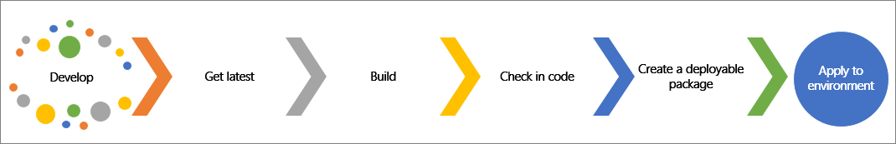
All developers for the application work in an individual environment that includes the Visual Studio application. As a reminder, Visual Studio is the integrative development environment (IDE) that is used to develop for Dynamics 365. Deployable packages are created in Visual Studio and then deployed to sandbox, test, and production environments by using Lifecycle Services.
When finishing your code and customizations in Visual Studio, you must make a few considerations. If several developers are on one project, you should perform a Get Latest process to merge all new code that has been checked in by the other developers, and then perform a local build
to ensure that your code will not disturb what is in the Azure DevOps repository.
When both processes have been performed, you can check in your code by using Team Explorer, which is connected to Azure DevOps. The code that is checked in will be built in Azure DevOps by using a build pipeline, and this will create a deployable package. Generally, you will not deploy your own code. By using Lifecycle Services, you can apply a deployable package by using the Apply updates tool.
Create a deployable package in Visual Studio
We recommend that you use a build environment to create a
deployable package, though these can be created in a developer
environment.
When code is complete and builds successfully, you can follow these
steps to create a deployable package in Visual Studio:
In Visual Studio, select Extensions > Dynamics 365.
Select Deploy > Create Deployment Package.
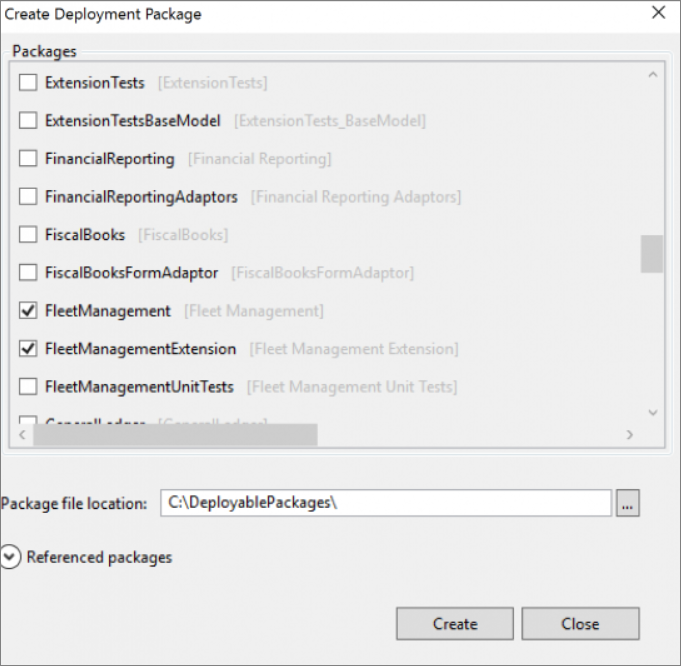
In the Create Deployment Package dialog, select the packages
that contain the models that you want to deploy.
You can select the Referenced packages drop-down arrow to view
all the dependent models of the models that are selected.
In the Package file location field, you can select the ellipsis '…' to select where you want to save the package file.
When you have selected all the models for the deployable package, select Create. A zip file will be saved to the location that you specified.
Production deployment
To deploy to production, customers can schedule a downtime that will determine when an update will be applied to the production environment by Microsoft. To schedule downtime to apply updates to the environment, the package must have been applied to at least one sandbox environment in the same project. You can submit a service request for this in Lifecycle Services.
Differentiate cloud and on-premises architecture
An understanding of the underlying architecture of finance and operations will help you appreciate the rich functionality
of the user interface. Some architecture components can vary between
cloud and on-premises deployments. The on-premises deployment is named Dynamics 365 Finance + Operations (on-premises).
Cloud deployments offer a service that is fully managed by Microsoft,
while on-premises deployments are deployed locally within a customer's
datacenter. Methodologies differ between cloud-hosted and on-premises
deployments. The deployment that a business uses will be based on who the
desired data trustee is and who will manage the application lifecycle.
Finance and operations apps cloud deployment
A cloud deployment provides multiple benefits, including reduced
implementation time, lower hardware and infrastructure costs, and
less invasive development. One of the main benefits of choosing a
cloud deployment is that the ERP service is fully managed by Microsoft.
Therefore, cloud deployments are a software as a service (SaaS) offering. This enables organizations to easily scale up or down depending
on the needs of the business. Cloud deployments also allow customers to
stay current in a consistent, predictable, and seamless manner. This
cadence, which allows continuous updates of the application, aims to
lower upgrade costs, provide everyone access to the latest capabilities,
improve performance, and offer a better support experience.
Finance + Operations (on-premises) deployment
When deciding which type of deployment your organization should use, you
should consider the overall approach of the implementation and
the management of the infrastructure. Additional considerations include
the organizational preferences to meet regulatory and compliance needs
of the business. In these types of situations, an on-premises deployment
might be chosen.
Organizations that choose to deploy Finance + Operations also need to take ownership of various tasks that would have otherwise been carried out by Microsoft. These tasks include configuring
high-availability solutions, disaster recovery solutions, and sandbox
environments. Keep in mind that there are functionality differences between on-premises deployments and cloud deployments.
For more information about the differences between cloud and on-premises architecture, see the link in the Summary unit at the end of this module.
Application components and architecture
Finance and operations apps are based on a model-driven architecture. The core functionality and some major functional features are segregated into various models. Element-level dependency is defined among all these models, building a robust application architecture for finance and operations apps. Application architecture is divided into platform models and application-specific models.
The platform models are:
- Application platform
- Application foundation
- Test essentials
Application platform is the core model to implement any functionality of finance and operations apps. Hence, this model is included as a referenced model by default when any custom model is created. It's not possible to remove the reference to this model.
The major application areas of the Application platform model are:
Runtime and Data access - The Application platform is the lowest model and contains the lowest level elements that communicate with the kernel.
Workflow and services - Workflow is a common functionality in finance and operations apps that represents a business process. It defines how a document flows, or moves, through the system by showing who must complete a task, make a decision, or approve a document. Standard workflows are already available for all apps. You can build custom workflows on the framework as desired.
Application platform enables users to develop custom services for finance and operations apps. When a developer writes a custom service under a service group, the service group is always deployed on two endpoints:
- SOAP endpoint
- JSON endpoint
Finance and operations apps also provide for OData Service and REST Metadata service, both of which can be used for integration purposes.
Client and Presentation - Finance and operations apps are designed to deal with complex business transactions in a user-friendly interface through different devices, such as laptops, tablets, or mobile phones. The web client, which users can access from their PC or laptop, is the most used interface. Several concepts are offered in the Presentation layer of the application, such as dashboard and workspace. These concepts are all configurable components that you can drill down to the core transaction in each module.
SSRS reporting - Each module of finance and operations apps has major standard reports, which are developed in SQL Server Reporting Services (SSRS). SSRS can connect to the business data of finance and operations apps and can create custom reports by using two methods:
- Query based
- Data provider
By using the query-based approach, you can develop simple reports. To develop complex business logic in reporting, the data provider approach is more appropriate.
Application foundation
The Application foundation model defines major functional features that are the foundation of other modules. The components of this model are the basic setup of the implementation.
Organization structure - An organization is a group of entities that work together to carry out a business process or achieve a goal. Organizational hierarchies represent the relationships between the organizations that make up the business. Different internal organizations are legal entities, operating units, and teams.
A legal entity is the most important configuration of any implementation that represents a registered and legislated legal structure. Legal entities can enter into legal contracts and are required to prepare statements that report on their performance.
An operating unit is an organization that is used to divide the control of economic resources and operational processes in a business.
A team is an organization in which the members share a common responsibility, interest, or objective. Teams can't be used in organizational hierarchies.
Number sequence - Use this component to generate readable, unique identifiers for master data records and transaction records that require identifiers. Number sequence in finance and operations apps has a robust framework that can regulate numbering based on individual/shared legal entity/operating unit combined with the fiscal calendar period.
Global address book - This component is a data model for contact information that's stored for all internal and external persons and organizations that the company interacts with. The data that's associated with party records includes the party's name, address, and contact information. It includes a directory of postal and electronic addresses of the organizations and individuals that interact with a business.
Depending on the business context, a person or an organization might play more than one role, and the same postal address and electronic address might be used for all roles. In this case, a change of address in one role should appear in all other roles. The global address book stores and handles addresses globally.
Source document - The Source document framework provides functionality that's necessary to record business events and create accounting for the newly created document, such as accounting distributions and subledger journal entries.
Test essentials
Finance and operations apps have a robust test framework that help conduct different testing procedures. You can create a test module to manage test code by using FormAdaptors. After the base test module is in place, you can import Task Recorder to generate test code. When you import a Task Recorder recording XML file, test code will be generated by using FormAdaptors.
FormAdaptors are wrapper classes over forms that provide strongly typed APIs that you can use to test form functionality. Pre-generated FormAdaptors are available for each package for built-in forms. In the test module, you can add reference to the corresponding FormAdaptors for packages along with the Test Essentials package reference, which has helper methods to run test code.
For more information, see Test projects in Visual Studio.
Application-specific models
Many application-specific models are available, including Application suite, Ledger, Retail, and Case management.
Standard models for different functional features are also available. Application suite is the most important model that covers major functionality.
Application suite
Application suite sits on top of Application foundation, and it contains application-specific elements. The Application suite model contains components of Supply Chain Management, Human Resources, Finance, and more. For enhancement in those modules, new custom models are created that reference the Application suite.
Other models
Other models, such as Currency, Directory, Contacts, and more, cover individual functionalities that are available in the application stack. Based on the extensibility requirement, these models are referenced to enhance functional features.
Dynamics 365 product suite
Dynamics 365 is a business application that consists of several solutions, such as Sales, Marketing, Service, Finance, Commerce, and Supply Chain Management. The latter three are considered the finance and operations apps.
Source control processes
Developers rely on source control to track code changes and discover
differences among content that is created by various developers. Finance and operations uses Azure DevOps for source control, which is accessible
through a web browser or Visual Studio by using the Team Explorer.
Azure DevOps is a cloud-based offering, which is also backed
by a 99.9 percent service level agreement (SLA). While the core services are the same between cloud and on-premises, cloud also offers immediate access to new features, improved connectivity to remote locations, and simplified server management.
Azure DevOps
Azure DevOps is used as the source control service when developing for finance and operations apps. If you're upgrading from previous versions of Dynamics AX, you may be aware of Team Foundation Services for source control, this has been replaced by Azure DevOps. As a developer, you will need to ensure Azure DevOps is set up and configured before you start developing.
To enable source control through Azure DevOps, you need to go to
https://visualstudio.microsoft.com/
and sign up for Azure DevOps to create
your account. When you create your account, you select a URL for
it. This will be the URL that you connect to from your
development computer when you configure source control. When your
account is created, or if you already have an account, create a new
project.
To configure your Visual Studio environment to connect to your team project, follow these
steps:
- Open Visual Studio as an administrator.
- Open the Solution explorer if it isn't already displaying by selecting File > Solution explorer.
- Select the Team explorer tab at the bottom of the window.
- Select Manage connections.
- Select Connect to team project.
- Select Servers….
- In the Add/Remove Team Foundation Server window, select Add.
- Paste the URL for your Azure DevOps project in the Name or URL of Team Foundation Server field.
Note
It will likely look like this example: https://projectname.visualstudio.com
- Select OK.
- Select Close.
- On the Connect to Team Foundation Server window, use the dropdown to select the project you just added.
- Select Connect.
When you are connected to the Team Foundation Server, you need to map your Azure DevOps project to your local model store and projects folders.
- Open the Source Control Explorer from Team Explorer.
- In the Source Control Explorer, select the Workspace dropdown at the top ribbon of the explorer.
- Select Workspaces.. and you see a list of workspaces.
- Select Edit for the first workspace you see.
- Map the Metadata folder of your team project to the root folder of the model store on your local drive (this is typically K:/AosService/PackagesLocalDirectory).
- Select Map.
- On the next dialog, select No.
- Repeat these steps for the Projects folder. You typically map the Projects folder to C:\Users[Admin Account name]\Documents\Visual Studio [VS Year]\Projects where Projects is a folder you create.
When creating a new Visual Studio project, you can add the project to
source control. Source control enables version control on elements in
Visual Studio. Version control forces you to check code out while developers are making changes to code.
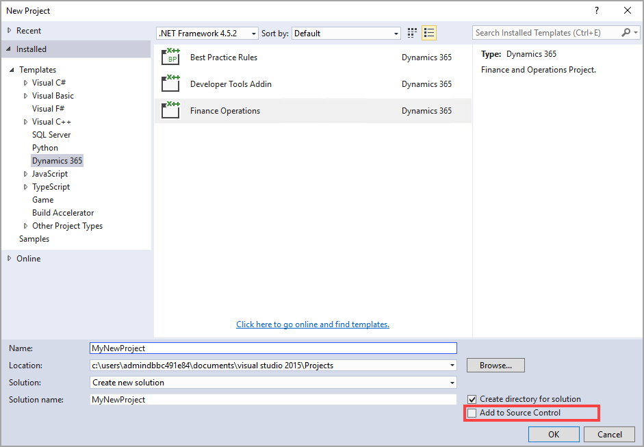
When you have finished making your changes, you must check in your changes.
Each check-in creates a new version of that element. This process allows other developers to see who made changes, what changes were made to an element, and when the changes were made. It also allows you to revert code to a previous version if errors are found in the current version. When you check in code, other developers can also then perform Get latest to merge all the latest available versions of the code.
When you perform a Get latest, you might come across some change
conflicts, where a new version of code conflicts with what you have
currently built in your code base. You can view and resolve conflict in
Visual Studio on the Resolve conflicts page.
Three panes are available on the Resolve conflicts page:
- Left pane - Shows your current code
- Right pane - Displays the new code
- Bottom pane - Displays what the automatic merge code looks like
You can select to accept the automatic merge or individually accept
which code is merged or overridden.
Branching and merging
Finance and operations uses branching to isolate individual software
assets, which allows you to work in parallel with other developers to
increase productivity. Branching requires more effort to merge
code. No defined rule exists for how branches are set up, but there's usually a Development, Test, and Production or Release branch. A Development branch is used
for code that isn't ready for testing; however, it's shared between
developers. Some larger teams might use multiple developer branches. The Test
branch is used to hold changes that are ready to be tested by other
users. The Production branch holds all the source code exactly as it's
deployed in the production environment.
You must create a deployable package to move code changes from one
environment to another. We recommend that you use a build environment to
create deployable packages that contain all changes. You can create
deployable packages from the development environment.
To create a deployable package, follow these steps:
- Select Dynamics 365 > Deploy > Create Deployment Package.
- Select the packages that contain your models.
- Enter a location to create the deployable package.
- After the deployable package is created, sign in to Lifecycle Services.
- Go to your Lifecycle Services project.
- Select Asset Library.
- Upload the deployable package that you created.
To deploy a package to a nonproduction environment or a production
environment, you use Lifecycle Services. The process to deploy the package differs
between the two. Also, a deployment to a production environment requires
the package to successfully deploy to at least one sandbox environment
in the same project.
To deploy a package to a nonproduction environment, follow these steps:
- Open the Environment details view for the desired environment.
- Select Maintain > Apply updates.
- Use the filter to select the package to apply.
- Select Apply. The status in the upper-right corner of the Environment details view changes from Queued to In Progress.
- When the package has been applied, the environment status changes to Deployed and the servicing status changes to Completed.
To deploy a package to a production environment, follow these steps:
- Go to your project's asset library in Lifecycle Services.
- On the Asset library page, select the Software deployable package tab, then select the package that you want to move to production,
- Select Release candidate. This indicates that this package is ready for production deployment.
- Select the package you wish to apply in your production environment, and then Select Schedule to submit a request to apply it.
- Specify the date and time to schedule the package application.
- Select Submit, and then select OK to confirm.
- At the scheduled downtime, package deployment starts.
- After the environment is serviced, you can monitor the status. The Servicing status field indicates the status of package application. Additionally, a progress indicator shows the number of steps that have been run, out of the total number of steps that are available.
- After the deployment is successfully completed, the Servicing status field is set to Completed.
Note
If package application isn't successfully completed, Microsoft investigates the issue. The Servicing status field indicates that package application has failed. The environment is rolled back to a good state.
While the production environment is being updated, the environment is unavailable. You can monitor the Servicing status field to monitor the status of the package application. When the deployment is
complete, the servicing status reads Completed. The deployable
package has now been applied to the production environment.
To learn more, review these resources:
Design patterns and practices for code deployments
The ability to describe and identify appropriate design patterns and
practices for code deployments is beneficial to every project and will
set up the project for success with features and production support.
Branching strategies
The idea for branching strategies is to get your configuration to create a good flow of code to production but to also enable you to work on multiple code projects at once.
Keeping your branching structure as simple as possible is imperative in helping to avoid over-complicating it unnecessarily. You’ll want to expand the strategy only as needed. You may need to have a more complex branching strategy if the implementation has a lot of customizations.
Generally, you will want to start with at least a three-branch strategy: one for development, one for testing, and one for releasing your code
to the production instance.
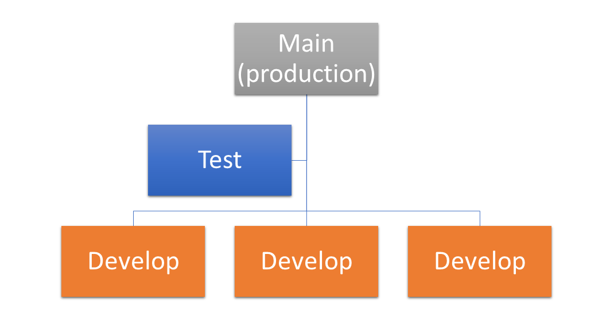
Each of the code branches will relate to
one or more environments in your implementation. For more complicated
branching strategies and different approaches or management strategies, see the reference links at the end of this module.
Code deployment flows
Code deployment flows, while connected to the branches that the code is
built from, differ slightly depending on a few factors. You will want to
take into consideration what the code is used for. For example, perhaps the code needed to move to production as soon as possible to fix an error. Perhaps the code is needed for additional functionality that is not important for the immediate future. These are some considerations that will help you determine where to deploy your code.
In general, you'll want to move the code in environments, that is,
from development environments where it has been verified to a testing
environment where multiple users can run through the process that you have modified. After the code has been tested, you will want to move it to a release or staging environment that will prepare it to be moved to
production. In finance and operations apps, the code will need to be deployed
into a Tier 2 Standard and Acceptance Test environment, and then selected as a release candidate before it can be promoted to the production
environment to ensure that it has been validated.
In the branching and code flow strategies that you develop, you
will need to remember that these can change throughout the
implementation, but planning for the changes is imperative to keeping
the end goal of the implementation in mind.
Finance and operations apps frameworks
It's important to understand the customization concepts of finance and operations apps and to master the skills to make those
customizations. With finance and operations apps, you can use the Task recorder
and Business process modeler tools to create user acceptance test
libraries. Additionally, you should also
know how to use the Data management framework.
Task recorder
Use the Task recorder tool to create multiple, in-depth, instructional
recordings of business processes in finance and operations apps that you
can use in various scenarios. For example, if you have a business user, go
through the process of creating a purchase order (PO). Then, upload that process into the asset library so that you can use it for training other resources. Use the recording with the Regression suite automation tool (RSAT) for regression testing scenarios and to share with other business users to ensure continuity across roles in the system.
Business process modeler
Use the Business process modeler tool to create user acceptance test libraries. You can create, view, and modify repeatable implementations that are based on libraries and flowcharts. Business process modeler helps you align the business processes for finance and operations apps with industry standard processes. Additionally, you can perform a fit-gap analysis between your business requirements and the default processes in the system, which helps you discover the development requirements.
Data management framework
Use the Data management framework to manage data entity packages
in finance and operations apps. It uses a series of concepts to help you
set up and copy the configuration for new implementations. This feature is beneficial,
even if your team doesn't understand the structure of data or
dependencies, and it can lead to an easier implementation.
You can use all three frameworks to enhance implementations
from beginning to end, and you can use them in tandem to create an easier
step-by-step implementation strategy.
Implement the SysOperation framework
The SysOperation framework replaces the older RunBase framework, and it provides more extensibility. Both frameworks support the following capabilities:
- Parameters
- Dialog user interface (UI)
- Batch servers
- Running operations interactively
For finance and operations apps, we recommend that you use the SysOperation framework instead of the RunBase framework. Use SysOperation framework when a job should process or calculate something.
SysOperation consists of four main elements:
- Data contract class
- Controller class
- Service classUI
- Builder class
Data contract class
The Data contract class indicates the attributes that are needed for the job, and the attributes automatically provide a dialog-based UI. The following code sample illustrates the Data contract class:
[DataContractAttribute]
internal final class MySysOperationContract
{
private ItemId itemId;
[DataMember, SysOperationLabel(literalStr("Item Id")), SysOperationHelpText(literalStr("Item Id help")), SysOperationDisplayOrder('1')]
public ItemId parmItemId(ItemId _itemId = itemId)
{
itemId = _itemId;
return itemId;
}
}
Controller class
The Controller class is the execution class, which contains information about the dialog, execution mode, progress bar, and other elements. The following code sample illustrates the Controller class:
internal final class MySysOperationController extends SysOperationServiceController
{
protected void new()
{
super(classStr(mySysOperationService), methodStr(MySysOperationService, process), SysOperationExecutionMode::Synchronous);
}
public ClassDescription defaultCaption()
{
return "My process job";
}
public static MySysOperationController construct(SysOperationExecutionMode _executionMode = SysOperationExecutionMode::Synchronous)
{
MySysOperationController controller;
controller = new MySysOperationController();
controller.parmExecutionMode(_executionMode);
return controller;
}
public static void main(Args _args)
{
MySysOperationController controller;
controller = MySysOperationController::construct();
controller.parmArgs(_args);
controller.startOperation();
}
}
Service class
The Service class is the actual code that's processed or calculated. The following sample code illustrates the Service class:
internal final class MySysOperationService extends SysOperationServiceBase
{
public void process(MySysOperationContract _contract)
{
// do something
ItemId itemId = _contract.parmItemId();
Info(strFmt("%1", itemId));
}
}
UI Builder class
The UI Builder class is only needed if the UI requires modification from the dynamically generated UI or if it has custom behavior.
Implement the SysExtensionSerializer
You can add fields to a table by using an extension. If you're adding more than 10 fields to a table extension, the compiler throws the best practice error. We recommend that you use the alternative way of creating a new table and adding a foreign key relation to the standard table. Maps are available to help you improve a developer’s processes. The SysExtensionSerializerMap and SysExtensionSerializerExtensionMap maps make the create, read, update, and delete (CRUD) operations automated to the custom table.
You can create a new table for your new fields, as the following image depicts.
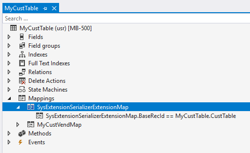
Consider the following details about implementing the SysExtensionSerializer extension:
The CustTable field is an int64 (RecId).
It creates relation to the CustTable standard table and points to RecId on CustTable, as the following screenshot shows.
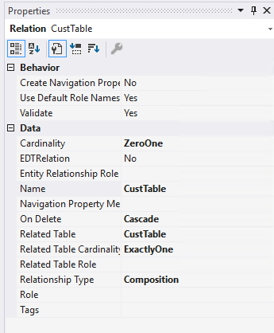
It creates mapping to map the SysExtensionSerializerExtensionMap field BaseRecId to a new table called MyCustTable and the CustTable field.
It creates an alternate key (Index) on the table for the CustTable field in the MyCustTable table. For the table property, the Replacement Key is set to the Alternate key, as the following screenshot shows.
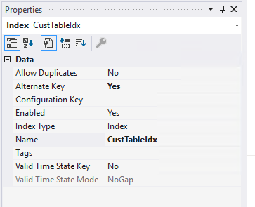
The SysExtensionSerializerMap contains methods for automatically inserting, updating, and performing many other functions. The standard CustTable table includes calls to the SysExtensionSerializer framework, which means that whenever a record in CustTable is updated, your table is also updated, as the following screenshot shows.
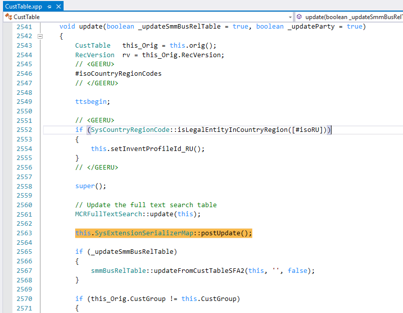
Using the SysExtensionSerializer framework fields helps you add a related table by following best practices and enabling CRUD functionality.
Perform support tasks
Lifecycle Services offers several features to help you support the environments that
you're managing. From the Full details page of any environment, you
can restart key services, see changes that have been applied to the
environment, and access the back and front ends of the environment.
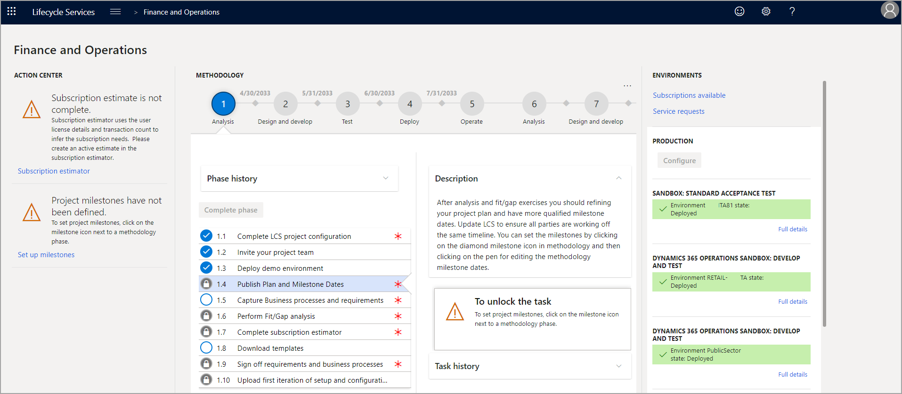
From the main menu, on the Full details page of any environment in
Lifecycle Services, select History, and then select Environment Changes from
the drop-down menu. The resulting page shows you every package that has
been applied from the Asset library to the environment, be that a
platform update, a code package, or a database maintenance task.
To apply code or updates to an environment, select Apply Updates
under the Maintain menu on the Full details page, and then
choose the relevant package from the list and select Apply.
For environments Tier 2 and up, the Move database option is also
available under the Maintain menu. This option allows you to export
a backup of the environment's database to the Asset library, import a
backup from the Asset library, or refresh the environment's database
directly from another Tier 2 environment. All processes run
automatically when they are queued to ensure repeatability and
reliability.
Another option that is available in environments Tier 2 and up is Restart
services, which allows you to remotely restart IIS, Batch, the Lifecycle Services
Diagnostic service, DIXF, or the Reporting server.
Additional support
There are several ways you can get additional support in Lifecycle Services for finance and operations apps.
The Dynamics 365 Community is where you can engage with experts and peers that work with and use Dynamics 365 applications. Here you can read forums, blogs, access webinars, videos and find useful events. To get started using the Dynamics 365 Community, go to Welcome to Dynamics 365 Community and log in with your Microsoft, work, or school account. You can explore the content with or without signing in. If you would like to post a question, comment, or receive email notifications, you will need to sign in.
Issue search
In Lifecycle Services, you can use the Issue search tool to quickly search for Microsoft Knowledge Base (KB) articles, hotfixes, workarounds, and reported issues. Within the Issue search tool, you can also review current issues that are in process of being fixed for a specific functional area of Dynamics 365 finance and operations apps, and fixed issues.
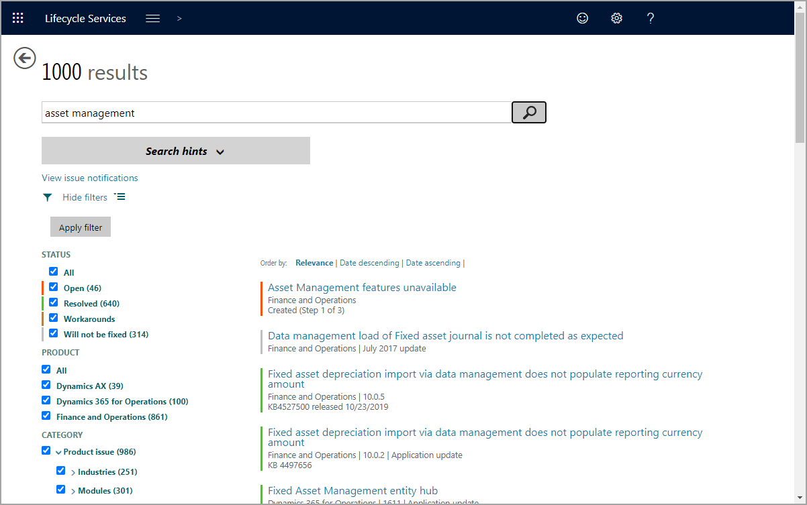
To access and use the Issue search tool, open your project in Lifecycle Services, then select the Issue search tile. Here, you can search for an issue. Once you have typed a query, you will be able to search through any related content. To view information about the status of Lifecycle Services Issue search content, go to Issue search in Lifecycle Services.
To read more about how to manage the support experience, go to Manage support experiences for finance and operations apps.
Provision and manage environments
The table of cloud-hosted environments on the Cloud-hosted
environments page of a project has an Add button that you can select to deploy
new environments.
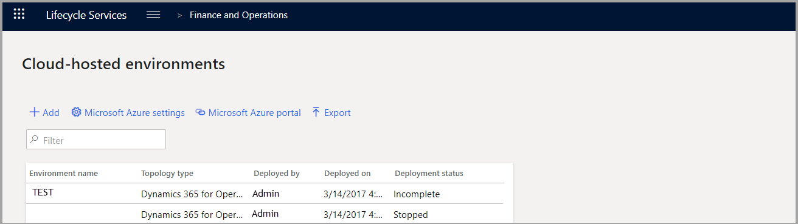
When you select the name, application version,
platform version, and purpose of the environment that you want to deploy,
you should consider changing a few key settings:
VM type - Depends on your client's needs.
Machine name - Makes your RDP window headers more
human-readable than a GUID.
Data - If you don't want demo data, make sure that None is
selected.
You can create, maintain, and delete cloud-hosted environments by using Lifecycle Services tools and components. Typically, you create a Lifecycle Service implementation project to host all cloud-hosted environments for a project. You can create cloud-hosted environments in Microsoft Azure with the Azure connector settings.
To create cloud-hosted environments in Azure, use the configuration from Azure connector in Lifecycle Services. The first time that you configure settings for cloud-hosted environments, the system prompts you to configure the Azure connector. Then, it guides you to the Lifecycle Services project settings for Azure connectors.
A requirement for Azure connectors is that you must use an Azure subscription that’s a contributor for Dynamics Deployment Services. Then, you need to allow Lifecycle Services to use the Azure subscription. You can assign the contributor role for Dynamics Deployment Services by using Azure identity and access management (IAM) for the subscription in the Azure portal.
To configure the Azure connector, follow these steps:
- Select Add in project settings for Azure connectors to configure the requirement that allows you to create a new Azure connector in Lifecycle Services. A prompt for Microsoft Azure setup appears in Lifecycle Services.
- Complete the Name, Azure subscription ID, and Azure subscription Microsoft Entra ID Tenant Domain (or ID) fields.
- Lifecycle Services attempts to validate the Dynamics Deployment Services role and authorization. If validation is successful, you must select an Azure region that you plan to use for creating the cloud-hosted environment. If you select Connect, the system creates the new Azure connector.
You can have more Azure connectors in Lifecycle Services, but one is always the default.
You can configure Microsoft Azure DevOps in the project settings in your Lifecycle Services project. You must configure this feature so that you can create a build pipeline when deploying a build and test environment.
Configuring Azure DevOps requires that you enter a URL for your organization in Azure DevOps and then select a DevOps project.
Create a cloud-hosted environment
When you configure an Azure connector as a requirement for cloud-hosted environments, you can create environments.
To do so, follow these steps:
- In the Cloud-hosted environments menu, select Add.
- Select the application version and platform for the cloud-hosted environment. Then, select your environment topology:
- DEMO - The system deploys an environment for demo purposes.
- DEVTEST - Two options are available:
- Build and test - The system deploys an environment for build and test. If your Azure DevOps is configurated for your Lifecycle Services project, the system creates a build pipeline in Azure DevOps by using this environment.
- Development - The system deploys an environment for development.
- Configure an environment name, the size of your environment, and various Advanced settings:
- Environment name - Enter a logical name, depending on your company’s naming standard.
- Size - Virtual machine sizes vary in price and performance. Select the option based on your specific requirements.
- Advanced settings - Configure these settings as needed according to your project requirements:
- Customize SQL Database Configuration - Specify that a database with demo data deploys in your environment.
- Disk - Select disk space, premium storage, and type of storage. Costs vary depending on your selection.
- Customize virtual machine names - Specify name preferences.
- Power Platform Integration - Configure Microsoft Power Platform integration.
Note
With tier 1 environments, you must complete this configuration during deployment, and you can’t change it after creation.
- Dynamics 365 for Finance and Operations - Select whether to publish the home page.
- Customize virtual network - Select whether to use a new or existing virtual network.
- Select Next when you complete all configurations. The system should create your new environment. The environment creation can take a while (four to six hours). Your new cloud-hosted environment should have a status of Queued in the cloud-hosted environment list until it deploys. The Deployment status changes to Deploying during creation.
Update a cloud-hosted environment
You can update cloud-hosted environments to a new application and platform version by configuring details for the environment. To do so, follow these steps:
- View available updates from the Full details in the cloud hosted environment list.
- Maintain your current environment configuration by selecting Maintain and Apply update options for the selected cloud-hosted environment. The Apply updates option lists all updates in the Lifecycle Services project Asset library.
- Import updates from the global Asset library to your project’s Asset library by selecting Import, selecting the update, and then selecting Pick.
- Select and confirm the software deployable package that you want to apply. The deployment status should change to Queued and then change to Servicing as the update proceeds.
After your environment updates, the deployment status changes from Servicing to Deployed.
Start and stop a cloud-hosted environment
From the cloud-hosted environment list, you can start or stop an environment by following these processes:
- Start an environment by selecting it and then selecting Start. The deployment status changes to Starting and then changes to Deployed. Then, your environment is accessible.
- If an environment’s deployment status is Deployed, you can stop it by selecting the environment in the cloud-hosted environment list and then selecting Stop. The deployment status changes to Stopping and then Stopped.
- Delete a stopped environment by selecting it and then select Deallocate. Deallocation prepares the environment for deletion, and then you can delete it.
Note
You can start and stop cloud-hosted environments directly in Azure, but it doesn't update the deployment status in Lifecycle Services. Therefore, you can stop an environment with a status of Deployed directly in Azure, and then it won't be accessible.
Diagnose performance issues by using Trace parser
By using Trace parser, you can consume traces, and analyze
performance in your finance and operations apps deployment. This ensures that you have an idea of what is currently happening in your deployed
environments and helps ensure that business users have the response time that they need for their daily processes.
This unit explores how to use the Trace parser to identify any current issues that are deployed in finance and operations apps environments.
How to use Trace parser
Trace parser is available in the PerfSDK folder on your
development environment deployments. When you have located the tool and
installed it in your development environment, you can create traces by
performing the actions that you want to analyze.
To capture a trace, you must first ensure that you have completed the list of tasks that you need to analyze to avoid having metadata and other
tasks included in your trace. You must also add the System tracing user
role to the user who needs to complete the trace. In the finance and operations user interface, go to System administration > Users >
Users. From there, you can select the user and select Assign roles
on the User's roles FastTab.
After you have added the System tracing user role, the assigned user can capture the trace. In the navigation bar at the top-right of the screen, select the question mark icon. In the drop-down menu that appears, select Trace. When the new screen appears, name the trace that you are going to capture and select Start trace. Perform all the actions that you need to capture and analyze before selecting Stop trace.
When you stop the trace, you can select Download trace, which stores the captured trace on your local machine, where you can analyze it
with the desktop version of Trace parser; however, it cannot be uploaded
later. If you choose Upload trace, Trace parser stores the trace in the cloud to download at a different time, but it is automatically deleted after seven days. Alternatively, the trace can be manually deleted from the Captured traces page.
Tip
If your sequence of events for a trace takes more than a few minutes, we recommend that you take multiple, smaller traces to minimize the risk of losing data if the trace becomes too large to analyze in a timely manner.
By using Trace Parser, you can identify performance issues. Some of these performance issues may include long-running X++ methods, time-consuming SQL queries, or client server calls.
The captured trace can be opened to diagnose issues and analyze
performance of the tasks in multiple ways. The next step after
downloading the trace file is to open the Trace parser on your developer
environment or VHD. Trace parser is installed by default and is located in C:\Program Files (x86)\MicrosoftDynamicsAX\Microsoft.Dynamics.AX.Tracing.TraceParser.exe.
Note
Trace parser is only available on DevTest topology deployed environments, it is not available in Demo topology environments.
In the Trace parser, you can download and import the previously captured events. To do this, select the Download and import button in
the Trace parser to import the ETL file.
To view the traces and analyze them, select the Timeline tab to see
the timeline view. You can use the Select Grouping drop-down menu to
group content that is based on a variety of categories and event types, such as Customer ID, username, Session name, and so on. The groupings display timestamps of each event, total number of events, and the lowest event level in the grouping. You can also see the list of all events in a threaded or unthreaded view. Go to the Property grid for a selected event to see a timeline chart for all the selected events, filter events, and session analysis notes. In the Call tree view,
under the Call tree tab, you find the call tree for all X++
methods for the captured events. Additionally, on the X++ tab is a list of all the X++ methods, and you can sort them by fields such as inclusive/exclusive durations, RPC, or database calls.
Scenario:
Contoso USA users are experiencing performance issues when they try to post a payment journal. The time it takes for the journal to post is taking much longer than it should. As a developer for Contoso USA, you have been tasked to diagnose why posting payment journals is taking so long.
Follow these steps to investigate the performance issues:
- Log in to finance and operations apps and start a trace from the Help and support menu.
- Name the trace.
- Select Start.
- Perform the business operation that you are diagnosing. In this case, you would post a payment journal.
- Stop the trace.
- Download the trace. It is important to keep in mind that when the trace is downloaded, it is deleted.
- Select Upload trace. You should receive a message in the Action center that the trace is uploaded.
- Return to the Tracing main menu
- Select Captured traces. The captured traces page opens with the trace you captured.
- Now you can launch Trace Parser, import the trace, and analyze.
Before you can analyze a trace, you need to download the Trace Parser. To download the trace parser application, follow these steps:
- In your developer virtual machine, open File Explorer.
- Find the Trace Parser .exe file. In most Tier 1 boxes, the download can be found in E:\AppRing3\10.0.8.10012\retail\Services\PerfSDK\Scripts.
- When Trace Parser is downloaded, start it.
- Register the database. To do this, specify the server name, and then name the database. See the following example:
- Select Register.
- Select Yes when you are asked if you want to create the database.
Monitor server health metrics in Lifecycle Services
Environment monitoring is a simple way to access current activity on
environments in your finance and operations apps implementation. By using the
Environment Monitoring and SQL Insights that come in a user-friendly dashboard, you can see measurements and diagnostics of
your environment's health. Within the Health metrics dashboard, some
issues are reported directly to the Microsoft Service Engineering Team
and some are mitigated immediately. If there are any concerns regarding
performance, this is a good way to gain insight into potential issues.
This unit examines how to view the health concerns for environments and determine how to mitigate many issues before they happen.
Several types of health checks can be performed within the Health metrics interface, which you can use to make observations about your environment. The health checks span various services and components of the environments, including the following:
- AOS
- Batch frameworks
- Data Import/Export framework
- Microsoft Azure SQL
- Management reporter
The checks are performed based on multiple data sources, like the
telemetry that is collected from the environments, the checks that are
done by a continuously monitoring watchdog service, CP counters, along
with other system-level counters that the environment produces. As previously mentioned, some health checks are reported to the Microsoft Service Engineering team for direct investigation.
Viewing the activity log and the user load in the activity monitor
On the Environment Monitoring page, select the Health metrics
tab to view the monitoring dashboard. Health metrics are collected for
all machines and components that relate to the environment that you selected in Lifecycle Services. The health metrics that you can view are CPU usage, available memory, errors logged per second, and batch heartbeat. You will be alerted about any abnormal activities in the metrics. Some alerts are taken care of by the system, but others will need you to take action to mitigate them.
The Activity tab contains several different charts and sections. The user interaction chart shows user activities on various
machines in the environment, as well as the SQL utilization trend. The
activity load section shows the various activities that were
performed on each machine, while the user load section shows all the
system users and the time that the user spent on a specific machine. If you hover over an activity in the activity load section, you can see an advanced look into the user's specific actions. You can also use filters on the page to narrow the information logs. Time duration, user, and search terms are only some of the filters that you can use to peer into the information for more comprehensive statistics. Note that the page doesn't load any data by default, and you must select a
time duration and then select Submit time for the data to show up.
The activity monitoring tool retains data for 30 days.
Working in Visual Studio
This unit explains how to check in code, merge code, resolve
conflicts, and roll back changes in Visual Studio.
Get the latest version and check in code
When working with multiple developers or projects, you should validate
that your code includes the latest source control's version. To avoid
conflicts and ensure that the code is developed correctly, checking the
source is mandatory.
The Source Control Explorer is the view for all the code and objects that are checked into source control.
To open the Source Control Explorer, follow these steps:
Select View on the menu bar of Visual Studio.
In the drop-down menu, select Other Windows.
From the available options, select Source Control Explorer.
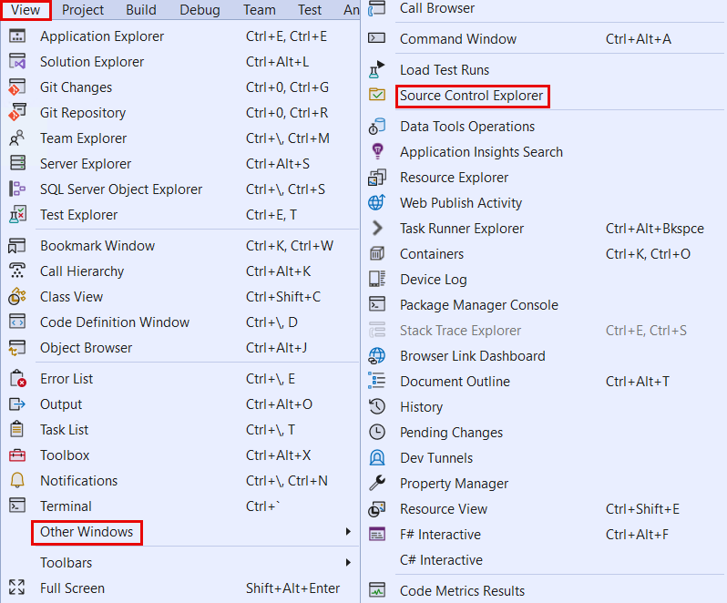
To make sure that you are looking at the most recent checked-in version of
objects in the Source Control Explorer, right-click on the objects and
select Get Latest Version. Alternatively, you can do this at the folder level to
get all the updates.
You should always get the latest files from the branch that you are working in before checking in new changes. If someone else also pushes changes to the file that you are editing, this gives you an opportunity to reconcile your changes with theirs and make sure that all the features are working before the resulting changes are checked in.
To perform the check-in process, follow these steps:
- Select Pending Changes from the Team Explorer window.
- Enter a check-in comment.
- Select Check In.
Merging code and resolving code conflicts
Sometimes, when you get the latest code from a branch into Visual
Studio, the code stored on the server has changes that are
different from the changes that you made locally. This is a merge conflict.
When Visual Studio encounters a merge conflict, it attempts to
resolve it automatically. Any such resolution is in the output log. If
any conflicts fail to resolve automatically, they appear in a new window that prompts you to tell Visual Studio what it
should do for each conflicting file.
The Resolve Conflicts window gives you the following options for
each file:
- Take Source - Use the file that you pulled from source control,
erasing all your local changes.
- Keep Local - Keep your local file, losing any changes that are present in source control.
- Merge using Merge Tool - View both versions of the file
side by side, choosing to keep or discard each change in either
version, one at a time.
You can't check in a changeset until there are no
unresolved merge conflicts, so mastering these tools is key to your
success as a member of a development team.
Roll back changes in Visual Studio
Everybody makes mistakes, and sometimes you need to roll back changes
that are checked into a source control branch.
In Visual Studio, this is simple to accomplish from the Source Control
Explorer. Right-click the branch that you want to roll back changes from
and select View History. This selection opens a new window, where you can see all the changesets that have been checked in to this branch. To roll back a changeset, right-click the changeset and select
Rollback Entire Changeset.
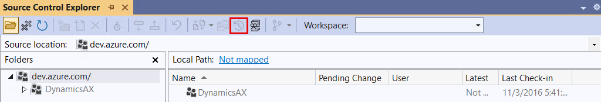
Unit test framework
You can use the SysTest Framework to write
unit test code, integrate the tests, and then run the test to automate
code testing. You can set up the SysTest Framework to create unit test
from code. You can also import Task recorder recordings into Visual
Studio to generate test code. More information about the Task
recorder is provided later in this module.
Your test can then be integrated into a test module which can be used to
manage test code. Adding the test module
to the source control allows you to integrate your test with the
build process. This addition runs your test code during the build to verify that all functionality is working as expected.
You can also run the test code individually. Running test codes is a repeatable process so, when the test class is created, you can run it multiple times. These iterations allow you to continuously validate your code changes. Additionally, quickly running tests to validate if your functionality still works after another developer has modified the element is key for productivity.
The option to rerun tests can also be beneficial to your
organization's productivity during upgrades that are released by Microsoft. Instead of requiring user resources to regression test all the
functionality from the user interface, you can run these unit tests that
will enter the required data and run testing processes to determine if
functionality is performing as expected.
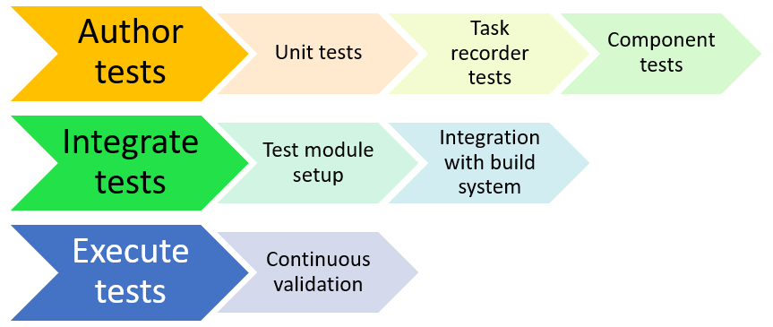
Exercise – Work with the test case framework
Note
To successfully complete this exercise, you must be using a finance and operations apps demo environment with the Contoso demo data and Fleet management module data.
To deploy the sample data set for Fleet management, follow these steps.
- In finance and operations apps, go to Fleet management > Setup > Fleet setup.
- In the Data tab, select the Create button to generate the sample data set for Fleet management.
- A message displays when the data is created successfully.
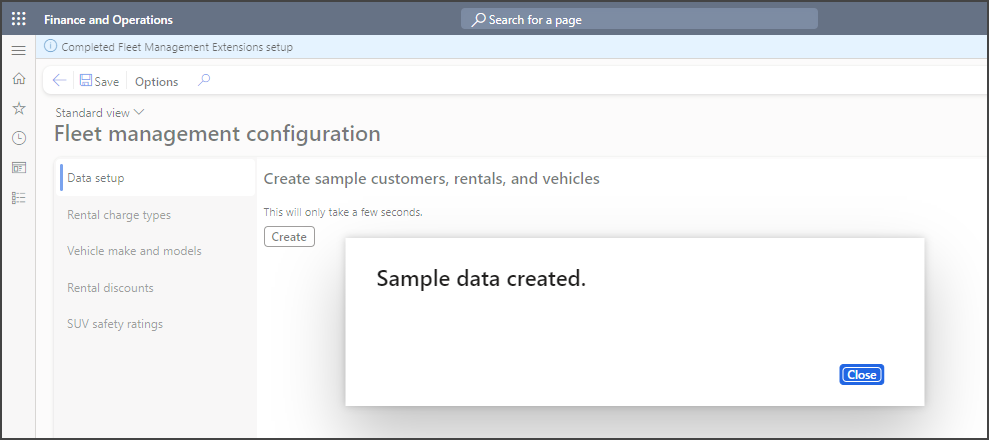
First, you create a new project to run a unit test in. To create a new project, follow these steps.
- Open Visual Studio as an administrator.
- Select File > New > Project.
- In the Create a new project page, search for the Finance Operations project template.
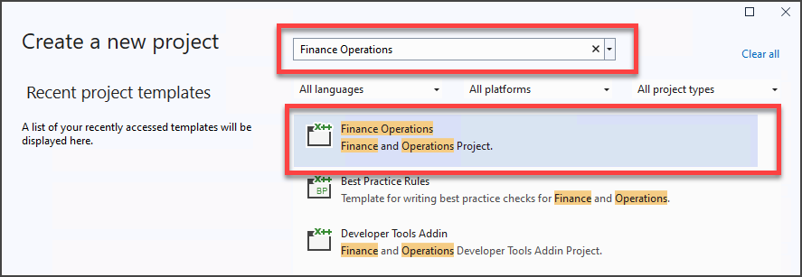
- Select the Finance and Operations Project template, then select Next.
- In the Project name field, enter MyTestCase.
- Select Create.
- In the Solution explorer window, right click the MyTestCase project, and select Properties.
- In the Properties page, set the Model to Fleet management.
- Select Apply, then select OK.
Now, you must add a class to your project, to do this follow these steps.
Right click MyTestCase in the Solution explorer, then select Add > New item.
If the Add new item page shows in compact view like the following image, select Show all templates.
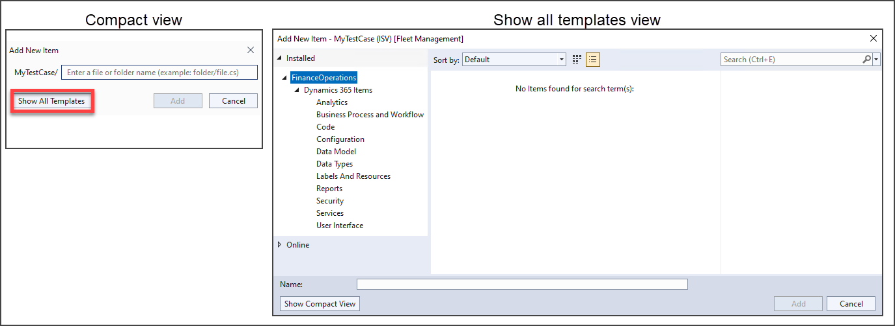
Expand the Dynamics 365 Items node in the left pane, and select Code.
In the Name field, enter MyTestClass1.
Select Add to add the class to your project.
Next, you write code that will run a test when ran in Visual Studio, to do this follow these steps.
In the Code editor, enter the following code:
//Test unit class must be public and extend the SysTestCase class
class MyTestClass1 extends SysTestCase
{
public void setup()
{
// Reset the test data to be sure things are clean
FMDataHelper::main(null);
}
[SysTestMethodAttribute]
// Using the [SysTestMethodAttribute] because the name of the class does not begin with “Test”.
public void testFMTotalsEngine()
{
FMRental rental;
FMTotalsEngine fmTotals;
FMRentalTotal fmRentalTotal;
FMRentalCharge rentalCharge;
FMRentalTotal expectedtotal;
str rentalID = '000022';
// Find a known rental
rental = FMRental::find(rentalID);
// Get the rental charges associated with the rental
// Data is seeded randomly, so this will change for each run
select sum(ExtendedAmount) from rentalCharge
where rentalCharge.RentalId == rental.RentalId;
fmTotals = FMTotalsEngine::construct();
fmTotals.calculateRentalVehicleRate(rental);
// Get the totals from the engine
fmRentalTotal = fmTotals.totals(rental);
// Set the expected amount
expectedTotal = rental.VehicleRateTotal + rentalCharge.ExtendedAmount;
this.assertEquals(expectedTotal,fmRentalTotal);
}
[SysTestMethodAttribute]
public void testFMCarValidateField()
{
FMCarClass fmCar;
fmCar.NumberOfDoors = -1;
this.assertFalse(fmCar.validateField(Fieldnum("FMCarClass", "NumberOfDoors")));
}
}
Save the class. Two test cases are available in the Test Explorer.
If the Test explorer is not visible, select View > Test explorer in Visual Studio.
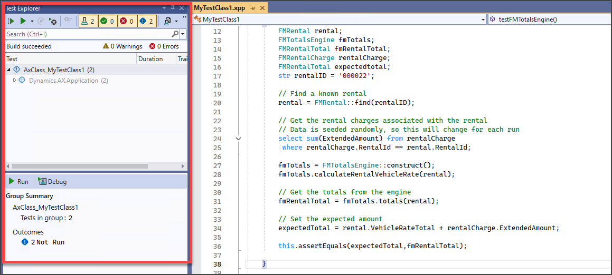
Right-click the MyTestCase project in Solution Explorer and select Build.
In the Test explorer window, select the Test tube icon to view your tests, then select the Play icon to run your tests.

You can view the results of your test in the Text explorer window.
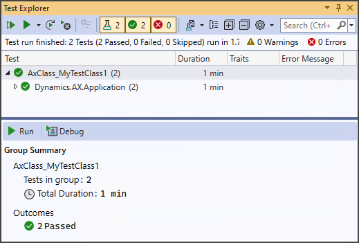
Task recorder
The Task recorder helps users write
test cases that represent a business process task or business process.
It focuses on high-responsiveness, a flexible extensibility application programming interface (API), and seamless integrations with consumers of business process recordings.
The Task recorder is integrated with the Lifecycle Services
business process modeler (BPM) tool so that users can produce business
process diagrams from recordings to design their applications. Additionally, the Task recorder can auto-generate application verification tests and play back previously-recorded processes.
The Task recorder records the user actions including button selections, value entry, and navigation.
To see how to create and consume a Task recording as a developer for testing, watch this video.
To create a task recording, follow these steps:
- We recommend that you refresh the browser before each new recording
to create a new user session. Refreshing your browser will restart
the Task recorder if you already have it open. This will provide the
most stable recording experience and prevent unwanted changes to an
existing task recording.
- Select Settings > Task recorder.
- Select Create recording.
- Enter a name of the recording and select Start. The Task recorder immediately enters Recording mode. The pane will display information and controls that are related to the process of recording.
- Run through a process. As you go through forms, select buttons, and enter data, steps are added to the task recording.
- Select Stop.
You can download and save a task recording in different ways:
- Task recording package - This can be used to play a task guide,
maintain the recording, or edit the recording's annotation.
- Raw recording file - This is used for developer scenarios, such
as test code generation.
- BPM file - This creates a Word document with the recorded steps,
as well as any screenshots that were captured.
- Save the recording to the Lifecycle Services library - If the Lifecycle Services library is
set as a Help library, you will be able to find the task guide by
searching the Help menu.
The Task recorder can automatically run steps of an existing
recording. You can also use Maintenance mode to update an existing
recording with additional or adjusted steps. When Maintenance mode is
complete, a new recording is produced that contains the original steps and the new steps. Keep in mind that any steps that are not run during
maintenance are not included in the new recording.
To maintain a recording that you have saved locally as a file with the ".axtr" extension,
follow these steps:
- Open the Task recorder pane.
- Select Maintain a recording.
- Select It is in a file I can upload to load the Task recorder package (.axtr).
- Select Start. The Task recorder begins recording in Maintenance mode.
While in Maintenance mode, you can choose from several controls to
maintain a task recording:
- Step - Run the next step. Any open lookups, drop dialogs, or Action Pane tabs might be dismissed when you use Step. In situations where open lookups, drop dialogs, or Action Pane tabs are being used, choose the Play option instead.
- Play - Run the remaining steps sequentially until playback is paused. While you are playing the recording, the Play button will become a Pause button to pause the playback. If a step cannot be performed, it will be skipped and automatically paused.
- Play until - This works like the Play option, but you can select the step that the playback will stop at.
Additional features are available for you to edit the recording that simplifies the maintenance process.
If you open Settings > Task Recorder > Edit recording, you can insert steps without re-recording the entire file, move steps without re-recording the entire file, and collapse the recording name and description fields to view more steps.
To edit a recording, use the following procedures.
Insert step
- Select the step after which you want the new step to be inserted.
- Go to the page that you need to record, and the Insert step option will appear.
- Select Insert Step. The Task recorder will switch to Record mode.
- Perform the step.
- Select Stop. You can repeat this step as needed.
- Select Done editing.
- Save or publish the task recording.
Move steps under a sub task
- Select the step after which you want to move.
- Select Move step after.
- Select the step or sub-task step that you want to move the step or sub-task step after.
- Select Done editing and save the task or publish the task guide when you are done.
Import a Task Recorder recording into Visual Studio
You can import a Task Recorder recording into Visual Studio to generate
test code. The task recording will be imported as an XML file, and the
test code is generated from it by using FormAdaptors.
To import a task recording into Visual Studio, follow these steps:
- Record a scenario by using Task Recorder.
- In Visual Studio, select the Dynamics 365 menu.
- Select Add-ins > Import Task Recording.
- Select the module that you want to import the task recording to.
- Select the XML file for the recording.
- Test code will be generated based on the SysTestAdapter and
FormAdaptor. (This code can be viewed in the Visual Studio IDE.)
- Set up Visual Studio options for test discovery and implementation.
- From the menu options, select Test > Windows > Test Explorer.
Tests from test code will be available for you to select from.
- Select the test and select Run > Execute selected.
The Task recorder feature includes additional advanced recording options. One option is the advance grid row selection. To ensure that the
correct grid row is selected during test playback, the filter criteria
needs to be explicitly defined. While you are recording, after you have opened a form that contains a grid and have selected a record, the Task recorder grid row selection dialog will appear. The dialog will have a filter pane pre-populated with the Task recorder's best guess. You can manually define the filter or use the best guess and apply the filter to the recording.
The Task recorder's Rollback changes to business data option can
revert business data that is created during recording when recording is
complete. This option can be used primarily to create task recordings for
tests. The rollback option only affects records that are created during the recording session. This is only available on non-production environments where the Test tools have been installed.
You can play the task guide On-rails. Users can play the task guide
to be prompted about what step to complete next. When the step is
completed, the task guide will automatically progress to the next step.
These rails prevent the user from selecting elements other than the
element that is identified in the task guide.
Additionally, if the task guide finds that a necessary element for the
step is not visible or not on the form on the user interface, an error
state occurs. A message will prompt describing the issue. The user can
then find the element and continue with the task guide. If you use the Next step and Previous step options to move through the task guide, you can sometimes prompt an error state if the previous or next step refers to an element that is not on the current form. You can also use the See more button to expand the task guide to see additional information, such as an example value or a note.
Implement reporting security requirements
Finance and operations apps have several ways to restrict user access to
reports. Authorization is used to grant access to elements of the
program through security permissions. Security permissions are combined
into privileges, which are then combined into duties. Permissions,
privileges, and duties can be added to a role and assigned to a user.
You can use this role-based security to grant user access to reports that are based on roles.
You can view security roles that are assigned to users from the Security configuration page in finance and operations apps. By
selecting a role on this page, you can view the duties, privileges, and
permissions that are related to the role. You can access the Security configuration page by going to System administration > Security > Security configuration
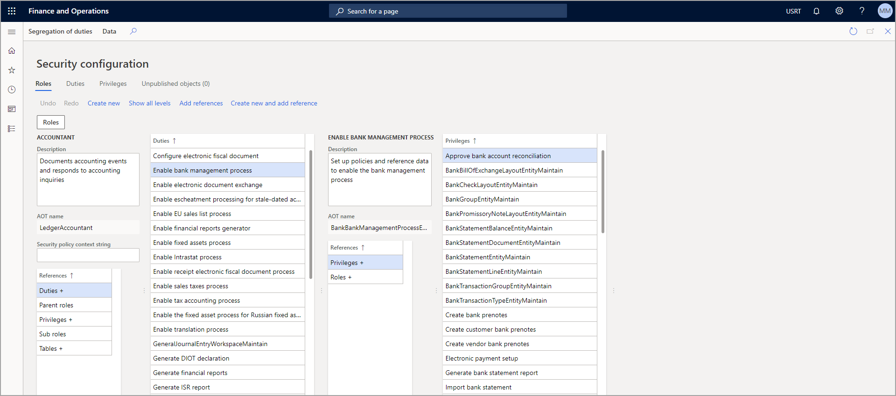
Data security is used to deny user access to tables,
fields, and rows in the database. Data security uses the extensible data
security framework (XDS) to control access to transactional data by
assigning data security policies to security roles. These policies can
restrict access to data, based on either the effective date or user
data. We recommend that you use the extensible data security to help secure data.
In addition to these security options, the Table Permissions Framework
can help protect data and is enforced by the Application Object Server (AOS). The Table Permissions Framework allows you to grant or deny Create, Read, Update, or Delete (CRUD) permissions to the data in a table. You can use this to give certain roles access to view and manipulate certain datasets.
For instance, you might want a salesperson to be able to view
and update a customer, but might want to deny them access to create
new customers or delete existing customers. To do this, you need to
grant the Read and Update permissions and deny Create and Delete
permissions for that role on the customer table.
Table permissions framework example
Table Permissions Framework adds table-level security that verifies user
rights regardless of the request origin. For example, consider
the following scenario:
- ABC Corporation implemented finance and operations apps. Users can access data within the application.
- The administrator configured a security role named Management.
Members of this role have access to sensitive financial data. One of
the tables that stores the sensitive financial data is named
ManagerFinancialData. Previously, this table was added as part of a
customization for the application.
- The administrator configures the ManagerFinancialData table so that
AOS must authorize all operations for that table.
- Before allowing Read access to data in the ManagerFinancialData
table, AOS will verify that the user is a member of the
Management role and that members of that role have permissions to
read the data. If the user is not a member of the Management role,
AOS will deny the read operation.
Set up and manage a downloadable VHD for development
After you’ve downloaded the VHD files, double-click the part01 file because it contains the .exe file that will extract all compressed files (part02 – part09) and will create a single virtual hard disk (.vhd) file. However, before the VHD file is created, you’ll need to accept the license agreement and specify a destination folder before selecting the Extract button.
Enable Hyper-V in Windows
Before you can run the VHD, you’ll need to ensure that Hyper-V is enabled on your computer. To do so, go to the search bar in the start menu, enter Turn windows features on or off, and then select the result that matches this text. After you’ve opened the result, find the Hyper-V folder and check whether it’s ready or not. By completing this action, you’ll ensure that the system will also check all folders inside that folder.
After you’ve checked the Hyper-V folder, select the OK button. You’ll need to wait for the installation to complete if it wasn’t already installed on your computer. After installation is complete, you’ll need to restart your computer.
Set up a new Hyper-V virtual machine
After you’ve verified that Hyper-V has been installed and set up correctly, you’ll want to ensure that a virtual machine (VM) is set up correctly. To set up your new VM, open the Hyper-V application. When you’re in the Hyper-V Manager, select New > Virtual Machine.
The Before You Begin screen will appear, where you’ll select the Next button to set up a virtual machine with a custom configuration.
On the next page, enter a name for your virtual machine and then select the Next button again. Select a generation (usually, generation 1 should work for the purposes of this exercise), and then select Next.
Next, you’ll need to enter how much memory the VM can use. At this point, you should specify at least 8 gigabytes (GB), or 8,000 megabytes MB, of memory, if not more. Otherwise, your Dynamics 365 development environment might be slow. Keep in mind the amount of memory that this VM will use from your computer.
Then, in the Configure Networking section, set the Connection setting to Default Switch. This setting controls the system’s access to the internet.
In the Connect Virtual Hard Disk section, you’ll attach the VHD file that you previously created to the VM. To do so, you’ll need to select the Use an Existing Virtual Hard Drive option, select the Browse button, and then point it to wherever you had saved your VHD file. Then, select Next to go to the final summary screen.
The final Summary page gives you an overview of the VM that you’re about to set up with the information that you entered. You can return and change your entries if something doesn’t appear correct. Select Finish to finish setting up your VM.
Set up Visual Studio, Microsoft SQL Server Management Studio, and more
After you’ve finished installing and setting up the virtual hard disk (VHD), you’ll need to ensure that the programs are installed and set up that you will need for finance and operations apps development, data querying, and access to the application. Because this environment isn’t connected to Lifecycle Services for status and isn’t deployed like other cloud hosted environments, a few differences occur in this process.
Search for Visual Studio in the Windows search bar and then open the program as an administrator. You’ll need to sign in to Visual Studio with an account that has a Microsoft Visual Studio license. Though a trial is available, most trials end quickly, so we recommend that you license Visual Studio to ensure long-term use on your virtual machine. After you’ve signed in, you can change the settings and personalize the application. Additionally, you can connect it to your organization’s Microsoft Azure DevOps website through the Team Explorer window inside of Visual Studio.
This approach can be useful if you have code that’s been developed by other resources and you want to test it or continue making changes on your new virtual machine. Keep in mind that you’ll also need to restore a database over the VHD to have any relevant data. Otherwise, you’ll be testing the development of your organization with demo data that’s provided from Microsoft. Both scenarios have benefits and drawbacks based on your needs as an owner of the virtual machine.
Using SQL Server Management Studio is a simpler way to ensure that the virtual machine is set up correctly because you can open the application and select Connect to the database. From that point, you can select AXDB, and then you can query the data as necessary.
Many who use these environments need custom or production data restored on the environment for accurate troubleshooting or development. If you want to restore the database with a copy from the Production environment, you’ll need to first restore the database from Production over to a Tier2 or above environment and then export the database by using the Microsoft supported processes.
To learn about the process for exporting and importing databases from your Lifecycle Services managed environments, go to Database movement operations home page.
Microsoft Excel and other products exist on the virtual machine as well; we suggest that you review the different programs that are available. For example, you can license Microsoft Excel with use of an Office 365 account by signing in to the application.
Additionally, you can install other applications that might be necessary for your development or testing processes. You can install applications, such as Microsoft Power BI Desktop, Insomnia for API management, and other integrations for finance and operations apps, on the virtual machine. You might need to allocate more space or memory from your local server for this process.
Upgrade the VHD
As you continue to work on the virtual hard disk (VHD) and use it with your Lifecycle Services deployed environments, updates happen and make the local VHD out of date in comparison. Therefore, you might want to update your VHD to keep up with the environments in Lifecycle Services as they continue to move from version to version. The process to update the environments is similar to the process of deploying code packages to a Development topology environment that’s deployed from Lifecycle Services. For that reason, the process should be familiar to more technical resources.
Your first step is to download the newest version of your update from Lifecycle Services in the Asset library onto the VHD. To do this, sign in to Lifecycle Services by using your credentials. In the Lifecycle Services project, select an environment. On the Environment page, go to Available updates.
Make sure that the .zip file is unlocked after it’s downloaded. To do so, locate the .zip file in your downloads, right-click the file, and then select Properties. The properties window contains a checkbox that you’ll need to select.
When you’re finished, select OK.
After you’ve unlocked the .zip file, you’ll need to extract its contents to a place on the VHD’s local drive. A good place to put these files is C:/Temp because it’s accessible from the command prompt and simple to navigate to. After the files are extracted in a secondary location, you’ll need to go to that folder. Open the Command Prompt tool as an administrator, from File Explorer or separately, and then go to the same folder.
When in the folder, run the following command:
AXUpdateInstaller.exe devinstall
This process might take some time; it runs through the entire devinstall playbook that’s located inside the package that was downloaded. After the process has completed, you’ll need to complete a compile and sync through Visual Studio to ensure that the VHD is set up and operational after the update.
For more information, see: Install deployable packages from the command line.
Create and build projects
Creating a project in Visual Studio is essential for organizing, managing, and deploying your code effectively. It groups related elements, manages dependencies, and controls builds, making it easier to navigate your solution. Projects also integrate with source control for version tracking, allow debugging and testing within Visual Studio, and prepare code for deployment to production or test environments. This structured approach streamlines development and reduces errors, ensuring your customizations work seamlessly with Dynamics 365. Projects in Visual Studio contain elements, which are stored as metadata when they are built. The metadata is then used by the application to run your extensions.
In Visual Studio, a solution is a container that organizes one or more related projects, allowing you to manage them as a single unit. Solutions help developers coordinate multiple projects, which may represent different parts of an application, such as business logic, UI components, and services. By grouping projects within a solution, you can build, debug, and deploy them together, ensuring consistency across the entire application. Solutions also facilitate dependency management and make it easier to navigate complex projects with shared code, providing a centralized workspace for development.
To create a new project, go to File > New > Project, or hold Ctrl + Shift while pressing the N key. In the project wizard, name your project and make sure to select the model
where it belongs. The model is difficult to change when you start adding
files to the project, so getting it right early on is crucial.
The New project wizard also lets you select dependencies if you know
which models you might be using or extending elements from. If not, you
can edit the model dependencies list later as you add elements. It's important to ensure that that model is correct from the start, as it will be difficult to change after files are added to the project.
Build, rebuild, and clean
To compile your code, you have multiple options: you can build, rebuild, or clean your project from the Solution Explorer by right-clicking and selecting the desired option. A build compiles any changes, a rebuild compiles all components from scratch, and clean removes previous build outputs, preparing for a fresh build. You can also access these options from the Build menu in Visual Studio.
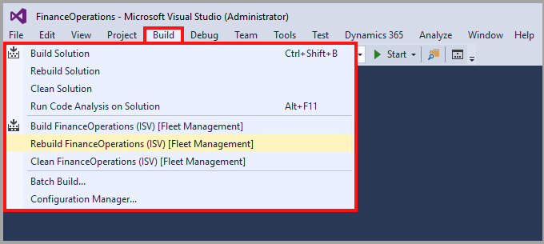
Watch this video to learn how to create a new project in Visual Studio.
Create and use label files
You can use label files to store text localizations for a user interface (UI).
To fully support multiple languages for a UI, the best practice is to use labels for all text that’s used in the UI, including:
- Properties such as Label, Description, and Help text.
- Information, warnings, or errors that might be returned in the UI.
You can create and modify labels in Microsoft Visual Studio. We don’t recommend that you change standard labels. Rather, you should create your own customized labels.
Create label files
Before you can use labels, you need to create them in a label file.
To find all current labels, go to Application Explorer > Label Files. Typically, the labels are named as the module in Dynamics 365 (one label file for Accounts Payable, one for Accounts Receivable, and similar). You should create one label file for each language.
The naming and numbering of label files depend on the policies that you’re using for development.
Best practices for label files are to use a clear name, such as the solution name, and then use a descriptive label ID for each one.
To add label files to a project, follow these steps:
Go to the Solution Explorer window and right-click the project or activate the context menu, and then select Add. New Item.
Select Label and Resources, Label file. The Label file Wizard will appear, as shown in the following screenshot.
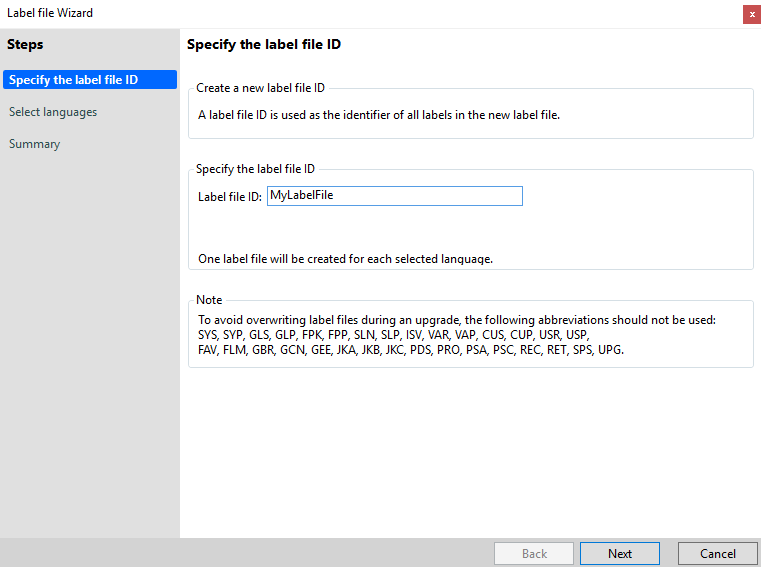
Enter a value in Label file ID, and then select Next to select languages, but you can add them later, too. A summary preview of the label file creation process displays.
If your entries appear correct, select Next. In Solution Explorer, notice that one label file for each language is created in your project, as shown in the following screenshot.
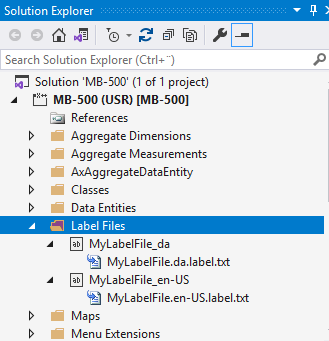
To add labels into a label file, follow these steps:
Open the file in the designer, which lists all labels for a label file and language, see the following screenshot.
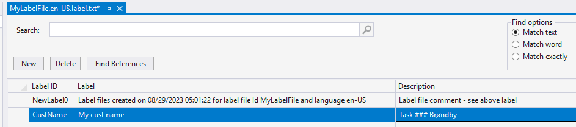
To create a label, select New. A new row for labels is created.
Enter a Label ID and a label. We recommend that you add a description, such as a task number. Examples of good label names to use are as follows:
- Label file name - MyLabelFile
- Label ID - CustName
- Label string - My cust name
If you’re supporting more than one language, you need to create a Label ID for applicable languages in each label file.
You can’t use label files unless you build them.
Use label files
All text in a UI should have a label created. You need to set up some labels on a property and other elements in X++.
The simplest way to use a label is to find it in the label file by following these steps:
- Open the label file in Application Explorer or Solution Explorer in the designer.
- Copy the row with the label (right-click or activate the context menu, and then select Copy or Ctrl+C).
- Go to the property or X++ and paste (right-click or activate the context menu, and then select Paste or Ctrl+V).
The following example shows how the inserted label should appear:
@MyLabelFile:CustName (Label File Id and Label Id)
The language that you use for a label is dependent on the functionality. Typically, you would use the language from the user; occasionally, a language-specific label is used, such as using English for an invoice to an English customer.
The following code sample illustrates how labels in X++ might appear:
internal final class MyRunnableClassLabel
{
/// <summary>
/// Class entry point. The system will call this method when a designated menu
/// is selected or when execution starts and this class is set as the startup class.
/// </summary>
/// <param name = "_args">The specified arguments.</param>
public static void main(Args _args)
{
Info(strFmt('@MyLabelFile:CustName'));
}
}
You can’t extend labels out of the box, but you can create a label in the label wizard with the postfix _Extension, such as Sys_Extension. Use the language that you want, and then create a label that has the same Label ID as in the Sys label file, giving it a new text. Now, the system uses the newly created label instead of the standard label.
Manage metadata by using the Application Explorer
In Visual Studio, all objects that define the application's structure and functionality-such as tables, forms, classes, and workflows-are stored within the Application Object Tree (AOT). The AOT serves as a centralized repository, organizing these elements for easy access and management during development and customization. Metadata in existing models is available in the Application Explorer as well.
The metadata types include:
- Extended Data Types (EDTs) - If you have programmed before, you might think of these as primitive types: Boolean, String, Real, Integer, Globally Unique Identifier (GUID), Container, Time, Date, and Enum.
- Enums - A type with a value that is chosen from a predefined list. One example might be a weekday, which must be one of Monday, Tuesday, Wednesday, Thursday, Friday, Saturday, or Sunday. An enum has great value because the enum values are stored as enum values in the database, rather than the full string value.
- Tables - Organize data into rows and columns.
- Forms - User interface elements that get their own page in finance and operations apps.
- Data entities - An abstraction of database tables that are used for integrations, data import/export, and more.
The Application Explorer contains the Application Object Tree (AOT),
which has two views: the model view and the classic view.
To access these views, right-click the AOT node and select model view or classic view.
Model view
The model view organizes metadata by the model that contains it, which is useful when you are browsing for elements that are related to a certain model's features.
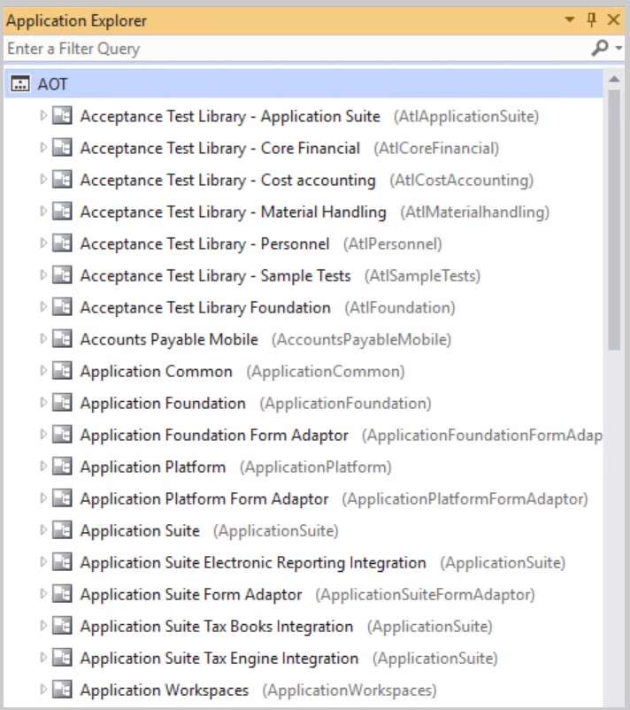
Classic view
The classic view groups metadata elements by their type, which is more helpful when you know what kind of element that you need but not which module contains it.
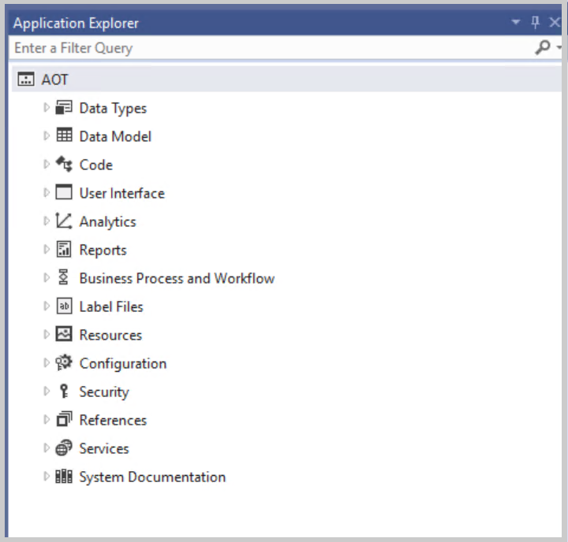
There are more elements in Application Explorer that are specific to building solutions, including:
- Analytics - Use for aggregate dimensions, measurements, and Key Performance Indicators (KPIs).
- Label files - Use in both properties and in X++ code. Label files are categorized per language.
- Reports - Defined in the system, you must ensure the SSRS reports are published before using them.
- Resources - Use for extensible controls. Can be saved pictures, HTML, and JavaScript.
- Configuration - License codes and configuration keys that you define in the configuration.
- Security - Security roles, duties, privileges, and policies.
- References - .NET Framework assemblies from a dynamics link library (dll).
- Services - Custom services and service groups.
Use queries to find objects in the AOT
If these views aren't sufficient to help you find the elements that you need, you can also filter the AOT by entering the field name, followed by a colon and a space, and then followed by a value. If you are looking for a recently created element, but cannot find what you need, try using the Refresh button to make sure that the AOT has the latest data.
To view the types of filters you can use in the AOT, select the Search field and begin typing in the Application explorer. The list of filters and a list of previously searched terms will appear.
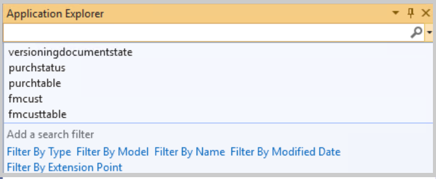
Implement base types and operators
This unit explains the different data types and operators that are used in X++.
Data types
Primitive data types are the most common data types that you encounter. The primitive data types are: anytype, boolean, date,
enum, guid, int, int64, real, str,timeOfday, and utcdatetime.
- Date - This data type contains the day, month, and year. You can write out the date as literals by using the format day\month\year. The year must be entered as four digits. The dates must be within the January 1, 1900 and December 31, 2154 range. We recommend that you use
utcDateTime instead of Date because it combines date, timeOfDay, and time zone information into a single data type.
- Enumerations (enums) - Are a named list of literals. For example, there's an enum called
NoYes, with a list of literals No and Yes. Each literal can also be represented by a number. The first literal has the number 0, the next literal has the number 1, and so on. You can also provide your own values in the enum metadata. To reference an enum value, you would use the enum name followed by two colons and the name of the literal. Considering the NoYes enum again, to reference the Yes literal, you would write NoYes::Yes.
- GUID - This data type is a globally unique identifier (GUID) value. A
GUID number is unique across all computers and networks.
- Int - These values are 32-bit wide integer signed numbers that don't include a decimal place. There's no support for unsigned integer types.
- Int64 - A larger, signed integer data type that works like the
int data type, except that it's 64 bits wide compared to 32 bits. The int64 type has a greater range for larger numbers.
- Real - These data types hold number values with decimals.
- Str - This data type contains values that are a string of characters. The
str value must be wrapped in double quotation marks ("text") or single quotation marks ('text').
- TimeOfday - This data type is an integer value that represents the number of seconds that passed since midnight.
- Utcdatetime - This data type is a combination of the
date type and the timeOfday data type. The format is yyyy-mm-ddThh:mm:ss with the default value being 1900-01-01T00:00:00.
Composite data types
Along with primitive data types, there are composite data types.
Composite data types include arrays, containers, classes, delegates, and tables.
- Arrays - Contain a list of items that have the same data type. You can retrieve an element in the array with an integer index. You can use arrays in different ways. Dynamic arrays are open and fixed-length arrays specify a certain length. Partly on disk arrays can be dynamic or fixed, with an option to determine how many items are held in memory.
- Containers - Are dynamic collections of primitive items or other containers. Containers can be useful to pass different types of values, but they aren't ideal when used in processes that frequently change the size or contents.
- Classes - Can be used as a data type to declare an instance of a class within a method.
- Delegates - Can be defined on a method, table, form, or query. When a delegate is called, it also calls their subscriber methods. Delegates never return a value and have a default value of no handlers added, which means nothing is called when you call them.
- Tables - Can be used to declare an instance of a table. Once a table instance is declared, you can manipulate the data within the table.
We recommend that the table variable has the same name as the table, but you should use camel casing. For example, the table EcoResProduct would be declared by using camel casing as ecoResProduct.
User-defined data types
Extended data types (EDT) are user-defined types that are based on the
boolean, int, int64, real, str, date, and
container data types. EDTs can be used on variables, method parameters, and field declarations. User-defined data types offer significant benefits, such as reusing type definitions, including assigned labels and string lengths. They make code easier to read because the EDT name can be defined by the user. Therefore, instead of using just str, you could use an EDT named Color, which would be a more meaningful name. You can also set certain properties on the EDT that all instances of that type use. Additionally, you can create hierarchies for EDTs so an EDT can inherit the properties of a parent.
Variables
Variables are identifiers that designate a storage location where a value of a data type is stored. The size, precision, default value, and conversion functions depend on the variable's data type. Variables can be declared anywhere in a code block in a method; they don't have to be declared at the beginning of a method.
In a class, member (global) variables and local variables have different scopes. Global variables can be used throughout the instance (excluding static methods) of the class, while local variables are only available within the scope of the class method.
When you declare a variable, you must assign the data type and then assign the variable name. At this point, you can assign a value or leave it open to set the value. The following procedure is an example of declaring a variable.
- Declare the data type inline and within code. In this example, use str for string data type.
- Name the variable. It must start with a letter or underscore. We recommend using meaningful names for variables that follow camel case. Camel case is where you don't capitalize the first letter of the name, but each word or abbreviation that follows the first in the phrase is capitalized (for example, purchaseOrderLine). Spacing or punctuation isn't permitted.
- If you're assigning a value, add the equal sign and the value of the variable. String values must be either surrounded by double quotation marks or by single quotation marks for hard-coded text. It's best practice to use labels in strings, excluding the few exceptions where this isn't feasible. Single quotation marks around hard-coded text suppress the best practice error that you would get for not using a label.
- End the declaration with a semicolon.
str customerName;
or
str customerName = "Name";
Watch the following video to learn how to declare a variable.
Operators
Operators are used to compute values. The different types of
operators include assignment operators, arithmetic operators, and relational operators.
Assignment operators can change the value of the variable or field.
| Operator |
Description |
Example |
| = |
Assigns the value after the equal sign to the variable before. |
Int i = 1; |
| += |
Assigns the current variable value plus the value after the equal sign. |
int I ; I += 1; |
| ++ |
Increments the variable by 1. |
int I; i++; |
| -= |
Assigns the current variable value minus the expression after the equal sign. |
int I; I -= 1; |
| -- |
Decrements the variable by 1. |
int I; i--; |
Arithmetic operators are used to make numeric calculations.
| Operator |
Description |
Example |
| << |
The left shift operator multiplies the left value by 2 by the number of times equal to the value on the right. |
int a = 1 << 2 (this equals 1*2*2.) |
| >> |
The right shift operator divides the left value by 2 by the number of times equal to the value on the right. |
int a = 1 >> 2 (this equals 1/2/2.) |
| * |
This operator multiplies operands. |
int a = 1*2 |
| / |
This operator divides the left value by the right value. |
int a = 1/2 |
| div |
The integer division operator performs an integer division of the left value and the right value. |
int a = 20 div 6 (This returns a division of 3 with a remainder of 2. A = 3) |
| mod |
The integer remainder operator returns the remainder of an integer of the left value and the right value. |
int a = 20 mod 6 (This returns a division of 3 with a remainder of 2. A = 2) |
| ~ |
The not operator performs a binary not operation. |
int a = ~1 (This returns -2.) |
| & |
The binary AND operator performs a binary operation on the left and right value. This returns the bits in common. |
int a = 1 & 3 (This returns 1.) |
| ^ |
The binary XOR operator performs a binary XOR operation on the left and right value. This returns the bits set in one, but not the other. |
int a = 1 ^ 3 (This returns 2.) |
| | |
The binary OR operator performs a binary operation on the left and right value. This returns the bits set in either. |
int a = 1 | 3 (This returns 3.) |
| + |
The plus operator adds operands. |
int a = 1 + 4 (This returns 5.) |
| - |
The minus operator subtracts the left or right values. |
int a = 4 - 1 (This returns 3.) |
| ? |
The ternary operator takes three values. If value 1 is true, value 2 is returned. Else, value 3 is returned. |
int a = (x > 3) ? 1:5 (If x is greater than 3, then return 1, else return 5.) |
Relational operators are used in X++ to compare the values between variable values of similar types. Some limitations with complex data types such as GUIDs apply.
| Operator |
Description |
| Like |
This operator is exclusively used in SQL statements and returns true if the criteria are found within the second value. For example, select a table where a field such as ‘12*’ returns all rows from a table where the field values start with 12. |
| == |
Returns true if the values are equal. |
| != |
Returns true if the first value isn't equal to the second value. |
| >= |
Returns true if the first value is greater than or equal to the second value. |
| <= |
Returns true if the first value is less than or equal to the second value. |
| > |
Returns true if the first value is greater than the second value. |
| < |
Returns true if the first value is less than the second value. |
| && |
Returns true if the first and second value are true. |
| || |
Returns true if the first or second value is true. |
| ! |
Returns true if the value is false, and it returns false if the value is true. |
A ternary operator allows you to evaluate if an expression is true or
false to get a result. This is like an if statement, which is
discussed in the Use conditional and iterative statements and Exception
handling units. However, where an if statement provides conditional
branching for the code that is being run, the ternary operator result can be assigned to a variable. The following example checks if the variable x is equal to 5. If it's equal to 5, then the ternary operator assigns the value Yes to the result variable.
If x doesn't equal 5, the ternary operator assigns the value No to the result variable.
result = (x==5) ? "Yes" : "No";
Common structured programming constructs of X++
X++ uses classes to define data and create objects. The data that is defined in a class represents the state of the object and is stored in variables. Classes also contain methods, which will tell the object what to do.
The first piece of a class is the class declaration. The class
declaration holds the name of the class, the instance variables, and
other modifiers. In X++, all classes are treated as public, even if they're not explicitly declared. However, you can control the accessibility of methods within those classes using access modifiers like private, protected, and public. It's best practice to provide one of the following modifiers.
- Private - Restricts access to methods and variables so that they can only be accessed within the same class.
- Protected - Allows methods and variables to be accessed within the same class and by subclasses.
- Public - Allows methods and variables to be accessed from any other class.
The following is an example of a class declaration plus declaration of a member variable:
public class CustomerDetails
{
private str custName;
}
Classes must be instantiated before they can be used. The following example demonstrates how to create an instance of the TruckLoad class with another class, Truck. In the `createNewTruckLoad method of the Truck class, a variable of type TruckLoad is declared. An instance of the TruckLoad object is then created using the default constructor new and returned to the caller.
The instance method shipTruckLoad will accept an instance of the TruckLoad class to perform a shipping operation on that instance as well as a static method to calculate a total weight.
public class Truck
{
public TruckLoad createNewTruckLoad()
{
TruckLoad myTruckLoad = new TruckLoad();
return myTruckLoad;
}
public void shipTruckLoad(TruckLoad _truckLoad)
{
_truckLoad.ship();
}
public static int calcTotalWeight(int netWeight,int tareWeight)
{
return netWeight+tareWeight;
}
}
Methods can be as follows:
Instance methods (or object methods) - Are embedded in the
object that was created from a class. The object must be instantiated before you can use this method. An instance method can access the instance and static state, whereas a static method can only access the static state.
Static methods (also known as class methods) - You do not need
to instantiate an object to use these methods. You can declare a
method as static with the keyword static. A specific type of
static method is the Main method, which can be called directly from
a menu option.
Methods are made up of a signature and a body. The method header holds
the method's name, return type, method modifiers, and parameters. If
there is no return type, then the keyword void is used. The body
holds the variable declarations, method declarations, and statements.
The following is an example of a method. The method is a public method that returns a real data type. The method is called ReturnCalculation. It
also has a real data type parameter _expression1. Parameters should
begin with "_" to easily identify parameters within the code.
public real ReturnCalculation(real _expression1)
{
real expression2 = 2;
return _expression1 * expression2;
}
Now, you can collect all the different pieces of a class to create your
own class.
Collection classes
X++ in finance and operations apps provides distinct types of constructs that you can use to store data:
- Composite types - Refer to arrays and containers, which are excellent for storing primitive types.
- Collection classes - Refer to arrays, lists, maps, sets, and structs (short for structures), which you can use to store primitive types and objects to maximize performance.
You can convert a collection into an array, which is why it’s a composite type of construct and can be a collection class.
Collection classes can contain any data type, including objects, and they provide reliable performance. X++ includes several collection classes:
- Array - Includes a collection class and composite data type, and the class resembles the array type in X++.
- List - Contains a list, in sequential order, of one data type. You can use the addStart and addEnd methods to insert values.
- Map - Contains a list with a key to another value for a specified data type.
- Set - Contains values for a single data type. A value can exist only once, and you can check whether a value is already in the set. You can use the remove method to remove a value from a set class.
- Struct - Contains values for multiple data types.
Collection class: List
The List collection class contains values for a single data type, which you set up when you construct the list, in a sequential order. You can add values to the beginning (addStart) or at the end (addEnd), and you can use ListEnumerator or ListIterator to traverse values, as the following code sample shows.
internal final class CollectionClassListJob
{
/// <summary>
/// Class entry point. The system will call this method when a designated menu
/// is selected or when execution starts and this class is set as the startup class.
/// </summary>
/// <param name = "_args">The specified arguments.</param>
public static void main(Args _args)
{
List list = new List(Types::Integer);
list.addEnd(10);
list.addEnd(20);
list.addStart(30);
// traverse values using ListIterator
ListIterator listI = new ListIterator(list);
while (listI.more())
{
Info(strFmt('%1', listI.value()));
listI.next();
}
// traverse value using ListEnumerator
ListEnumerator listE = list.getEnumerator();
while (listE.moveNext())
{
Info(strFmt('%1',listE.current()));
}
}
}
This code returns 30, 10, and 20, and it uses ListIterator and ListEnumerator to traverse values that you inserted at the start and end of the list. You can insert the same value multiple times, but you can’t check whether it already exists in the list.
Collection class: Map
The Map collection class has values associated to a key, while a single data type specifies the key-value pair.
Similar to the List collection class, you can use MapEnumerator or MapIterator to traverse the map’s key-value pair, and you can check whether a key value already exists and look up specific key values, as the following code sample shows.
internal final class CollectionClassMapJob
{
/// <summary>
/// Class entry point. The system will call this method when a designated menu
/// is selected or when execution starts and this class is set as the startup class.
/// </summary>
/// <param name = "_args">The specified arguments.</param>
public static void main(Args _args)
{
Map myMap = new Map(Types::Integer, Types::String);
myMap.insert(10, 'Key value 10');
myMap.insert(20, 'Key value 20');
MapEnumerator mapE = myMap.getEnumerator();
while (mapE.moveNext())
{
Info(strFmt('Key = %1 Value = %2', 0,0));
}
if (! myMap.exists(30))
{
myMap.add(30, 'Key value 30');
}
Info(strFmt('%1', myMap.lookup(30)));
}
}
This code shows two types for a map: key value and a specified value. You can add items by using the insert method, and you can traverse all item sets. To check if a key already exists, use the exists method and then the lookup method to find its value. If you insert an item that has an existing value, you overwrite it.
A typical use case for maps is storing virtual fields in a form when you're working in the form.
Collection class: Set
The Set collection class is a list of values for a single data type. The value is the key and the value, so you can test if an item already exists. For lists and maps, you can use a SetEnumerator or SetIterator to traverse values in the set, and you can check if a value already exists.
internal final class CollectionClassSetJob
{
/// <summary>
/// Class entry point. The system will call this method when a designated menu
/// is selected or when execution starts and this class is set as the startup class.
/// </summary>
/// <param name = "_args">The specified arguments.</param>
public static void main(Args _args)
{
Set mySet = new Set(Types::Int64);
SalesPool salesPool;
while select salesPool
{
if (mySet.in(salesPool.RecId))
{
continue;
}
// do some code
mySet.add(salesPool.RecId);
}
}
}
This code adds RecIds for the SalesPool table into a map. If RecId is in the set already, the code continues with the next record.
Sets are good for small lists that you use to check values. For example, it could be a set with active inventory dimensions, and you could check if the ledger is actively using that set.
Use X++ to write SQL statements
You can use SQL statements in X++ to retrieve and manipulate data in the Finance and operations database.
Select statements
You can use select statements to choose what data is retrieved from
the database. In a select statement, you must define the table you retrieve data from and which field. You can use conditions to further filter the data, and select the sequence in which the data is listed.
The select statement contains the keyword select and parameters. Parameters contain the pieces of the select statement that determine how and what data is retrieved.
The following is an example of the select statement syntax:
Select [FindOptions] [FieldList] from [Table] [Options] [OrderByClause] [WhereClause] [JoinClause] method()
The Find options parameters give additional options for retrieving
data. For example, crossCompany retrieves data across legal entities,
firstOnly retrieves only the first record, firstOnly10 only fetches
the first ten records, and forUpdate selects the data with a lock.
The Field list specifies which data to retrieve. You can also use aggregate functions, like sum, avg, minof, maxof or
count.
After the Field list, the keyword "from" is used, followed by the
table to retrieve from. You can then include options to sequence or group the data by using "order by" and "group by" keywords. The where clause uses expressions to define the criteria for the statement.
Here's an example of a select statement. This statement retrieves all account numbers from the CustTable.
Select AccountNum from custtable;
You can add parameters to make more complex select statements. In
this example, doing so retrieves all the records from CustTable where the
AccountNum values are greater than 1000 and less than 2000. The records are also sorted by the AccountNum values in descending order.
Select forUpdate CustTable order by AccountNum desc
where custTable.accountNum > '1000'
&& custTable.accountNum < '2000';
Join methods
A join can be used to combine more tables to a select statement. You can use relational operators such as equal to, not equal to, greater than, less than in where clauses in select statements.
The following is an example of a join statement. The statement joins a SalesLine record to the related SalesTable where the sales ID on the sales line matches the sales table sales ID.
A select statement returns all records, and remaining records can be
fetched by using a next statement.
A while select statement loops through every record that matches the select criteria, which is common for data manipulation.
SalesTable SalesTable;
SalesLine SalesLine;
// Select with join (first query)
select SalesLine
join SalesTable
where SalesLine.SalesId == SalesTable.SalesId;
{
// Process the results of the select
info(strFmt("SalesId: %1, ItemId: %2, CustAccount: %3",
SalesLine.SalesId, SalesLine.ItemId, SalesTable.CustAccount));
}
// While select with join (second query)
while select SalesLine
join SalesTable
where SalesLine.SalesId == SalesTable.SalesId
{
// Process each record in the while loop
Info(strFmt("Processing SalesId: %1, ItemId: %2, CustAccount: %3",
salesLine.SalesId, salesLine.ItemId, salesTable.CustAccount));
}
In the following example, instead of retrieving the first record that matches the criteria, the while select statement loops through each record where the criterion is true. In the code below, all account numbers that begin with US are retrieved, and the CreditMax for each record is updated to 5000.
{
CustTable custTable;
while select forUpdate custTable
where custTable.AccountNum like 'US*'
{
custTable.CreditMax = 5000;
custTable.update();
Info(strFmt("Account number %1 has been updated", custTable.AccountNum));
}
}
Insert methods
Insert methods can be used to add a new record to a table. Insert methods only insert the columns that are selected by the query. You can override the insert method's validations and processes by using the
doInsert() method. The insert_recordset statement can insert
multiple records by copying the records from one table and inserting them into another.
Insert methods need ttsBegin and ttsCommit to ensure that the data insertion process is handled as a single transaction.
The following is an example of using an insert method statement to create a new customer.
{
FMCustomer fmCustomer;
ttsBegin;
fmCustomer.FirstName = "John";
fmCustomer.LastName = "Doe";
fmCustomer.Email = "JohnDoe@microsoft.com";
fmCustomer.CellPhone = "555-555-5555";
fmCustomer.insert();
ttsCommit;
Info("New customer has been created.");
}
Update methods
Update methods can change existing values on a table record. To update a
record, you must use a select forUpdate command to indicate that the
records are for update. Update methods also need to be wrapped in a
ttsbegin and ttscommit statement. You can also use the
update_recordset to update multiple records at the same time.
The following is an example of using an update method and the update_recordset statement.
{
FMCustomer fmcustomer;
select forUpdate fmcustomer
where fmcustomer.firstname == 'John';
ttsbegin;
fmcustomer.firstname = 'Johnny';
fmcustomer.update();
ttscommit;
Info("Record has been updated");
}
Delete methods
Delete methods can remove an existing record from a table. You
can use the doDelete() method to override the standard delete method
behavior. You can also delete multiple records simultaneously with the delete_from statement. Delete Methods also need to be wrapped in a ttsBegin and ttsCommit statement, where you delete the data.
The following is an example of using a delete method statement to delete a customer.
{
FMCustomer fmcustomer;
select forUpdate fmcustomer
where fmcustomer.firstname == 'Johnny';
ttsbegin;
fmcustomer.delete();
ttscommit;
info("Record has been removed");
}
You can use this information as the building blocks to create more
complex queries.
Use conditional and iterative statements
Conditional statements are used to determine if a block of code should
be run. Different conditional statements have different advantages
and uses depending on the situation. The four conditional statements are: if, if...else, switch, and ternary operators.
If statement
The if statement evaluates whether an expression is true. If the
expression is true, it runs the set of statements that are listed in the braces. In the following if statement, the statement checks
the expression in parentheses. In this case, the statement checks if the
variable x is equal to 5. If the expression is true, then the code in
the braces runs. If the expression is false, the code in the braces
is skipped. The if statement takes exactly one statement to run. The
braces can contain a list of statements that are enclosed into one
statement, called a compound statement.
if (x == 5)
{
info('x equals five');
}
If...else statement
You can set statements to run when the expression is false by using
the if...else statement. You can create a normal if statement, but
at the end of the if statement, you use the keyword else
followed by brackets, as shown in the following example. You can add more code in the brackets that runs when the expression in the if
statement is false. In the following example, the statement checks if x is equal to 5. If it is, it runs the info x statement. If it is not
equal to 5, it runs the info "X does not equal 5" statement.
if (x == 5)
{
info('x equals five');
}
else
{
info('x does not equal five');
}
You can use operators in the condition’s relational operators to
determine if the expression is true or false. You can use the operators
&& and || in your expressions to determine if two or more expressions
must be true, or only one expression out of many must be true.
Additionally, you can nest if statements to check for multiple
expressions, but if you are nesting multiple if statements, you might want to consider a switch statement.
Switch statement
A switch statement is a multibranch conditional statement that is
checked against multiple cases. If one of the case values are equal to
the switch expression, then the case statement is run. The case
statements use a break statement to tell the code to stop running the
switch statement, which will prevent the next statement from being run.
You can also set a default statement if no case expressions match. The following example shows a switch statement where the value for
variable x is checked against different cases. If x is 5, then it runs
the code under that case until it comes to a break statement. If x is 10, it runs the code under that case. If x is not 5 or 10, it runs the
code under the default statement.
switch (x)
{
case 5:
//do something
break;
case 10:
//do something
break;
default:
//do something
break;
}
Using iterative statements
Iterative statements, or loops, repeat a statement block until a condition has been satisfied. These types of iterative statements are used in X++.
Loops are repetitive constructs. X++ has three kinds of loops:
Loops can be combined with the following:
- break statements
- continue statements
While loops
A while loop enables you to repeatedly run one statement or a
compound statement if a condition is true. The statement is run
from zero (not at all) to many times, depending on how many times the
condition evaluates to true. This contrasts with a do...while loop,
where the statements are always run at least once before the condition is evaluated.
int loopCount = 1;
container cont;
while (loopCount <= conlen(cont))
{
print conpeek(cont,loopCount);
loopCount = loopCount + 1;
}
Do...while loops
The do...while loop is like the while loop but differs in that
the condition follows the statements. The statements are always
performed at least once. The do...while loop is well suited for
tasks that always must be done at least once, for example, to get
parameters for a report.
int findPower(real _value)
{
int ex=-1;
real curVal;
do
{
ex += 1;
curVal = power(10, ex);
}
while (_value > curVal);
return ex;
}
For loops
The for loop is similar to the while loop, but has the
following additions:
- The initial value to a control variable can be assigned.
- It contains a statement for updating the variable.
These additions make it especially useful for traversing lists,
containers, and arrays because they have a fixed number of elements. You
can also apply a statement to each element and increment your way
through the elements, setting the condition to test for the last
element.
for (int i=1; i<=100; i+=1)
{
print ra[i];
}
Break statements
X++ provides a break statement for the following:
- Terminating loops
- Separation of case statements in a switch statement
When used within a while, do...while, or for loop, the loop
is terminated and implementation continues from the statement that follows the loop, as shown in the following example.
mainMenu = SysDictMenu::newMainMenu();
enum = mainMenu.getEnumerator();
found = false;
while (enum.moveNext())
{
menuItem = enum.current();
if (menuItem.label() == parentDictsecuritykey.label())
{
found = true;
break;
}
}
if (found) //Belongs in Navigation Pane.
{
...
}
When break is used within
a Switch Statement statement,
the running of the case branch terminates and the statement that follows
the switch is run as shown in the following example.
switch (Debtor.AccountNo)
{
case "1000": do_something;
break;
case "2000": do_something_else;
break;
default: default_statement;
break;
}
If the Debtor account number is 1000, the program runs
do_something and then continues running after the switch
statement. If you have a break within a loop, you need to break out of the loop. If you have a continue within a loop, it ends the current iteration and reevaluates the loop condition.
Watch the following video to learn about conditional statements:
Exception handling
While conditional statements are great for handling the running of
different code blocks, exception handling is used to deal with errors.
Statements like throw, try...catch, finally, and retry
can be used to handle exceptions. An exception is a way for the code to
jump away from the runnable code when an error occurs.
The throw statement can be used to give an error exception. A throw
statement can specify an exception enum value, but it is best practice
to use the global error, info, or warning methods. This method allows
you to use a label to display to the user in an Infolog, as shown in the following example:
throw error("This is an error.");
Here is what an error, warning, and info message looks like in the user interface:
Static methods on the Global class can be called without the Global:: prefix, so the Global::error method can also be called as shown in the following example:
error("This is an error.");
You can also use a try...catch statement to process some code in the
try block, and then use the catch block to handle an exception if it
occurs. In the following example, the try block runs some code. If a
numeric exception occurs, the first catch block gives an info
message to display: "Found a Numeric." The second catch block
handles any other errors that might be found. You should only catch
exceptions that you know your code inside the try block might throw. All other exceptions should rise to the next stack frame.
try
{
//Run some code that might throw a numeric or other type of exception.
}
catch (Exception::Numeric)
{
info('Found a Numeric exception.');
}
catch
{
info('Caught an exception');
retry;
}
finally
{
// Executed no matter how the try block exits.
}
A retry can be written in a catch block to jump back to the first
line of code within the try block. This can be used if the issue in the
implementation can be fixed by code in the catch block. Then, the try block will run again to give it a second chance to succeed. Make sure that the retry does not cause an infinite loop. A finally clause can be
added to a try...catch statement. Statements in the finally
clause are run when the implementation of the code leaves the try
block. The statements in the finally block will run no matter
how the try block exits.
If an exception is not handled, then the call to the current method is
unraveled and the exception will be handled, or not handled, in the
caller's scope.
User messages
By using the Message() API, you can have more control over the lifecycle of a message, you can explicitly add and remove messages. This can be used if you need validation messages removed at times other than when a save boundary has been crossed, or for displaying an informational message about a specific aspect of the user’s experience that is directly related to data validation.
Let’s look at an example:
messageId = Message::Add(MessageSeverity::Informational, "The customer is marked as inactive");
In this example, the message can then be cleared when a new record is shown on the page.
In addition to using the Message() API, you can use the Message::AddAction() method so you can embed an action within a message that is sent to the message bar. This method supports adding a single action that is associated with a display or action menu item, that can then be visualized as a Link button.
In the following example, a message is triggered for a system administrator letting them know that a batch job is not running and then exposes an action to go directly to the Batch jobs page.
MenuItemMessageAction actionData = new MenuItemMessageAction();
actionData.MenuItemName("BatchJob");
str jsonData = FormJsonSerializer::serializeClass(actionData);
int64 messageId = Message::AddAction(MessageSeverity::Informational, "The Test batch job is not currently running", "Go to Batch jobs", MessageActionType::DisplayMenuItem, jsonData);
Here is the output:
Exceptions inside transactions
If an exception is thrown inside a transaction, the transaction is
automatically aborted (a ttsAbort operation occurs). This applies
for exceptions that are thrown manually and for exceptions that are thrown by the system.
When an exception is thrown inside a ttsBegin - ttsCommit
transaction block, no catch statement inside that transaction block can
process the exception. Instead, the innermost catch statements that are
outside the transaction block are the first catch statements to be
tested.
Explore inheritance and abstract classes
Inheritance and abstract classes are two important programming
constructs that are found in object-oriented programming languages. These
concepts are used to create parent-child relationships between classes.
Inheritance allows a subclass to extend a super class. The subclass inherits all the attributes and methods of the
super class. Subclasses can also override the behavior of or add
more functionality to methods that are inherited from the super class.
Inheritance
To better understand the concept of inheritance in object-oriented programming, lets review a real-world example. In this example, Vehicle is the parent class. There are many different types of vehicles, for instance: cars, buses, and trucks. In this scenario, Vehicle is the parent class. Cars, buses, and trucks are derived classes that inherit from Vehicle. The Vehicle class has characteristics that are shared across all the vehicle types (speed, color, and gears for example). The characteristics for each of the vehicles types may be different. For instance, a truck might have all-wheel drive, but a car does not.
Example
The following example demonstrates how a class uses inheritance. The
Car class extends the Vehicle class to get the height and width but
also adds the number of passengers variable.
class Vehicle
{
// Instance fields.
real height;
real width;
// Constructor to initialize fields height and width.
new(real _height, real _width)
{
height = _height;
width = _width;
}
}
class Car extends Vehicle
{
// Additional instance field numberOfPassengers. Fields height and width are inherited.
int numberOfPassengers;
// Constructor is overridden to initialize numberOfPassengers.
new(real _height, real _width, int _numberOfPassengers)
{
// Initialize the fields.
super(_height, _width);
numberOfPassengers = _numberOfPassengers;
}
}
Abstract
Abstract classes are identified by the keyword abstract. They cannot
be instantiated but require a subclass that is inherited from the
abstract class. Abstract classes are used to implement a concept that
the subclass will then complete. Abstract methods can also be declared
in abstract classes. Abstract methods do not allow code or declarations
in the method. A subclass must extend the abstract class to use the
abstract method.
Example
The following is an example of an abstract class. The Car class extends the abstract class Vehicle. This allows the Car class to override the
printInfo() method and it allows you to add functionality
to the operate() method that was not included in the
abstract class.
abstract class Vehicle
{
str owner;
int age;
void printInfo()
{
Info(strfmt("%1, %2",owner, age));
}
abstract void operate()
{
}
}
class Car extends Vehicle
{
str model;
void printInfo()
{
// overriding default functionality
Info(strfmt("%1, %2, %3",owner, age, model));
}
void operate()
{
Info('running');
}
}
Use attributes
Attributes represent or store metadata about the behaviors of classes
and methods. An attribute can be attached by simply typing the name of
the attribute that is enclosed in square brackets before the declaration of class/function where it needs to be applied.
Example
For example, the SysObsoleteAttribute(message,setError) attribute can be used on methods or classes that should no longer be used. During the build process, the user will be notified with a detailed message that appears in the output windows. The first parameter is the
message, and the second parameter indicates if an error (true)
or a warning (false) is to be set. You can have the compiler reject or display a warning.
If the API is no longer functioning, set isError = true in the
SysObsoleteAttribute attribute so the compiler will report any use of
that API as a compiler error
[SysObsoleteAttribute("The Automobile class might have faster performance.", false)]
internal class Bicycle
{
// Members of the Bicycle class go here.
}
Attribute classes
Attributes can also be created by using attribute classes. To create an
attribute class, extend the SysAttribute class by adding
extend SysAttribute at the end of your class declaration.
You can then decorate a class with the attribute that was created from the attribute class. You can specify the attribute parameters from the
constructor. In the following code, the PracticeAttribute
attribute class is created, and then the RegularClass class uses
PracticeAttribute as an attribute.
Example
The following example shows the declaration and design of an ordinary
attribute class that you could create.
public class PracticeAttribute extends SysAttribute
{
// Fields in the classDeclaration.
StartEnd startEndEnum;
str reason;
}
// Constructor.
public void new(StartEnd _startEndEnum, str _reason)
{
startEndEnum = _startEndEnum;
reason = _reason;
}
[PracticeAttribute(StartEnd::End, "Use the RegularClass class at the end.")]
public class RegularClass
{
[PracticeAttribute(Startend::Start, "Use the rehearse method at the start.")]
public int rehearse()
{
// Logic goes here.
int rehearse;
return rehearse;
}
// More fields and methods belong here.
}
Attributes have many uses, including the following:
- Using the
WebMethod attribute in Web services to indicate if the method should be callable over the Simple Object Access Protocol (SOAP) to exchange information.
- Using
DLLImportAttribute to call unmanaged code.
- Describing the title, version, description, or trademark of an assembly.
- Describing how to map between classes, members, and eXtensible Markup Language (XML) nodes for serialization.
- Describing the security requirements for methods.
- Specifying characteristics to enforce security.
- Getting information about the caller to a method.
Resources
To learn more, see Classes and methods.
Implement X++ scoping and access identifiers
Scope is the area where an item is located or can be accessed. X++ variables and methods are within a defined scope. The scope can be set by the placement of declaration and the use of access identifiers.
Access identifiers are [public], [protected], and [private].
- Public - Methods that are declared as public can be called from
anywhere that the class is accessible. In addition, a public method can be overridden by a subclass unless the method is declared as final.
- Protected - Methods that are protected can be overridden in
subclasses. Methods that are declared as protected can be called
only from:
- Methods in the class.
- Methods in a subclass of the class that contains the
protected method.
- Private - Methods that are declared as private can be called only from methods in the class where the private method is declared.
No private method can be overridden in a subclass. When you create a new method, the default accessor keyword that appears in the code
editor is private. Private is the most conservative default for maximum security.
Internal
Internal is a keyword in X++. It has the same semantics as in C# see internal (C# Reference).
When you select a class or method as internal, it can only be accessed from within the model where it's defined.
internal class MyInternalClass
{
internal void myInternalMethod()
{
}
}
Notice that you can also define internal methods on public classes.
Instance variables
Instance variables have a large scope and are also referred to as class fields in X++. These variables are declared in the class declaration and can be accessed from any method in the class and subclasses that extend the class, if they're declared public or protected.
Local variables
Local variables have a small scope. These variables are defined in a method and can only be accessed in that method.
Parameters are a kind of local variable that is defined on a method.
To use a variable from one scope to another scope, the variable must be passed by using parameters. Methods can use multiple parameters. The parameters are treated like local variables and initialized with the value from the parameter in the method-call. In the following example, the class method has two parameters that give method1 access to four variables. The instance variables a and b can be accessed, and the parameters x and y act like local variables. Using parameters allows values to be assigned to those parameters when the method is called. If method1 is called by using the code Test.method1(a,b);, the x variable will be assigned the value Car, and the y variable will be assigned the value 20. You can then use the values of the parameter variables to assign values to the instance variables c and d.
class Test
{
str a = "Car";
int b = 20;
str c;
int d;
void method1(str x, int y)
{
c = x;
d = y;
}
}
Keep in mind that when you pass a value through parameters, you don't by
default change the value of the original variable. The term for
this is "call by value" as opposed to "call by reference." Only the
local variable is changed.
Example
In the following example, method2 has a local variable a with a value of 5. The first info() statement displays the value of a, which is 5. It calls method1 and passes the value of its local variable a. Method1 now has a different local variable a, with the value of 5. Method1 then increments the value by one, making a the value of 2. The info() statement then displays the value of 2. The code will go back to method2 and run the second info() statement and display a value of 5. This result is because even though the variable name is the same, and the scope is unique to their respective methods.
class infoValue
{
void method1(int a)
{
a = 1;
a = a ++;
info(int2str(a));
}
void method2()
{
int a = 5;
info(int2str(a));
this.method1(a);
info(int2str(a));
}
}
The following image shows how the info displays in the user interface.
ALM methodologies
Application lifecycle management (ALM) has a broad perspective that continues until the application is no longer used. Methodologies for ALM can vary, so choosing the correct methodology for your needs is crucial for development. The goal of this module and ALM is to help increase developer productivity, improve collaboration between teams, and provide transparency for work items.
This unit explores the methodologies for ALM and helps you determine
which methodology should be used based on software development needs.
There are several approaches to ALM. Each methodology has advantages and
disadvantages, depending on the type of project and software being used.
The three common methodologies are Waterfall, Agile, and Spiral.
Waterfall methodology
The Waterfall methodology is a sequential approach. The project is
divided into different phases that flow from the previous phase to the
next phase until the project is finished. Each phase is thoroughly
documented with clear deliverables, reviews, and approvals. Usually,
the next phase in the Waterfall methodology does not start until the
previous phase is finished. For example, if you were to implement
finance and operations apps, all the requirements for every
integration would need to be defined before developers could begin
development.
The Waterfall methodology should be considered when the project is
simple, the requirements are known and well-defined, the full scope of
the project is not intended to change, and the project is implemented
all at once.
Agile methodology
The Agile methodology is iterative and focuses on continuous feedback to
alter and add deliverables to the project. Unlike the Waterfall
methodology, the Agile phases can loop back into each other. This means
that different phases can be worked simultaneously. For example, if
requirements are defined for one integration, the developers can begin
working on that integration even if other integrations are still in a requirements-gathering phase. Usually, Agile projects are
separated into sprints, which have a defined duration (usually one or
two weeks). These sprints have a list of deliverables to be finished
during the sprint.
The Agile approach is useful when the requirements are unclear when the
project starts, additional requirements or deliverables are expected
over the lifecycle of the application, or if the project does not need
to be released all at once. Agile is also great for user-driven
projects, especially if the project team is fully devoted to the
project. Because the Agile approach involves many players who are working
on different pieces of the project at the same time, communication and
coordination of the project can be difficult. Therefore, it is beneficial to have the project team in the same location.
Because of the iterative nature of Agile, this method can be complex to
track. Work is frequently reprioritized when deliverables go past the
original sprint or if new sprints need to be added later.
Spiral methodology
Spiral methodology combines aspects of the Waterfall and Agile
methodologies. Spiral focuses on risk assessment by breaking up the
project into smaller segments or cycles. At the beginning of each cycle,
requirements and objectives are identified to create a prototype. Each
cycle goes through the same steps to create a prototype. At the end of a
cycle, the prototype is reviewed and the next cycle is planned.
The Spiral methodology works well for large-scale, complex systems.
Proper risk assessment is required to identify risk areas for issues.
Without risk assessment, issues can appear in the software that might
increase costs.
Plan the build, test, and quality control processes
This unit reviews development processes that you can use to manage the build, test, and quality control processes. It also provides information about how to plan for managing these processes.
Create a project plan for builds
Depending on the methodology that you choose, you need to select times and locations for builds. You also need to decide in what order your builds occur. For example, you wouldn't want to build your code from the Development environment to the Production environment without going through the Testing environment first.
You also need to consider how to handle development that doesn't pass testing because you need to roll back that development. This approach prevents you from promoting errors. You can use Microsoft Dynamics 365 Lifecycle Services to help manage your build from environment to environment.
For example, a build might roll back any code with errors from your Testing environment to your Development environment, promote the successful code from Testing to Production, and then finally promote your finished code from the Development environment to Testing.
Decide what environments are needed
You should plan the selection of your environments at the beginning of the implementation. When planning your environments, you should:
- Decide the environment's purpose. Consider whether you plan to use the environments for development, system testing, user acceptance testing (UAT), or operations.
- Consider the environment topology, such as Develop or Build and Test.
- Consider the environment tier (Tier-1 or Tier-2).
A Tier-1 environment is a single-box environment with all the components installed on the same server. A Tier-1 environment uses Microsoft SQL Server and is structured to maximize development efficiency. This tier isn't a good option for UAT or performance testing.
A Tier-2 or higher environment is a multiple-box environment with components that are installed on multiple servers. Instead of Microsoft SQL Server, Tier-2 environments use Microsoft Azure SQL Database. The architecture in this environment is the same as the Production environment, but it doesn't use disaster recovery. You should use this environment for UAT and performance testing.
The standard cloud offer for environments includes a Tier-1 environment for development and testing, a Tier-2 environment for UAT, and a production environment. The system provides these environments at different times:
- Tier-2 environment - During the installation process.
- Tier-1 Develop and Test environment - When the Design phase starts and after you configure Microsoft Azure DevOps.
- Production environment - During production system readiness with Microsoft. You must request this environment through Lifecycle Services.
You can also add another add-on environment for Tier-1 and Tier-2 environments if needed. Additionally, you can deploy Tier-1 environments as a
cloud-hosted environment or an environment image. Customers or partners manage the cloud-hosted environments. The environment image is an on-premises environment that uses a virtual hard disk.
You can select which environments you need and when you need them. You must summarize your required environment lists in a matrix for Microsoft.
You can use the environment plan to help choose the flow for building code in all your environments and to structure your ALM.
Plan for how much testing is required
While implementing finance and operations apps, you need to decide how to test your development for approval, who is testing, what criteria you use for approval, and how to track testing. You can use unit tests, regression tests, and performance testing to test the system.
Unit testing is useful for testing whether a specific piece of functionality is working. Unit testing doesn't check if the new code affects existing features in the system.
Regression testing runs a test against an entire process to make sure that existing features still function with the new development. For instance, if you make a modification to add functionality that's related to customers, you might want to perform regression tests to make sure that the new functionality doesn't interfere with existing functionality, such as sales orders.
You might also consider performance testing the system to make sure that the system is stable. To do so, have multiple users enter the system and perform high-volume taxing processes. This approach can help you find opportunities for increasing performance.
Finance and operations apps includes the Task recorder tool to help you document the steps of a process that a user takes. With Microsoft Azure DevOps, you can link
tasks to a development project solution. Then, you can use the task to track updates, testing documents, and other notes.
Source control and quality control for developers
Occasionally, several developers might be working in finance and operations apps simultaneously. To prevent developers from interfering with each other's work, you can set up source control with an Azure DevOps project.
The Azure DevOps project hosts the source code of your model, which allows users to check objects in and out. When checking out an object, you're telling the system that you're making changes. When you check in the object, the system creates a new version of that object.
Version control allows you to view previous changes that someone made. You can undo pending changes to the most recent checked-in changes. Additionally, you can select Get latest on objects, which pulls in the most recent checked-in version of the object. Developers should use this feature regularly to make sure that they're using the most up-to-date code.
To ensure quality among development, follow the Microsoft Dynamics 365 X++ best practices. Also, you might want to develop your own best practice, such as naming conventions, to keep all development standardized throughout the organization.
Select a version control system
In finance and operations apps, a version control system is mandatory. Azure DevOps supports Team Foundation Version Control (TFVC) and Git.
Azure DevOps Team Foundation Version Control
The Azure DevOps Team Foundation Version Control system is a one-version control system for finance and operations apps. It’s a centralized version control system, which means that developers work in one branch and have one version of each file on their development machines. Each branch belongs to a server workspace, and each developer works in a local workspace. When a developer checks in source code, they must ensure that they check in the latest version and resolve existing conflicts.
By default, TFVC repositories are deactivated in the Organization settings area of Azure DevOps. You need to activate the repositories before you can create a new Azure DevOps project with TFVC as the version control system.
To activate Team Foundation Version Control (TFVC) in your organization, follow these steps:
- Open Azure DevOps by going to dev.azure.com/<your organization>.
- Select Organization settings in the lower-left corner of the dashboard.
- Open Repos > Repositories.
- Turn off the Disable creation of TFVC repositories toggle in the All Repository Settings section.
You can create new Azure DevOps projects with TFVC as the version control system.
Git
Git is the recommended Microsoft default version control system for development.
While TFVC is a centralized version control system, Git is a distributed system. Each developer has their own copy of a source repository (or lightweight branch) and can commit changes into it. Developers can create new private branches and switch from one branch to another. In TFVC, it's more difficult to switch from one branch to another, and it often requires multiple development environments.
It’s important to note that you can migrate from TFVC to Git, and vice versa.
Plan the release, change, and risk management processes
Microsoft releases regular updates to finance and operations apps. These
releases come in Platform and Application releases. They can
include updates to new functionality, bug fixes, or general system
performance improvements.
Releases are classified as upgrades and updates. Upgrades include moving
from one official release to the next release. For instance, an upgrade
would be from 7.1 to 7.3. An upgrade involves a code and data upgrade.
An update applies a binary package to an environment. This process has
lower downtime and does not include a data upgrade.
Before deploying any of the releases in your environment, consider
reading the
Dynamics 365 and Microsoft Power Platform Release Plans to discover what new updates are being added. This
will give you an idea of what areas will be affected.
You will need to know which version that you want to select for
upgrade. Because Microsoft removes the oldest version of the software
when a new version is released, we recommend that you always move to the
latest version available. This will give you two months to upgrade your
environments before that release is no longer available. For example, if
you start upgrading your environments to version x instead of the latest
version x.2, and Microsoft releases x.3 before you can upgrade your
production environment, version x will no longer be available for
you to upgrade your production environment.
You might run into compatibility issues if the release extends an
enumeration. The compiler will check if there are any custom
enumerations that are unsafe because of the integer value of a
non-extensible enumeration. This will need to be modified to compile.
Your model should reference top-level modules and sub modules. A
Microsoft change can add a new resource in an unreferenced sub module.
This can cause errors during the compile. Some methods or objects might
also be selected as obsolete, meaning that the object will be fully
deprecated eventually. If any customized code is selected for
deprecation, it should be investigated so that the expected code path can be fixed. Performing code reviews can help catch any issues with customized code early on.
Identify risk
Upgrades and updates to the system can bring a lot of change. It is
important to identify risk groups to identify specific risks to a
company. A business process owner should be selected to hold
responsibility for a specific risk. Some risks might include downtime
to upgrade the system, availability of resources to test, or additional
development. Applying some risk management skills might help reduce these
risks:
- Identify any potential threats.
- Assess what areas are vulnerable to those threats.
- Determine the likelihood, or risk, of areas that are being affected.
- Identify ways to reduce the risk.
- Prioritize the risk reduction plans.
Using the release plans that Microsoft provides can help
determine what areas in finance and operations apps are changing and what changes are being made. To reduce the risk of a new release plan, you should have available resources to test the areas that are changing. Microsoft also has a Regression Suite Automation Tool (RSAT) to automate tests based on task recordings.
Base enums and element properties
A base enum is a list of literals with an assigned value. You will need to create base enumerations in Visual Studio before you can use them in
X++ code. Enum values are represented internally as integers, and they are stored in the database as a number instead of the value, which is useful because it saves space. The first literal has the number 0, the next has the number 1, and so on.
Enums can be used as integers in expressions when you are writing code. Each literal or enumeration is assigned a text value through a label and name property. That property is displayed to users in the finance and operations user interface. The system automatically displays this conversion in the user interface, so no more programming is required on the forms that display to the user.
To add a base enum to your project, right-click your project, select Add > New Item. Then, under Dynamics 365 Items, select Data Types > Base Enum.
Examples
Many enumerable types are built into the standard finance
and operations apps. Each enum has various properties that
control the appearance and function of the base enum.
For example, the enum NoYes has two associated literals, where No has the value 0, and Yes has the value 1. Typically, this
type of enumeration appears as a selectable option in the finance and operations user interface. This is also referred to as the Boolean
primitive data type.
A base enum can appear as a drop-down menu in the user interface, where a user is presented a list of options and one can be selected
from the list.
A base enum can also be displayed as various buttons. When each button is selected, the user interface updates with new values or information that is related to the selected button.
Properties and elements
Defining properties for a base enum allows you to modify the look of the base enum in the finance and operations apps user interface. While the
process of adding a base enum to a project is constant, you can adjust the display length, style, label, and behaviors of the enum by using the
Properties window.
Elements that are added to a base enum are stored in the database as a numeric value. The first element that you add is stored as the value 0, the next element is stored as the value 1, and so on. You can use these numeric values as integers when writing X++ code. To give the numeric value a meaningful display name in the user interface, you will edit the Label property in the Properties window.
Add fields, field groups, indexes, and relations
When you create a table and fields, you add those fields to
the table, and then create field groups to pool associated fields. Then, you drag fields, such as EDTs and enums, from the AOT or from your
project in Solution Explorer. If you do not define any field groups, by
default you only see data from two fields (the primary key and
description fields) in the primary table because these are indexed
automatically.
Field groups improve consistency in form design and reduces occurrences of users having to individually choose fields for form patterns. When a modification is made to a field group, such as a changed property or a new added field, any forms that contain that field group automatically updates to show the new changes. Field groups are added through the table designer by right-clicking the Field groups node to select a new group. Then, you can drag fields from your table into the various field groups that are listed under the Field groups node.
The following animation shows a field being selected and dragged from the
Application Explorer window to the Fields node of a new table in the Table designer window.

Optimize data retrieval with table indices and relations
Indices are created on a table to improve efficiency with data
retrieval. They are added by using the table designer. An index is defined by using one or more fields as the lookup criteria. When you are
determining which fields to use for the index, consider fields that are
often searched by a range or query, fields that are frequently used in
joins, or fields that are often used to order or group results.
The order of the columns in an index is important. For efficiency,
an index should be organized from the most granular column (highest
number of unique values) to the least granular column.
The three types of indices that are used in finance and operations apps are:
- Primary index - Provides a unique key to each
record in a table. The property for Allow Duplicates must be set
to No because multiple values with the same result cannot exist. An example of a primary index is a phone number or account number.
- Clustered - This type of index organizes the data for a table
according to the order of the index. For example, the data in a
phone book is first sorted by last name and then by first name. For
each last and first name, there is a corresponding phone number. The
clustered index in this case would be the last name.
- Non-clustered - This type of index provides a way to quickly
reference data that is found in the clustered index by using a specified set of columns. An example of this is the index at the back of a textbook. You can look up a specific topic, and the index provides a list of page numbers that have information on that topic.
Multiple tables are often used to collect data about a similar
subject. You can create a table relation on the primary table to define
how it is related to a secondary table. A relation is added on the
Relations node under the table heading in the Table designer window.
You can use table relations for several reasons, including associating rows in one table to another, creating auto joins in forms to join one table to another, looking up values in other tables, and validating data
by providing constraints.
When you are creating forms, it is common to have related tables as underlying data sources so that lookups can be performed. You can establish this relationship so you can access the information in both tables by using a common field, such as an account number. Relations can also be used to restrict the rows that are returned in a table.
The following table lists the different properties of relation notes.
| Property |
Options |
Description |
| Cardinality |
NotSpecified, ZeroOne, ExactlyOne, ZeroMore, OneMore |
Specify the cardinality between the current table and a related table. The relation between a header table and lines could be ZeroMore, meaning one header exists and has zero-to-many lines. |
| EDTRelation |
No, Yes |
Specify whether the relation migrated from an EDT, meaning the relations were in previous versions defined on the EDT? |
| Index |
index |
Specify the index used to find the related item. |
| Name |
Relation name |
Specify the Relation name, which is typically the name of the related table. |
| On Delete |
None, Cascade, Restricted, CascadeRestricted |
Specify how the Delete action is used with the relation. It indicates how deletions in the main table are handled in related tables. |
| Related Table |
table |
Specify the reference table. |
| Related Table Cardinality |
NotSpecified, ZeroOne, ExactlyOne |
Specify the cardinality between a related table and the current table. The relation between lines and a header is ExactlyOne, and a header always exists. |
| Relationship Type |
NotSpecified, Association, Composition, Link, Specialization, Aggregation |
Specify the type of relationship: NotSpecified -The system infers the value from the following sequence: Specialization, Link, Composition, Aggregation, Association. Specialization - Applies only to table inheritance. Link - Used in migration tools to support earlier versions. You should not use Link as a relationship type. Composition - Use if the current relation only exists once. It could be a specific pallet in a warehouse. Aggregation - Use if the parent table has a delete action defined to be used in the current relation. Association - Standard foreign key relation. |
Define table relations and delete actions
The Field, Related field, and Value properties are used
to add details about the relation and dictate the fields that are
related between two tables. Relations have one or more relation field types defined.
Relation types are defined as follows:
- Normal relation - Specifies relation fields without conditions.
- Field fixed relation - Specifies relation fields to restrict the records in the primary table.
- Related field fixed relation - Specifies relation fields that
restrict the records in the related table.
- Foreign key relation - Specifies a correspondence between a
foreign key field in the present table and the primary key field in
another parent table.
Delete actions use relations for validation when deleting:
- Restricted - Delete is restricted when data exists in a related table.
- Cascade - Delete occurs for a table and related table.
- CascadeRestricted - Depending on the parent table, select Restricted or Cascade.
Table methods
Tables are main elements of finance and operations apps development. Many standard tables are already available in the application. You can also create a new custom table.
Each table has methods, which can be classified as standard methods or custom methods. Standard tables must have a super() call to run the framework logic. This requirement also applies to custom tables because they're derived from the same base type.
You can extend the existing table methods and include code by using the chain of command option. Additionally, you can create table delegates to include code in an existing method. These delegates should be subscribed to add functionality to an existing table method.
Standard table methods
The following sections explain the various methods that are used in standard tables in the finance and operations apps development platform.
initValue()
The initValue() method is a standard method that's called when a new record is created. You can use this method to address the requirement of initializing some field values while a new record is being created.
Scenario
You are using the table named CustTable. The requirement is to initialize the Party field of that table with enum element 0 while a new record is inserted into this table.
The coding pattern is as follows:
public void initValue()
{
super();
this.Party = 0;
}
find()
The find() method is a custom method that's usually created with all tables. The find() method returns a specific record based on primary key or other unique keys. This method is a static method.
Scenario
You have a custom table named TrainingParameters. You need to create the find() method that will return one record.
The coding pattern is as follows:
static TrainingParameters find(boolean _forupdate = false)
{
TrainingParameters parameter;
if (_forupdate)
{
parameter.selectForUpdate(_forupdate);
}
select firstonly parameter
index Key
where parameter.Key == 0;
if (!parameter && !parameter.isTmp())
{
Company::createParameter(parameter);
}
return parameter;
}
insert()
The insert() method is a standard method that's called when a new record is inserted into a table. You can use this method in these scenarios:
- Populate data in a field based on the value of some other field in the table.
- Run a process while data is inserted in a table.
Scenario
In the custom table TrainingMaster, you need to populate data into the Price field. The value of this field is a multiplication of the following two fields:
- NoofDays field from the TrainingMaster table
- PerDayPrice field from the TrainingParameter table
The coding pattern is as follows:
public void insert()
{
this.Price = this.NoofDays * TrainingParameters::find().PerDayPrice;
super();
}
modifiedField()
The modifiedField() method is a standard method that's called when a field of a record is modified. You can use this method in these scenarios:
- Populate data into a field while some other field is modified in the same record.
- Run a process while some field is modified in a record.
Scenario
The requirement is to erase the value from the Venue field of the TrainingMaster table, while the TrainingType is Online.
The coding pattern is as follows:
public void modifiedField(FieldId _fieldId)
{
super(_fieldId);
switch (_fieldId)
{
case fieldNum(TrainingMaster, TrainingType):
this.Venue = (this.TrainingType == TrainingType::Online ? "" : this.venue);
break;
}
}
validateField()
The validateField() method is a standard method that's called to validate the data that's entered into a field. You can use this method to perform data validation while data is being entered into the field.
Scenario
The requirement is to restrict entering data into the venue field of the TrainingMaster table, if the TrainingType is Online.
The coding pattern is as follows:
public boolean validateField(FieldId _fieldIdToCheck)
{
boolean ret = super(_fieldIdToCheck);
switch(_fieldIdToCheck)
{
case fieldNum(TrainingMaster, Venue):
if (this.TrainingType == TrainingType::Online && this.Venue)
{
ret = ret && checkFailed("Online training does not require venue");
}
break;
}
return ret;
}
validateWrite()
The validateWrite() method is a standard method on tables. This method is called when the Save button is selected or a user attempts to navigate out of a record after inserting a new record or updating an existing one. Override this method if a condition should be validated before you leave the record.
Scenario
You have a custom form with a table named TrainingMaster. The table has a field named TrainerID that creates a foreign key with the TrainerTable. TrainerTable has a real field Rate, which captures the daily rate of the trainers. When you save the record in the TrainingMaster table, the system should check if Rate is defined for the corresponding trainer.
The coding pattern can be as follows:
public boolean validateWrite()
{
boolean ret;
ret = super();
if(!TrainerTable::find(this.TrainerID).Rate)
{
ret = checkFailed("Please enter Trainer's rate");
}
return ret;
}
Extension of table methods
Chain of command is an option that helps you enhance the functionality of a table method. This option is applicable for standard methods and custom methods.
In the following example, the requirement is to initialize the Price Rounding rule of the Currency table with 0.01 whenever a new record is created. A table extension class will be created with this code snippet of the initValue() method.
[ExtensionOf(tableStr(Currency))]
final class CurrencyTable_Extension
{
public void initValue()
{
this.RoundOffPrice = 0.01;
next initValue();
}
}
The next keyword is calling the parent method from the extended method. If a new custom method is created in the extended table, you don't need to use the next keyword.
Create, manage, and extend views
Like tables, a view has rows and columns that deliver data to the user in outputs such as queries, forms, and reports. A view can have fields from joined tables, and it provides focused and simplified access to data.
The components in views are similar to tables and include fields, field groups, indexes, relations, mappings, state machines, methods, and events.
You can create view extensions to enhance views, but you can’t create code extensions. Use an event handler class to create pre-events and post-events for methods.
Additionally, you can use Microsoft Visual Studio to create, manage, and extend views.
Create views
Add views to a project by using the Solution Explorer window. Right-click the project or activate the context menu and then select Add > New item. You can modify the views that you create by using the Designer and Properties windows.
The Designer window has a top-level node with a view name, and the node should be unique for tables and views.
For queries, data sources, and similar, the system creates one list for all table and view names when you select a table name.
The top-level properties include properties that are like tables, such as Label, Title Field1, and Title Field2.
The following table lists the top-level properties for views. For more properties, see Populate table and field properties.
| Property |
Option |
Description |
| Query |
Blank or a query |
Use a blank value in the Query property to create view metadata manually. Then, you can select a query in the property, and the system will use it as view metadata, including its fields, ranges, sorting, joins, and similar. You can’t change the view metadata if you’re selecting a query. |
The following table lists the nodes that are available for a view in the designer.
| Node |
Options |
Description |
| Metadata |
Create manually or use the Query property on the view’s top level |
The underlying data that the system uses for the view. Typically, it includes one or more tables or other views (data sources). Metadata isn’t stored in the database as a table. You can define views as a virtual table whose contents are defined by a query. The rows and columns of data come from tables that the metadata references. It’s important that you’re aware of performance issues when building a view’s metadata. |
| Fields |
Field from the view metadata, a virtual field, or a computed column (virtual field) |
Use this node to add fields from the view metadata by selecting a field on the view’s defined data source and then dragging it to the node fields on the view. Create fields manually by right-clicking the Fields node or by activating the context menu and then selecting New, Field. The system defines a virtual field as a computed column, but the property is set to virtual, and the field value is set in the view’s postLoad method. Add computed fields (calculated fields) as a field on the view by right-clicking the Fields node or by activating the context menu and then selecting the corresponding type for the computed column (described in a subsequent section). For fields and computed columns, you can create an Extended data type as a best practice. |
| Field groups |
|
Similar to tables, field groups can be system created and custom groups. |
| Indexes |
|
Use this node to optionally create an index on a view and store it on the view’s database. |
| Relations |
|
View relations work, such as table relations. |
| State machines |
|
Specify a data field to use. |
| Mappings |
|
Specify a map to map to another object. |
| Methods |
|
Typically, you use this node for display methods (as you would on tables) or methods for computed columns that return values by using Microsoft Transact-SQL (T-SQL). NOTE: The purpose of a view is to write to data, so the insert, update, or delete methods aren’t necessary. |
| Events |
|
The node exists but isn’t used. |
A computed column is a virtual calculated column in the view, and the system calculates it on the database with T-SQL from a method.
Create computed columns on the Fields node by selecting the corresponding type for the computed column, which in earlier versions was called an unmapped field. Then, specify the View Method property, which is the calculation for the computed column that’s defined in the view’s Methods node.
Create methods by right-clicking the view in Solution Explorer or by activating the context menu and then selecting View Code (F7). If you already have the view open in the designer, you can right-click at the top level or activate the context menu and then select View Code (F7). When you’re creating a new method for a computed column, it must be static and it must return type str (T-SQL to be implemented on the database).
The method uses the following components to calculate the result:
- View name, which helps you find the DictView class.
- Data source name that’s found in view metadata, which helps you find the table’s data source.
- The field in the field list on the data source.
In the global DictView class, you can call the computedColumnString method with the data source and field to generate T-SQL to the return.
If you’re creating more complicated expressions, such as and, or, compare, or if, see the help methods in the SysComputedColumn class.
The following example shows the use of a method for a computed column (view AssetTransReverse):
/// <summary>
/// Defines the computed column for the negative <c>AmountMST</c> view field.
/// </summary>
/// <returns>
/// The SQL statement which defines the negative <c>AmountMST</c> view field.
/// </returns>
public static str negativeAmountMST()
{
#define.ViewName(AssetTransReverse)
#define.DataSourceName("AssetTrans_1")
#define.AmountMSTField("AmountMST")
str amountMST;
DictView dictView;
dictView = new DictView(tableNum(#ViewName));
amountMST = dictView.computedColumnString(#DataSourceName, #AmountMSTField, FieldNameGenerationMode::FieldList, true);
return SysComputedColumn::negative(amountMST);
}
When you’ve creating the view, save and build it as you would for other elements.
Manage views
Make sure that you sync views to the database to create the view in the underlying database.
During synchronization, the system detects computed columns by using the name on fields that have View Method selected and by adding the column to the view creation. Synchronization can fail if the computed column generates invalid T-SQL syntax.
Using an unsynchronized view results in errors that display to the user.
Extend views
You can change views by creating an extension.
Extend a view by locating it in the Application Explorer, right-clicking it or activating the context menu, and then selecting Create extension.
You can create extensions in a current project or a new one and then use them to complete the following tasks:
- Add new fields. You can’t add computed columns because you can’t add code to the view.
- Change view metadata, such as adding a range or a new data source.
- Add or change field groups.
- Add new mappings.
You can’t create a code extension for a view, but you can create an event handler class for the view so that pre-events and post-events are available for the methods.
Create, manage, and extend queries
In finance and operations, you can use query objects in the development platform to build SQL statements.
You can predefine, build, or modify queries with code at run time. Use queries to render data into forms, reports, views, and more. Additionally, you can write SQL statements by using select queries.
We recommend that, rather than using tables directly, you use query objects in forms so that you can select the fields that you want to display in the form. This approach helps reduce the size of the SQL statement that's running behind the form, and it helps improve performance. The same notion also applies to reports and views.
Additionally, you can use Microsoft Visual Studio to create predefined queries.
Create queries
To add predefined queries to a project, right-click the project or activate the context menu in the Solution Explorer window. Then, select Add > New Item and Data Model > Query.
You can use the Designer and Properties windows to change a predefined query. The Designer window contains a top-level node with the view name.
The following table lists the top-level properties for queries (options in bold are default values).
| Property |
Options |
Description |
| Description |
Label reference |
Describes the query |
| Title |
Label reference |
The query title |
| Interactive |
No or Yes |
Specifies whether the query might open a dialog for query or not |
| Literals |
Default, ForceLiterals, ForcePlaceholder |
Specifies how literals are represented in SQL statements |
| Allow Check |
No or Yes |
Allows the checking of table rights |
| Allow Cross Company |
No or Yes |
Enables a cross-company query |
| Form |
SysQueryForm |
Provides a form for user interaction |
| Name |
|
The query’s system name |
| Query Type |
Join or Union |
Indicates the query type |
| Searchable |
No or Yes |
Specifies whether query results are searchable |
| User Update |
No or Yes |
Indicates whether a user can update the query or not |
The following table lists the nodes for a query in the designer.
| Node |
Description |
| Methods |
Indicates the methods for the query |
| Events |
The node exists but isn’t used |
| Data Sources |
Indicates data sources in the query To add new data sources, right-click or activate the context menu and then select New Data Source. |
The following table lists important properties for data sources.
| Property |
Options |
Description |
| Enabled |
No or Yes |
Indicates whether the data source is active or not |
| Update |
No or Yes |
Indicates data that’s selected with the forupdate keyword |
| Dynamic Fields |
Clear, No or Yes |
Specifies how the field list is built for the data source The Clear value results in a build error. |
| Name |
|
Indicates the data source name This property isn’t the table name; rather, it’s the name for the data source. |
| Table |
|
Indicates the table or view name for the data source |
The following table lists the various nodes that a data source has and which you can access in the designer.
| Node |
Options |
Description |
| Fields |
|
Indicates a dynamic field list if the Dynamic Fields property is set to Yes The system automatically adds new fields by using the Dynamic Fields property. To create fields, you can also right-click the Field node or activate the Context menu and then select New. You could also use aggregate functions. |
| Ranges |
|
Specifies the field range that the query uses |
| Data sources |
|
Indicates that a data source can join to another data source with InnerJoin, OuterJoin, ExistsJoin, or NoExistsJoin |
| Group by |
|
Groups the returned data |
| Having |
|
Use to filter aggregate data |
| Order by |
|
Use to order returned data |
You can modify and create queries from code by using the query class. The following example depicts a query being created with the name MyCustTable. It has only one data source custTable, with two fields: AccountNum and CustGroup. Then, you need to add the CustGroup to the range in code, which the following sample code illustrates.
The following example shows the result in code:
internal final class MyCustTableQueryModifyInCode
{
/// <summary>
/// Class entry point. The system will call this method when a designated menu
/// is selected or when execution starts and this class is set as the startup class.
/// </summary>
/// <param name = "_args">The specified arguments.</param>
public static void main(Args _args)
{
Query query = new Query('MyCustTable'); // using the existing query named MyCustTable
QueryBuildDataSource qbds;
QueryBuildRange qbr;
qbds = query.dataSourceTable(tableNum(CustTable)); // finding data source for table CustTable
qbr = qbds.addRange(fieldNum(CustTable, CustGroup)); // adding range on CustGroup to the data source.
QueryRun queryRun = new QueryRun(query);
while (queryRun.next())
{
CustTable custTable = queryRun.get(tableNum(CustTable));
info(strFmt('%1, %2', custTable.AccountNum, custTable.CustGroup));
}
}
}
Typically, you use the following classes to modify or create queries by code:
- Query
- QueryRun
- QueryBuildDataSource
- QueryBuildRange
Other classes are available for you to use, but they’re beyond the scope of this module. For more information, see Access data by using the SysDa classes.
Additionally, developers can use the SysDa framework to create extensible queries without a user interface, such as the select statement. See [Implement query objects and query builder](/tra
ining/modules/build-reports-finance-operations/query-objects-query-builder /?azure-portal=true) for more information.
Manage and use queries
You can use predefined queries for reports, forms, views, and much more. They’re available in the Application Explorer or Solution Explorer, and you can drag them to your data source node to use them. Additionally, you can select them on the query property in the data source.
Before using a query or query extension, you need to build them.
Extend queries
To extend a query, locate it in the Application Explorer, right-click the view or activate the Context menu, and then select Create extension, as shown in the following screenshot.

After you’ve created an extension for a query, it appears in the project in Solution Explorer. The name of the original query is appended to the extension name with the model name, as shown in the following screenshot.

When extending a query, you can:
- Change labels.
- Add new data sources.
- Add new fields.
Tip
If you set the Dynamic Fields property to Yes on the data source, the system adds new fields automatically to the query field list. Therefore, an extension for the query isn’t needed for new fields.
- Add a new grouping, ordering, and having.
However, you can’t remove existing data sources, fields, grouping, ordering, or having.
Create, manage, and extend table maps
Table maps define the fields and methods that operate on one or more record types.
Using table maps that are defined in Application Explorer under Data Model and Maps is a way to capture commonalities between record types more safely. Additionally, using table maps can help prevent incompatible record assignments and simplify business logic for similar tables.
You can create a mapping between tables in the Mapping node or by using the mapping node on the table together with an interface class. You can create some mapping on the map, some on the table, and some on an interface class because you can’t create extensions for table maps.
For example, if you right-click a map or activate the context menu, the Create Extension option is available; however, if you select it, nothing happens.
You can create, manage, and extend table maps by using Visual Studio.
Create a map
To add maps to a project, go to the Solution Explorer window, right-click the project or activate the context menu, and then select Add, New item. Then, you can modify these views through the designer and Properties windows.
The Table map designer window has a top-level node with a table map name.
The following table lists the top-level property for maps (other nodes work as they would on tables).
| Property |
Description |
| Name |
Name of the map |
The following table lists the nodes that are available for a table map in the designer.
| Node |
Description |
| Fields |
To create fields manually, right-click the Fields node or activate the context menu. Then, select New, Field. You can set the Extended data type on the field. |
| Field groups |
Field groups work similar as they do with tables. |
| Mappings |
Use to create mapping to tables and to point to map fields in the table. Typically, you perform mappings on a table to do extensions and use interface classes for table-specific logic. |
| Methods |
Like methods for tables; however, instead of having the same method on similar tables, you can create them on a table map. |
| Events |
The node exists but isn’t used. |
Manage table maps
You need to build table maps before you can use them.
Extend table maps
While you can extend tables and classes, you can’t extend table maps. To find the Create extension menu item, right-click the item or activate the context menu. No action occurs if you select Create extension. You must set up mappings in the table-to-table maps, and you can extend those tables. Additionally, if you require special logic, you need to use an interface class.
To set up mappings in a table, locate the table in Application Explorer and then open it in the designer. In the Mappings node, as the following image shows, right-click the table or activate the context menu, and then select New Mapping. Then, enter the map name and field mapping that you want to use.
If you need special logic, create an abstract class for the interface. First, you need to create an abstract class for mapping by using the table-map name prefixed with Interface, as shown in the following code sample:
public abstract class MyCustVendMapInterface
{
protected MyCustVendMap myCustVendMap;
private MyCustVendMapInterface origInstance;
protected void new()
{
}
private void initializeMyCustVendMap(MyCustVendMap _myCustVendMap = myCustVendMap)
{
myCustVendMap = _myCustVendMap;
}
public final MyCustVendMap getMyCustVendMap()
{
return myCustVendMap;
}
/// <summary>
/// Creates a <c>MyCustVendMapInterface</c> object based on the provided <c>MyCustVendMap</c> record.
/// </summary>
/// <param name = "_myCustVendMap">A <c>MyCustVendMap</c> record from which to create a <c>MyCustVendMapInterface</c> instance.</param>
/// <returns>The instantiated <c>MyCustVendMapInterface</c> object.</returns>
public static MyCustVendMapInterface createInstance(MyCustVendMap _myCustVendMap)
{
SysPluginMetadataCollection metadataCollection = new SysPluginMetadataCollection();
metadataCollection.SetManagedValue(classStr(MyCustVendMapInterface), tableId2Name(_myCustVendMap.tableId));
MyCustVendMapInterface instance = SysPluginFactory::Instance(identifierStr(Dynamics.AX.Application), classStr(MyCustVendMapInterface), metadataCollection);
if (!instance)
{
throw error(strFmt("@SYS19306", funcName()));
}
instance.initializeMyCustVendMap(_myCustVendMap);
return instance;
}
/// <summary>
/// Create a <c>MyCustVendMapInterface</c> object based on the <c>MyCustVendMap</c> orig-record.
/// </summary>
/// <returns>
/// The instantiated <c>MyCustVendMapInterface</c> object.
/// </returns>
public final MyCustVendMapInterface origInstance()
{
if (!origInstance)
{
origInstance = MyCustVendMapInterface::createInstance(this.getMyCustVendMap().orig());
}
return origInstance;
}
/// <summary>
/// Gets module type.
/// </summary>
/// <returns>
/// The <c>ModuleCustVend</c> module type.
/// </returns>
/// <exception cref="Exception::Error">
/// TableId is not associated with any module type.
/// </exception>
public ModuleCustVend getModule()
{
throw error(strFmt("@SYS19306", funcName()));
}
/// <summary>
/// Initializes the current record by copying all fields from another record.
/// </summary>
/// <param name="_bomMap">
/// A record that is related to the map of <c>BOMMap</c> type.
/// </param>
/// <remarks>
/// Both records relate to the map of <c>BOMMap</c> type.The <c>inventDimId</c> value will be copied as
/// well.
/// </remarks>
[Hookable(false)]
public final void initFromMyCustVendMap(MyCustVendMap _map)
{
myCustVendMap.data(_map);
}
}
For each table that requires specific mapping logic, you need to create a new class that extends the interface class, as the following code sample shows:
using System.ComponentModel.Composition;
/// <summary>
/// The <c>MyCustVendMapMyCustTable</c> class contains <c>MyCustTable</c> table specific functionality and mapped fields
/// related to the <c>MyCustVendMapInterface</c> table map.
/// </summary>
[ExportMetadata(classStr(MyCustVendMapInterface), tableStr(MyCustVendMap)), ExportAttribute('Dynamics.AX.Application.MyCustVendMapInterface')]
public class MyCustVendMapMyCustTable extends MyCustVendMapInterface
{
public ModuleCustVend getModule()
{
return ModuleCustVend::Cust;
}
}
Next, you need to initiate the interface class in methods for the map, as the following code sample shows:
public class MyCustVendMap extends common
{
/// <summary>
/// Create an interface instance.
/// </summary>
/// <returns>
/// The <c>MyCustVendMapInterface</c>.
/// </returns>
public MyCustVendMapInterface myCustVendMapInterface()
{
return MyCustVendMapInterface::createInstance(this);
}
/// <summary>
/// Gets module type.
/// </summary>
/// <returns>
/// The <c>ModuleCustVend</c> module type.
/// </returns>
/// <exception cref="Exception::Error">
/// TableId is not associated with any module type.
/// </exception>
public ModuleCustVend getModule()
{
return this.custVendTransOpenInterface().getModule();
}
/// <summary>
/// Initializes the current record by copying all fields from another record.
/// </summary>
/// <param name="bomMap">
/// A record that is related to the map of <c>BOMMap</c> type.
/// </param>
/// <remarks>
/// Both records relate to the map of <c>BOMMap</c> type.The <c>inventDimId</c> value will be copied as
/// well.
/// </remarks>
public void initFromMyCustVendMap(MyCustVendMap _map)
{
this.MyCustVendMap::myCustVendMapInterface().initFromMyCustVendMap(_map);
}
}
When you create your maps by using the outlined methods, you can make extensions, including:
- Table extensions that enable you to use mapping for a table.
- Code extensions that enable you to change a map’s logic by right-clicking the class or activating the context menu and then selecting Create code extension (Chain of Command). Additionally, you can create pre-event and post-events for methods and use them in an event handler class.
Form methods
Forms are main elements of finance and operations development. Many standard forms are already available in the application.
You can also create new forms. Each form consists of form methods, which can be classified as standard methods or custom methods.
Standard methods must have a super() call to implement the parent method. Standard and custom methods are available with all standard and custom forms. You can extend the existing form methods and include code by using chain of command.
The following sections explain the standard form methods in the finance and operations apps development platform.
init()
The init() method is a standard method that's called when a form is opened. This method helps to initialize the form, and it's run after the constructor method new(). The init() method is responsible for creating the runtime interface of the form. Mostly, you'll use this method when you need to:
- Initialize the form level variables.
- Get parameter data from args().
- Initialize a data source query.
- Set the properties of the controls that aren't record dependent.
Example
You have a custom form with a table named TrainingMaster. The table has an enum type field called TrainingType that has two values: Online and Classroom. The form should be opened with those records where TrainingType is Online.
The code pattern is as follows:
public void init()
{
super();
TrainingMaster_ds.query().dataSourceName("TrainingMaster")
.addRange(fieldNum(TrainingMaster,TrainingType))
.value(enum2Str(TrainingType::Online));
}
Note
Modifications to the data source should be done only after the super() call because the base initialization happens there.
close()
The close() method is a standard method that's called when a form is closed. The super() call in this method closes the form, manages the database updates, and sets the closed() method to true. You can use the closeCancel() or closeOK() methods to initiate the close() method. Additionally, you can use the close() method to forcefully clear the values of some variable or to deallocate a class. Make sure that you complete these actions before the super() call. Often, NumberSequence classes are called from the close() method to facilitate an abort operation.
closeCancel()
The closeCancel() method is a standard method that's called when a form is canceled. The super() call in this method updates the Boolean value of closedCancel()and ensures that the modifications in the form aren't saved.
closeOK()
The closeOK() method is a standard method that's called when a form is closed by selecting the OK button. The super() call in this method updates the Boolean value of closedOK() and calls the close() method.
run()
The run() method is a standard method that's called immediately after the init() method. The super() call in this method makes the form window appear on the screen and performs a database search for the data to be displayed in the form.
Typical reasons for overriding this method include:
- Activating or deactivating some fields.
- Modifying the query.
The following sections explain the standard form data source methods in the finance and operations apps development platform.
init()
The init() method is a standard method of a form data source, which is called when a form is opened after the implementation of the form init() method. This method helps create a data source query based on the data source properties.
Example
You have a custom form with a table named TrainingMaster. The table has an enum type field named TrainingType that has two values: Online and Classroom. The form should be opened with those records, where TrainingType is Online.
The code pattern should be as follows:
[DataSource]
class TrainingMaster
{
public void init()
{
super();
this.query().dataSourceName("TrainingMaster")
.addRange(fieldNum(TrainingMaster,TrainingType))
.value(enum2Str(TrainingType::Online));
}
}
active()
The active() method is a standard method of a form data source that's called when a user navigates to a new record.
Example
You have a custom form with a table named TrainingMaster. The table has a field named Venue and an enum type field named TrainingType, which has two values of Online and Classroom. While you're navigating through the records, the Venue field will be uneditable if TrainingType is Online. Otherwise, the Venue field will be editable.
The code pattern should be as follows:
[DataSource]
class TrainingMaster
{
public int active()
{
int ret;
ret = super();
TrainingMaster_ds.object(fieldNum(TrainingMaster,
Venue)).allowEdit(TrainingMaster.TrainingType == TrainingType::Classroom);
return ret;
}
}
validateWrite()
The validateWrite() method is a standard method of a form data source, which is called when a user attempts to save a record to determine whether data is valid and ready to be written.
Example
You have a custom form with a table named TrainingMaster. The table has a date field named TrainingDate. No backdated training data should be allowed.
The following code pattern can be a way to achieve this result:
[DataSource]
class TrainingMaster
{
public boolean validateWrite()
{
boolean ret;
ret = super() && (TrainingMaster.TrainingDate >= today());
return ret;
}
}
Note
You don’t want to let the validateWrite() method fail without a message regarding why. A best practice would be to throw an error with a specific message rather than using the Boolean return of the if statement.
validateDelete()
The validateDelete() method is a standard method of a form data source, which is called when a user attempts to delete a record, to confirm the deletion.
Example
You have a custom form with a table named TrainingMaster. The table has a date field named TrainingDate. No backdated training data should be deleted.
The following code pattern can be a way to achieve this result:
[DataSource]
class TrainingMaster
{
public boolean validateDelete()
{
boolean ret;
ret = super() && (TrainingMaster.TrainingDate >= today());
return ret;
}
}
Note
You should throw an error with a message rather than let the validateDelete() method silently fail.
executeQuery()
The executeQuery() method is a standard method of a form data source that runs the data source query and displays the retrieved records. You can apply a filter on the data source that uses a query by overriding executeQuery(). The main difference between this method and the init() method is that the init() method runs once during the opening of the form, whereas the executeQuery() method runs whenever the form is refreshed.
Example
You have a custom form with a table named TrainingMaster. The table has an enum type field named TrainingType that has two values: Online and Classroom. The data in the form should be filtered with the Trainingtype of Online only.
[DataSource]
class TrainingMaster
{
public void executeQuery()
{
QueryBuildDataSource queryBuildDataSource;
queryBuildDataSource =
this.query().dataSourceTable(tablenum(TrainingMaster));
queryBuildDataSource.clearRanges();
queryBuildDataSource.addRange(fieldnum(TrainingMaster,
TrainingType)).value(enum2Str(TrainingType::Online));
super();
}
}
initValue()
The initValue() method is a standard method of a form data source. While you're inserting a new record, initValue() can help you initialize field values. This method is called when a new record is created.
Example
You have a custom form with a table named TrainingMaster. The table has a date field named TrainingDate. During the creation of a new record, the TrainingDate field should be initialized with today’s date.
The coding pattern can be as follows:
[DataSource]
class TrainingMaster
{
public void initValue()
{
super();
TrainingMaster.TrainingDate = today();
}
}
write()
The write() method is a standard method of a form data source. This method is called when a record is modified and when you've attempted to save it by selecting the Save button or navigating out of the record.
Example
You have a custom form with a table named TrainingMaster. The table has a real field called Price that indicates the total price of the trainer. It also contains an integer field called NoofDays that indicates the duration of the training. Additionally, the table has a field named TrainerID, which creates a foreign key with the TrainerTable. The TrainerTable has a real field called Rate, which captures the daily rate of the trainers.
After you've saved the record in the TrainingMaster table, the Price field of the TrainerMaster table should be updated with the multiplication of NoofDays and Rate of the TrainerTable.
The coding pattern is as follows:
[DataSource]
class TrainingMaster
{
public void write()
{
TrainingMaster.Price = TrainerTable::find(TrainingMaster.TrainerID).Rate * TrainingMaster.NoofDays;
super();
}
}
delete()
The delete() method is a standard method of a form data source. This method is called when a record is deleted.
Example
You have a custom form with a table named TrainingMaster. The table has a field named TrainerID, which has a foreign key relation with the TrainerTable. TrainerTable has a field named TrainingCount. The requirement is to reduce the TrainingCount number by one if a record is deleted from the TrainingMaster table.
The coding pattern can be as follows:
public void delete()
{
TrainerTable trainerTable;
ttsbegin;
trainerTable = TrainerTable::find(TrainingMaster.TrainerID, true);
trainerTable.TrainingCount = trainerTable.TrainingCount - 1;
trainerTable.update();
ttscommit;
super();
}
The following sections explain the standard form data source field methods in the finance and operations apps development platform.
modified()
The modified() method is a standard method on the field of the form data source. This method is called when the value of a specific field is modified.
Example
You have a custom form with a table named TrainingMaster. The table has a field named Venue and an enum type field named TrainingType that has two values: Online and Classroom. If Online is selected for the TrainingType, the Venue field should become blank.
The coding pattern can be as follows:
[DataSource]
class TrainingMaster
{
[DataField]
class TrainingType
{
public void modified()
{
super();
if(TrainingMaster.TrainingType == TrainingType::Online)
TrainingMaster.Venue = "";
}
}
}
validate()
The validate() method is a standard method on the field of the form data source. This method is called when a value is entered in a specific field, and it's overridden if extra field validation is needed.
Example
You have a custom form with a table named TrainingMaster. The table has a field named Participants, where entering a number higher than 20 isn't allowed.
The coding pattern can be as follows:
[DataSource]
class TrainingMaster
{
[DataField]
class Participants
{
public boolean validate()
{
boolean ret;
ret = super() && (TrainingMaster.Participants <= 20);
return ret;
}
}
}
Make sure that you offer a reason for errors that are thrown, as shown in the following code example:
[DataSource]
class TrainingMaster
{
[DataField]
class Participants
{
public boolean validate()
{
boolean ret;
if (TrainingMaster.Participants > 20)
{
throw error("Maximum 20 participants");
return false;
}
ret = super();
return ret;
}
}
}
lookup()
The lookup() method is a standard method on the field of the form data source. This method is called when a lookup operation is attempted on a data source field. If data that's shown in the lookup form must be customized with some filter, the lookup() method should be overridden.
Example
You have a custom form with a table named TrainingMaster. The table has a field named TrainerID that creates a foreign key with the TrainerTable. TrainerTable has an enum field called TrainerType that has two values: Technical and Functional. The lookup in the TrainerID field should display only technical trainers.
The coding pattern can be as follows:
[DataSource]
class TrainingMaster
{
[DataField]
class TrainerID
{
public void lookup(FormControl _formControl, str _filterStr)
{
SysTableLookup sysTableLookup =
SysTableLookup::newParameters(tableNum(TrainerTable),_formControl);
Query query = new Query();
QueryBuildDataSource qbds;
qbds= query.addDataSource(tableNum(TrainerTable));
qbds.addRange(fieldNum(TrainerTable,
TrainerType)).value(enum2Str(TrainerType::Technical));
sysTableLookup.addLookupfield(fieldNum(TrainerTable,TrainerID));
sysTableLookup.addLookupfield(fieldNum(TrainerTable,TrainerName));
sysTableLookup.parmQuery(query);
sysTableLookup.performFormLookup();
}
}
}
Chain of command is an option that helps you enhance the functionality of a form method. This option is applicable for standard methods and custom methods of the form.
You can use the following code pattern if you need to extend the init() method of the form:
[ExtensionOf(formStr(Currency))]
final class CurrencyForm_Extension
{
public void init()
{
//code
next init();
//code
}
}
Chain of command is an option that helps you enhance the functionality of a form data source method. This option is applicable for standard methods and custom methods of the form.
You can use the following code pattern if you need to extend the initValue() method of the form data source:
[ExtensionOf(FormDataSourceStr(Currency, Currency))]
final class CurrencyFormCurrencyTableDataSource_Extension
{
public void initValue()
{
//code
next initValue();
//code
}
}
Chain of command is an option that helps you enhance the functionality of a form data source field method. This option is applicable for standard methods and custom methods of the form.
You can use the following code pattern if you need to extend the lookup() method of the form data source fields:
[ExtensionOf(formDataFieldStr(CustTable, CustTable, CustGroup))]
final class CustTableFormDataFieldCustGroup_Extension
{
public void lookup(FormControl _formControl, str _filterStr)
{
//Code
next lookup(_formControl, _filterStr);
//Code
}
}
Chain of command is an option that helps you enhance the functionality of a form control method. This option is applicable for standard methods and custom methods of the form.
You can use the following code pattern if you need to extend the clicked() method of the form button control:
[ExtensionOf(formControlStr(CustTable, DirPartyEntityAssociationUpdate))]
final class CustTableFormControlDirPartyEntityAssociationUpdate_Extension
{
public void clicked()
{
//code
next clicked();
//Code
}
}
Diagnose and optimize client performance
You can use various browser-based tools and the Performance timer tool
to diagnose and optimize client performance of finance and operations apps.
To optimize the performance of forms and diagnose any potential issues,
you can use browser-based tools, such as Fiddler, the Developer tools
option in Chrome, and Trace Parser. You can test your form's performance in a browser by setting the form as a startup object and previewing the form in a browser window.
When you troubleshoot service authentication issues, a few basic and
common procedures can help resolve the issues that are most often
encountered. Poorly performing forms can slow down a system, degrading
the user experience, and sometimes rendering a module unusable.
Optimizing your forms for higher performance will ensure that your work
is useful and appreciated by users. Fiddler is a free, browser-based
debugger tool that is used to diagnose authentication issues. It is customizable and uses a robust extensibility model, where you can run simple Fiddler Script tests or write your own test by using any .NET
language. Fiddler also has a timeline that shows the duration of a
selected session so you can better understand how finance and operations apps
is using your network. You can then use the performance analysis data to
make adjustments to enhance order requests in finance and operations apps and
optimize the network performance.
In Google Chrome, you can open the Developer tools window by selecting Ctrl+Shift+i. On the Performance tab, you can record your scenario, such as loading the page or performing other actions within the page. When you have finished performing the action that you want to test, stop the recording and then perform an analysis. You will see a breakdown on time spent loading, scripting, and rendering the page. On the Network tab, you can capture ProcessMessage calls and analyze each call independently.
Trace Parser is built into finance and operations apps and is used to analyze
performance issues. In the top-right corner of the application, select
the Help & Support question mark button and then select Trace.
Enter a name for your trace in the Trace name field and then
select Start trace. Next, perform the action that you want to
analyze, such as loading a page or performing an action on a page. When
you finish, select Stop trace. The trace is now available to be
downloaded to your local machine or you can upload it to the cloud. The
trace is analyzed by using the desktop version of Trace Parser. Select the Captured traces button on the Trace page to manage or delete
uploaded traces. Uploaded traces are automatically deleted
after seven days.
For more information on performance testing, see the modules that are listed in the Summary unit of this module.
Performance timer is a tool that aids in diagnosing performance
issues on the client and server. Performance timer is generated by
opening a web page with the added parameter debug=develop: https://<yoursite>.cloud.test.dynamics.com/en/?cmp=USMF&debug=develop.
The Performance timer will appear in the top-right corner of finance and
operations where you can see the separations between client time and
server time, as well as the total time when selecting a page. The Performance timer provides links for you to view information regarding forms, garbage collection, web client sessions, and services session providers.
Implement the global cache and singleton
You can use caching to improve the performance of your code. The benefits increase for frequently used data or code. You can implement global caching on a specific client session or apply it to all clients on a server. In some scenarios, you can use global caching for extra parameters in a method signature because method signatures are unchangeable with extensions.
Important
You must handle caching with care because it impacts memory consumption. Global caching stores values in-memory, and as a developer, you’re responsible for updating and removing outdated data from the cache. Ignoring the cleanup of global caching can negatively impact performance.
Best practices for the implementation of caching depend on your use cases.
SysGlobalCache and singleton
SysGlobalCache and singleton refer to a single client session cache that isn’t accessible in other system threads. The system cleans this cache when the client session is complete, but it’s best practice to clean up the cache after you use it.
You can create SysGlobalCache of an instance of the SysGlobalCache class, but we recommend that you create it from the following system classes so that cleanup is easier:
- From the Application class by using the
appl system variable
- From the ClassFactory class by using the
classFactory system variable
- From the Info class by using the
Infolog system variable
All listed system classes have globalCache already defined and you can use it.
The SysGlobalCache class stores data on a specific key, and it has several commonly used methods:
Construct - Allows you to create a new instance of SysGlobalCache. By using one of the system classes, such as Application, ClassFactory, or Info, this method automatically creates an instance if it doesn’t already exist.Get - Retrieves a value from a specific owner and key.Set - Sets a value on a specific owner and key.IsSet - Checks whether the cache is set for a specific owner and key.
The system stores values in SysGlobalCache by using an owner and a key.
The following example shows how to check if a value exists, get a value, and set a value by using SysGlobalCache.
internal final class RunnableClass1
{
/// <summary>
/// Class entry point. The system will call this method when a designated menu
/// is selected or when execution starts and this class is set as the startup class.
/// </summary>
/// <param name = "_args">The specified arguments.</param>
public static void main(Args _args)
{
const str mySysGlobalCacheKey = 'MySysGlobalCacheKey';
str mySysGlobalCacheOwner = classStr(RunnableClass1);
SysGlobalCache cache = classFactory.globalCache();
container cacheValue;
if (cache.isSet(mySysGlobalCacheOwner, mySysGlobalCacheKey))
{
cacheValue = cache.get(mySysGlobalCacheOwner, mySysGlobalCacheKey);
}
else
{
cacheValue = ['MyValue'];
cache.set(mySysGlobalCacheOwner, mySysGlobalCacheKey, cacheValue);
}
cache.remove(mySysGlobalCacheOwner, mySysGlobalCacheKey);
}
}
You can achieve the same result by using a Singleton class (for the user session), which is an instance of the class that the system creates inside the class. One common use of this instance in finance and operations apps is for the flight classes, as the following code illustrates.
/// <summary>
/// When <c>AccountingFinTagFlight</c> is enabled, the uptake of financial tags functionality in the
/// Source Document and Accounting Framework is turned on. This allows documents implementing SDAF
/// to opt into processing of financial tags and provide their values during accounting distribution.
/// </summary>
public final class AccountingFinTagFlight extends Flight
{
private static AccountingFinTagFlight singleton = new AccountingFinTagFlight();
[Hookable(false)]
protected boolean isEnabledByDefault()
{
return false;
}
[Hookable(false)]
public static AccountingFinTagFlight instance()
{
return singleton;
}
}
In this example from the standard application, the system creates an instance of the AccountingFinTagFlight class, but only once for the user session.
The use case defines the approach, and the system uses SysGlobalCache and singleton in the standard application.
SysGlobalObjectCache
SysGlobalObjectCache is server-shared caching across all user sessions on a specific server.
The SysGlobalObjectCache cache is a singleton, and you can only use it once in the system. Getting it from the ClassFactory class or initializing a new SysGlobalObjectCache always refers to the first created instance of the SysGlobalObjectCache class.
You would define SysGlobalObjectCache on a scope rather than associating it with an owner, as in SysGlobalCache.
The purpose of using SysGlobalObjectCache is to store static values in a cache for all sessions so that the system doesn't need to reread or calculate them for each session.
The following example from finance and operations apps illustrates a new instance of SysGlobalObjectCache. However, if the instance is already created, the system refers to the existing SysGlobalObjectCache, so only one, or a singleton, exists in the system.
public boolean findExternalDescription()
{
boolean found;
container cacheKey;
container cacheValueExistsCheck;
boolean continueProcessing;
SysGlobalObjectCache sysGlobalObjectCacheExistCheck = new SysGlobalObjectCache();
cacheKey = [custVendAccountId, this.parmCustVendItemGroupId(), this.moduleType(), curExt()];
//Check for existence
cacheValueExistsCheck = sysGlobalObjectCacheExistCheck.find(CustVendExternalItemDescription::cacheScopeExistsCheck(), cacheKey);
//We have not checked this combination before
if (cacheValueExistsCheck == conNull())
{
if (CustVendExternalItem::existsForCustVendRelation(custVendAccountId, this.parmCustVendItemGroupId(), this.moduleType()))
{
// at least 1 record available for the customer/vendor group or customer/vendor
continueProcessing = true;
}
else
{
// no record available for the customer/vendor group or customer/vendor
continueProcessing = false;
}
sysGlobalObjectCacheExistCheck.insert(CustVendExternalItemDescription::cacheScopeExistsCheck(), cacheKey, [continueProcessing]);
}
else
{
[continueProcessing] = cacheValueExistsCheck;
}
if (continueProcessing)
{
[found, externalItemId, externalItemFreeTxt, custVendExternalItem] =
CustVendExternalItemDescription::findExternalItemDescription(this.moduleType(), itemId, inventDim,
custVendAccountId,this.parmCustVendItemGroupId());
}
return found;
}
You can remove all entries in SysGlobalObjectCache for a server by running a class that uses the following URL:
https://[your finance and operations apps url]/?mi=SysClassRunner&cls=SysFlushAOD.
The SysFlushAOD class clears all cache in SysGlobalObjectCache.
Context classes
With extensions, you can't change the method signature, which means that you can’t add new parameters to an existing method.
Note
As previously mentioned, you can change the method signature with over-layering by adding a new parameter for a method. However, you can extend the method signature by using a Disposable context. When you implement IDisposable on the context class, it forces you to have a dispose method to use for cleanup.
The following example creates a context class for SalesPool with one parameter named myParameter.
internal final class MySalesPoolContext
{
static MySalesPoolContext salesPoolContext;
public boolean myParameter;
public void new()
{
salesPoolContext = this;
}
public void dispose()
{
salesPoolContext = null;
}
static public MySalesPoolContext current()
{
return salesPoolContext;
}
}
Now you can add an extension to the find method for the SalesPool table. You must test the new parameter that you created in the context class without changing the signature of the find method, as follows:
[ExtensionOf(tableStr(SalesPool))]
final class SalesPool_MB500_Extension
{
static SalesPool find(SalesPoolId _salesPoolId,
boolean _forUpdate)
{
SalesPool salesPool = next find(_salesPoolId, _forUpdate);
MySalesPoolContext salesPoolContext = MySalesPoolContext::current();
if (salesPoolContext && salesPoolContext.myParameter)
{
// some code...
}
return salesPool;
}
}
For test purposes, the following example creates a new runnable class, and you can configure the context parameter variable to call the disposal methods to clean up after using the class.
internal final class MySalesPoolContextTest
{
/// <summary>
/// Class entry point. The system will call this method when a designated menu
/// is selected or when execution starts and this class is set as the startup class.
/// </summary>
/// <param name = "_args">The specified arguments.</param>
public static void main(Args _args)
{
SalesPool salesPool;
MySalesPoolContext mySalesPoolContext = new MySalesPoolContext();
mysalesPoolContext.myParameter = true;
salesPool = SalesPool::find('10');
if (mySalesPoolContext)
{
mySalesPoolContext.dispose();
}
}
}
Creating a context class as a singleton helps you transfer parameters without changing the method signature.
Implement Business document management
Business document management in finance and operations apps allows you to set up business documents, such as invoices within the web client. In the Business document workspace, you can edit business document templates by using the Microsoft 365 service or an appropriate Microsoft Office desktop application. Edits to the documents might include changing business document designs and adding placeholders for extra data, without you needing to complete source code changes and new deployments. The tool is dependent on the Electronic reporting framework for setting up the document, and it uses the Print management framework to link the custom document to the printing option.
Business document management allows users to create and modify output documents, without relying on SQL Server Reporting Services (SSRS) report development. Business document management currently supports output to Microsoft Word, Microsoft Excel, and PDF.
Set up parameters
Before setting up Business document management, you'll need to set up the required document type in the Document management framework. Use the Template document type to specify a temporary storage of documents in Office formats (Excel and Word) that are used as templates for Electronic reporting reports. Then, make sure that you provide the SharePoint address for the temporary storage. You can edit the temporary storage template by using the Office desktop applications.
[](../media/document-management-template.svg #lightbox)
You can set up basic Business document management parameters on the Business document parameters page. Only specific users can access the page. On the Attachments tab of the Business document parameters page, you'll need to define the document type in the SharePoint document type field. This document type is the one that you should use to temporarily store templates in Office formats while they're edited by using the Office desktop applications. The selected document type is company-specific and will be used when the user is working with Business document management in the company for which the selected document type is set up.
Use Business document management to edit a template
Business users can access business document templates for editing in the Business document management workspace.
Follow these procedures to edit a document template in the Business document management workspace. For the initial setup, you can import the template from Microsoft Dynamics Lifecycle Services, such as Electronic reporting. Additionally, you can create a new template by selecting Create template. The selected template is then imported from the global repository and created in the Business document management workspace. When you import the template, you will see a list of templates that are specific to your user role. The system will not download the templates that are not applicable to your assigned role.
The Business document management module works with the tags functionality to structure documents, which is expanded with a new tag called Business Document Type. The Business Document Type tag determines the output document for which current configuration will be used. After you've added this tag, you can link the document to Print management.
You can edit a business document from the Business document management workspace when it's set up with Electronic reporting. You can edit Excel and Word files directly from the workspace.
Set up access permissions
By default, when access to Business document management permissions isn't enabled, every user with access to the Business document management workspace can view all Electronic reporting solution templates that are available. The Business document management workspace will show only those templates that reside in Electronic reporting format configurations and that are marked by a Business Document Type tag.
You can restrict the list of available templates in the Business document management workspace by setting up access permissions. This approach might be beneficial when different templates are used to produce business documents for different business domains (functional areas), and when specific user access is allowed to different templates for editing in the Business document management workspace.
You can set the Business document management access permissions to Configurator of access permissions.
Only the following users can access the page:
- Users who are assigned to the System administrator role.
- Users who are assigned to any other role that is set up to perform the duty Configure permissions to access Business document templates for editing.
Create and modify reports that use SSRS
Many pre-generated SSRS reports come out of the box with finance and
operations apps. SSRS reports allow you to print reports to different
locations, such as your screen, a printer, a file, or an email. You can
use SSRS reports to create parameterized views with drill-down
navigation. You can also embed hyperlinks from a report to finance and operations apps pages.
You can also schedule your reports to run periodically by using a batch job. SSRS reports can also help you create precise compliance documents for your local regulatory business. In addition to the out-of-the-box reports, you can create and modify more reports by using X++ development to suit your organization's needs.
Design SSRS reports
When designing a report, consider the data that you need. SSRS
reports can be appropriate if you need a high-volume,
transaction-focused report. SSRS is great for documents that are meant for email, print, archive, and bulk distribution.
SSRS report design can use an autodesign to determine the report
layout, which is useful for simple reports. For more complex reports,
you can use the precision designer, which uses a free-form design
surface to customize the layout and content of the report. Fields and
tables can be inserted and moved around freely, and you can adjust
margins and spacing between fields. You can also add expressions to
calculate totals, set fonts, add logos, and use labels to automatically
translate any text.
After you determine the report design, you can move on to creating
a report.
Create SSRS reports
To create a report, you need to use Microsoft Visual Studio and
a finance and operations apps development environment. In Visual Studio, you
first create a new report object. Then, you need to assign a
data set to the report.
A data set defines what data is used in the report. In the data set parameters, you can select the data source for the data set and the data source type. The data source type explains how the data from the data source is retrieved.
The four data source types are:
Query - Uses an existing Application Object Tree (AOT) query. Using an existing query allows for faster filtering of data in SQL to quickly generate reports and requires limited X++ code to develop. The only X++ code used is for the display methods in the tables.
Business logic - Is used to get a data source other than finance and operations. The Business Logic data source type can only be used with a single report because the name of the class must match the name of the report.
Report data provider (RDP) - Is used when a query cannot be used alone; additional logic is needed to run the report. This is usually the case when you use dynamic filters, when business classes must be called to use data, or if a parameter is used on the UI that is entered in X++ code.
AX enum provider - Can be used to filter the report view when the report parameter is an enum type.
After the data set is created, you can set the report design by
selecting an auto design (for simple reports) or a precision design (for
more customized reports). After your report is finished, you need
to deploy the report. When you have deployed, your report is ready to
run in finance and operations apps.
Modify SSRS reports
Occasionally, you might not need to create a new report. Instead, you can choose to modify an existing report by using the extensibility
of X++ objects in Visual Studio. You can use extensions on tables or
report data provider classes to add new columns. You can also extend menu items and other classes to redirect navigation to your custom
designed reports.
Extending your reports lets you make changes to existing reports
without affecting the standard report solutions. This means that you can still use your modified and standard report.
Resources
To learn more, see Create reporting solutions.
Implement query objects and query builder
In Dynamics 365, you can use query objects in the development platform to build SQL statements. You can use these queries to render data into forms, reports, views, and more. Additionally, you can write SQL statements by using select queries. The query object helps you create the SQL dynamically at runtime.
We recommend that you use query objects in forms instead of using tables directly. By using query objects, you can select those fields that you want to display in the form, unlike tables. This approach will help reduce the size of the SQL statement that's running behind the form, and it helps improve performance. The same notion applies for reports and views also.
QueryBuildDataSource class
The QueryBuildDataSource class is the building block for creating the query. It defines the data source to be added to the query. It can specify the table fields to be added, sort order of the records, and so on. Additionally, it can establish the relationship by applying joins between data sources.
Example
You have a TrainingMaster table with two fields: TrainingID and TrainingDate. You need to display both fields in the ascending order of TrainingID by building a query object. The coding pattern is as follows:
class TrainingMasterQuery
{
public static void main(Args _args)
{
QueryBuildDataSource qbds;
Query query = new Query();
qbds = query.addDataSource(tableNum(TrainingMaster));
qbds.addSortField(fieldNum(TrainingMaster, TrainingID), SortOrder::Ascending);
QueryRun queryRun = new QueryRun(query);
while (queryRun.next())
{
TrainingMaster trainingMaster = queryRun.get(tableNum(TrainingMaster));
info(strFmt("%1, %2", trainingMaster.TrainingID, date2Str(trainingMaster.TrainingDate, 123, DateDay::Digits1or2, DateSeparator::Hyphen, DateMonth::Digits1or2, DateSeparator::Hyphen, DateYear::Digits4)));
}
}
}
QueryBuildRange class
The QueryBuildRange class defines filtering for the records that are fetched from the data source.
Example
In the TrainingMaster table, a new field named TrainingType has been added. This new field has two values: Online and Classroom. You need to filter all online trainings by building a query object. The coding pattern is as follows:
class TrainingMasterQuery
{
public static void main(Args _args)
{
Query query = new Query();
QueryBuildDataSource qbds = query.addDataSource(tableNum(TrainingMaster));
qbds.addSortField(fieldNum(TrainingMaster, TrainingID), SortOrder::Ascending);
QueryBuildRange qbr = qbds.addRange(fieldNum(TrainingMaster, TrainingType));
qbr.value(queryValue(TrainingType::Online));
QueryRun queryRun = new QueryRun(query);
while (queryRun.next())
{
TrainingMaster trainingMaster = queryRun.get(tableNum(TrainingMaster));
info(strFmt("%1, %2", trainingMaster.TrainingID, date2Str(trainingMaster.TrainingDate, 123, DateDay::Digits1or2, DateSeparator::Hyphen, DateMonth::Digits1or2, DateSeparator::Hyphen, DateYear::Digits4)));
}
}
}
Advanced query syntax
A range of advanced query syntax exists for string, number, or date fields. For string fields, you can filter by equal, not equal, range, wildcard, and so on. For number fields, the filter options can be equal, not equal, greater than, less than, and so on. For date fields, the filter options can be day-based, day range, month range, year range, greater/less than dates, and so on.
Example
A new field called NoofDays has been added to the TrainingMaster table. An advanced filter will be applied to the query to show all trainings that have a number of days greater than 2. The coding pattern is as follows:
class TrainingMasterQuery
{
public static void main(Args _args)
{
Query query = new Query();
QueryBuildDataSource qbds1 = query.addDataSource(tableNum(TrainingMaster));
qbds1.addSortField(fieldNum(TrainingMaster, TrainingID), SortOrder::Ascending);
QueryBuildRange qbr1 = qbds1.addRange(fieldNum(TrainingMaster, NoofDays));
qbr1.value(queryValue(">2"));
QueryRun queryRun = new QueryRun(query);
while (queryRun.next())
{
TrainingMaster trainingMaster = queryRun.get(tableNum(TrainingMaster));
info(strFmt("%1, %2", trainingMaster.TrainingID, date2Str(trainingMaster.TrainingDate, 123, DateDay::Digits1or2, DateSeparator::Hyphen, DateMonth::Digits1or2, DateSeparator::Hyphen, DateYear::Digits4)));
}
}
}
Build a query that includes a relational table
By using a query object, you can build a query that includes related tables. You can define all types of joins as required by your query.
Example
A new table named TrainerTable has been created with three fields: TrainerID, TrainerName, and TrainerType (enum values: Functional, Technical, and Softskill). Additionally, the TrainerID field has been added to the TrainingMaster table, establishing a foreign key relationship between the tables. You need to filter all online trainings that are delivered by technical trainers by building a query object.
The coding pattern is as follows:
class TrainingMasterQuery
{
public static void main(Args _args)
{
Query query = new Query();
QueryBuildDataSource qbds1 = query.addDataSource(tableNum(TrainingMaster));
qbds1.addSortField(fieldNum(TrainingMaster, TrainingID), SortOrder::Ascending);
QueryBuildRange qbr1 = qbds1.addRange(fieldNum(TrainingMaster, TrainingType));
qbr1.value(queryValue(TrainingType::Online));
QueryBuildDataSource qbds2 = qbds1.addDataSource(tableNum(TrainerTable));
qbds2.relations(true);
qbds2.joinMode(JoinMode::ExistsJoin);
QueryBuildRange qbr2 = qbds2.addRange(fieldNum(TrainerTable, TrainerType));
qbr2.value(queryValue(TrainerType::Technical));
QueryRun queryRun = new QueryRun(query);
while (queryRun.next())
{
TrainingMaster trainingMaster = queryRun.get(tableNum(TrainingMaster));
info(strFmt("%1, %2", trainingMaster.TrainingID, date2Str(trainingMaster.TrainingDate, 123, DateDay::Digits1or2, DateSeparator::Hyphen, DateMonth::Digits1or2, DateSeparator::Hyphen, DateYear::Digits4)));
}
}
}
Learn more
For more information about query objects and the query builder, see the following sites:
Create and modify reports by using Excel
Excel can be used for viewing and analyzing transactional data. Finance
and operations uses an out-of-the-box application called the Excel Data
Connector to view, update, and edit data within an Excel workbook. You
will need to download the Microsoft Dynamics Add-in to use this feature.
On certain pages, you can select the Open in Office icon on the
Action Pane. From there, you can select Open in Excel or Export to
Excel.
Open in Excel lets you use the data entity that is related to the form data. The columns that appear on your Excel workbook are defined in the
AutoReport field group on the entity. You can also add or remove
fields from the entity by using the Design button. Additionally, you
can filter the data by using the Filter button. The Open in Excel
feature also gives you the ability to change the data in the grid and
publish the changes back to finance and operations apps.
The Export to Excel feature exports all the grid data to an Excel
workbook. When the data is in a workbook, you can use the tools in Excel
to manipulate the data and create visual charts for your reporting
needs.
Optimize data source queries
Some reports in finance and operations apps can take a long time to run due
to large queries on reports that are processing data. This unit discusses ways to optimize these queries for SSRS and Power BI reports.
To optimize your queries for SSRS reports, make sure that you are only
pulling the data that you need. Unnecessary joins or additional fields that you do not need from the query will increase the time that it takes for a report to run. You should only pull data that the report will need to run.
In Power BI, large queries can also cause slow performance. To
increase performance, try removing unused fields. You might want to consider avoiding unique fields with high cardinality where possible. In addition, avoid excessive slicers on data, which can also cause slow performance.
Ensure correct use of display fields
You can use grouping to group specific types of data together and expressions to format the data. With SSRS, you can also use labels to automatically translate text to multiple languages, and properties to allow you to change the font and margins of text and fields.
Having all the data simply appear on the report can lead to a cluttered
display. Groupings can help you organize the data into a meaningful
layout. For example, you can create a header and footer grouping that
appears on a page. For transaction data, you could create a grouping
with a table layout to include columns and rows to display the data.
Grouping data allows you to share expressions for a data set. Groupings
can help you create lists, charts, and tables.
Expressions are functions that can be used on fields to retrieve,
calculate, display, group, sort, filter, parameterize, and format data
on the report appearance by using Microsoft Visual Basic. You can use
expressions on a field or group by right-clicking the field or group and
selecting Expressions. All expressions will begin with an equal
sign. You can use expressions to call data from a data set, run math functions
such as rounding, data type functions to manipulate strings and dates,
and perform aggregate functions such as sum. Power BI also has a formula
bar for columns that can be used to perform calculations.
Any text that you use on an SSRS report should be used through labels. Labels allow the text to be automatically translated if the report is run for a country or region with a different language. This gives organizations with global locations or partners the ability to create one report that can be used globally instead of having to create an individual report for each location with a different language.
Additional properties are available for SSRS reports for fields. These
properties can control the font and style of text to make it more
readable. You can also control the margin sizes to determine how much
space should be between each data field and group.
Design KPIs
KPIs can be created in the developer environment and then embedded into
workspaces to provide users with key measurable values that
allow them to see how business is performing. The below image shows an example of a KPI tile in a workspace.
KPIs should have clear objectives that are periodically reviewed to ensure that the objectives are being met. KPIs can be created by using aggregate data contained in aggregate measurements, which is a model that contains a collection of measures and their corresponding dimensions. The
measures that are used are aggregate numbers, such as total sales. Aggregate measurements can be set to measure the sum, minimum, maximum, count, distinct count, or average by using the Default aggregate property.
By default, the Default aggregate property uses the count measure. You can deploy the aggregate measurement two ways by using the Usage property.
- InMemoryRealTime uses Column store indexes of
the SQL Server database to get real-time data.
- StagedEntityStore uses the Entity store that uses near
real-time Power BI reporting. This option allows you to deploy the
measure to the Entity store and have the data refreshed periodically.
Dimensions are slicers that can be used to analyze data. From these
aggregate measurements and dimensions, you can create an
aggregate data entity. You can use the aggregate data to define a KPI
by using X++. After the KPI has been defined, users can customize it at run time.
Create a new project in Visual studio
To create a new project in Visual studio, follow these steps:
- Open Visual Studio as an Administrator and under Get started, select Create a new project.
- In the search box, type Finance Operation and select the template for finance and operations project and select Next.
- Name your Project NewKPI and select Create at the bottom of the page. This will create your NewKPI project.
Create aggregate measurements
To create aggregate measurements, follow these steps:
- In the Solution explorer, right-click your project and select
Add > New item.
- Under Dynamics 365 Items select Analytics > Aggregate Measurement.
- Open Application Explorer by going to View > Application Explorer if it does not already show up on your page.
- Go to Data Model > Views and select the FMVehicleExtendedView view to create measurements. Because the project model is Fleet Management the FMVehicleExtendedView view is compatible.
- In the FMVehicleExtendedView pane, under fields, drag and drop the FMVehicleExtendedView view in the MeasureGroup1 group for the Aggregate measure.
- In the Dimensions group, right click on Date and select Delete.
- In the Application Explorer, right click the FMVehicleExtendedView and select Open designer. Split the resulting pane alongside the Design pane for your AggregateMeasurement object.
- Drag and drop the Mileage field from the view to the Measures group in your AggregateMeasurement.
- Each measure has a default Aggregate property that you can set:
- Count
- Sum
- AverageOfChildren
- DistinctCount
- Max
- Min
- Save all, and then build the project to see if it compiles correctly. This can be done by right clicking the project and selecting Build.
Create aggregate dimensions
To create aggregate dimensions, follow these steps:
- In the Solution explorer, right-click your project and select Add > New Item.
- Under Dynamics 365 Items select Analytics > Aggregate Dimension, and then select Add.
- In the Application Explorer, go to Data model > Views and select the **FMVehicleExtendedView ** view to pull measurements.
- Drag the selected item onto the root of the AggregateDimensions object that you’ve created.
- If you don’t have an attribute or didn’t change the Dimension field on the original attribute, drag the Model field from the view into Aggregate dimension > Attributes.
- Save all, and then build the project to see if it compiles correctly. This can be done by right clicking the project and selecting Build.
Create model dimension references
To create model dimension references, follow these steps:
- From the Solution Explorer, drag and drop the Aggregate dimension into the Aggregate measurement's Dimension.
- Right-click the Dimension node and select New Dimension, and rename the new dimension.
- Select the newly created dimension, and then right-click and select New relation.
- Name the new relation.
- Right-click on the relation, go to properties and then change the Dimension attribute to Model.
- Save all.
Deploy aggregate measurements
To deploy aggregate measurements, follow these steps:
- Select the aggregate measurement.
- Set the Usage property in Properties to one of the following:
- InMemoryRealTime
- StagedEntityStore
- Right-click the aggregate measurement in the Solution Explorer, and select Add Column Store Indices.
Create the aggregate data entity
To create the aggregate data entity, follow these steps:
- In the Solution explorer, right-click your project and select Add new > New item.
- Under Dynamics 365 items select Analytics > Aggregate Data Entity.
- Select Add.
- Drag and drop the aggregate measure from the Solution Explorer to the data source of the aggregate data entity shown on the Designer Window.
- In the data source, expand the DataSource, expand the Aggregate data measurement, expand the measure group (Mileage), and Measures, and then drag Mileage into Fields.
- In the data source, expand the DataSource, expand the Aggregate data measurement, Expand the measure group (Mileage), and Dimensions, then drag AggregateDimension into Fields.
- Right-click on the added field and open Properties.
- In Properties, go to the Attribute property in the Data section. Set the attribute value to any value.
- Save and build the solution.
Create a KPI
To create a KPI, follow these steps:
- Right-click the project and select Add > New Item.
- Under Dynamics 365 items select Analytics > Key Performance Indicator.
- Select Add.
- Set the Measurement property to select the measurement for the KPI in the Properties section.
- Select the Value node of the KPI.
- Set the measurement group on the Measure group property.
- Set the measure on the Measure property.
- Select the Goal node of the KPI.
- Set the Goal Type property to BasedOnMeasure.
- Set the measurement group on the Measure group property.
- Set the measure on the Measure property.
- Select Save and Build.
Add the KPI to a workspace
To add the KPI to a workspace, follow these steps:
- Right-click the project and select Add > New item.
- Select User Interface > Tile.
- Select Add.
- Drag and drop the KPI from Solution explorer onto the tile in the Tile designer.
- Save.
- Create an extension of an existing workspace form or create a new workspace form. Ensure the solution model matches the workspace form model, otherwise you cannot make an extension of that form. Create an extension by right-clicking on the form in the AOT.
- In the Designer, add a Tile button. You may need to change the pattern of the form to custom to do this.
- Set the Tile property drop-down option to the KPI tile that you created.
- Save all and build the solution.
- The workspace will show the new KPI that was created. Select the KPI tile to view details.
Create and modify duties, privileges, and permissions
Finance and operations apps offers many duties, privileges, and permissions out of the box. If needed, you can create a new role, duty, privilege, or permission in Visual Studio.
While you can manage security roles in finance and operations apps, we recommend that you have a system administrator
manage roles or modify duties and privileges behind the scenes in Visual
Studio. Permissions can only be created or modified in the development
environment. Each role has various duties assigned to it. A privilege
can be directly assigned to a role, but it is best practice to assign a
privilege to a duty. Within each privilege, various permissions are assigned. Permissions represent the most granular access to
finance and operations apps.
Permissions represent access to individual securable objects, such as
menu items and tables. Privileges are composed of permissions, and they
represent tasks, such as generating a sales order. Privileges give the user access to perform a specific action. For example, one
privilege might have read-only access to view a record, while another
privilege grants access to create and edit a record.
Duties are composed of privileges and represent parts of a business process, such as maintaining vendor information. A single set of roles applies across all companies and organizations. An administrator no longer must create and maintain separate user groups for each company, as was the case in earlier versions. Even though roles are not specific to a
company or organization, the administrator can control access by specifying a company or organization for a user in a role.
Example
An accounting example can help better explain duties,
privileges, and permissions in the user interface of finance and operations apps.
In the accounting process cycle, there are the Maintain
ledgers and Maintain bank transactions duties. The Maintain bank
transactions duty contains the Generate deposit slips and Cancel
payments privileges. The Cancel payments privilege contains
permissions to the menu items, fields, and tables that are required to
cancel payments. Each permission, privilege, and duty can be reused in
other roles, duties, and privileges. For example, an Accounts payable
manager would have the same permissions as an Accounts payable clerk, but
would have additional managerial permissions as well.
Create new roles, duties, and privileges
In Visual Studio, you can create new roles, duties, and privileges by adding an item to your project in the Solution Explorer window. Additionally, you can create new permissions directly through a privilege in the element designer window.
Two ways to assign duties to a role are:
- Add a new duty within the Duties node of the role in the element designer window.
- Select a duty from the Application Object Tree (AOT) and drag it to the Duties node in the element designer window.
This same process applies to assigning privileges to roles. You can
also create an extension of an existing role, duty, or privilege.
This would allow you to add or remove a duty from a role, or perhaps
change a view-only privilege to an edit privilege for a certain page
in finance and operations apps.
Follow these steps to create a new security element:
- In Visual Studio, go to the Solution Explorer window.
- Right-click your project and select Add > New Item.
- In the left column, under the Dynamics 365 Items node, select Security.
- Select Security Role, Security Duty, or Security
Privilege, depending on the type of element that you need to create.
- Enter a Name for the security element.
- Select Add to add this element to your project. The element will now be open in the element designer window.
Microsoft Entra ID and OAuth 2.0 authentication
Finance and operations apps use Microsoft Entra ID (formerly Microsoft Azure Active Directory) for authentication. OAuth 2.0 authentications allow integrations on behalf of a user. OAuth is an abbreviation for “Open Authorization.”
To access finance and operations apps and be assigned to a role, a user must have an authenticated Microsoft Entra ID account. By default, only authenticated users with user rights can establish a connection.
Microsoft Entra ID is a primary identity provider. To access the system, users must be provisioned into a finance and operations apps instance and should have a valid Microsoft Entra ID account in an authorized tenant.
OAuth 2.0 is a standard that allows a website or application to access resources, on behalf of a user, that other web apps are hosting, as shown in the following diagram.
For finance and operations apps, OAuth 2.0 provides authentication for the web application programming interface (API), services, and integrations.
OAuth 2.0
In finance and operations apps, OAuth 2.0 is used for integrations to allow external systems to access it in the following scenarios:
- Batch data API
- OData
- Custom services
- Data management package API
- Other integration scenarios
To register finance and operations apps with OAuth 2.0 in Microsoft Entra ID, follow these steps:
Go to portal.azure.com.
Search for App Registrations and then select New registration.
Choose the appropriate option under Supported Account Type. The most common option is Single tenant.
Enter the applicable Redirect URI, which should be your environment’s URL and your environment’s URL + /OAuth, as the following image depicts.
Select Register, and then select Certificates & secrets in the navigation pane.
Select New client secret, and then enter a description and expiration period.
Select Add to create the secret.
Copy the value to a text document. Remember to save the value because you won’t be able to copy it later.
Select API permissions in the navigation pane and then select Add a permission > Dynamics ERP.
Select Delegated permissions and then enable Ax.FullAccess, CustomService.FullAccess, and Odata.FullAccess.
Select Add permissions to close the dialog.
Select Overview in the navigation pane.
Copy the Application (client) ID and the Directory (tenant) to the same text document in which the Directory (tenant) ID value resides.
Now setup continues in finance and operation apps.
Set up finance and operations apps
Follow these steps to set up finance and operations apps:
- Sign in to the finance and operations apps environment, and then select System Administration > Setup >Microsoft Entra ID Applications.
- Enter the client ID from the app registration in Azure.
- Enter a name and a user ID, and then select Save.
Now, you can generate an authentication token based on the value from the secret, the Application (client) ID, and the Directory (tenant) ID.
Create or modify temporary tables to optimize data
The system stores InMemory tables in memory, so you might find them useful for a small number of records. You can’t use InMemory tables in a query because they don’t exist on SQL Server. Records in a temporary table of the InMemory type exist as long as the object in which you create the table exists.
The following code shows an example of how to insert data into a temporary table.
public static void main(Args _args)
{
SalesShippingLabelTmp salesShippingLabelTmp;
ttsbegin;
salesShippingLabelTmp.Label = 1;
salesShippingLabelTmp.Name = 'Finance and operations apps';
salesShippingLabelTmp.insert();
ttscommit;
while select salesShippingLabelTmp
order by Label
{
Info(strFmt('%1 %2', salesShippingLabelTmp.Label, salesShippingLabelTmp.Name));
}
}
The code sample appears similar to how code for a normal table would appear. The scope for InMemory tables depends on how you declare it. If you declare it in a method, the scope is only in the method.
Note
You can declare an InMemory table at all levels, so it would be in scope for a class or a form, too.
You can link InMemory tables from one object to another with the setTempData method, thereby creating a new instance link, as follows:
SalesShippingLabelTmp salesShippingLabelTmp2;
salesShippingLabelTmp2.setTmpData(salesShippingLabelTmp);
You can use all tables as an InMemory table by using the setTmp method of salesShippingLabelTmp2.setTmp();
To use an InMemory table as a form datasource, you need to:
- Add the
InMemory table as a form datasource.
- Use the
setTempData to configure data to the record set for the form datasource in the Init method for the InMemory table form datasource, as follows:
[DataSource]
class SalesShippingLabelTmp
{
public void init()
{
super();
salesShippingLabelTmp.setTmpData(mySalesCalcLabel.parmSalesShippingLabelTmp());
}
}
The code example shows how to set InMemory table data to a form datasource. When you're using the setTmpData method in a method other than Init, follow it with executeQuery on the datasource.
Create a temporary table with the TempDB table type
TempDB temporary tables are useful for larger amounts of data, and you can create them in the TempDB table in SQL Server. You can create indexes for performance optimization similar to how you’d do it for a regular table in finance and operations apps.
The use of TempDB tables is similar to using InMemory tables, though a few key differences exist, where TempDB tables:
- Require the
linkPhysicalTableInstance method when you link data from one TempDB table to another, rather than the InMemory method of setTmpData.
- Can be global or according to company data.
- Support transaction scope or the transaction tracking system (TTS).
- Support indexes.
- Support joins to regular tables.
The following code shows the use of a TempDB table, which is similar to the use of an InMemory table, with linkPhysicalTableInstance used for linking data to a new instance.
public static void main(Args _args)
{
SalesIdTempTable salesIdTempTable;
ttsbegin;
salesIdTempTable.SalesId = 'SO-1';
salesIdTempTable.insert();
salesIdTempTable.SalesId = 'SO-2';
salesIdTempTable.insert();
ttscommit;
while select salesIdTempTable
order by SalesId
{
Info(strFmt('%1', salesIdTempTable.SalesId));
}
SalesIdTempTable salesIdTempTable2;
salesIdTempTable2.linkPhysicalTableInstance(salesIdTempTable);
}
You can use TempDB in the Extensible Data Security (XDS) framework to build a temporary table with allowed data for users. Then, you can update it depending on the refresh frequency.
When the user closes their session, the system removes all data in the TempDB table.
When to use set-based statements and row-based operations
Set-based statements are used to update, insert, or delete multiple
records of data from a table.
Row-based, or non-set-based, operations are used to update, insert, or
delete a single record from a table.
Using set-based queries can greatly increase performance by reducing the
number of calls that are made to the database.
A row-based operation requires a call to the database for each record
that needs to be manipulated, while a set-based statement only calls the
database once.
For example, if you need to update 100 records on a table, a row-based
operation would call the update method and call the database 100 times
to update all the records. A set-based statement would call the update_recordset method once and call the database once to update all the records.
Three examples of set-based statements that can be used are:
Update_recordset - Used to update multiple records at once.Delete_from - Used to delete multiple records at once.Insert_recordset - Used to copy multiple
records from one or more tables into another table.
The update_recordset can update multiple fields on a
table. You can also specify a where clause to determine what records are
updated. The following is an example of an update_recordset where
you declare the table and call the update_recordset to
update the customer PaymMode and Currency fields only
for the customers with a CustGroup field that equals "US."
Keep in mind that if the update method is overridden, the
update_recordset will call the update method one at a
time instead of all at once.
CustTable custTable;
Update_recordset custTable
Setting
PaymMode = 'Check',
Currency = 'USD'
Where custTable.CustGroup == 'US';
The delete_from method is like the update_recordset. You can delete multiple records at the same time from a table, and you can use a where clause to determine which records to delete. In the following example, the table is declared and then the delete_from is called to delete all the records where the customer's CustGroup field equals "US."
CustTable custTable;
Delete_from custTable
Where custTable.CustGroup == 'US';
Insert_recordset lets you insert multiple records
from one table into another table. You can use a where clause to determine which records to insert, and you can use variables to insert. In the following example, the table that will be inserted into and the table that you are pulling data from are declared. The insert_recordset is then called to insert data into the fields that are listed in parentheses. The fields from the staging table are then called in the order that the fields were listed in the parentheses. Now, those fields will be inserted into the CustTable where the staged customer's CustGroup field equals "US."
CustTable custTable;
CustCustomerBaseStaging custCustomerBaseStaging;
Insert_recordset custTable (accountNum, custGroup, paymMode, currency)
Select CustomerAccount, CustomerGroupId, PaymentMethod,SalesCurrencyCode
From custCustomerBaseStaging
Where custCustomerBaseStaging.CustGroupID == 'US';
Query optimization principles
Poorly created queries can cause performance issues. You can apply a few best practices to queries to help avoid unnecessary impacts, including:
- All queries should pull only the required data needed - Your queries should pull from a defined list of fields. For example, if you need to pull a customer’s account number, you should limit your query to only pull the Account number field. Pulling unnecessary fields decreases performance.
- Avoid nested queries - Nested queries are queries within a query. For example, a nested query occurs if you create a query to pull the Customer table and then create a second query to pull the Sales table based on the first query. Instead, use a join to link the two tables into a single query.
The four types of joins that you can make with select queries are:
- Join - Pulls records that match on both tables, such as an inner join.
- Outer join - Pulls records regardless of whether those records match on both tables.
- Exists join - Pulls all records from the first table that match the records in the second table. No records from the second table are returned.
- Notexists join - Pulls all records from the first table that don’t match records in the second table. No records from the second table are returned.
Using the appropriate join can increase performance by reducing the
number of unneeded records and fields that are pulled.
On large tables and rapidly growing tables, such as an inventory
transaction table, you should use an index and index hint in queries
to sort the data. The keyword index tells the system to look for
an optimal index to use to sort the data. The index hint suggests an index.
Maintain diagnostic validation rules
Some tools can help you identify areas to
optimize performance. The Optimization advisor workspace within finance and operations apps is where you can view a list of messages from the last performance check of possible opportunities toward better performance.
You can maintain the rules and frequency of the performance check from System administration > Periodic tasks > Maintain diagnostics validation rule and System administration > Periodic tasks > Schedule diagnostics validation rule.
Dynamics 365 Lifecycle Services provides tools to help you monitor
performance. To access these tools, go to the Cloud-hosted
environments page and select the Full details link.
Finance and operations apps can use different tools for monitoring and diagnosing performance issues, including:
- Trace Parser, which includes long-running X++ methods, time-consuming SQL queries, and client server calls.
- Performance SDK, which is for performance load test.
- SQL Insights in Lifecycle Services, which includes performance metrics, index analysis, live view, queries, and actions for a specific environment.
- SQL trace, which uses a SQL profiler on a Tier-1 environment.
- Monitoring of server health metrics in Lifecycle Services for healthcheck for AOS, batch frameworks, the Data Import/Export framework, Microsoft Azure SQL, and Management reporter.
Optimize data migration
Data migration is a key success factor in almost every implementation. A primary concern for customers is how long a data migration might take, which depends on the amount of data that’s being migrated. Not all data entities are optimized for migration and the data volume that a migration might have.
You can make certain configurations to the Data management framework to help improve performance in data-migration scenarios, including:
- Turn off change tracking - Change tracking is useful when you’re performing incremental data exports, and it slows down the migration process. Turning off change tracking helps improve performance.
- Turn on set-based processing - The Set-based processing field on the Data entity page is typically turned off. Set-based processing means bulk operations to the database instead of single record operations. You can also set the set-based processing feature at the top node for the data entity by setting the Enable Set Based SQL Operations and Support Set based SQL Operations properties to On.
- Create a data migration batch group - You should perform migration when few or no other activities are occurring on your system. Then, it might be helpful to run the jobs in a batch group.
- Enable priority-base batch scheduling - Optimize how batch jobs are run, which can use reserved capacity.
- Set up the maximum number of batch threads - The default maximum number of batches on a server configuration is eight. However, you can increase that to 12 or 16 threads. We recommend that you don’t set the number of threads higher than 16 without conducting full performance testing to determine potential system impacts.
- Import in batch mode - Use this configuration to use optimization configuration instead of a single thread.
- Clean staging tables - We recommend that you clean up staging tables. For more information, see Clean up the staging tables.
- Update statistics - Updating statistics across associated tables can be helpful, and you can do so by using Lifecycle Services.
- Entity execution parameters - In the data import/export framework parameters on the Entity settings page, you can select the Configure entity execution parameters. Additionally, use the Import threshold record count and Import task count fields for optimization.
- Validations - You can turn off the ability to perform migration business validations and business logic by inserting and updating, which means that
validateWrite() won’t run for validation and insert() and update() won’t run on the table. Also, you can turn off validation at the field level.
General recommendations for optimizing data migration include:
- Separate files into smaller chunks.
- Test performance in an appropriate Tier-2 or higher environment.
- Test performance in a mock cutover before going live.
Take notes when testing migration performance so that you’ve collected information on how to set up entities, batches, parameters, and other items.
Implement the Async framework
Long-running processes can time out in finance and operations apps. To overcome this issue, asynchronous processing lets users continue working while the process runs in the background.
For example, you might need to run processing in the application that deals with a large amount of data or transactions, and you don’t want to interrupt daily business processes. Therefore, you can use the asynchronous framework to run these processes in the background while users continue their work without interruption.
To run a process asynchronously, you need to use the
runAsync methods from the FormRun and
Global classes to call the static method that you want to run.
If the process is run on the client side, we recommend that you use the
FormRun class's runAsync method. The Global
class has a runAsync method that we recommend for running
code outside of the client.
You can use a callback method to display a message when the process is
completed. Only the FormRun class runAsync
method displays the message immediately. If you use the
Global class runAsync method, you need to refresh the page.
The static method’s signature must:
- Be static.
- Return a container as an output parameter.
- Have a container for in-parameters. The container can hold more values if needed.
- Have a cancellation token for in-parameters.
The following example shows a static method that you can use as runAsync :
/// <summary>
/// Create entities asynchronously
/// </summary>
/// <param name = "_params">Parameters</param>
/// <param name = "_cancellationToken">CancellationToken object</param>
/// <returns></returns>
static container runAsyncJob(container _params, System.Threading.CancellationToken _cancellationToken)
{
System.Exception _ex;
try
{
// do something
}
catch(_ex)
{
throw error("Unsuccessfull");
}
return ["Successfull"];
}
You can use another static method for the result, which is successful or an exception, and its signature must:
- Be static.
- Return void.
- Have AsyncTaskResult as an in-parameter.
The following example is of a static method for a result:
/// <summary>
/// Async callback
/// </summary>
/// <param name = "taskResult">Result of async import or export processing</param>
static public void processAsyncDataExecutionResult(AsyncTaskResult taskResult)
{
container returnValue;
System.Exception exception;
if (taskResult != null)
{
// Return value from async method
returnValue = taskResult.getResult();
// Exception thrown by async method invocation.
exception = taskResult.getException();
if (ClrInterop::isNull(exception))
{
info(con2Str(returnValue));
}
else
{
error(exception.Message);
}
}
}
Now, the runAsync function can use the two methods (functions without a class name is defined in global class).
public static void main(Args _args)
{
System.Threading.CancellationTokenSource tokenSource = new System.Threading.CancellationTokenSource();
// run job asynchronously
runAsync(classNum(MyASyncClass),
staticMethodStr(MyASyncClass, runAsyncJob),
conNull(),
tokenSource.Token,
classNum(MyASyncClass),
staticMethodStr(MyASyncClass, processAsyncDataExecutionResult));
}
The parameters that the runAsync function uses must have the following components:
- Class number for the class to be run.
- Static method that runs asynchronously.
- Container for in-parameters. The value from the container parameters is set as a parameter list for the implementation method.
- Fallback token. The value from the fallback token parameter is set as a token for the implementation method.
- Class number for the return result.
- Static method for the result.
To review an example of the preceding information in a standard application, we recommend that you review the Refresh entity list function in finance and operations apps, Data management workspace, Framework parameters, and Entity settings.
Develop Windows PowerShell scripts
You can develop Windows PowerShell scripts to interact with finance and operations apps and consume management functions.
Windows PowerShell is a task-based command-line shell and scripting language built on .NET. PowerShell helps system administrators and power-users to rapidly automate tasks that manage operating systems (Linux, macOS, and Windows) and processes.
PowerShell commands let you manage computers from the command line. PowerShell providers let you access data stores, such as the registry and certificate store, as easily as you access the file system. PowerShell includes a rich expression parser and a fully developed scripting language.
As a developer, you can create Windows PowerShell scripts in your developer box to automate tasks. In many cases, there may be several steps to a process you perform often. To help streamline and work more efficiently, you can write Windows PowerShell scripts to automate the steps. Your PowerScripts would be used in your developer environment.
The following are some scenarios where you can use PowerShell:
- Database Sync – A PowerShell script can be used to synchronize the database. This is especially useful when you're copying a database between environments or during an upgrade.
- Restart services – You can create a script to restart services. You might want to do this when you're troubleshooting an environment.
- Reset the data mart – If your organization uses Financial Reports design for financial reporting, you can write a script that resets the data mart for financial reporting.
- Deploy and install models – If you want to automate deployment and installation of models, you can use a PowerShell script. You can do this for software deployable packages as well.
Best practices for PowerShell scripting
Here some best practices for working with PowerShell scripting.
Use error handling
Ensure that scripts can gracefully handle unexpected issues.
Example:
try {
# Attempt to restart a service
Restart-Service -Name 'MyService' -Force
} catch {
Write-Error "Failed to restart service: $_"
}
Log activities
Implement logging to track the success or failure of scripts for auditing and troubleshooting purposes.
Example:
# Log the restart of a service
Write-Output "Service restarted successfully: $(Get-Date)" | Out-File "ServiceLog.txt" -Append
Test thoroughly
Always test scripts in a nonproduction environment to ensure reliability and prevent unintended consequences.
Follow security best practices
Restrict access to sensitive scripts and avoid hardcoding credentials.
Customization models
Extensions provide a seamless update process for developers. While it
can take less time to modify base code, this isn't an option in finance
and operations apps. While overlaying could potentially save time up front,
you would end up spending much more time later fixing code after an
update or hotfix is rolled out to the application. Customizations that
are made by using overlaying require code upgrades, more time to
recompile code, and extensive, costly testing. The costs that are involved in these tasks can make upgrading to newer versions of the applications daunting. Because models with overlayered customizations are contained in the same package as the base objects, the compile cycles take longer to perform and package distributions are larger.
Most elements in the AOT can be extended if you're referencing the
necessary models. If you attempt to create an extension and notice that the Create extension option appears dimmed, this is an indication that you need to update your model parameters.
You can update the models that you're referencing through the Model
management option by selecting Update model parameters. A dialog
box will open, allowing you to choose the model that you want your
project to reside in, and then you can select more model
references.
The most common models to reference are ApplicationCommon,
ApplicationFoundation, ApplicationPlatform, ApplicationSuite, and
Directory.
To update model parameters, follow these steps:
- In Visual Studio, select the Dynamics 365 menu in the ribbon.
- Select the Model Management menu.
- Select Update model parameters.
- In the Model name field, select your model from the drop-down menu. Select Next.
- On the Select referenced packages page, select the box next to the models that you want to reference, meaning the models you want to use to create extensions.
- Select Next. You'll see a summary of the models that you've selected.
- Select Finish.
Extension models can be created by using the Create model wizard. In the Select package window, select the Create a new package option instead of Select existing package.
To create a new extension model:
- Go to Dynamics 365 > Model Management > Create model.
- Enter the model’s name, description, and package type.
- Define references and dependencies for your model.
- Select Finish.
Extension models simplify and improve the performance of builds, test automation, deployments, and delivery to customers. From a service standpoint, Microsoft installs, patches, and upgrades in the cloud so that your customizations aren't affected. With an extension model, performing a build doesn't force a recompile of the whole application.
Best practices for extensions
To ensure efficient and maintainable customizations in finance and Operations apps, we recommend following these best practices when using extensions:
- Reference only necessary models - Include only the required models for your extension to reduce compile times and dependency management overhead.
- Keep customizations modular and reusable - Break down large extensions into smaller, independent modules wherever possible and design extensions to be reusable across multiple projects or environments.
- Adhere to naming conventions - Use clear and consistent naming for your models and extensions to avoid confusion.
- Document customizations** - Maintain detailed documentation for each extension.
Develop code to extend a framework
When you need to change the behavior of an element, you create an
extension of that element. Some elements require code to be written to
change their behavior, such as adding an event handler. In other cases,
you might create a class extension to change an element's makeup.
Class extensions
To extend the business logic that is related to a table, you create an augmentation class. If you wanted to add another ID field to the table and have it filled, you would create a data event handler for the Inserting event and then implement the logic to fill the new field in that event handler. You can create a class that augments the table and enables access to the table's fields and methods in an easy-to-read manner. When creating a class extension, you must decorate it with the ExtensionOf attribute, use the _Extension
suffix, and indicate the class as final.
The following is an example of creating a class that extends
InventTable. Methods can then be added to this
augmented class where the comment is used.
[ExtensionOf(tableStr(InventTable))]
final class InventTableNew_Extension
{
public void newDefaultInventLocationId()
{
//enter your code here
}
}
Event handlers
An event handler is a way for you to write or copy code to an element that runs when a certain event occurs, such as when a field is modified or a record is deleted. Some elements, like tables and forms, contain an Events node in the designer window that, when expanded, lists all the events that are associated with that element. If you need to add supplementary behavior that doesn't currently exist in an element, you should create an extension of that element, and then add an event handler to the extended element.
The following are methods for event handlers that are pulled from the CustTable table. These methods can be copied and added to your extended element or class by right-clicking the event in the element designer window and selecting Copy event handler method.
OnDeleted event - This is a post-event handler that triggers when a record is deleted in the table. You could use this, for example, to display an Infolog message after a record is deleted.
/// <summary>
///
/// </summary>
/// <param name="sender"></param>
/// <param name="e"></param>
[DataEventHandler(tableStr(CustTable), DataEventType::Deleted)]
public static void CustTable_onDeleted(Common sender, DataEventArgs e)
{
}
OnInserting event - This is triggered when data
is being inserted. For example, this could trigger when you add a new customer to finance and operations apps.
/// <summary>
///
/// </summary>
/// <param name="sender"></param>
/// <param name="e"></param>
[DataEventHandler(tableStr(CustTable), DataEventType::Inserting)]
public static void CustTable_onInserting(Common sender, DataEventArgs e)
{
}
OnValidatedWrite event - This is a post-event
handler that triggers after data is entered. This is used to
validate data that is being written to a page, such as ensuring that a customer is at least 18 years old by verifying a birth date.
/// <summary>
///
/// </summary>
/// <param name="sender"></param>
/// <param name="e"></param>
[DataEventHandler(tableStr(CustTable), DataEventType::ValidatedWrite)]
public static void CustTable_onValidatedWrite(Common sender, DataEventArgs e)
{
}
Chain of Command
You can wrap logic around methods that are defined in the base class that you're augmenting. You can also extend the logic of public and protected
methods without having to use event handlers.
When wrapping a method, you can access public and protected methods as
well as variables of the base class. Using a wrapper around a method and
the next keyword creates a Chain of Command (CoC).
CoC is a design pattern where a request is handled by a series of
receivers. An extension class is used to wrap protected or public
methods of classes, tables, data entities, and forms. You should be aware of some restrictions when wrapping methods:
- The wrapper method must have the same signature as the base method.
- When you augment form classes, only root-level methods can be wrapped, not methods that are defined in nested classes.
Wrapper methods in an extension class are required to always call
next so that the next method in the chain
and, finally, the original implementation is always called. This process ensures that every method in the chain factors into the result. The method must call next() unconditionally.
Create pre-event and post-event handler classes
You can use event handler classes for pre-handlers and post-handlers to extend an application, like how you’d use Chain of Command (CoC) for method wrapping.
An event handler class is another way to extend an application, and you use it as you would other event handler classes. You can use pre-handlers and post-handlers in a class where the original method has a pre-handler that runs before the original method and a post-handler that you would implement afterward. Handlers surround the original method. Additionally, you can use attributes to prevent or allow extending pre-handlers and post-handlers.
Pre-event and post-event classes
To add a pre-event and post-event class, create a new event handler class. You can add a class to a project from the Solution Explorer window by right clicking the project or activating the context menu and then selecting Add, New item, Code, Class or Add Class.
Enter a descriptive name for the pre-event and post-event class, such as CustTableTableEventHandler. It’s best practice to use the object name as a starting point, such as CustTable, and then add the object type, such as Table, because CustTable could be a table or a form. Then, you can append it with EventHandler. For example, you could have two event handler classes that are named CustTableTableEventHandler and CustTableFormEventHandler.
To add a pre-event or post-event, make sure that the method that’s in the event handler class is discoverable. On the method, right-click or activate the context menu, select Copy event handler method, and then select Pre-event handler, as the following image depicts.
After you select the pre-event handler, go to the event handler class, and then paste the method. Return to the method, select the post-event handler, and then paste it in the event handler class.
Two methods for pre-events and post-events should display, and the original method is called between these two methods (super call), as the following code sample illustrates:
internal final class CustTableTableEventHandler
{
/// <summary>
///
/// </summary>
/// <param name="args"></param>
[PreHandlerFor(tableStr(CustTable), tableMethodStr(CustTable, insert))]
public static void CustTable_Pre_delete(XppPrePostArgs args)
{
CustTable custTable = args.getThis() as CustTable;
// do something
}
/// <summary>
///
/// </summary>
/// <param name="args"></param>
[PostHandlerFor(tableStr(CustTable), tableMethodStr(CustTable, insert))]
public static void CustTable_Post_delete(XppPrePostArgs args)
{
CustTable custTable = args.getThis() as CustTable;
// do something
}
}
Attributes
You can add attributes to a method to prevent people from using pre-handlers and post-handlers and other extensions. The three types of attributes that you can add are hookable, wrappable, and replaceable.
Hookable attributes complete the following actions:
- [Hookable(false)] - Overrides the behavior so that it’s not possible to create pre-events and post-events, which means that the method isn’t wrappable.
- [Hookable(true)] - Overrides the behavior so that it’s possible to create pre-events and post-events.
Wrappable attributes complete the following actions:
- [Wrappable(false)] - Overrides the default capability for (non-final) public and protected methods to be wrapped, so it’s no longer possible to wrap the method. In other words, the method isn’t wrappable.
- [Wrappable(true)] - Overrides the behavior of not being able to wrap methods that are marked as final, so it is possible to wrap the method. In other words, the method becomes wrappable.
Replaceable attributes complete the following actions:
- [Replaceable (false)] - Overrides the behavior so that Chain of Command (CoC) must have an unconditional next call.
- [Replaceable (true)] Overrides the behavior so that it’s possible to have a CoC extension, but they don’t need to unconditionally call next.
The replaceable method must also be wrappable.
The following code example shows that the method is protected to have pre-events and post-events and CoC by using [Hookable(false), Wrappable(false)], which means that no extensibility is available.
/// <summary>
/// Calculates and sets the <c>AmountCur</c> field using the <c>Quantity</c> and <c>UnitPrice</c>
/// values.
/// </summary>
/// <param name="_qty">
/// Item quantity on the line.
/// </param>
/// <returns>
/// The <c>AmountCur</c> value.
/// </returns>
[Hookable(false), Wrappable(false)]
public AmountCur calcLineAmount(Qty _qty = this.Quantity)
{
return this.salesPurchLineInterface().calcLineAmount(_qty);
}
When you’re using attributes for methods, make sure that you’re aware of extensibility and potentially breaking it.
Implement the SysOperationSandbox framework
Finance and operations apps provides several ways for you to run time-consuming operations.
- You can use batch processes to perform lengthy tasks that are implemented on the batch servers.
- Occasionally, you'll need to run processes in the web client. If you run the process in synchronous mode, the web browser will be frozen until the process completes. The Application Object Server (AOS) might disconnect the client if the process takes too long, which will eventually fail the process that was running in the web client. To avoid this situation, you can run an asynchronous process, which will leave the web client free for the user.
- You can use the SysOperationSandbox framework, which will implement the long running process in a separate session in async mode. Additionally, it shows the waiting page for the async process, without having the user interface frozen. It also has a Cancel button to abandon the process.
SysOperationSandbox
By using SysOperationSandbox, you can run a synchronous operation on the asynchronous session that's happening on the web client. The framework will help you run two client sessions in parallel. The first session is an async session that runs the business logic in a static class. The second session communicates with the user interface to keep it live without allowing a timeout. As a result, you can run a synchronous session in a form without the risk of the web client disconnecting.
The sandbox framework creates a new instance of class and runs it in an asynchronous mode. After the class has completed implementation, the synchronous process will continue. The framework can marshal the state of the current instance to the new instance by using the pack()/unpack() method prior to starting the run() method. The same process continues when the new instance is back to the current instance. Hence, the state of the class must be properly serialized in the pack() and unpack() methods, which is already available for classes that are derived from RunBaseBatch.
Example
A custom table called BankCheque has two fields: BankAccount and CheckNo. You need to run a user interface-driven process to add 100 new check numbers, starting from 10000, by using the sandbox framework.
- Create a new class with business logic to create 100 new check numbers. Pack and unpack methods are also created in the class.
class SandBoxLabHelper
{
public static container AsyncInfo(container _parameters)
{
str bankAccount = conPeek(_parameters, 1);
int checkStart = conPeek(_parameters, 2);
int checkCount = conPeek(_parameters, 3);
BankChequeTable bankChequeTable;
for(int i = checkStart; i < (checkStart + checkCount); i++)
{
bankChequeTable.clear();
bankChequeTable.AccountID = bankAccount;
bankChequeTable.ChequeNum = int2Str(i);
bankChequeTable.insert();
}
return [true];
}
public container pack()
{
return conNull();
}
public boolean unpack(container _packedClass)
{
return true;
}
}
- Create a new form and add a button. Write code in the clicked() method of the button to run the preceding AsyncInfo static method by using the sandbox framework.
public void clicked()
{
boolean result;
container mCon;
mCon = conIns(mCon, 1, "1111111111");
mCon = conIns(mCon, 2, 100000);
mCon = conIns(mCon, 3, 100);
[result] = SysOperationSandbox::callStaticMethod(classNum(SandBoxLabHelper), staticMethodStr(SandBoxLabHelper, AsyncInfo), mCon, "Processing", "Completed", "Cancelled");
super();
}
Implement the workflow framework
A workflow is a system or business process that defines how a document flows through a system by showing who must complete a task, make a decision, or approve a document. You can configure workflows in the applicable system or create them in a development environment.
In this unit, you learn how to create a flow and its elements from a development environment. Workflow elements include:
- Workflow categories
- Workflow approvals
- Workflow manual and automated tasks
- Workflow types
- Flow-control elements
- Providers
Create required elements for a new workflow type
In Microsoft Visual Studio, you use a wizard to create a workflow type and subsequent workflow configurations. First, you must create several elements for which the workflow type wizard prompts you, including:
- Workflow category - Specifies the workflow’s module.
- Query - Queries the document table.
- Document menu item - Points to a form, which means that you must have a table and form already created.
To create the workflow category, query, and document menu item, follow these steps:
In Solution Explorer, specify a project for the workflow development by right-clicking the solution to open the context menu and then selecting Add > New project.
Enter MyWorkflow as the name for the project.
Note
You should have previously created a solution for use in this step.
On the properties for the project, select True for Synchronize Database because you're adding a new table to the project.
Right-click the project to open the context menu, and then select Add > New Item.
Go to Dynamics 365 Items > Business Process and Workflow.
Select workflow category, and then enter MyWorkflowCategory in the Name field.
Open the created workflow category in Visual Studio Designer, and then in Properties, set the module to Inventory and enter My workflow category for the label.
Create a base enumerator to manage the workflow’s status by right-clicking the project to open the context menu and then selecting Add > New Item.
Select Data Types and then select Base Enum.
In the Name field, enter MyWorkflowStatus and then select Add. Right-click the new base enumerator to open the context menu and then select New Element.
Add the following seven new elements to the Base Enum (we recommend that you set the name and label):
- Submit
- Started
- Canceled
- Complete
- Denied (for approval workflow)
- Change requested (for approval workflow)
- Returned (for approval workflow)
Create a table that includes the workflow status by right-clicking the project to open the context menu, selecting Add > Table, and then entering MyWorkflowTable as the name.
Add the following extended data types to the Field node:
- Num
- Description
- MyWorkflowStatus (the newly created base enum for statuses) - Change the Allow Edit property to No.
Select Save.
Right-click the project to open the context menu, select Add > Form, and then enter the name MyWorkflowTableForm. The created form is now in Visual Studio Designer.
Drag your workflow table (MyWorkflowTable) into the Data Sources node on the form.
Right-click the form in the design area to open the context menu, and then select Apply Pattern > Custom.
Right-click the form in the design area to open the context menu, and then select New > Action Pane.
Right click the form in the design area to open the context menu, and then select New > Grid.
Open the Data Sources node, select your data source (MyWorkflowTable), and then select Fields. Select and drag the Num, Description, and MyWorkflowStatus fields from the Fields node into the grid in the design area. Select Save.
Right-click the project to open the context menu, and then select Add > New Item. Go to the user interface and select Display Menu Item.
Enter a name, such as MyWorkflowTableForm. You use this display menu item for the Workflow type and to add the form to a menu.
On the properties for the new Display Menu Item, select an Object of MyWorkflowTableForm.
Enter a label for the menu item, such as My workflow, and then select Save.
In Application Explorer, search for the InventoryManagement menu under User Interface, and then right-click the menu and select Create Extension. (Your solution should reference ApplicationSuite.) The system creates a menu extension in your project.
Right-click the menu extension in Solution Explorer, and then select Open. The menu extension opens in Designer.
Go to the InquiriesAndReports node. Select and drag the display menu item from the project to the InquiriesAndReports node in the menu extension. Select Save.
Right-click the project to open the context menu, and then select Add > New Item. Go to Data Model and select Query. Enter the name MyWorkflowTableQuery.
Select and drag the table (MyWorkflowTable) from the project into the Data Source node on the query.
In the properties for the MyWorkflowTable data source, in the Dynamic Fields property, select Yes and then select Save.
You’ve now created all required elements for creating a workflow type.
Create a workflow type
After creating all required elements for creating a workflow type, you can create a workflow type.
Right-click the project to open the context menu, and then select Add > New Item. Go to Business Process and Workflow.
Select Workflow Type, and then enter the name MyWorkflowType. The Workflow Type wizard opens.
Enter your newly created workflow category, query, and display menu items in the fields of the same names, and then select Next:
Category - MyWorkflowCategory
Query - MyWorkflowTableQuery
Document menu item - MyWorkflowTableForm
The Preview window lists the workflow type artifacts (classes and menu items). Select Next to create the workflow type and artifacts. The Add New Items window opens again, and you can close it by selecting Cancel. Several new elements should now be added to your project.
Open the two new Action Menu items and change the following labels:
- CancelMenuItem - Change the label to Cancel.
- SubmitMenuItem - Change the label to Submit.
Select Save All.
Open the SubmitManager class (MyWorkflowSubmitManager), and then replace the existing code with the following code. A dialog opens when you run the code. When you close the dialog, the new table’s status should change to Submit.
/// <summary>
/// The MyWorkflowTypeSubmitManager menu item action event handler.
/// </summary>
public class MyWorkflowTypeSubmitManager
{
public static void main(Args args)
{
// TODO: Write code to execute once a work item is submitted.
MyWorkflowTable myWorkflowTable;
WorkflowComment note = "";
WorkflowSubmitDialog workflowSubmitDialog;
WorkflowCorrelationId workflowCorrelationId;
WorkflowTypeName workflowTypeName = workFlowTypeStr('MyWorkflowType');
// Use WorkflowSubmitDialog to create a dialog.
workflowSubmitDialog = WorkflowSubmitDialog::construct(args.caller().getActiveWorkflowConfiguration());
workflowSubmitDialog.run();
if (workflowSubmitDialog.parmIsClosedOK())
{
myWorkflowTable = args.record();
note = workflowSubmitDialog.parmWorkflowComment();
try
{
ttsbegin;
workflowCorrelationId = Workflow::activateFromWorkflowType(workflowTypeName, myWorkflowTable.RecId, note, NoYes::No);
myWorkflowTable.MyWorkflowStatus = MyWorkflowStatus::Submit;
myWorkflowTable.update();
ttscommit;
info("Workflow submitted.");
}
catch (Exception::Error)
{
error("Workflow error.");
}
}
args.caller().updateWorkFlowControls();
}
}
You can set each status in the workflow event handler class by using a method for updating the Status field on the table that you previously created.
Open the workflow table (MyWorkflowTable) in Visual Studio Designer, and then right-click it to open the context menu. To open the code editor, select View Code.
Create a new public method for updating the status for a specific RecId, as follows:
public class MyWorkflowTable extends common
{
public static void updateWorkflowStatus(RefRecId _recId , MyWorkflowStatus _status)
{
MyWorkflowTable myWorkflowTable;
ttsbegin;
select forupdate myWorkflowTable
where myWorkflowTable.RecId == _recId;
if (myWorkflowTable)
{
myWorkflowTable.MyWorkflowStatus = _status;
myWorkflowTable.update();
}
ttscommit;
}
}
Go to the workflow table (MyWorkflowTable), and then right-click the Methods node to open the context menu.
Select Override, and then select the canSubmitToWorkflow method. The method should return a status of True so that you can submit the workflow. The system should now allow you to submit all incomplete workflows.
/// <summary>
/// Can workflow be submitted.
/// </summary>
/// <param name = "_workflowType"></param>
/// <returns></returns>
public boolean canSubmitToWorkflow(str _workflowType = '')
{
boolean ret;
ret = super(_workflowType);
if (this.MyWorkflowStatus != MyWorkflowStatus::Complete)
{
ret = true;
}
else
{
ret = false;
}
return ret;
}
Select Save all and then build the project.
Open the event handler class for the workflow type (MyWorkflowTypeEventHandler). The class has event methods for started, canceled, and completed. Call the method for updating the status on the table, as follows:
/// <summary>
/// The MyWorkflowTypeEventHandler workflow event handler.
/// </summary>
public class MyWorkflowTypeEventHandler implements WorkflowCanceledEventHandler,
WorkflowCompletedEventHandler,
WorkflowStartedEventHandler
{
public void started(WorkflowEventArgs _workflowEventArgs)
{
// TODO: Write code to execute once the workflow is started.
MyWorkflowTable::updateWorkflowStatus(_workflowEventArgs.parmWorkflowContext().parmRecId(),MyWorkflowStatus::Submit);
}
public void canceled(WorkflowEventArgs _workflowEventArgs)
{
// TODO: Write code to execute once the workflow is canceled.
MyWorkflowTable::updateWorkflowStatus(_workflowEventArgs.parmWorkflowContext().parmRecId(),MyWorkflowStatus::Canceled);
}
public void completed(WorkflowEventArgs _workflowEventArgs)
{
// TODO: Write code to execute once the workflow is completed.
MyWorkflowTable::updateWorkflowStatus(_workflowEventArgs.parmWorkflowContext().parmRecId(),MyWorkflowStatus::Complete);
}
}
Select Save all and then build the project again.
The system creates the workflow type. To set workflow properties, open MyWorkflowTableForm.
In FormDesign properties, locate and fill out the following elements:
- Title Data Source - MyWorkflowTable
- Workflow Data Source - MyWorkflowTable
- Workflow enabled - Yes
- Workflow Type - MyWorkflowType
Select Save all and then build the project again with synchronization turned on.
Your workflow type is now created.
Create workflow approval
After you create the workflow type, you can create workflow approval. To do so, make sure that you have the following prerequisites:
- Document type - The workflow type creates the document type class.
- Document preview field group - You must create a new field group on the table, which the following process explains how to complete.
- Document menu item - You previously created this component.
Add the preview field group to the table
To add the preview field group to the table, follow these steps:
- Open the MyWorkflowTable table in Visual Studio Designer, and then go to the field groups.
- Right-click the Field groups node to open the context menu, and then add a new group named Workflow.
- Move your three fields from the table into the field group.
- Select Save all and then build the project.
Now, you can create the workflow approval.
Create the new workflow approval
To create the workflow approval, follow these steps:
Right-click the project to open the context menu, and then select Add New Item.
Go to Business Process and Workflow, select Workflow Approval, and then enter the name MyWorkflowApproval.
Enter the following settings in the Workflow Approval wizard that opens:
- Workflow document - The document that you created (MyWorkflowTypeDocument) when creating the workflow type.
- Document preview field group - The field group (Workflow) that you created.
- Document menu item - The menu item that you created for your form and used in the workflow type (MyWorkflowTableForm).
- Enable Deny outcome - Leave the field as it is.
Select Next. The Workflow Approval page should appear.
Select Next to have the system create all classes and menu items or select Cancel to close the window. The system adds the classes and menu items to your project, but you must modify it.
Open your workflow approval event handler class from the project MyWorkflowEventHandler.
For each status, update your table. The following code example calls the updateWorkflowStatus method for each event to update its status in the table.
public void started(WorkflowElementEventArgs _workflowElementEventArgs)
{
// TODO: Write code to execute once the workflow is started.
MyWorkflowTable::updateWorkflowStatus(_workflowElementEventArgs.parmWorkflowContext().parmRecId(),MyWorkflowStatus::Started);
}
public void canceled(WorkflowElementEventArgs _workflowElementEventArgs)
{
// TODO: Write code to execute once the workflow is canceled.
MyWorkflowTable::updateWorkflowStatus(_workflowElementEventArgs.parmWorkflowContext().parmRecId(),MyWorkflowStatus::Canceled);
}
public void completed(WorkflowElementEventArgs _workflowElementEventArgs)
{
// TODO: Write code to execute once the workflow is completed.
MyWorkflowTable::updateWorkflowStatus(_workflowElementEventArgs.parmWorkflowContext().parmRecId(),MyWorkflowStatus::Complete);
}
public void denied(WorkflowElementEventArgs _workflowElementEventArgs)
{
// TODO: Write code to execute once the workflow is denied.
MyWorkflowTable::updateWorkflowStatus(_workflowElementEventArgs.parmWorkflowContext().parmRecId(),MyWorkflowStatus::Denied);
}
public void changeRequested(WorkflowElementEventArgs _workflowElementEventArgs)
{
// TODO: Write code to execute once change is requested for the workflow.
MyWorkflowTable::updateWorkflowStatus(_workflowElementEventArgs.parmWorkflowContext().parmRecId(),MyWorkflowStatus::ChangeRequested);
}
public void returned(WorkflowElementEventArgs _workflowElementEventArgs)
{
// TODO: Write code to execute once the workflow is returned.
MyWorkflowTable::updateWorkflowStatus(_workflowElementEventArgs.parmWorkflowContext().parmRecId(),MyWorkflowStatus::Returned);
}
public void created(WorkflowWorkItemsEventArgs _workflowWorkItemsEventArgs)
{
// TODO: Write code to execute once work items are created.
}
Select Save all.
For the workflow approval action menu items, you must set labels:
- Open the Action Menu Item for the Approve workflow approval (MyWorkflowApprovalApprove) in Visual Studio Designer, and then set the Label property to Approve.
- Select Save all and then close the menu item.
- Open the Action Menu Item for the Delegate workflow approval (MyWorkflowApprovalDelegateMenuItem), and then set the Label property to Delegate.
- Select Save all and then close the menu item.
- Open the Action Menu Item for the Reject workflow approval (MyWorkflowApprovalReject), and then set the Label property to Reject.
- Select Save all and then close the menu item.
- Open the Action Menu Item for the Request change workflow approval (MyWorkflowApprovalRequestChange), and then set the Label property to Request change.
- Select Save all and then close the menu item.
- Open the Action Menu Item for the Re-submit workflow approval (MyWorkflowApprovalResubmit), and then set the Label property to Re-submit.
- Select Save all and then close the menu item.
Point the workflow type to workflow approval by opening the workflow type (MyWorkflowType) in Visual Studio Designer. Go to and right-click Supported Elements to open the context menu, and then select New Workflow Element Reference.
In the Properties window, enter your workflow approval name (MyWorkflowApproval) in the Element Name and Name fields.
Go to the top node for MyWorkflowType, and in the Properties window, change the label to My workflow type.
Select Save all and then build the project with synchronize.
You’ve now completed all workflow development.
Test a created workflow
To test a workflow in finance and operations apps, you must first activate it.
Your newly created workflow belongs to the Inventory module. In Inventory Management > Setup > Inventory management workflows, set up your newly developed workflow:
- Select New. A window opens that lists all workflows for the module.
- Select your workflow type (My workflow type). In the dialog that appears, select Open. Run the application.
- Enter the applicable username and password for authentication. A new application should open. Typically, your workflow designer appears beneath the new application, so make sure that you watch your taskbar. Select the workflow designer to configure the workflow.
- Select Basic Settings to enter a placeholder of My workflow, and then close Basic Settings.
- Select and drag the MyWorkflowApproval into the workflow under Start.
- Connect Start to MyWorkflowApproval and MyWorkflowApproval to End.
- Double-click MyWorkflowApproval to go to the next level, where you configure the basic settings.
- Select Step 1, and then configure the Basic Settings by entering text and instructions.
- Select Assignments for the user assignment, and then select User to go to the User tab.
- Select Admin as the user, and then select Close.
- Select Save and close (shrink the window so you can find it in the lower part), and then enter Version notes.
- Select Activate the new version, and in Inventory management workflows, find your workflow.
- Under Manage, select Versions.
- Verify that your workflow is active. If it’s not, select Active to activate it. Finance and operations apps should show your workflow as activated, and a new action should appear in the form
Your workflow is now in use in finance and operations apps.
Add a table extension to a project
If you want to modify the fields, field groups, indexes, mappings, or
relations of a table, you can create an extension of the table and make the necessary changes. Additionally, you can add fields and add fields to field groups.
Fields can be added by either right-clicking the Fields node of the
table and selecting New, or by selecting and dragging a field from the AOT or Solution Explorer window to the Fields node of the
table. After the field is added to the table, you can select and drag it
to an existing field group, or you can create a new field group and drag
the field to it. The added field and/or field group will be shown in bold type, while the existing fields and field groups will be displayed in italic type.
The following is an example of adding the AccountNum field
from AOT > Data Types > Extended Data Types to the Fields node
of the FMCustomer.myExtension table.
Table indexes
An index can speed up database searches. If you add fields to a table,
you might also want to add a dedicated index. You can use existing
fields and new fields in creating the index. After you have created an
extension of your desired table, you can add an index in the same manner that you would add an index to a new table. You cannot use an extension to create a unique index. That type of development is intrusive and therefore not allowed.
Like adding an index to a table after adding new fields, you might also need to create a relation if the new field should be linked to another table. Defining relations can help you guarantee referential integrity by describing the link between the two tables. Adding a new relation to an extended table follows the same process as adding a relation to a new table.
You can adjust the table's or the individual field's label or help text,
as well as other available properties. If you set the Created By,
Created Data Time, Modified By, or Modified Date Time
property to Yes, it will add corresponding tracking information
about the user to the table when records are created or updated. Not
every property that is listed in the Properties window can be
adjusted. For example, the tracking properties that were mentioned cannot be changed to No if they are set to Yes on the base table. If a property appears dimmed, it isn't editable.
Table business logic
Event handlers can also be implemented and are called from the base
implementations of the table methods. First, you need to create a new class that extends the desired table and enables access to its fields and methods. The class should be decorated with the final and [ExtensionOf()] attributes and have the _Extension suffix. The following code sample shows how to create a new class that extends the table InventTable.
[ExtensionOf(tableStr(InventTable))]
final class InventTableMy_Extension
{
public void myDefaultInventLocationId()
{
//Contains organization-specific logic to initialize the new field here.
this.MyInventLocationID = this.inventLocationId();
}
}
Next, you will add methods to the augmented class and use your new method
from an event handler. The following is an example of an InventTable class event handler.
class InventTableMy_EventHandler
{
[DataEventHandler(tableStr(InventTable), DataEventType::Inserting)]
public static void InventTable_onInserting(Common sender, DataEventArgs e)
{
InventTable inventTable = sender as InventTable;
// Call the method as if it was defined directly on InventTable.
inventTable.myDefaultInventLocationId();
}
}
Add a form extension to a project
To add new functionality to a form, you need to create an extension of that form. Of the many reasons that you would extend a form, you can add a new control, enable or disable an existing control, or change a control's visibility. For example, you can add a new FastTab to a Details Master form or make a FastTab not visible.
You can modify properties for the form and its controls, such as the
Label, Caption, or Help text. Modifying the caption will change the wording of the page in the user interface on a browser's address bar. You can also add a data source or a form part.
You can extend a form to implement event handlers that are called from
the base implementations of form methods. An event handler is a way for
you to write or copy code to a form that runs when a certain event
occurs, such as when data is modified. Not all properties or controls
can be edited when you create a form extension. For example, the
Name property might appear dimmed in the Properties window,
indicating that you cannot change it.
Some tasks can't be carried out by using an extension, for example, if you require a different form pattern and not all form patterns are available with an extension. In that case, you would create a new form, apply the necessary pattern, and then build the form according to the Pattern tab in the form designer window.
The following screenshot shows the addition of a tab to the Action Pane for the FMCustomer form extension, named FMCustomer.myExtension. A Button Group and Menu Item Button have also been added to the Action Pane Tab control. The existing elements in a form extension are shown in italic type, while the changed or added items are displayed in bold type.
If a form doesn't have the needed data sources or fields, you can create a form extension to make the necessary modifications. After you've created an extension of the form, add a data source in the same manner that you would add a data source to a new form. Depending on the form pattern that is used, you can use the fields in the new table or data entity to populate the Grid control.
Follow these steps to create a form extension and add a new data source:
- Locate the form that you want to extend in the Application Explorer window by expanding AOT > User Interface > Forms.
- Right-click the form and select Create extension. If this option
appears dimmed, you will need to set your project to reference the
model that contains that form.
- In the Solution Explorer window, right-click your form
extension and select Rename. Add a company-specific
suffix, such as
.myExtension or .abcExtension.
- In the Solution Explorer window, right-click your form
extension and select Open.
- In the Application Explorer window, expand AOT > Data
Model > Tables.
- Select and drag your desired table from the Tables list to the
Data Sources node of the form.
- Alternatively, you can select a table from your project in the
Solution Explorer window and drag it to the Data Sources
node of the form.
- Now that you have the new data source added, you can expand the
table node and expand the Fields node within it to select and
drag fields to the Grid control in the design pane.
Implement delegates
When you’re creating extensible solutions, you can use delegates by subscribing to the delegate in X++.
Delegates are composite data types that are part of how finance and operations apps can create extensions. You can define delegates on a method. Then, when the method is called, it'll also call their subscriber methods.
We don’t recommend that you create new delegates in the application. Rather, we recommend that you subscribe to existing delegates and then use Chain of Command (CoC), which provides a richer, more robust, and more concise extension mechanism that supersedes delegates.
Instead of creating delegates, structure your code into smaller methods so that you can use it in CoC.
If you use delegates, they’ll typically reside in the middle of a method because, if pre-events and post-events are present and CoC is used, they’ll be in the beginning and end of a method, respectively.
You can use delegates in the standard finance and operations apps, and they’re useful for independent software vendor (ISV) solutions.
Delegates in X++ must have the void return type. Also, delegates can be static and instance methods, and they can use the EventHandlerResult as a method parameter to return a result.
Subscribers for delegates aren’t in control of the implementation order.
Create delegates
Typically, you would create delegates in your code in tables, forms, or classes.
Make sure that you define the delegate in the code and then ensure that you define a call to the empty delegate so that subscribers can use it.
The following code sample shows how a delegate might appear in a class:
/// <summary>
/// Delegate for construct <c>MyCustTableClass</c> instances.
/// </summary>
/// <param name = "_buffer">The buffer to create the instance from.</param>
/// <param name = "_eventHandlerResult">An <c>EventHandlerResult</c></param>
static delegate void constructDelegate(Common _buffer,EventHandlerResult _eventHandlerResult)
{
}
You would call the delegates in the code as follows:
/// <summary>
/// Construct method <c>MyCustTableClass</c> instances.
/// </summary>
/// <param name = "_buffer">The buffer to create the instance from.</param>
/// <returns>
/// MyCustTableClass.
/// </returns>
public static MyCustTableClass construct(Common _buffer)
{
switch (_buffer.TableId)
{
case tablenum(CustTable):
return new MyCustTableClass(_buffer);
default:
EventHandlerResult result = EventHandlerResult::newSingleResponse();
MyCustTableClass::constructDelegate(_buffer, result);
if (result.hasResult())
{
return result.result() as MyCustTableClass;
}
break;
}
throw error(Error::missingRecord(classstr(MyCustTableClass)));
}
As shown in the preceding example, the call to the static MyCustTableClass::constructDelegate is done in the middle of the method, so you can’t use pre-events and post-events or CoC. Because you’ve created delegates, an extension is now enabled.
The system uses the EventHandlerResult to return the result, which you can validate.
Subscribe to a delegate
You can perform extensions by subscribing to the delegate, which enables you to make modifications, as the following code sample shows:
/// <summary>
/// <c>MyCustTableClass</c> class delegate subscriber.
/// </summary>
[SubscribesTo(classstr(MyCustTableClass), staticDelegateStr(MyCustTableClass, constructDelegate))]
public static void myConstruct(Common _buffer, EventHandlerResult _eventHandlerResult)
{
CustTable custTable = _buffer as CustTable;
// do something
_eventHandlerResult.result(custTable);
}
Subscribers use the SubscribesTo attribute with the class name and delegate method name, and the system uses the EventHandlerResult method to set the desired result.
Using delegates can be useful, but the best practice is to use CoC because it provides a richer, more robust, and more concise extension mechanism. Additionally, you can apply CoC by splitting and structuring code into smaller pieces.
Business event framework
The business events framework determines whether a business event is
published to a finance and operations apps user. It is best practice to have
the application send a business event, regardless of whether the
business event is enabled or not. If significant additional logic is needed, or if the logic for sending a business event has a performance impact, the system can check whether a specific business event is enabled before it runs business logic that is associated with sending business events.
Business events can be activated on the Business events page in the System administration module. In the catalog, all the business events can be viewed along with their status. By default, business events won’t be set to Active so they must go through an activation process.
To activate a business event, select one or multiple business events, and then select +Activate at the top left of the screen as shown in the following screenshot.
When you have activated the business event, you can specify if this applies to multiple legal entities or just one. After a business event has been activated, it will appear in the Active business events tab of the Business events page, and can be deactivated at anytime. If you deactivate it, it will be listed in the Inactive business events tab.
Instead of deleting a business event, setting it to an Inactive status lets you retain the history of errors for that event, and can be activated later.
On occasion, when business processes or requirements change, a business event may no longer be needed and can be set to Inactive, where it can then be deleted later as needed.
Business event catalog
The Business events catalog can be accessed from System administration > Set up > Business events. The business event catalog lists the business events that are available in the instance that you're using. The catalog is useful because it shows which business events are available, and you can filter it by Category, Business event ID, and Name.
The category of a business event identifies its source. Business events that originate from the workflow system are assigned to the Workflow category. For business events that originate from other modules, the module name is used as the category name.
The business event catalog is built during database synchronization at the time of deployment. Therefore, users should see the complete list of business events in the catalog. However, if an explicit update of the catalog is required, you can select Manage > Rebuild business events catalog.
For each business event, the business event catalog shows a description. This description can help you better understand the business event and its context in the business process. The catalog also shows the list of data fields that will be sent out in the event.
In scenarios where external integration systems require the schema of the payload for a business event during development, you can select Download schema to download the JavaScript Object Notation (JSON) schema.
In summary, the business event catalog helps identify the business events that are required for an implementation. It also helps identify the schema for each business event.
The next step is to manage the endpoints.
- Business events parameters
- General
The General tab of the Business events parameters page provides general settings that are applied to business events.
- Retry count – The number of times that the system will try again to send business events to an endpoint if an error occurs. The default value is 3.
- Wait time between retries – The interval, in milliseconds, between attempts to send a business event to its endpoint. The default value is 1000 milliseconds.
- Endpoints allowed per event – The maximum number of endpoints that can subscribe to the same business event in a legal entity. The default value is 10.
- Use business events batch job – The business events batch processing job is available when a workaround is required to mitigate issues with dedicated processing. If you enable this option, select the Business events batch job action to select settings for the batch job processor. For more information about the settings for dedicated processing, see the description of the Performance tab in the next section.
- Key vault secret cache interval – The number of minutes that the key vault secrets that are used for business events will be cached in memory before they are read and cached again from the configured key vault. The default value is 5 minutes.
The business events framework has two primary settings that can affect performance:
- Processing threads
- Bundle size
The application allocates dedicated batch threads to process business events in near-real time. Because threads are a shared resource for all batch processing, you must take care when you decide to change the thread allocation for business events.
- Processing threads – The number of threads to use to process business events. The maximum value is 4.
- If you're using dedicated processing for business events, the thread count is the number per Batch Application Object Server (AOS) instance.
- If you're using a batch job, the thread count is the total number of additional batch tasks that will be used to process events.
- Bundle size – The number of events to group together at a time for processing by a thread.
- By increasing the number, you produce fewer bundles and reduce the ability to distribute the events to parallel threads.
- By decreasing the number, you produce more bundles and increase the ability to distribute the events to parallel threads. However, if you make the number too small, you will cause unnecessary parallelization on small bundles.
Create a new business event
To implement a new business event, you need to build a contract, build the event, and then add code to send the event.
Two classes are implemented for a new event: a business event class and
a business events contract class. The business event class extends the
BusinessEventsBase class and supports constructing the
business event, building the payload, and sending the business event.
The name should include the noun or phrase that corresponds with the
event, followed by the BusinessEvent suffix, such as
CustomerInvoicePostedBusinessEvent.
First you will need to create the SalesInvoicePostedBusinessEvent class.
Extend the BusinessEventsBase class. Labels must be defined for the name and description arguments, but the at "@" symbol should be left out to avoid storing localized data. The BusinessEvents attribute provides the business events framework with information about the business event's contract, name, and description.
[BusinessEvents(classStr(SalesInvoicePostedBusinessEventContract),
"AccountsReceivable:SalesOrderInvoicePostedBusinessEventName","AccountsReceivable:SalesOrderInvoicePostedBusinessEventDescription",ModuleAxapta::SalesOrder)]
public class SalesInvoicePostedBusinessEvent extends BusinessEventsBase
After the class is created, use the following procedure to add methods to your class. The code examples define the SalesInvoicePostedBusinessEvent event.
Add a static newFrom<my_buffer> method, filling in the my_buffer piece with the table buffer that is used to initialize the business event contract.
static public SalesInvoicePostedBusinessEvent
newFromCustInvoiceJour(CustInvoiceJour _custInvoiceJour)
{
SalesInvoicePostedBusinessEvent businessEvent = new
SalesInvoicePostedBusinessEvent();
businessEvent.parmCustInvoiceJour(_custInvoiceJour);
return businessEvent;
}
Add private parm methods to maintain the internal state of the class.
private CustInvoiceJour parmCustInvoiceJour(CustInvoiceJour_custInvoiceJour = custInvoiceJour)
{
custInvoiceJour = _custInvoiceJour;
return custInvoiceJour;
}
Add the buildContract method. The method must be decorated with the Wrappable(true) and Replaceable(true) attributes, and it will only be called when a business event is enabled for a company.
[Wrappable(true), Replaceable(true)]
public BusinessEventsContract buildContract()
{
return
SalesInvoicePostedBusinessEventContract::newFromCustInvoiceJour(custInvoiceJour);
}
Business events contract class
The Business events contract class extends the
BusinessEventsContract class. It defines the payload of
the business event and allows the contract to be populated at runtime.
Use the following steps to extend the BusinessEventContract
class and add methods to the class. The code examples define the
SalesInvoicePostedBusinessEventContract event.
Extend the BusinessEventContract class, ensuring that it's
decorated with the DataContract attribute.
[DataContract]
public final class SalesInvoicePostedBusinessEventContract extends
BusinessEventsContract
Add private variables to hold the contract state.
private CustInvoiceAccount invoiceAccount;
private CustInvoiceId invoiceId;
private SalesIdBase salesId;
private TransDate invoiceDate;
private DueDate invoiceDueDate;
private AmountMST invoiceAmount;
private TaxAmount invoiceTaxAmount;
private LegalEntityDataAreaId legalEntity;
Add a private initialization method by using the initialize name. This method sets the business event contract class's private state, based on data that is provided through the static constructor method.
private void initialize(CustInvoiceJour _custInvoiceJour)
{
invoiceAccount = _custInvoiceJour.InvoiceAccount;
invoiceId = _custInvoiceJour.InvoiceId;
salesId = _custInvoiceJour.SalesId;
invoiceDate = _custInvoiceJour.InvoiceDate;
invoiceDueDate = _custInvoiceJour.DueDate;
invoiceAmount = _custInvoiceJour.InvoiceAmountMST;
invoiceTaxAmount = _custInvoiceJour.SumTaxMST;
legalEntity = _custInvoiceJour.DataAreaId;
}
Add a static constructor method.
public static SalesInvoicePostedBusinessEventContract
newFromCustInvoiceJour(CustInvoiceJour _custInvoiceJour)
{
var contract = new SalesInvoicePostedBusinessEventContract();
contract.initialize(_custInvoiceJour);
return contract;
}
Add parm methods to access the contract state. These methods should be decorated with the DataMember('') and BusinessEventsDataMember('') attributes. To populate the data contract's internal state, you might need additional retrieval methods, which should be shown as private and called from the initialize method.
[DataMember('InvoiceAccount'),
BusinessEventsDataMember("@AccountsReceivable:InvoiceAccount")]
public CustInvoiceAccount parmInvoiceAccount(CustInvoiceAccount_invoiceAccount = invoiceAccount)
{
invoiceAccount = _invoiceAccount;
return invoiceAccount;
}
Activate business events
Business events in the business event catalog aren't active by default. From the catalog, you can activate any business events that you require. Select one or more business events, and then select Activate.
Business events can be activated either in all legal entities or in specific legal entities. If you leave the Legal entity field blank, the selected business events will be activated in all legal entities. If a business event is required only for specific legal entities, it must be configured separately for each legal entity.
Endpoints must be assigned to the business events that are activated. See Manage business event endpoints for more information on setting up and managing endpoints.
When business events occur as business processes are run, the system will do outbound processing only for business events that have been activated.
After business events are activated, they appear on the Active events tab.
From the Active events tab, you can inactivate business events. The system won't do outbound processing for inactivated events.
After business events are inactivated, they appear on the Inactive events tab.
Business events can be inactivated when processing of business events must be paused for a period because of specific system maintenance activities in the integration landscape.
When business requirements change, some business events might no longer be required. In this case, you can inactivate them instead of deleting them from the list of active events. This approach is useful if the history of errors for the business events must be preserved. Inactivated business events can be deleted later, when there is no longer a business need to keep them inactivated.
Errors
While the system does outbound processing of business events, errors can occur. These errors might prevent the system from successfully delivering a business event to the endpoint. If an error occurs, the system retries several times to successfully process the business event. However, if all attempts are unsuccessful, the business event is saved in an error log.
Error logs can be accessed from the Active events, Inactive events, and Errors tabs. The Errors tab shows all errors across all business events, whereas the other two tabs show errors in the context of a specific business event.
You can do on-demand outbound processing on each error by using the Resend action. This action invokes the outbound processing logic. This logic includes retries. If the outbound processing is still unsuccessful, the error is logged in the error log. In this case, the Last process time field on the Errors tab indicates when the last attempt to process the event occurred.
If an error can't be successfully processed, you can use the Download payload option to download the payload from the event for offline processing, as you require.
Note
If an endpoint is deleted and a new endpoint is associated with business events, all errors that are associated with the business events can still be resent. In this case, the system will do outbound processing to send to the new endpoint that is associated with the corresponding business event. This functionality allows for graceful recovery from misconfiguration or other error states.
Subscribe to business events from service
Users that have access to the privilege Subscribe to business events from service via their roles will be able to only see and subscribe to business events that have been assigned to their roles, which is described below. The organizational assignments that are done, if any, as part of role-based security is honored in the context of business events by letting users to only subscribe to business events in the organizations to which they have access to via their roles. This behavior is effective using any service calls like from Power Automate or Logic Apps.
Backward compatibility
To ensure backward compatibility, the following behavior must be understood.
- Role-based security for business events will be disabled by default.
- Even if the feature is enabled in Feature management, role-based security will not take effect.
- Role-based security must be explicitly enabled in the business events catalog via the Security menu.
- After role-based security is enabled completely, security will be enforced henceforth. This will mean that any user with an administration role will not notice any change in behavior. However, any non-admin users either will see only business events that their roles were assigned to in the business events catalog security configuration or won't see any business events because their roles were not assigned to any business events.
Consume business events
Different endpoint types can consume activated business events by subscribing to finance and operations apps events.
A business event is consumable when it‘s activated, and subscriptions depend on the type of endpoints that are available. Endpoint types for finance and operations apps include:
- Microsoft Azure Service Bus queue
- Microsoft Azure Service Bus topic
- Microsoft Azure Event Grid
- Microsoft Azure Event Hubs
- Microsoft Azure Blob Storage
- HTTPS
- Microsoft Power Automate
- Microsoft Dataverse
When you’re creating a business event from Power Automate, the business event in finance and operations apps is active and an endpoint is created.
In Dataverse, an endpoint is created when a plug-in or an SDK step is registered on a finance and operations apps business event or data event. Then, the endpoint is registered and becomes available on the Endpoints tab.
Business events are part of Microsoft Power Platform integration. Therefore, you need to ensure that your environment is deployed with Power Platform Integration, meaning that it can run only on an Azure-hosted environment but not on a local development virtual machine.
Business events and Power Automate
You can set up business events in Power Automate with the When a Business Event occurs trigger. When the active finance and operations apps’ business event runs, it triggers the endpoint and performs the flow in Power Automate.
To set up Power Automate with a new flow, you need to add a trigger for business events by completing the following actions:
- Sign in to Power Automate portal.
- Select the environment that’s connected to your finance and operations apps.
- Select Create and Start from blank with an Automated cloud flow, and then enter a flow name.
- Find the When a Business Event occurs trigger. We recommend that you search for Dynamics to narrow the search because many triggers exist.
- Enter the instance. You might be prompted to sign in to the tool.
- Enter information in the Category and Business event fields. The business event list that appears depends on the category that you choose.
- Enter the applicable company in the Legal entity field.
To add a new action step to a flow, follow these steps:
- Search for the Parse JSON data operation to parse the message with the data schema.
- Select the Content field to show dynamic content. Select the Body field.
- Go to finance and operations apps, Business event catalog, find the business events, and then select Download schema. The Business event schema downloads as a text file.
- Open the text file and then copy its content to the clipboard.
- Return to your flow, select Generate from sample, and then paste the text. A new JSON is generated.
- Find the type integers and rename it to type number in Power Automate because the type isn’t set correctly.
- Choose another action to consume by selecting + New step, Get a record (Fin & Ops).
- Select the Instance from the dropdown menu.
- From the Entity name dropdown menu, select the CustomersV3 entity.
- In the Object Id field, use the LegalEntity and InvoiceAccount dynamic content to find the customer. The syntax for the Object ID field is DataAreaId,CustomerAccount (a comma should be between the fields without spaces).
- The ObjectId value should be set to company and the field(s) defined as a key on the entity in finance and operations apps. Now the flow can use all fields in the CustomersV3 entity.
- Add a final action by selecting + New step, and then locate the Find Send an email (V2) action.
- Choose an email account to which you want to send the message, and then enter a subject. You can use both fields from CustomersV3 and JSON as dynamic fields.
- Enter a message in the email’s body that you want the recipient to read. You can use both fields from CustomersV3 and JSON as dynamic fields.
- Select Save to save the flow.
After you save the flow, you can locate it in the finance and operations app in the Active business events tab. Also, notice that an endpoint is created that points to Power Automate.
Additionally, the flow sends an email based on the information that you provided, as shown in the following image.
Other endpoints
Microsoft Learn documentation provides many tutorials for using business events for different endpoint types, including:
Extend an existing business event
Business events are extensible, which means that you can add fields and business logic to existing business events so that a subscriber can use the added functionality.
To extend an existing business event, you need to create code extensions. Business events consist of two classes: a business event class and a business event contract class.
Typically, you can create a code extension for the business event contract class, depending on the business requirements for extending a business event.
Create a code extension for a business event contract class
To create a code extension for a business event, follow these steps.
Go to the business event catalog in Dynamics 365 finance and operations apps, System administration, Setup, Business events, Business event catalog and then find the business event that you want to extend. The class name for the business event is defined in the Business event ID field.
Find the class in Microsoft Visual Studio by searching for the name in Application Explorer.
Right-click or activate the context menu for the class name and then select Create code extension. This action creates a new code extension named class name_model_Extension in your project in Solution Explorer.
After you open the class, you can add new functionality, as the following code sample illustrates:
[ExtensionOf(classStr(SalesInvoicePostedBusinessEventContract))]
final class SalesInvoicePostedBusinessEventContract_MB500_Extension
{
private CustName name;
[DataMember(‘Name’), BusinessEventsDataMember(“@AccountsReceivable:OrganizationName”)]
public CustName parmName(CustName _name = name)
{
name = _name;
return name;
}
public static SalesInvoicePostedBusinessEventContract newFromCustInvoiceJour(CustInvoiceJour _custInvoiceJour)
{
var contract = next newFromCustInvoiceJour(_custInvoiceJour);
contract.myInitialize(_custInvoiceJour);
return contract;
}
private void myInitialize(CustInvoiceJour _custInvoiceJour)
{
name = _custInvoiceJour.InvoicingName;
}
}
In the code sample, the SalesInvoicePostedBusinessEventContract class is extended and a new data member is created and initialized. Business data members use a data member name and a label.
Typically, an initialize() method on the contract class is called with a buffer from a table.
For the newFromCustInvoiceJour method, a Chain of Command (CoC) is created and a new method called myInitialize is added. The myInitialize method sets the new data member. Because the initialize() method is in the SalesInvoicePostBusinessEventContract class and therefore private, you can’t create CoC for this method.
Save the new class and then build the project in Solution Explorer.
Go to the Business event catalog and find the customized business event. Notice that the schema has changed and the new member is added, as the following screenshot shows.
After you extend a business event in finance and operations apps, subscribers should be able to use the new functionality.
In the previous unit Consume business events, a Microsoft Power Automate flow was created by using the same business event. The following image shows how you can use the Get a record function to retrieve a name. Additionally, the image shows the addition of the data member for the name and that the Get a record function is no longer needed.
To update Parse JSON with the new schema, remove the Get a record function and then update Send an email (V2) to use the new data member:
- Find the business event in the business event catalog in finance and operations apps, and then download the updated schema.
- Go to the flow in Power Automate, and then select Edit on the flow.
- Select Parse JSON, Generate from a sample.
- Copy the downloaded schema into the dialog that opened when you selected Generate from a sample, and then select Done.
- Change the type of integer to a number in the schema.
- Select Get a record and remove it by selecting the ellipsis (…) on the box, and then select Delete. Confirm the deletion when you’re prompted.
- Select Send an email (V2). Notice that the dynamic field from CustomersV3 is removed. Add a name from JSON instead.
- Select Save to save the flow.
The flow in Power Automate should now resemble the following image.
You'll notice that Get a record is removed and the body for the email has changed to use Name from the JSON.
Test the business event extension
To test the business event extension, follow these steps.
- Open finance and operations, and select Accounts Receivable in the navigation pane, and then select Orders, All sales orders.
- Find a sales order with a status of Delivered and then select Invoice, Invoice to update the sales order.
The Power Automate flow runs and sends an email by using the extension, as the following image illustrates.
When you review the flow’s history, notice that the name is set to Whale Wholesales and is used in the email.
Develop an entity and enable it for data export
A data entity is a de-normalized view of data that is spread across
multiple normalized tables. The abstracted nature of a data entity
simplifies application development and customization. Data entities
provide a single stack to capture business logic and to enable scenarios
such as import and export and integrations. Data entities are the primary method for importing and exporting data packages, and they can be exposed as OData services and then used in tabular-style synchronous integration
scenarios. You can use data entities to access your finance and operations apps data through a third-party application, which is any program outside of finance and operations apps, whether it is a Microsoft product or not.
Data entities enable public application programming interfaces (APIs) to
be exposed, and then enables synchronous services, which are used in
Office integrations and third-party apps. By using a data management
pipeline, data entities support asynchronous integrations, such as
interactive file-based import/export and recurring integrations.
Many data entities are available in the Application Object Tree
(AOT) in Visual Studio. You can also create a new data entity by using a
wizard in Visual Studio.
The following steps show the normal process to create a new data entity:
- Select a primary and secondary data source to build your entity, which could be tables from either the AOT or from your own project.
- Enable public API and data management capabilities so your data entity can be used for data exports. When public API and data management capabilities have been enabled, a staging table is created with the entity, which is used in import/export scenarios to provide intermediary storage during file parsing and transformation.
- Select the fields from your primary table that you want included in your entity.
- You can rename the fields or select Convert labels to field names to generate names from existing labels.
- Select the check box in the Is Mandatory column for the field that you want to use as the natural key.
- Select your secondary data source and choose the fields that you want included. In the field selection, you have the same label options that you did with the primary data source.
- After you have finished creating the entity, new items are displayed under your project in the Solution Explorer window. In addition to having your data entity listed, a staging table and two privileges to view and maintain the entity is available for you.
To see how to create a new data entity in Visual Studio, watch this video.
Add a data entity
New data entities can be added from Solution Explorer by using the Data Entity Wizard.
- Right-click your project or activate the context menu, and then select Add, New Item, Data Model, Data Entity.
- Create a name, such as mySalesPoolEntity, and then select Add. The Data Entity Wizard opens, and you should enter a primary data source, such as SalesPool.
- Enable Public API and the Public entity name and Public collection name prefixes with my, such as mySalesPoolEntity.
- Select Next.
- On the Add fields tab, select Next, and remove any fields that have the container type. A data entity should now be added to your project.
- Ensure that Synchronize Database on Build is set to true for your project’s property, and then save and build your project in Solution Explorer. If you experience build errors, find the model used for the field and add it as a reference to your model.
Entities are created as views in the database, and fields and keys are taken from our primary data source.
Test your entity by using X++, as follows.
Right-click your project or activate the context menu, and then select Add, New Item, Code, Runnable class to add a runnable class. Use the name mySalesPoolRunnableClass, and select Add.
Enter the following code into your runnable class:
public static void main(Args _args)
{
mySalesPoolEnitity salesPoolEntity;
SalesPoolId salesPoolId = "myPool-1";
// create records with entity
salesPoolEntity.clear();
salesPoolEntity.SalesPoolId = salesPoolId;
salesPoolEntity.Name = "My sales pool";
salesPoolEntity.insert();
Info(strFmt("Sales pool %1 created with name %2", salesPoolEntity.SalesPoolId, salesPoolEntity.Name));
select forupdate salesPoolEntity
where salesPoolEntity.SalesPoolId == salesPoolId;
Info(strFmt("Sales pool %1 %2 selected", salesPoolEntity.SalesPoolId, salesPoolEntity.Name));
salesPoolEntity.delete();
select salesPoolEntity
where salesPoolEntity.SalesPoolId == salesPoolId;
Info(strFmt("Deleted sales pool does not exists: %1", salesPoolEntity.SalesPoolId));
}
Run the job with the debugger. The following screenshot depicts what you should observe in the Infolog.
The data entity can be accessed with OData by entering the you base url for dynamics/data/MySalesPoolEntities URL, which the following screenshot shows.
To add an action to the data entity, follow these steps.
In Solution Explorer, right-click mySalesPoolEntity or activate the context menu and then select View code.
Add the following code:
public class MySalesPoolEnitity extends common
{
[SysODataActionAttribute("Check", false)]
public static str check(SalesPoolId _salesPoolId)
{
// do something
return SalesPool::exist(_salesPoolId) ? "Sales pool exist" : "Sales pool does not exist";
}
}
The SysODataActionAttribute attribute defines the action attribute on the data entity.
After building the project, the OData endpoint needs to be updated by using Restart IIS Express.
Test the action on the data entity by using the https://base url.axcloud.dynamics.com/data/MySalesPoolEntities/Microsoft.Dynamics.DataEntities.Check URL.
If you have a body with the parameter for _salesPoolId = “my01”, the following output appears.
To find metadata and actions on a data entity, use the https://base url.axcloud.dynamics.com/Metadata/PublicEntities/ URL.
Extend a data entity
When you add fields to tables, you need to ensure that the corresponding data entity includes these fields. Additionally, you can extend existing data entities with these new fields.
Data entities have two parts:
- Data entity - You need to create an extension of the existing data entity.
- Staging table - You need to create a table extension manually for a staging table.
Also, you can add new fields to a data entity by creating a duplicate entity and then adding the new fields and functionality. As a result, you don’t need to extend the original entity.
Add new fields to extend a data entity
You can add fields to a data entity by creating an extension. For example, consider a scenario where you create a new PhoneMobile field (EDT: PhoneMobile) as an extension on the CustTable table. In this case, you could create an extension for the data entity by completing the following steps:
Find the CustCustomerV3Entity data entity in Application Explorer (under Data Model) in Visual Studio. (In addition to the usual options, make sure that your model references the Directory, Dimensions, and PersonnelCore packages.)
Right-click the data entity to open the context menu, and then select Create extension. The system adds an extension for CustCustomerV3Entity to your project in Solution Explorer.
Select the extension to add it to the Designer.
Go to the Data sources node, select CustTable, select Fields, and then locate the new PhoneMobile field.
Right-click the new PhoneMobile field to open the context menu, and then select Copy.
Go to the Fields node on the data entity. Right-click the node to open the context menu, and then select Paste. The new field should now show in CustCustomerV3Entity.
Select Save all. Right-click your project in Solution Explorer to open the context menu, and then select Build.
Right-click your project again to open the context menu, and then select Synchronize <your project> With Database (if available). The CustCustomerV3Entity data entity shows as extended and includes the PhoneMobile field.
You can create code extensions by finding the data entity in Application Explorer, right-clicking it to open the context menu, and then selecting Create Code Extension.
The system creates a class for code extensions of the data entity, and then you can extend methods with Chain of Command or create new methods.
For example, you can create a computed column on the data entity and then have the system create its static method in the code extension class.
You should be aware of performance considerations when doing data entity extensions and data entity code extensions. For more information, see the previous unit in this module.
As a best practice, your organization could require a naming standard for new fields, such as a specific prefix. However, the example in this unit doesn't use a naming standard.
Extend a staging table
In the Designer, you can use Regenerate staging table and Update staging table to add fields to a staging table. However, this method isn’t possible for a data entity extension. You must create fields manually by using a table extension.
- Find the CustCustomerV3Staging table in Application Explorer.
- Right-click the table to open the context menu, and then select Create extension. The system adds an extension for CustCustomerV3Staging to your project in Solution Explorer.
- Select the extension to add it to the Designer.
- Find the extended data type for the field that you want to add. In this example, it’s Extended Data Type PhoneMobile, which you should drag into the Fields node for the staging table.
- Select Save all. Select your project in Solution Explorer to open the context menu and then select Build.
- Right-click the project again to open the context menu, and then select Synchronize <your project> With Database (if available). The new field on the staging table now shows as synced with SQL Server.
Note
Fields, and the data type for fields, on a staging table extension and data entity extension should be the same. If you’re using different data types, a best practice error appears after the build finishes.
Refresh an entity list and verify the extension
If you want to use changes to an entity that extensions made, select Refresh entity in finance and operations apps. The Refresh entity option re-creates mappings for an entity, including new fields.
To refresh manually on the front end, go to Data management > Framework parameters > Entity settings > Refresh entity list.
Refreshing the entity list ensures all entities are available in the environment and that the entities have the latest metadata.
Developers can open SQL Server Management Studio to verify the view and table that they create for the data entity and staging table, respectively. Extensions to data entities should appear on the data entity and the staging table.
Implement custom services and the Batch OData API
You can use custom services to expose business logic to an external service. Data contracts help you pass complex business logic.
The Batch OData application programming interface (API) provides an interface that you can use to reschedule batch jobs by using OData.
Implement custom services
Data entities expose data simply and externally. When you use custom services, you can expose more complex business logic to an external service. Essentially, you can conduct advanced calculations for a request and then return it as a response.
All custom services in finance and operations apps always deploy with SOAP and JSON endpoints. A custom service consists of three classes:
A data contract class for requests - The suffix for this class should be Request.
A service class for business logic - The suffix for this class should be Service.
A data contract class for responses - The suffix for this class should be Response.
After creating the classes, you need to add the service class to a service. Then, the system can include it in a service group.
To make a simple custom service in which you send two numbers and get a summary in return, follow these steps:
- Create a data contract request class with two attributes for each number.
- Create a data contract response class with one attribute for the result.
- Create the service class.
- Add your business logic method from the service class to a service, and then add the service to a service group.
- Test the new custom service by using tools that you prefer.
Create a data contract request class with two attributes for each number
To create a data contract request class with two attributes for each number, follow these steps:
Create a new project in Visual Studio for your code.
Right-click your project to open the context menu, and then select Add > Class.
Enter a request name for your data contract class. In the following example, the class is named MB500_CustomServiceRequest.
In the code editor, add the DataContractAttribute attribute before the class name to indicate that it's a data contract class, as shown in the following example:
[DataContractAttribute]
internal final class MB500_CustomServiceRequest
{
}
Add the DataMemberAttribute attribute for each number that the system should serialize in the request, as shown in the following example:
[DataContractAttribute]
internal final class MB500_CustomServiceRequest
{
real numberA;
real numberB;
[DataMemberAttribute('numberA')]
public real parmNumberA(real _numberA = numberA)
{
if (!prmisDefault(_numberA))
{
numberA = _numberA;
}
return numberA;
}
[DataMemberAttribute('numberB')]
public real parmNumberB(real _numberB = numberB)
{
if (!prmisDefault(_numberB))
{
numberB = _numberB;
}
return numberB;
}
}
Select Save all. Right-click the project to open the context menu and then select Build.
Create a data contract response class with one attribute for the result
To create a data contract response class with one attribute for the result, follow these steps:
Use the same project in Visual Studio for your code.
Right-click your project to open the context menu, and then select Add > Class.
Enter a response name for your data contract class. In the following example, the class is named MB500_CustomServiceResponse.
Indicate the class as a data contract class with an attribute.
Add DataMemberAttribute data member for the result that you want to have in your response. The following code is an example of a data contract for a response:
[DataContractAttribute]
internal final class MB500_CustomServiceResponse
{
real result;
[DataMemberAttribute('result')]
public real parmResult(real _result = result)
{
if (!prmisDefault(_result))
{
result = _result;
}
return result;
}
}
Select Save all. Right-click the project to open the context menu and then select Build.
Create the service class
To create the service class, follow these steps:
Use the same project in Visual Studio for your code.
Right-click your project to open the context menu, and then select Add > Class.
Enter a name for your service class (business logic). In the following example, the class is named MB500_CustomServiceService.
Use a new method that has your data contract request class as a parameter and that returns your data contract response class, as follows:
internal final class MB500_CustomServiceService
{
public MB500_CustomServiceResponse summarize(MB500_CustomServiceRequest _request)
{
MB500_CustomServiceResponse response = new MB500_CustomServiceResponse();
real numberA = _request.parmNumberA();
real numberB = _request.parmNumberB();
response.parmResult(numberA + numberB);
return response;
}
}
Select Save all. Right-click the project to open the context menu and then select Build.
Add a business logic method from the service class to a service and add the service to a service group
To add your business logic method from the service class to a service and then add the service to a service group, follow these steps:
Use the same project in Visual Studio for your code.
Right-click your project to open the context menu, and then select Add > New Item. Find the Services group, and then select Service.
Enter a name for your service. In the following example, the service is named MB500_CustomServiceSum.
Add the service class to the properties for the service.
Right-click the Service Operations node to open the context menu, and then select New Service Operation.
Select your method in the service class in the properties for service operation, and then set the name to the same value.
Select Save all.
Right-click your project to open the context menu, and then select Add > New Item. Find the Services group, and then select Service Group.
Enter a name for your service. In the following example, the service is named MB500_CustomServices.
Enter MB500 as a description in the properties for the service group.
Drag your service named MB500_CustomServiceSum to the service group’s MB500_CustomServices node.
Select Save all. Right-click the project to open the context menu and then select Build.
If you review the services at your URL, your new service should appear.
Implement the Batch OData API
Many tasks are run as batch jobs, and critical batch jobs require monitoring. Often, a reschedule is necessary to restart a job if something goes wrong.
Batch OData API raises a business event so that Microsoft Power Automate can capture the state and automate rescheduling. However, some errors require manual intervention.
To create a Microsoft Power Automate flow for Batch OData API, follow these steps:
- Sign in to Microsoft Power Automate and create an automated flow.
- Provide a name for the flow, and then search for Fin & Ops to find When a Business Event occurs in the list. Select Create.
- Select the When a Business Event occurs trigger and then specify parameters.
- Select your instance.
- Select Batch as the Category.
- Notice that you now have the following Business Event options in the Category list:
- Batch job canceled
- Batch job failed
- Batch job finished
- Batch job started
- Restart your batch job when it fails by selecting Batch job failed.
- Select USMF as the legal entity.
- Add a new action for Parse JSON.
- Access the schema for a Batch job failed business event by following these steps:
- Go to finance and operations apps and find the Business Event Catalog in System Administration.
- Filter the category for Batch, and then select Batch job failed.
- Download the schema from the Download schema menu.
- Open the schema and copy all text by selecting the Ctrl+C keyboard shortcut.
- Set Content to Body in the Parse JSON action, select Use sample payload to generate schema, and then paste the JSON from the business event.
- Select Done and the system creates the schema from the business event.
- Add a new action for Condition.
- Use the Job ID for the condition. Every batch job has a Job ID that you can use to filter for a specific batch job.
- Add a new action for Execute OData API in the Condition if it returns a value of True:
- Search for Fin & Ops, and then select See more.
- Find and select Execute action.
- Select the instance that you want to use.
- Find and select the BatchJobs-SetBatchJobToWaiting action.
- Save the flow.
The following image shows that the business event for Batch job failed triggers a flow. Afterward, the system sets the batch job ID to Waiting, which means that it runs the flow again.
Consume external web services
You can consume web services in finance and operations apps to receive data from external systems, without the need for an external library. Consuming web services should happen in a safer way.
Set up key vault parameters
Microsoft Azure Key Vault is a cloud service for storing and accessing secrets in a more secure way. A secret is anything to which you want to tightly control access, such as API keys, passwords, certificates, connection strings, or cryptographic keys. In finance and operations apps, you shouldn’t store secrets on a parameter table but rather in Azure Key Vault.
In the right navigation pane of finance and operations apps, you can store secrets from System administration > Setup > Key Vault parameters by selecting the connected Azure Key Vault URL, Key vault client ID, and Key vault secret. After setting up the key value parameters, you can add secrets by a given name and point to a specific secret in Azure Key Vault.
In X++, you can receive the secrets in an Azure Key Vault by using those settings for the key vault parameters, as the following code sample depicts:
/// <summary>
/// The method returns the key vault value for the supplied name.
/// </summary>
/// <param name = "_keyvaultSecretName">Name of the secret to look up</param>
/// <returns>string value for the secret</returns>
public static str getKeyVaultSecretValue(str _keyVaultSecretName)
{
KeyVaultCertificateTable certificateTable = KeyVaultCertificateTable::findByName(_keyVaultSecretName);
str keyVaultValue = KeyVaultCertificateHelper::getManualSecretValue(certificateTable.RecId);
return keyVaultValue;
}
In the previous getKeyVaultSecretName X++ method, you can find the secret for a specific parameter in the key vault parameters and connect to Azure Key Vault by using the KeyVaultCertificationHelper standard class in a more secure and trusted way.
Create an HTTP client to call an external webservice
An HTTP client can send a request to, and get a response from, a web server in HTTP format. The client uses JSON for the request and response body. For authentication, the client uses an API key, and then you receive an API key from Azure Key Vault.
The following code sample depicts how you can create a method by using URL and JSON for the request, and it shows that the system responds with JSON.
using System.IO;
private const str headerApiKey = "apiKey";
protected const str contentType = "application/json";
public str getResponse(URL _url, str _json)
{
System.Net.HttpWebRequest request = null;
System.Net.HttpWebResponse response = null;
CLRObject webResponse;
System.Net.WebHeaderCollection headers;
System.Exception ex;
System.Net.WebException webException;
str apiKey = MyConsumeExternalWebService::getKeyVaultSecretValue("MyWebServiceAPIKey");
try
{
request = System.Net.WebRequest::Create(_url) as System.Net.HttpWebRequest;
headers = request.get_Headers();
headers.Add(HeaderApiKey, apiKey);
request.set_ContentType(contentType);
using (var streamWriter = new StreamWriter(request.GetRequestStream()))
{
streamWriter.Write(_json);
}
webResponse = request.GetResponse();
response = webResponse as System.Net.HttpWebResponse;
return response.GetResponseStream().ToString();
}
catch (Exception::CLRError)
{
ex = ClrInterop::getLastException();
if (ex != null)
{
ex = ex.get_InnerException();
}
}
return '';
}
For the request body and response body, you need to create two data contracts. The following example depicts the use of itemId as the data member in the request body and onhand as the data member in the request body.
[DataContractAttribute]
class MyConsumeExternalWebServiceRequestContract
{
str itemId;
[DataMemberAttribute('itemId')]
public str parmItemId(str _itemId = itemId)
{
itemId = _itemId;
return itemId;
}
}
[DataContractAttribute]
class MyConsumeExternalWebServiceResponseContract
{
InventQty onhand;
[DataMemberAttribute('onhand')]
public InventQty parmOnhand(InventQty _onhand = onhand)
{
onhand = _onhand;
return onhand;
}
}
Now, you can create the request contract with a value for consuming the external web service and receive a result in the response data contract, as the following code sample depicts.
public static void main(Args _args)
{
URL url = "myURL.com";
str serializedJSONstr;
MyConsumeExternalWebService webService = new MyConsumeExternalWebService();
MyConsumeExternalWebServiceRequestContract requestContract = new MyConsumeExternalWebServiceRequestContract();
MyConsumeExternalWebServiceResponseContract responseConract = new MyConsumeExternalWebServiceResponseContract();
requestContract.parmItemId("ABC");
serializedJSONstr = webService.getResponse(url, FormJsonSerializer::serializeClass(requestContract));
responseConract = FormJsonSerializer::deserializeObject(classNum(MyConsumeExternalWebServiceResponseContract), serializedJSONstr);
}
}
Using data contracts for requests and responses can simplify a developer's processes. Without data contracts, you need to code the JSON serializing and deserializing manually. Data contracts have a framework for serializing and deserializing.
Consuming external web services is common in finance and operations apps because functionality has moved from within the apps to external web services.
Resources
To learn more, see Set up the Azure Key Vault client.
Integrate finance and operations apps with external applications by using Power Apps
Finance and operations apps integrate with Microsoft Power Apps, which is a
service for developers and non-technical users to build custom business
apps for mobile devices, tablets, and the web without writing code.
You can embed Power Apps apps in finance and operations apps to modify the
product's functionality. You can embed Power Apps apps from within the user interface by selecting the Power Apps logo on the page you wish to embed a Power Apps app.
For example, you can build a Power Apps app to supplement finance and operations apps with information that is pulled from another system.
When using finance and operations apps as the data source for a Power Apps app, you
will select from a list of your data entities. As with all other
integration scenarios, the Power Apps integration uses data entities to
access your finance and operations apps data. Many data sources exist
outside of finance and operations apps, which you can also use for Power Apps apps.
Examples of other data sources are:
- Microsoft Dataverse
- Azure
- SharePoint
- SQL Server
- Other Dynamics 365 apps
The two ways that you can access a Power Apps app on a page are:
Select the Power Apps button in the right-corner of the Action Pane. When you embed a Power Apps app to be launched by using the Power Apps button, a menu item for the Power Apps app appears, and the app will open in a side pane.
Display a Power Apps app on a page as a new tab, FastTab, blade, or new section in a workspace. The following screenshot is from the All vendors page in the finance and operations apps user interface that shows the Power Apps button. Because there is no Power Apps app on the All vendors page, you are prompted to insert one.
As a developer, you're able to control where a Power Apps app can be embedded.
By default, any user can embed a Power Apps app on a page. You can configure
the Power Apps feature to only allow embedding on certain pages by
implementing two methods:
isPowerAppPersonalizationEnabled - If this method returns false for a page, then the Power Apps menu button won't be shown and users won't be able to embed Power Apps apps anywhere on that page.isPowerAppTabPersonalizationEnabled - If this method returns false for a page, then a user can't embed Power Apps as a tab, FastTab, or panorama section. However, a user can still embed a Power Apps through the Power Apps menu button.
Data integration
You can connect to your data from finance and operations apps seamlessly within Microsoft Power Platform to build canvas and model-driven apps. As a System Administrator, you can access finance and operations apps data that is exposed through Data entities. These entities must be enabled for public API in the development environment to be exposed.
If you are using finance and operations apps and wish to create model-driven Power Apps, OData entities are all available as virtual entities in Microsoft Dataverse and Microsoft Power Platform. You can build experiences in applications such as Sales, Marketing, Customer Engagement using data directly from finance and operations apps. By doing this, you can use Create, Read, Update, and Delete capabilities from the Dataverse and Microsoft Power Platform. You can also use this capability to create Power Pages.
Verify source and target data for auditing
The Data validation checklist workspace is used to track data
validation processes during a new implementation, after an upgrade, or
after a migration.
The following screenshot shows the Data validation checklist workspace, and highlights the drop-down menu where you select your Project name. When you’ve selected your project, you'll see data load into the Summary and Tasks and Status sections.
Depending on your view, you'll see only tasks that are assigned to you, or all tasks and statuses for a data validation project. In the workspace, select a data validation project at the top of the page. The data will then be filtered by the project that you selected.
The tiles in the Summary section show an overview of the process,
which helps you keep the data validation process on track. There are
tiles for not started tasks, in-progress tasks, completed tasks, and all
remaining tasks. If multiple companies are included in the project, you
will see data across all included companies.
In the Tasks and status section, you'll see details of the status of
the overall project. You can view the status by legal entity, by area,
by task, or for a specific company. These Status tabs give you a
breakdown of the percentage completed and the number of tasks that
still need to be completed. There is also a tab that shows a filterable
detailed task list. You can change the status of a task or assign a task
by using the Edit task button. The task names link you to the page
where the user needs to complete the work necessary for the task. You
can add files, notes, images, or URLs to a task by using the
Attachments button. The Completed by and Completed date
fields are automatically filled in when a worker completes the task.
To set up a project in the workspace, select the Data
validation project page.
The following screenshot shows the Data validation project page where you can add new Tasks, Legal entities, and Task areas.
Import and export APIs
Developers can import and export APIs between finance and operations apps and
on-premises deployments. Keep in mind that there are some key differences with these processes for on-premises and cloud deployments:
- For on-premises deployments, support is added for the Data management package REST API even though API names aren't changed. This way, Microsoft can keep a single API set for both cloud deployments and on-premises deployments.
- The Data management framework API package uses OAuth 2.0 (Open Authorization Protocol) to authorize access.
- For on-premises deployments, authorization is managed with Active Directory Federation Services (AD FS).
- Recurring integration APIs aren't supported for on-premises deployments.
Importing APIs
To start the data package import process, the ImportFromPackage API is used to initiate an import from a data package. The data package is uploaded to the Blob storage that is associated with the finance and operations apps implementation.
For on-premises deployments, the import is initiated from the local storage file that was uploaded previously.
The following code is an example that is used to initiate the import process.
POST /data/DataManagementDefinitionGroups/Microsoft.Dynamics.DataEntities.**ImportFromPackage**
BODY
{
"packageUrl":"<string>",
"definitionGroupId":"<string>",
"executionId":"<string>",
"execute":<bool>,
"overwrite":<bool>,
"legalEntityId":"<string>"
}
The following list describes the various code elements:
ImportFromPackage is initiating the import.packageurl is a unique file name that is used to track Blob IDs. You can include a globally unique identifier (GUID) to help guarantee a unique file name.definitionGroupID is a string that represents the name of the data project for the import.executionId is the ID to use for the job. If an empty ID is assigned, a new execution ID is created automatically.execute is a Boolean. If the parameter is set to True, the target step runs.overwrite is also a Boolean that must be set to False when a composite entity is used in a package, if not, then this should be set to True.legalentityId is the legal entity for the import.
If the import is successfully finished, you receive a JSON success response.
Exporting APIs
The export for APIs is similar to the import. The difference is that the ExportToPackage API is used to initiate the export. This is applicable for both cloud and on-premises deployments.
The following is an example of code that is used to initiate the export process.
POST
/data/DataManagementDefinitionGroups/Microsoft.Dynamics.DataEntities.**ExportToPackage**
BODY
{
"definitionGroupId":"<string>",
"packageName":"<string>",
"executionId":"<string>",
"reExecute":<bool>,
"legalEntityId":"<string>"
}
The following list describes the various code elements:
- ExportToPackage - Initiates the export.
- definitionGroupId - Data project Id.
- packageName - Name to use for downloaded file.
- executionId - Execution Id if it's a rerun.
- reExecute - A Boolean. If the parameter is set to True, the target step reruns.
- legalentityId - The legal entity for the export.
If the export is finished successfully, you receive a JSON success response.
Monitor status and availability of entities
A data entity is a combination of one or multiple tables that are related to each other, and it facilitates the abstraction of an internal communication between those tables. Data entities play an important part in the integration process. You can run a synchronous integration through OData endpoints by using a data entity.
The Data management framework can run asynchronous data transfer by using a data entity. Make sure that you monitor the run status, availability, and performance of a data entity while a large amount of data is being transmitted in the integration process.
Configuration key
The availability of a data entity is dependent on the configuration key that's assigned to the following artifacts:
- Data entity
- Table that's used in the data entity
- Table fields
- Data entity fields
The following scenarios depict the configuration-based availability status of the data entity:
- If the configuration key status is disabled in the data entity, then the data entity won’t be available for any purpose. The configuration key value on other artifacts doesn't matter.
- If the configuration key of the data entity is enabled, and the configuration key of the primary table of the data entity is disabled, then the data entity won’t be available for any purpose.
- If the configuration key of the data entity is enabled, and the configuration key of any child table of the data entity is disabled, then that table and all its child tables won’t be available in the data entity. However, the overall data entity is available for use.
- If the configuration key of the data entity and the table are enabled, but some fields of the data entity or table are disabled, then those fields won't be available in the data entity. However, the overall data entity is available for use.
Entity list refresh
You can view the entity list from the Data entity tile of the Data management workspace. When you refresh the data entity list, the system rebuilds the configuration key metadata so that it's up to date. We recommend that you wait for the entity list refresh to complete before you use jobs and entities in the Data management framework. Otherwise, the configuration key metadata might not be up to date and could result in unexpected outcomes.
When changing the configuration key, you should refresh the entity list. Until the entity list is refreshed, a warning message appears, stating that The entity list must be refreshed from the framework parameters form to fetch configuration key information for the data entities. Make sure that you validate the existing data projects and jobs to ensure that they function as expected after the configuration key changes are put into effect.
Parallel processing
You can accelerate the import of data that uses data entities by enabling parallel processing of importing a file, if the entity supports parallel imports. In the Framework parameters of the Data management workspace, open Configure entity execution parameters on the Entity settings tab. Select the entity that requires parallel processing for better performance. In the Import threshold record count field, enter the threshold record count for import that determines the record count to be processed by a thread. In the Import task count field, enter the count of import tasks, which can't exceed the max batch threads that are allocated for batch processing in the Server configuration of the System administration module.
Job history clean-up
Use the job history clean-up functionality in Data management to schedule a periodic cleanup of the run history. This functionality replaces the previous staging table cleanup functionality, which is now deprecated.
You can use the system batch jobs for cleaning up the history. Using system batch jobs allows finance and operations apps to have the cleanup batch job automatically scheduled and running when the system is ready. Manual scheduling of the batch job isn't required.
The cleanup job will archive the deleted records to the blob storage that Data management framework uses for regular integrations. The archived file is in the Data management framework package format and is available for seven days in the blob, during which time you can download it.
Monitor run status
Running a data import or export job typically includes an execution status for the job. A data import/export job can have the following status in the Execution status field.
- Not run - The initial value when the data job is created.
- Executing - The status when the job is running.
- Succeeded - Indication that the job ran successfully.
- Failed- Indication that an error occurred. If you receive this status, review the View execution log to determine why the job has an error. You can also open the Infolog for more information and review View staging data, which provides a complete list of issues.
Status and errors might appear under Job history in the Data management framework. Then, you should be able to view execution logs and staging data. If you view staging data, you can validate data and copy data to the target after you fix issues.
Microsoft Dataverse integrations
You can use Microsoft Dataverse to enable the flow of data between
finance and operations apps and Dynamics 365 Sales, and Dynamics 365 Customer Service. Because
Sales and Customer Service reside in Dataverse, and finance and operations apps integrates with Dataverse, finance and operations apps integrates with all parts of customer engagement apps, such as Dynamics 365 Sales, Dynamics 365 Customer service, Dynamics 365 Customer Insights - Journeys, Dynamics 365 Field service, as well as Dynamics 365 Talent.
For example, customer information in Sales can flow to finance and operations apps. You don't have to manually move the data or use a third-party data integration tool. Using a Dataverse approach to data integrations enables a One Dynamics 365 user experience. It also enables digital feedback loops among customers, products, people, and operations.
To keep the data in the Dataverse up to date, you can configure finance and operations apps environments to link to the Dataverse as part of the environment deployment flow in Lifecycle Services. When deploying environments, you can configure an existing Dataverse environment, or create a new one. The data can then be set up to flow between the applications with little work required on the back end.
The Data Integrator for Admins is a point-to-point integration service
that is used to integrate data into Dataverse, which is how you can synchronize data across Dynamics 365 applications. The Data Integration platform includes out-of-the-box templates that are provided by application teams, including finance and operations apps and Sales.
Custom templates have also been built by Microsoft partners and customers. These integration templates provide a blueprint with predefined entities and field mappings, which enable data to flow from the source to the destination. Additionally, integration templates provide the ability to transform the data before it is imported.
Many times, the schema between the source and destination apps can be
different, and a template with predefined entities and field
mappings is a good starting point for an integration project.
The following graphic shows the behind-the-scenes architecture of the
synchronous approach to data integrations. Data flows between finance
and operations apps and Dataverse in a bi-directional pattern in nearly real time. This functionality is available out of the box and is the preferred data integration approach.
To learn more about synchronous data integration, go to Synchronize accounts directly from Sales to customers in Supply Chain Management, which provides an example of the prospect-to-cash flow that is used to synchronize data from Sales to Dynamics 365 Supply Chain Management.
To set up a data integration project and create a connection, follow these high-level steps:
- Create a connection (provide credentials to data sources).
- Create a connection set (identify environments for connections that you created in the previous step).
- Create a data integration project by using a template (create or use predefined mappings for one or more entities).
- After the integration project has been created, you must provide a connection for each system that you will be working with in the Microsoft Power Apps portal.
You can choose to use an asynchronous approach for data integrations
between finance and operations apps and Dataverse, but it is one-directional. This means that data can flow only from finance and operations apps to Dataverse, or from Dataverse to finance and operations apps. It does not seamlessly flow back and forth.
The data flow is also not in real time.
For more information about Dataverse data integration, see the
Summary unit of this module for references.
Integrate Dataverse by using virtual entities
In finance and operations apps, you can use virtual entities as virtual data sources in Microsoft Dataverse. As a result, you can create, read, update, and delete (CRUD) operations from Dataverse and Microsoft Power Platform.
Virtual entities, dual-write, business events, and data events comprise the shared data layer for the convergence of finance and operations apps and the Microsoft Dataverse platform. They’re complementary technologies that are intended for working together.
Dual-write operates on physical copies of data in finance and operations apps and Dataverse. The system syncs the data and then it creates, updates, or deletes the data in the target environment when the action occurs in the source environment.
Virtual entities don’t copy data between systems. Instead, the system accesses the data directly through the standard virtual entity infrastructure to which Microsoft Power Platform technologies already bind. Virtual entities give no data inconsistency because data only exists in finance and operations apps.
Before you complete CRUD operations in Dataverse, make sure that you make the virtual entity available in Dataverse. All Open Data (OData) Protocol entities are available as virtual entities in Dataverse.
The following image illustrates the architecture of virtual entities.
All calls between Dataverse and finance and operations apps (that are part of virtual entities) are done as service-to-service calls behind the scenes. To use virtual entities, make sure that you enable the Power Platform Integration feature.
For Tier-2+ environments, you can enable the Power Platform Integration feature after the finance and operation apps deployment. However, for Tier-1 (development environment), you need to enable Power Platform Integration during deployment.
You can only enable the Power Platform Integration feature for Azure-hosted environments; meaning, you can’t enable it for virtual hard drive (VHD) development environments.
For Tier-2+ environments, go to your sandbox or production environment and then select the Power Platform Integration FastTab. If the Setup button is available, you can set up your connection to Dataverse. You can choose to continue your setup on the environment that was provisioned automatically for you, or you can choose a preexisting Microsoft Power Platform environment.
For Tier-1 environments, when you’re deploying the environment in Microsoft Dynamics 365 Lifecycle Services, go to Advanced settings > Power Platform Integration. In the Deployment settings window, set the Configure Power Platform Environment toggle to Yes, select the applicable Power Platform template and Environment Type, and then select the Agree checkbox, as shown in the following image.
After completing the Advanced deployment settings, select Done and then continue deploying the environment.
Now, the finance and operations apps and Microsoft Power Platform environment show as deployed.
If you need to install dual-write to your deployed environment, select Setup Dual-write application under Power Platform Integration. This selection opens a dialog in which you need to select I agree and then Configure to start data-entity mapping.
Enable virtual entities
By default, virtual entities for finance and operations apps don’t exist in Dataverse. You need to query the catalog entity to view the entities that are available in the linked instance of finance and operations apps. From the catalog, you can select one or more entities and then request that Dataverse generate the virtual entities, as follows:
Open Microsoft Power Platform admin center.
In the Environments list, select the Microsoft Power Platform environment that’s associated with your finance and operations apps environment.
In the Details section of the environment page, select the Environment URL link to open the Microsoft Power Platform environment.
In the upper-right corner of the page, select the Settings gear icon and then select Advanced Settings.
In the upper-right corner of the Settings page, select the Advanced find filter icon.
Select Look for, and then enter Available finance and operations entities , and then select Results. Now all existing entities should appear.
Find and open the entity that you want to enable.
Select the Visible checkbox and then save your change.
For example, if you’re enabling the Customers V3 entity by using the previous steps, the virtual entity appears in the Dataverse table list with a prefix of (mserp), such as Customers V3 (mserp). Then, you would continue the enabling process as follows:
- Go to Microsoft Power Apps maker portal and select your environment.
- Go to the Table list and select All for all tables.
- In the upper-right corner of the page, enter Customers V3 in the search field.
- Select the Customers V3 (mserp) table to open it.
Now all customer accounts appear in the columns and data section.
You can make fields visible or hidden, as desired. Additionally, Power Apps can now use the virtual entity by referring to the Customers V3 (mserp) table in Dataverse, which isn’t a physical table, by using CRIUD operations.
The following video demonstrates the configuration and integration of an existing virtual entity with Dataverse.
Work with composite data entities
A composite entity is a concept that allows you to build a single entity
by using multiple entities that are related to each other. Usually, you'd use the
concept in scenarios where you can represent an entity
as a single document, such as a sales order header, sales order line, invoice header, invoice line, and vendor catalog.
A composite entity is applicable in asynchronous integration scenarios
rather than synchronous OData scenarios.
A programmatic interface isn't available for composite entities in X++, and it's only supported for a data management platform that's part of XML file-based imports and/or exports.
Importing and exporting composite entities is a quick and simple process
within the Data management workspace in finance and operations apps.
To import or export a composite data entity, follow these
steps:
- Select the Import/Export tile in the Data management
workspace.
- Enter a name in the Name field.
- Select the data source format for imports or add the entity to export.
- Select Import for imports or select Download package to perform an export.
Work with aggregate data entities
An aggregate data entity is conceptually different from data entities, which are used for import and export with the data management framework. Aggregate data entities are based on views of data, and you can use them to consolidate, summarize, and simplify the data structure for analytics purposes.
Aggregate data entities have the following components:
- Aggregate measurements
- Aggregate dimensions
- Model dimension references
When you build the aggregate data entity with the IsPublic property set to true, you can access it with OData as data entities by using the same url: https://your dynamics name.dynamics.com/data/aggregate data entity.
To create aggregate data entities, all development happens in Visual Studio.
To create an aggregate measurement in Visual Studio, follow these steps.
- In Solution Explorer, right-click your project or activate the context menu, and then select Add > New item.
- Select Analytic and Aggregate measurement.
- Enter a name for the aggregate measurement, and then select Add.
- In Application Explorer, go to Data model > Views.
- Select CustInvoiceTransExpanded, and then drag it to the MeasureGroup1 on the aggregate measurement.
- Go to the dimension node and remove the Date field.
- Go to the measures node and create a new measure.
- Select the LineAmountMST field and then select Sum as Default Aggregate in the properties.
- Select Save all.
To create aggregate dimensions, follow these steps.
- In Solution Explorer, right-click your project or activate the context menu, and then select Add > New item.
- Select Analytic and Aggregate dimension.
- Enter a name for the aggregate dimension, and then select Add.
- In Application Explorer, go to Data model > Views.
- Select CustInvoiceTransExpanded, and then drag it to the root of the aggregate dimension.
- Go to the attributes node and remove all items except ItemId and MyAggregate dimension.
- Select Save all.
To model dimension references, follow these steps.
- In Solution Explorer, select the aggregate dimension and then drag it into the dimensions node on the aggregate measurement. A new out dimension node is created on the aggregate measurement.
- Right-click the new node, or activate the context menu, and then select New relation.
- In the properties, select ItemId as the field and ItemId as the related field.
- Select Save.
To deploy the aggregate measurement, follow these steps.
- Select the properties for the top node on the aggregate measurement and then verify that Usage is set to InMemoryRealTime.
- In Solution Explorer, right-click the aggregate measurement or activate the context menu, and then select Add Column Store Indices.
- Select Save all, and the measurement indexes are created in the project.
To create an aggregate data entity, follow these steps.
- In Solution Explorer, right-click your project or activate the context menu and then select Add > New item.
- Select Analytic and Aggregate Data Entity.
- Enter a name for the aggregate data entity and then select Add.
- In Solution Explorer, go to Aggregate measurement and then drag it into the data source node on the new aggregate data entity.
- Go to Data source > Aggregated measurement > Measures and then drag LineAmountMST to the field’s node.
- Set up the measurement property and the extended data type property as applicable.
- Go to Data source > our aggregated measurement and dimensions and then drag the new aggregated dimension to the field’s node. Set the Name property and then select the field in the Attribute property.
- Set the IsPublic top node property to Yes to enable the aggregate data entity for OData and then enter names for the public collection name and public entity name as applicable.
- Create a primary key for the ItemId field.
- Set the primary key on the top node to the key name.
- Select Save all and then build.
Now, you can test the aggregate data entity by using the https://your solution name.axcloud.dynamics.com/data/Aggregate Data Entity Collection name URL.
The following code sample illustrates how the output might appear.
{
"@odata.context":"https://mb-500-dev23bd5795219c31f9devaos.axcloud.dynamics.com/data/$metadata#MyAggregateDataEntityCollection","value":[
{
"@odata.etag":"W/\"JzAsMTAxMCc=\"","ItemId":"","LineAmountMST":5636950
},{
"@odata.etag":"W/\"JzAsMTAxMCc=\"","ItemId":"D0001","LineAmountMST":3236760
},{
"@odata.etag":"W/\"JzAsMTAxMCc=\"","ItemId":"D0003","LineAmountMST":1651826
},{
"@odata.etag":"W/\"JzAsMTAxMCc=\"","ItemId":"D0004","LineAmountMST":11798000
}
]
}
Resources
To learn more, see Import a composite entity.
Azure Data Lake and Entity Store
Microsoft Azure Data Lake Storage is a no-limits data lake that enables organizations to power intelligent action. It removes the complexities of ingesting and storing all your data while making it faster to get operational with batch, streaming, and interactive analytics.
Azure Data Lake Storage enables you to have cloud storage that is less expensive than the cloud storages that relational databases provide. This data includes business data that is traditionally stored in business systems and data warehouses, in addition to device and sensor data, such as signals from devices. In addition, Data Lake Storage supports a range of tools and programming languages that enable large amounts of data to be reported on, queried, and transformed.
Finance and operations apps can use Data Lake Storage for AI and analytics capabilities, allowing you to take advantage of the cost effectiveness and strengths of the Azure Data Lake Storage technology.
Entity Store is available in Azure Data Lake Storage so that you can enable advanced analytics and AI, such as reasoning over data, across finance and operations apps and other data in your Azure Data Lake Storage. Finance and operations apps provide straightforward access to denormalized transactional data in a near real-time basis.
Entity Store schemas are available in Azure Data Lake Storage so that you can directly access denormalized data for reporting and analytics. Aggregate measurements are stored in Data Lake Storage as Common Data Model folders that enable rich data mash-up and analytical scenarios. For example, aggregate measurement data can be attached as Microsoft Power BI reference data flows and used for reporting with Power BI. Power users can create new data mashups and reports in Power BI Desktop.
Follow these steps to make Entity Store available as a data lake:
Enable automated Entity Store refresh before you can enable data lake integration by going to System administration > Setup > Entity Store.
The Entity Store page includes all Aggregate measures in the left pane. Select one of the records.
Change the Automatic refresh enabled toggle to Yes.
Important
This action is not reversable. When you switch to automated Entity Store refresh, you can't revert to the old user interface experience.
Specify the refresh Recurrence. You can select Every hour, Twice per day, Once per day, or Once per week.
Note
Administrators can refresh aggregate measures on demand by selecting the aggregate measure to refresh and then selecting Refresh in the Action Pane.
Follow these steps to be able to work in the Entity Store as a data lake:
- Go to System administration > System setup > System parameters.
- Select the Data connections tab in the left pane.
- Change the Enable Data Lake integration toggle to Yes.
- If you want to update Data Lake Storage in frequent small batches as data is updated in the system, change the Trickle update Data Lake toggle to Yes.
- Enter the following information:
- Application ID – Application ID of the Microsoft Entra ID application.
- Application Secret – Application key (secret) for the Microsoft Entra ID application.
- DNS name – DNS name of the Key Vault.
- Secret name – Name of the secret that you added to Key Vault together with connection string information.
- When you have entered all information, select Test Azure Key Vault and Test Azure Storage to validate that Dynamics 365 can access the provided configuration information.
Entity Store data should now be populated in the storage location that you provided, not in the relational Entity Store database.
For more information, see Make Entity store available as a Data Lake.
Connect to Azure Data Lake Storage
Connecting to Microsoft Azure Data Lake Storage unlocks hidden insights in your data. Azure Data Lake Storage organizes data by using the Common Data Model (CDM) metadata system in an Azure storage account.
Using Azure Data Lake Storage has advantages compared to using a bring your own database (BYOD) system, including:
- Data is already present, so you don’t need to conduct an export. Azure Data Lake Storage integration manages continuous data export.
- The cost of data storage is reduced.
- You can reverse existing downstream and consumption pipelines before the export process occurs.
Azure Data Lake Storage stores data as comma separated value (CSV) files in an Azure storage account.
Currently, export to the Azure Data Lake Storage feature isn’t available in Tier-1 (developer) environments. You need to have a cloud-based, Tier-2 or higher sandbox environment to enable this feature. However, you can use a prototype from FastTrack to enable Azure Data Lake Storage for Tier-1 (development) environments.
GitHub provides a solution for connecting a cloud-hosted development environment to Azure Data Lake Storage by using the CDM format, which is a standard entity that you can use to provide integration between systems.
Unlike a standard export process to Azure Data Lake Storage, the FastTrack prototype conducts a full export. In the standard export to Azure Data Lake Storage, you can select entities for export.
A benefit of using export to Azure Data Lake Storage is that the system exports entities in near real time, and you can export denormalized tables.
To use the FastTrack prototype that’s on GitHub, you must meet several prerequisites, including:
- An Azure subscription.
- An Azure storage account.
- A Microsoft Azure Synapse Analytics workspace.
- Connection to a SQL on-demand endpoint by using a supported tool.
- Access to Microsoft Azure Data Factory.
- Microsoft Visual Studio 2019, to build the export project.
When you’re ready to deploy, complete the following steps:
- Clone the repository from GitHub.
- Open the repository and build it.
- Deploy it as an Azure Function.
- Enable the Windows Installer MSI files that are built from the repository.
To prepare an Azure storage account, Synapse Analysis, and Azure Data Factory for deployment, complete the following steps:
- Set up the storage account.
- Set up Azure Synapse Analysis and SQL on-demand.
- Collect Azure Data Factory deployment parameters.
- Deploy the Azure Data Factory template from the cloned repository on GitHub.
To connect to the finance and operations cloud-hosted development environment, make sure that you complete the following actions:
- Use Microsoft Dynamics 365 Lifecycle Services and Environment details. The SQL server login is in the Manage environment section.
- Connect your Azure Data Factory to the finance and operations cloud-hosted environment by creating a self-hosted integration runtime for your Azure Data Factory.
- After you deploy the Azure Data Factory template, go to Azure Data Factory, and run the pipelines. Notice that the data structure and metadata are built in CDM format. You can also create reports by using this format and any reporting and business intelligence (BI) tools.
Change data in Azure Data Lake
When you select the Enable near real-time data changes option, data is inserted, updated, and deleted in your data lake in near real-time. As data changes in your finance and operations environment, the same data is updated in the data lake within a few minutes. You also get the data changes in a separate Change feed folder.
Change data in a data lake lets you build near-real-time data pipelines that react to data changes in finance and operations apps. The Change feed folder in the data lake contains every data change in finance and operations apps. This folder is automatically created and maintained by the Export to Data Lake feature.
Why do you need change data in a data lake?
Data in a data lake is often used for reporting purposes. Although you can use the table data in the data lake to create reports, you can also create additional copies of the data to improve your reporting. For example, you might have a data mart that is designed to enable your power users. In this data mart, you might have simplified, often aggregated, fact tables and dimension tables.
As table data in the data lake is updated, you must keep the corresponding fact tables and dimension tables in the data lake updated. Otherwise, your reports won't reflect the latest data.
The easiest way to update fact tables and dimension tables is to periodically create a full copy by using tables. However, this approach can be inefficient. If your tables are large (for example, if they have tens of millions or hundreds of millions of rows), the process of updating a fact table by making a full copy might take hours and consume lots of compute resources. Therefore, your users might not have the reports in time (that is, they might have to wait hours to see the latest data in reports). Additionally, because compute resources are consumed every time that data is reprocessed, you might receive a larger bill from the services that you've consumed.
Incremental update of your fact tables and dimension tables provides the answer to both problems (time consumption and compute resource consumption). In an incremental update, you select only the changed records from source tables, and update them in corresponding fact tables and dimension tables.
Incremental update is a standard capability in most data transformation tools, such as Azure Data Factory. However, for the incremental update feature to work, you must identify the records that changed in source tables.
The Change feed folder provides a history of table data changes in the data lake. This history can be used for data pipelines that use incremental update.
For more detailed information about the Change feed folder, see Change data in Azure Data Lake.
Best practices when change feeds are used
This section examines some best practices that you should follow when change feeds are used.
Updating near-real-time data marts
If you require that your data warehouse or data marts be updated in near-real time (in other words, if they must be updated within minutes of a data change in finance and operations apps), you should use change feeds.
However, there are several important concepts that must be understood:
- Change records are grouped into files that are around 4 megabytes (MB) or 8 MB in size. Microsoft has optimized file sizes so that they provide optimum query response times when the files are queried by Synapse SQL Serverless. Optimized file sizes (and batched writes) also reduce the Azure charges that you might incur as the data lake is updated.
- Change records are only appended. Files in the Change feed folder are never updated. Although each change record contains the LSN number and date/time of a change, you can also use the date/time stamp of the CSV files to identify changes.
- When you reactivate a table in finance and operations, the Change feed folder is cleared, and the system starts change feeds from the next available change. This behavior ensures that the changes are consistent with the Tables folder. When tables are reactivated, you should consider triggering a full refresh of the downstream data pipeline.
- Your downstream jobs can be orchestrated on a periodic basis (for example, every 10 minutes), or they can be triggered when a new change feed file is added to a folder.
- In either case, your downstream data pipelines must have a last processed marker (also known as a watermark). Whenever you can, you should rely on the LSN field in the record as the watermark. However, you can also use the File Date-Time stamp as the watermark. By relying on the LSN, you ensure that you consume the changes in the same sequence in which they were committed in the finance and operations database.
For an example that shows how you can build a downstream pipeline, see the Synapse data ingestion template. You can use it to incrementally ingest data into a SQL-based data warehouse.
Power Platform convergence
Microsoft Power Platform integration removes the barriers to entry for customers to fully harness the Microsoft Power Platform stack with each of their finance and operations environments. Features such as dual-write become a one-click experience to set up. Add-ins are unlocked for an environment using Microsoft Power Platform integration. Virtual entities are also made available by default in the environment. Business events and create/update/delete (CUD) events in finance and operations apps are also integrated with Microsoft Dataverse.
Note
CUD events are only going to be available with Microsoft Power Platform integration.
When using a new experience on each environment in Lifecycle Services, a user can complete the first part of the Microsoft Power Platform integration setup. This will create an environment of the same type (production or sandbox) in the Power Platform admin center. This new environment will have the same name as the one in Lifecycle Services and will be powered by Microsoft Dataverse, and the finance and operations URL will be populated on this environment in the admin center.
When the setup is complete, dual-write setup will be enabled and customers who want to use dual-write can do this from Lifecycle Services. They can then select which entity maps to synchronize from the finance and operations app. Virtual entities are also installed in the environment with Microsoft Power Platform integration and it isn’t necessary to set up manual connections because the environments are preconnected.
With Microsoft Power Platform integration enabled, finance and operations users will be automatically added to Dataverse when users access virtual entities from Microsoft Power Apps.
Another benefit of the Microsoft Power Platform integration being enabled is that business events in finance and operations will converge with business events in Dataverse. Users who subscribe to finance and operations business events will receive that event from Dataverse. Also, it will enable the execution of C# plug-ins for Dataverse for finance and operations scenarios that are executed because of business events.
With the integration, CUD events are also available for finance and operations OData-enabled data entities. A CUD operation in a finance and operations app can happen via the finance and operations user interface, finance and operations OData APIs, or from Power Apps/Power Portal, using virtual entities. The CUD event will trigger the entity. Also, it enables the execution of C# plug-ins in Dataverse for finance and operations scenarios that are executed as a response to CUD events.
The Plugin Registration Tool will enable registering C# plug-ins business and CUD events coming from finance and operations apps. Developers can explore Dataverse environments and write, register, deploy, and debug C# plug-ins in Visual Studio, using a Visual Studio extension for Microsoft Power Platform. For developers, such as finance and operations developers, that are already working in Visual Studio, this provides one workspace (Visual Studio) to author their customizations across Dynamics 365 apps, in finance and operations apps, and Dataverse.
See Microsoft Power Platform integration with finance and operations apps to learn more.
Select a data integration (import/export) strategy
This unit explores integration patterns, scenarios, and solutions for finance and operations. Although this unit does not include technical details about how to use or set up every integration pattern or how to work with sample code, it is always wise to be aware of available integration tools.
The following integration patterns are available for finance and operations apps:
- OData
- Batch data API
- Custom service
- Consume external web services
- Excel integration
OData
OData is a standard protocol for creating and consuming data. The purpose of OData is to provide a protocol that is based on Representational State Transfer (REST) for create, read, update, and delete (CRUD) operations. OData applies web technologies such as HTTP and JavaScript Object Notation (JSON) to provide access to information from various programs.
OData provides the following benefits:
- Allowing developers to interact with data by using RESTful web services
- Providing a simple and uniform way to share data in a discoverable manner
- Enabling broad integration across products
- Enabling integration by using the HTTP protocol stack
Batch data API
Use the batch data API in scenarios that require one or both Data management package REST API and Recurring integrations. Both APIs support data import scenarios and data export scenarios.
For finance and operations apps, we have tried to simplify this process for all parties who are involved, from integration solution builders to customer users.
The package API lets you integrate with finance and operations apps by using data packages. The REST API can be used with both cloud and on-premises deployments. The data management framework's package API uses OAuth 2.0 for authorizing access.
The process of data migration, and movement into and out of any enterprise system, are critical pieces that any platform must support.
Recurring integration does the following:
- Builds on data entities and the Data management framework
- Enables the exchange of documents or files between finance and operations apps and any third-party application or service
- Supports several document formats, source-mapping, and filters
- Uses secure Representational State Transfer (REST) application programming interfaces (APIs) and authorization mechanisms to receive data from, and send data back to, integration systems
Before the integrating client application can consume this endpoint, you need to create an application ID in Microsoft Entra ID and give it appropriate permission to finance and operations apps.
When you create and enable a recurring job, you're prompted to enter the Microsoft Entra ID application ID that will interact with that recurring job. Therefore, be sure to make a note of the application ID.
Much effort and planning go into building third-party integrations between an enterprise line of business (LOB) system, such as Microsoft finance and operations apps, and various source systems.
Custom service
A developer can create custom services for finance and operations apps. When a developer writes a custom service under a service group, the service group is always deployed on two endpoints:
Consume external web services
A developer consumes web services by adding new class libraries to finance and operations apps, such as authentication, requests, and responses. This library is then referenced in the app's project and used within X++ code to enable seamless integration. You can use .NET tools like HTTPClient for REST APIs or WCF for SOAP services, ensuring proper error handling and security for sensitive data. After integrating and testing the library, the app can interact with external systems, such as payment gateways, CRMs, or analytics platforms, to extend its functionality.
Excel integration
The Microsoft Office integration capabilities provide users with a productive environment that helps them get the job done by using Office products. Microsoft Excel can change and quickly analyze data.
The Excel Data Connector app interacts with Excel workbooks and OData services that are created for publicly exposed data entities. The Excel Data Connector add-in enables Excel to become a seamless part of the user experience. The Excel Data Connector add-in is built by using the Office Web add-ins framework. The add-in runs in a task pane.
Synchronous vs. asynchronous integration patterns
Processing can be either synchronous or asynchronous. Often, the type of processing that you must use determines the integration pattern that you choose.
A synchronous pattern is a blocking request and response pattern, where the caller is blocked until the recipient has finished running the Excel integration and gives a response. An asynchronous pattern is a non-blocking pattern, where the caller submits the request and then continues without waiting for a response.
We recommend using OData for synchronous and Batch data API for asynchronous integration scenarios.
Common migration scenarios and tools
The following are two scenarios, and recommendations for which integration pattern to use.
Scenario 1
An energy company has field workers who schedule installation jobs for heaters. This company uses finance and operations apps for the back office and third-party software as a service (SaaS) to schedule appointments. When field workers schedule appointments, they must look up inventory availability to make sure that installation parts are available for the job.
The real-time data required:
- Peak data volume is 1,000 records per hour
- Frequency is Ad hoc.
This scenario can be implemented by using a custom service integration pattern.
In finance and operations, have a developer create a custom service to calculate the physical on-hand inventory for a given item.
In the scheduling application, make a real-time call to a custom service endpoint, through either SOAP or REST, to retrieve inventory information for the selected item.
Scenario 2
A company receives a large volume of sales orders from a front-end system that runs on-premises. Periodically, these orders must be sent to finance and operations for processing and management.
The real-time data is not required. Peak data volume is 20,000 records per hour and the Frequency is One time every five minutes.
This scenario is best implemented by using a batch data APIs integration pattern.
Determine all the entities that are required for the integration, and make sure that data management is enabled for the entities.
Finance and operations apps offer tools for data migration, such as:
- Data management workspace
- Office integration
- Excel workbook designer
To learn more about API technology for finance and operations apps, see the Integrate finance and operations apps with Microsoft Azure, and Implement the Data management package API for finance and operations apps modules.
Bring your own database (BYOD)
The BYOD feature lets administrators configure their own database, and then export one or more data entities, that are available in finance and operations apps, into it. Specifically, this feature lets you complete the following tasks:
- Define one or more Microsoft Azure SQL databases that you can export entity data from finance and operations apps into.
- Export either all the records (full push) or only the records that have changed or been deleted (incremental push).
- Use the rich scheduling capabilities of the batch framework to enable periodic exports.
- Access the entity database by using Transact-SQL (T-SQL), and even extend the database by adding more tables.
- Export entities into multiple databases.
The BYOD feature is recommended for when you do the following:
- Export data from finance and operations apps into your own data warehouse.
- Use analytical tools other than Power BI, and those tools require T-SQL access to data.
- Perform batch integration with other systems.
If you have integration solutions that require direct T-SQL access to the database, BYOD is the recommended upgrade path.
Before you can configure the export option and use the BYOD feature, you must create an SQL database for production environments by using Azure portal.
You should also create a SQL user account for sign-in to the database. Make sure to record and save the server name, database name, and the SQL user ID and password. You will use these values when you configure the entity export option.
If you're using the BYOD feature for integration with a business intelligence (BI) tool, consider creating an SQL premium database. Premium databases support clustered columnstore indexes (CCIs). CCIs are in-memory indexes that improve the performance of read queries that are typical in analytical and reporting workloads.
If you're using the BYOD feature to export data into a staging database or for general integration purposes, you can use a standard database.
To configure the entity export, follow this procedure.
Go to the Data management workspace and select the Configure entity export to database tile.
If you've already configured any databases, a list is shown, and you will need to select a database. Then, skip step 3.
To configure a new database, select New, and then enter a unique name and a description for the new database.
Enter the connection string in the following format: Data Source=<logical server name>, 1433; Initial Catalog =<your DB name>; Integrated Security=False; User ID = <SQL user ID>; Password = <password>
Select Validate, and make sure that the connection is successful.
When the validation is passed, the database that you configured for entity export appears in lists of databases.
By default, the Create clustered column store indexes option is enabled. This option optimizes the destination database for selected queries by defining CCIs for entities that are copied from finance and operations.
By default, the Enable triggers in target database option is disabled. This option sets export jobs to enable SQL triggers in the target database, and lets you hook downstream processes into the trigger to orchestrate actions that must be started after records have been inserted.
You can now publish one or more entities to the new database by selecting the Publish option on the menu.
After entities are published to the destination database, you can use the Export function in the Data management workspace to move data. The Export function lets you define a Data movement job that contains one or more entities.
You can use the Export page to export data from finance and operations apps into many target data formats, such as a comma-separated values (CSV) file. This page also supports SQL databases as another destination.
The value of the <logical server name> has a format like <yourSqlAzureServername> .database.windows.net, which can be found in Azure portal by selecting the SQL databases menu.
For scenarios in which reporting systems read data from BYOD, there is always the challenge of ensuring that the reporting systems get consistent data from BYOD while the sync from finance and operations apps is in progress.
One trigger is supported per bulk insert operation. The size of the bulk insert is determined by the Maximum insert commit size parameter in the Data management framework.
You can achieve this result by not having the reporting systems read directly from the staging tables that were created by the BYOD process. The staging tables hold the data while data is being synced from the finance and operations apps instance and hence will be constantly changing.
Use the SQL trigger feature to determine when the data sync from finance and operations apps has been completed, and then hydrate the downstream reporting systems.
Test a data migration and validate output
To prepare for data migration, the first step is to identify relevant (legacy) systems that the customer is currently using. Then, you need to identify and import static data that is common between industries.
Identify relevant (legacy) systems
A legacy system is a business solution that has a few common characteristics with current solutions in the market, such as being based on outdated technology or design, being incompatible or difficult and costly to integrate with current systems, and a potential inability of being purchased from vendors because it is unavailable and discontinued.
Each legacy system might have a different data export format option that must be considered as part of the planning for data migration, and you should be prepared for data extraction from legacy data sources.
Identify and import static data that is common between industries
Your customer might have different verticals, such as distribution and trade, manufacturing, and retail. Even if you manage a customer’s data migration that is only focused on one specific industry, such as manufacturing, you still need to investigate to determine whether their customers and suppliers who might be in a different industry such as resellers which are retailers who interchange data with your customer.
When you plan data migration, you need to identify common data that are not frequently changed, such as country codes, zip or postal codes, states, or regions.
Identifying the common static data between different verticals or industries helps reduce the cost and prepare the source data, clean it, and get customer consensus prior to importing the data to finance and operations apps.
Create and review test plans for data migration
Your plans for data migration need to be ready to guide you through the process. Make sure that the right system permissions are applied on resources to have a successful data migration.
Make sure that you back up the database and source files that you plan to migrate. If you encounter any issues during migration, such as corrupt, incomplete, or missing files, you need to correct the error and restore the database from the backup.
You need to extract all data from the source system, and then migrate the data to the target, which is finance and operations apps. Then, you need to clean the data and transform it into the proper format for transfer to finance and operations apps.
Finally, load your cleaned and deduplicated data into your finance and operations apps data management, map fields, and import data to finance and operations apps.
Make sure to always monitor your data migration during the process so that you can detect and resolve any issues or problems if they arise.
Once the migration is complete, ensure that there are no connectivity problems with source system and finance and operations. Your goal is to make sure that all data correctly migrated by performing unit, system, regression, and other applicable tests. Do not forget the simplest method, which is using built-in reports and inquiries in finance and operations, and then have the customer’s key stakeholder verify the data and compare the migrated data with their legacy system.
For example, assume you are migrating the chart of accounts, posted transactions, and so on. After you migrated data for a specific financial period, you ran the trial balance print, and then asked the CFO (or one of your customer’s financial leaders) to compare the results and match them against the financial report on their legacy system before migrating the next period.
Identify and extract source data
When you and your team have analyzed the data and retrieved relevant information from data sources (like a database) in a specific pattern, it is then time to extract the relevant data. You might need to perform further data processing, which involves adding metadata and other data integration, another process in the data workflow.
Identify relevant data entities and elements
You need to know what sources of data are important for the analysis. If the information being analyzed is only related to the scenario at hand, it should be set aside because you should only use data sources that are absolutely relevant to the scenario for migration.
You should never bring all the data from multiple data sources to finance and operations apps in one occurrence; rather, you should have a proper plan to guide you according to the business scenario.
For example, if you are planning to bring all the purchase orders in to finance and operations apps from a legacy system, there are many related and relevant entities that you should consider as well, such as vendor groups, vendors, tax codes, headers and lines of purchase orders, and many more.
Prior to starting the data migration process, identify what data you’re migrating, what format it’s currently in, where it lives, and what format it should be in post-migration. Consider whether the data migration will interfere with normal business operations or will contribute to downtime. If so, you need to plan off hours or weekends for the migration process. Also, remember to perform the database backup prior to starting the data migration. You need to communicate the potential downtime with your customer, so they can plan accordingly. Remember that business continuity always should be your first priority.
Often, your source data must be changed and cleaned, or even split into more segments. Data verification helps you check that the data is available, accessible, complete, and in the correct format. This is called data cleansing. The first stage in data cleansing is to define which rules must be carried out manually and which need to be planned as automated.
Typically, manual cleansing will be done before migration starts, while automated cleansing might be done before or as part of the migration’s initial phase.
Generate field mapping between source and target data structures
First, you need to identify the format of the data source. You can view the formats in Data management from the Configure data source tile.

In Configure data source, you can create and modify sources of data for migrations. If you have identified the data sources and their relevant entities, you can use different types of data sources depending on the format exported from external systems, some of which are legacy systems.
Upon adding an entity into the Data management project for either import or export, finance and operations apps creates field mapping between the source data and the target table for each data entity, which matches the schema of the table associated with the data entity.
The type of the field, and whether it is a required field, are examples of the metadata of the table that is being shown in the Mapping details tab. Here, you can choose to ignore blank values and select a text identifier to properly use the text values from the source data field.
Alternatively, you can use the label for the enumerator fields instead of its value.
Support the transition between the existing and migrated systems
Analyzing the data between what is in the legacy system and what has been imported to finance and operations apps is an important part of data migration. This provides an overview of the source data and its corresponding target table that is represented by data entities in finance and operations apps.
It’s important to know how each system works and how the data within each system is structured. You also need to validate the information discovered in the analysis phase of each phase in data migration, and then ensure that all data is properly migrated by running certain reports, or inquiries. By validating the data, your team can focus solely on structural manipulation and movement and data assurance.
Connect to your finance and operations apps data with Power Apps
Power Apps is a suite of apps, services, connectors, and a data platform
that provides you with an opportunity to build custom apps for your
business needs. By using Power Apps, you can quickly build custom
business apps that connect to your business data that is stored either
in the underlying data platform (Microsoft Dataverse) or in various
online and on-premises data sources (SharePoint, Excel, Microsoft 365,
Dynamics 365, SQL Server, and so on). Power Apps can also connect to
Dynamics 365 applications, including finance and operations apps.
With the native functionality of finance and operations apps,
you can embed Power Apps. Functionality allows organizations to use
finance and operations apps, combined with Power Apps, to fit the needs of the
business without large customization. This also allows you to connect to
other services and data sources easily with no development experience.
Before you begin to create your app, you need to know how to connect to your finance and operations apps data.
Just like connecting to your data with Power Automate, the data entity that you are using to access data must be Public. Check the properties on the data entity to see if the IsPublic option is set to Yes.
Connect to finance and operations apps data in Power Apps
Follow these steps to connect to finance and operations apps data in
Power Apps:
Identify the data entities that you need to use to access the data in Power Apps.
Access Power Apps by going to Microsoft Power Apps.
When you are signed in, use the left pane to go to Power Apps.
Select Apps on the left pane.
Select Create an app on the top menu.
Select the type of app that you want to build.
The web designer launches, and you need to connect to your data. In this case, you connect to finance and operations apps.
In the Start with your data section on the screen, select the arrow on the right side of the screen to see more data sources.
In the Start with your data section, select New connection to add your connection.
Select Dynamics 365 for Fin & Ops from the connections list:
Select Create.
Sign in with your finance and operations apps login to authenticate.
When authenticated, select your instance, which is your Dynamics 365 environment.
After you have selected your instance, select the table that you are working with. Keep in mind that these are the public data entities where you have permissions.
When you have selected the table, you can select Connect in the bottom-right corner of the screen.
Embed Power Apps and third-party-apps in finance and operations Apps
You can embed the Power Apps you create in finance and operations apps pages. To embed a Power App on a page, follow these steps:
Within any page in the application, select the Power Apps icon in the top-right corner of the page:
Select Add an app.
Type the name of the app in the Name field.
Paste the app ID in the App ID field. You can access the app ID from the Power App on the Details page in Power Apps.
Specify the Input context for the app.
Now, select the Application size.
You can also specify access for legal entities if necessary using the Legal entities FastTab.
Select Insert
In addition to embedding Power Apps in Dynamics 365, you can also embed third-party applications. You may need to do this if you have already developed an app in-house or with a partner. The process for embedding third-party apps is similar to embedding Power Apps. When embedding third-party apps, you can choose to embed the app within a tab page within existing pages in the application.
To embed a third-party application, development is required. A website host control has been added within the developer environment in Visual Studio to allow developers to add third-party apps directly into finance and operations pages.
Finance and operations data on Common Data Model and Microsoft Dataverse
The Common Data Model lets you bring data from multiple systems and applications together. When you need to bring data from multiple places, this process can be expensive and time consuming. The Common Data Model allows you to bring your data together in a simplified process by providing a shared data language for business and analytical application to use. The Common Data Model metadata system makes it possible for data and its meaning to be shared across multiple platforms and business processes like Microsoft Power Platform applications.
The Common Data Model includes extensible data schemes that are predefined and can be used as needed. The schemas include entities, attributes, semantic metadata, and relationships that represent commonly used concepts within organization such as Account, or Case. You can use the standard entities, extend the standard entities to fit your needs, or create custom entities.
Scenario
Your company has recently decided to implement Dynamics 365 for Finance. Outside Finance, your organization also uses Dynamics 365 Sales. Because each of these applications is independent from each other, they have different structures that represent an entity, for instance, Account. These may be similar in each of the applications but not exactly the same. By using the Common Data Model, you can build your data in a standardized format. Each of the applications can then use the same data.
The Common Data Model and finance and operations apps
The Common Data Model includes data that is available in finance and operations apps. You can build downstream application and extensions using the Common Data Model, allowing you to integrate with other Microsoft application and services. By using Common Data Model and finance and operations apps, you can use analytical tools like Power BI to combine data with other apps.
All data in finance and operations apps, including tables and entities are described in the Common Data Model. This will enable you to combine data from multiple applications seamlessly and easily within a broadly accepted set of standard entities.
To learn more about creating and working with entities for the Common Data Model, refer to the Get started with Microsoft Dataverse module.
Dataverse and dual-write
If you are using both model-driven apps in Dynamics 365, and finance and operations apps, dual-write lets you seamlessly integrate data between the two applications. For example, you may be using Dynamics 365 Sales, and finance and operations apps. Both applications store your customer data. By using dual-write, when a new customer record is added in Sales, the customer record will also be added in finance and operations apps in near real time. The direction of the data flow is synchronous and bidirectional. This means you can have data going in and out of both applications.
The dual-write framework is also extensible to allow for organizations to modify the functionality to work according to their unique processes. You can use custom entities, and add extensions to existing entities to enable full use of the Dataverse and tools for your organization. To learn more about dual-write, go to Dual-write overview.
Enable dual-write in finance and operations apps
To use and configure dual write, you start by linking your finance and operations apps environment to the Dataverse by using the Dual-write wizard, and then enable the entity maps.
To configure dual write in finance and operations apps, follow these steps:
- Log in to finance and operations apps.
- Navigate to the Data management workspace.
- From the Data management workspace, select the Dual Write tile.

- Select New link to environment. This will launch the Setup link to Dataverse wizard.
- On the Choose environment page, you will select the environment to link to. This page will display all the Dataverse environments that the signed in user is an administrator for.
- Select your legal entities to link. A health check will then run to verify that your system meets the requirements for enabling dual-write.
- A summary will display. Review the privacy notice and content, and then select Create. A link is now created between your finance and operations app and the Dataverse environment.
- Now, you can apply the dual-write application orchestration solution.
- In the Dual-write page in finance and operations apps, you select Apply solution to apply the entity maps that you downloaded when the link was created between the environments.
- After you apply the solution, you will see the default entity maps are published.
Select a data integration (import/export) strategy
This unit explores integration patterns, scenarios, and solutions for finance and operations. Although this unit does not include technical details about how to use or set up every integration pattern or how to work with sample code, it is always wise to be aware of available integration tools.
The following integration patterns are available for finance and operations apps:
- OData
- Batch data API
- Custom service
- Consume external web services
- Excel integration
OData
OData is a standard protocol for creating and consuming data. The purpose of OData is to provide a protocol that is based on Representational State Transfer (REST) for create, read, update, and delete (CRUD) operations. OData applies web technologies such as HTTP and JavaScript Object Notation (JSON) to provide access to information from various programs.
OData provides the following benefits:
- Allowing developers to interact with data by using RESTful web services
- Providing a simple and uniform way to share data in a discoverable manner
- Enabling broad integration across products
- Enabling integration by using the HTTP protocol stack
Batch data API
Use the batch data API in scenarios that require one or both Data management package REST API and Recurring integrations. Both APIs support data import scenarios and data export scenarios.
For finance and operations apps, we have tried to simplify this process for all parties who are involved, from integration solution builders to customer users.
The package API lets you integrate with finance and operations apps by using data packages. The REST API can be used with both cloud and on-premises deployments. The data management framework's package API uses OAuth 2.0 for authorizing access.
The process of data migration, and movement into and out of any enterprise system, are critical pieces that any platform must support.
Recurring integration does the following:
- Builds on data entities and the Data management framework
- Enables the exchange of documents or files between finance and operations apps and any third-party application or service
- Supports several document formats, source-mapping, and filters
- Uses secure Representational State Transfer (REST) application programming interfaces (APIs) and authorization mechanisms to receive data from, and send data back to, integration systems
Before the integrating client application can consume this endpoint, you need to create an application ID in Microsoft Entra ID and give it appropriate permission to finance and operations apps.
When you create and enable a recurring job, you're prompted to enter the Microsoft Entra ID application ID that will interact with that recurring job. Therefore, be sure to make a note of the application ID.
Much effort and planning go into building third-party integrations between an enterprise line of business (LOB) system, such as Microsoft finance and operations apps, and various source systems.
Custom service
A developer can create custom services for finance and operations apps. When a developer writes a custom service under a service group, the service group is always deployed on two endpoints:
Consume external web services
A developer consumes web services by adding new class libraries to finance and operations apps, such as authentication, requests, and responses. This library is then referenced in the app's project and used within X++ code to enable seamless integration. You can use .NET tools like HTTPClient for REST APIs or WCF for SOAP services, ensuring proper error handling and security for sensitive data. After integrating and testing the library, the app can interact with external systems, such as payment gateways, CRMs, or analytics platforms, to extend its functionality.
Excel integration
The Microsoft Office integration capabilities provide users with a productive environment that helps them get the job done by using Office products. Microsoft Excel can change and quickly analyze data.
The Excel Data Connector app interacts with Excel workbooks and OData services that are created for publicly exposed data entities. The Excel Data Connector add-in enables Excel to become a seamless part of the user experience. The Excel Data Connector add-in is built by using the Office Web add-ins framework. The add-in runs in a task pane.
Synchronous vs. asynchronous integration patterns
Processing can be either synchronous or asynchronous. Often, the type of processing that you must use determines the integration pattern that you choose.
A synchronous pattern is a blocking request and response pattern, where the caller is blocked until the recipient has finished running the Excel integration and gives a response. An asynchronous pattern is a non-blocking pattern, where the caller submits the request and then continues without waiting for a response.
We recommend using OData for synchronous and Batch data API for asynchronous integration scenarios.
Common migration scenarios and tools
The following are two scenarios, and recommendations for which integration pattern to use.
Scenario 1
An energy company has field workers who schedule installation jobs for heaters. This company uses finance and operations apps for the back office and third-party software as a service (SaaS) to schedule appointments. When field workers schedule appointments, they must look up inventory availability to make sure that installation parts are available for the job.
The real-time data required:
- Peak data volume is 1,000 records per hour
- Frequency is Ad hoc.
This scenario can be implemented by using a custom service integration pattern.
In finance and operations, have a developer create a custom service to calculate the physical on-hand inventory for a given item.
In the scheduling application, make a real-time call to a custom service endpoint, through either SOAP or REST, to retrieve inventory information for the selected item.
Scenario 2
A company receives a large volume of sales orders from a front-end system that runs on-premises. Periodically, these orders must be sent to finance and operations for processing and management.
The real-time data is not required. Peak data volume is 20,000 records per hour and the Frequency is One time every five minutes.
This scenario is best implemented by using a batch data APIs integration pattern.
Determine all the entities that are required for the integration, and make sure that data management is enabled for the entities.
Finance and operations apps offer tools for data migration, such as:
- Data management workspace
- Office integration
- Excel workbook designer
To learn more about API technology for finance and operations apps, see the Integrate finance and operations apps with Microsoft Azure, and Implement the Data management package API for finance and operations apps modules.
Bring your own database (BYOD)
The BYOD feature lets administrators configure their own database, and then export one or more data entities, that are available in finance and operations apps, into it. Specifically, this feature lets you complete the following tasks:
- Define one or more Microsoft Azure SQL databases that you can export entity data from finance and operations apps into.
- Export either all the records (full push) or only the records that have changed or been deleted (incremental push).
- Use the rich scheduling capabilities of the batch framework to enable periodic exports.
- Access the entity database by using Transact-SQL (T-SQL), and even extend the database by adding more tables.
- Export entities into multiple databases.
The BYOD feature is recommended for when you do the following:
- Export data from finance and operations apps into your own data warehouse.
- Use analytical tools other than Power BI, and those tools require T-SQL access to data.
- Perform batch integration with other systems.
If you have integration solutions that require direct T-SQL access to the database, BYOD is the recommended upgrade path.
Before you can configure the export option and use the BYOD feature, you must create an SQL database for production environments by using Azure portal.
You should also create a SQL user account for sign-in to the database. Make sure to record and save the server name, database name, and the SQL user ID and password. You will use these values when you configure the entity export option.
If you're using the BYOD feature for integration with a business intelligence (BI) tool, consider creating an SQL premium database. Premium databases support clustered columnstore indexes (CCIs). CCIs are in-memory indexes that improve the performance of read queries that are typical in analytical and reporting workloads.
If you're using the BYOD feature to export data into a staging database or for general integration purposes, you can use a standard database.
To configure the entity export, follow this procedure.
Go to the Data management workspace and select the Configure entity export to database tile.
If you've already configured any databases, a list is shown, and you will need to select a database. Then, skip step 3.
To configure a new database, select New, and then enter a unique name and a description for the new database.
Enter the connection string in the following format: Data Source=<logical server name>, 1433; Initial Catalog =<your DB name>; Integrated Security=False; User ID = <SQL user ID>; Password = <password>
Select Validate, and make sure that the connection is successful.
When the validation is passed, the database that you configured for entity export appears in lists of databases.
By default, the Create clustered column store indexes option is enabled. This option optimizes the destination database for selected queries by defining CCIs for entities that are copied from finance and operations.
By default, the Enable triggers in target database option is disabled. This option sets export jobs to enable SQL triggers in the target database, and lets you hook downstream processes into the trigger to orchestrate actions that must be started after records have been inserted.
You can now publish one or more entities to the new database by selecting the Publish option on the menu.
After entities are published to the destination database, you can use the Export function in the Data management workspace to move data. The Export function lets you define a Data movement job that contains one or more entities.
You can use the Export page to export data from finance and operations apps into many target data formats, such as a comma-separated values (CSV) file. This page also supports SQL databases as another destination.
The value of the <logical server name> has a format like <yourSqlAzureServername> .database.windows.net, which can be found in Azure portal by selecting the SQL databases menu.
For scenarios in which reporting systems read data from BYOD, there is always the challenge of ensuring that the reporting systems get consistent data from BYOD while the sync from finance and operations apps is in progress.
One trigger is supported per bulk insert operation. The size of the bulk insert is determined by the Maximum insert commit size parameter in the Data management framework.
You can achieve this result by not having the reporting systems read directly from the staging tables that were created by the BYOD process. The staging tables hold the data while data is being synced from the finance and operations apps instance and hence will be constantly changing.
Use the SQL trigger feature to determine when the data sync from finance and operations apps has been completed, and then hydrate the downstream reporting systems.
Test a data migration and validate output
To prepare for data migration, the first step is to identify relevant (legacy) systems that the customer is currently using. Then, you need to identify and import static data that is common between industries.
Identify relevant (legacy) systems
A legacy system is a business solution that has a few common characteristics with current solutions in the market, such as being based on outdated technology or design, being incompatible or difficult and costly to integrate with current systems, and a potential inability of being purchased from vendors because it is unavailable and discontinued.
Each legacy system might have a different data export format option that must be considered as part of the planning for data migration, and you should be prepared for data extraction from legacy data sources.
Identify and import static data that is common between industries
Your customer might have different verticals, such as distribution and trade, manufacturing, and retail. Even if you manage a customer’s data migration that is only focused on one specific industry, such as manufacturing, you still need to investigate to determine whether their customers and suppliers who might be in a different industry such as resellers which are retailers who interchange data with your customer.
When you plan data migration, you need to identify common data that are not frequently changed, such as country codes, zip or postal codes, states, or regions.
Identifying the common static data between different verticals or industries helps reduce the cost and prepare the source data, clean it, and get customer consensus prior to importing the data to finance and operations apps.
Create and review test plans for data migration
Your plans for data migration need to be ready to guide you through the process. Make sure that the right system permissions are applied on resources to have a successful data migration.
Make sure that you back up the database and source files that you plan to migrate. If you encounter any issues during migration, such as corrupt, incomplete, or missing files, you need to correct the error and restore the database from the backup.
You need to extract all data from the source system, and then migrate the data to the target, which is finance and operations apps. Then, you need to clean the data and transform it into the proper format for transfer to finance and operations apps.
Finally, load your cleaned and deduplicated data into your finance and operations apps data management, map fields, and import data to finance and operations apps.
Make sure to always monitor your data migration during the process so that you can detect and resolve any issues or problems if they arise.
Once the migration is complete, ensure that there are no connectivity problems with source system and finance and operations. Your goal is to make sure that all data correctly migrated by performing unit, system, regression, and other applicable tests. Do not forget the simplest method, which is using built-in reports and inquiries in finance and operations, and then have the customer’s key stakeholder verify the data and compare the migrated data with their legacy system.
For example, assume you are migrating the chart of accounts, posted transactions, and so on. After you migrated data for a specific financial period, you ran the trial balance print, and then asked the CFO (or one of your customer’s financial leaders) to compare the results and match them against the financial report on their legacy system before migrating the next period.
Identify and extract source data
When you and your team have analyzed the data and retrieved relevant information from data sources (like a database) in a specific pattern, it is then time to extract the relevant data. You might need to perform further data processing, which involves adding metadata and other data integration, another process in the data workflow.
Identify relevant data entities and elements
You need to know what sources of data are important for the analysis. If the information being analyzed is only related to the scenario at hand, it should be set aside because you should only use data sources that are absolutely relevant to the scenario for migration.
You should never bring all the data from multiple data sources to finance and operations apps in one occurrence; rather, you should have a proper plan to guide you according to the business scenario.
For example, if you are planning to bring all the purchase orders in to finance and operations apps from a legacy system, there are many related and relevant entities that you should consider as well, such as vendor groups, vendors, tax codes, headers and lines of purchase orders, and many more.
Prior to starting the data migration process, identify what data you’re migrating, what format it’s currently in, where it lives, and what format it should be in post-migration. Consider whether the data migration will interfere with normal business operations or will contribute to downtime. If so, you need to plan off hours or weekends for the migration process. Also, remember to perform the database backup prior to starting the data migration. You need to communicate the potential downtime with your customer, so they can plan accordingly. Remember that business continuity always should be your first priority.
Often, your source data must be changed and cleaned, or even split into more segments. Data verification helps you check that the data is available, accessible, complete, and in the correct format. This is called data cleansing. The first stage in data cleansing is to define which rules must be carried out manually and which need to be planned as automated.
Typically, manual cleansing will be done before migration starts, while automated cleansing might be done before or as part of the migration’s initial phase.
Generate field mapping between source and target data structures
First, you need to identify the format of the data source. You can view the formats in Data management from the Configure data source tile.
In Configure data source, you can create and modify sources of data for migrations. If you have identified the data sources and their relevant entities, you can use different types of data sources depending on the format exported from external systems, some of which are legacy systems.
Upon adding an entity into the Data management project for either import or export, finance and operations apps creates field mapping between the source data and the target table for each data entity, which matches the schema of the table associated with the data entity.
The type of the field, and whether it is a required field, are examples of the metadata of the table that is being shown in the Mapping details tab. Here, you can choose to ignore blank values and select a text identifier to properly use the text values from the source data field.
Alternatively, you can use the label for the enumerator fields instead of its value.
Support the transition between the existing and migrated systems
Analyzing the data between what is in the legacy system and what has been imported to finance and operations apps is an important part of data migration. This provides an overview of the source data and its corresponding target table that is represented by data entities in finance and operations apps.
It’s important to know how each system works and how the data within each system is structured. You also need to validate the information discovered in the analysis phase of each phase in data migration, and then ensure that all data is properly migrated by running certain reports, or inquiries. By validating the data, your team can focus solely on structural manipulation and movement and data assurance.
Use data entities for data management and integration
Data entities provide conceptual abstraction and encapsulation (de-normalized view) of underlying table schema that represent data concepts and functionalities.
After data entities are created, you should be able to reuse them for Excel add-ins, import and export, or integration scenarios. A data entity is an abstraction from the physical implementation of database tables.
This image presents data entity integration scenarios.
For example, in normalized tables, a lot of the data for each customer might be stored in a customer table, and then the rest might be spread across a small set of related tables. In this case, the data entity for the customer concept appears as one de-normalized view, in which each row contains all the data from the customer table and its related tables.
A data entity encapsulates a business concept into a format that makes development and integration easier. The abstracted nature of a data entity can simplify application development and customization. Later, the abstraction also insulates application code from the inevitable churn of the physical tables between versions.
A data entity has the following capabilities:
- It provides a single stack to capture business logic, enable scenarios such as import and export, and integration, and support additional logics by a developer adding code.
- It becomes the primary mechanism for exporting and importing data packages for Application Lifecycle Management (ALM) and demo data scenarios.
- It can be exposed as OData services, and then used in tabular-style synchronous integration scenarios and Microsoft Office integrations.
Entity example
A consumer wants to access data that is related to a customer object, but this data is currently scattered across multiple normalized tables, such as DirParty, CustTable, LogisticsPostalAddress, and LogisticsElectronicAddress.
Therefore, the process of reading and writing customer data is tedious. Instead, the following customer entity can be designed to encapsulate the entire underlying physical schema into a single de-normalized view. This enables simpler read and write operations, and enables abstraction of any internal interaction between the tables.
Categories of entities
Entities are categorized based on their functions and the type of data that they serve. The following are five categories for data entities:
- Parameters
- Reference
- Master
- Document
- Transactions
Parameters
- Functional or behavioral parameters.
- Required to set up a deployment or a module for a specific build or customer.
- Can include data that is specific to an industry or business. The data can also apply to a broader set of customers.
- Tables that contain only one record, where the columns are values for settings. Examples of such tables exist for Accounts payable (AP), General ledger (GL), client performance options, workflows, and so on.
Reference
- Simple reference data, of small quantity, that is required to operate a business process.
- Data that is specific to an industry or a business process.
- Examples include units, dimensions, and tax codes.
Master
- Data assets of the business. Generally, these are the "nouns" of the business, which typically fall into categories such as people, places, and concepts.
- Complex reference data, of large quantity. Examples include customers, vendors, and projects.
Document
- Worksheet data that is converted into transactions later.
- Documents that have complex structures, such as several line items for each header record. Examples include sales orders, purchase orders, open balances, and journals.
- The operational data of the business.
Transactions
- The operational transaction data of the business.
- Posted transactions. These are non-idempotent items such as posted invoices and balances. Typically, these items are excluded during a full dataset copy.
- Examples include pending invoices.
Configuration keys and data entities
Before you use data entities to import or export data, we recommended that you first determine the impact of configuration keys on the data entities that you are planning to use.
To learn more about configuration keys in finance and operations apps, refer to the License codes and configuration keys report.
Configuration key assignments
Configuration keys can be assigned to one or all of the following artifacts.
- Data entities
- Tables used as data sources
- Table fields
- Data entity fields
Supported integrations
Data management by using data entities can support the following integrations:
- Synchronous service (OData) – Data entities enable public application programming interfaces (APIs) on entities to be exposed, which enables synchronous services. This method is used for Office integration and third-party mobile app integrations
- Asynchronous integration – Data entities also support asynchronous integration through a data management pipeline. This enables asynchronous and high-performing data insertion and extraction scenarios. This method is used for interactive file-based import/export and recurring integrations.
- Business intelligence – By using the aggregate measures available in finance and operations apps, built-in controls such as charts and integration with Microsoft Power Platform, provides reports to offer insights to business data.
Data migration from legacy or external systems
After the initial deployment is up and running, the system implementer will migrate existing data assets of the customer into finance and operations apps, such as:
- Master data (for example, customers and vendors)
- Subsets of documents (for example, sales orders)
You can use the data management framework to copy configurations between companies or environments, and configure processes or modules by using Lifecycle Services.
Copying configurations is intended to make it easier to start a new implementation, even if your team doesn't deeply understand the structure of data that needs to be entered, data dependencies, or which sequence to add data to an implementation.
The data management framework allows you to:
Move data between two similar systems.
- Discover entities and dependencies between entities for a given business process or module.
- Maintain a reusable library of data templates and datasets.
- Use data packages to create incremental data entities. Data entities can be sequenced inside the packages. You can name data packages, which can be easily identifiable during import or export. When building data packages, data entities can be mapped to staging tables in grids or by using a visual mapping tool. You can also drag-and-drop columns manually.
- View data during imports, so you can compare data and ensure that it is valid.
Work with the Data management workspace
This unit explains how to work with the Data management workspace in finance and operations apps.
The Data management workspace provides access to important tasks for data management. It also provides information about projects and project execution tasks.
After you've created a configuration data project, it appears in the Data projects grid in the Data management workspace.
For each project, the type of configuration (import or export) and the project category (Project, Configuration, Integration, or Other) are shown. Use the options to the left of the grid to filter by the appropriate project. The project definition is shared across legal entities
To open a project, select the project, and then select Load project to open the Import or Export page. Use the Delete button to delete the selected projects.
You can also download the project definitions by using the Download button. Use Job history to find more details about the projects that you've run. Use the data range filters to filter by the dates when data projects were run. You can view execution details by selecting a job and then using the Execution details menu.
For export tasks, you can also download the data from the workspace by using the Download page button. The available projects in the Data management workspace are as follows:
- Export
- Import
- Copy into legal entity
The All projects option is a filter to decide which type of project in the workspace to work with.
Sequencing
Two types of sequencing should be considered when you are working with data entities.
- Sequencing data entities within a data package
- Sequencing the order of data package imports
Sequence data entities within a data package
When a user adds data entities to a data project, by default, a sequence is set for the order in which the entities will load. The first entity added to the project will be set as the first entity to load, the next entity added will be second, the next entity will be third, and so on.
For example, if a user added two entities in this order, Sales tax codes and Sales Tax groups, then Sales tax codes is assigned an entity sequence of 1.1.1, and Sales tax groups is assigned an entity sequence of 1.1.2. The sequence level indicates that the second entity will not start the import process until the first level is finished.
To view or edit a sequence, select the Entity sequence button (available only in Standard view) on the Action Pane of the data project.
In the Definition group entity sequence, you can view the execution units and the sequence. You can change sequence by selecting the data entity in the list, setting a different Execution unit or Sequence in level, and then selecting Update selected. After selecting Update selected, the entity will move up or down in the entity list.
To continue with the example in step 2, to successfully import sales tax codes and groups, the sales tax codes and details have to be loaded before sales tax groups can be imported. Sales tax codes and groups are all in Execution unit = 1, but the sequences are in the order that they will be imported. Other related sales tax entities that are not dependent upon other data entities being loaded are included in the package.
For example, the sales tax exempt numbers entity is set in its own Execution unit = 2. This data entity will start loading immediately because there are no dependencies on other entities loading before it.
Finance and operations apps can determine the sequences of selected data entities in a project by selecting the Auto sequence button.
Sequence data package imports
To successfully load data, it's important to set the correct order for importing data packages because of dependencies that exist within and across modules. There is a suggested numbering format that has been created for the data packages within Lifecycle Services, so you can identify which data packages you need to load first.
This could be as follows:
- First segment: Module
- Second segment: Data type (setup, master, transaction)
- Third segment: Sequence number
Mapping
When you are working with data entities, mapping an entity to a source is automatic. The automatic mapping of fields can be overridden, if needed.
To view how an entity is mapped, locate the tile for the entity in the project, and then select View map.
The Data management framework provides a mapping visualization view (default) and a mapping details view. A red asterisk (*) identifies any required fields in an entity. These fields must be mapped for you to be able to work with the entity. Other fields can be unmapped as required when you are working with the entity.
- To unmap a field, highlight the field in either column (Entity or Source), select Delete selection, and then select Save. After the changes are saved, close the form to return to the project.
After import, you can also edit the field mapping from source to staging by using the same process.
Regenerate a map
If you have extended an entity (added fields) or if the automatic mapping appears to be incorrect, the mapping of the entity can be regenerated in the Mapping page.
- To do this, select Generate source mapping. A message will display asking, "Do you want to generate the mapping from scratch?"
- Select Yes to regenerate the mapping.
Generate data
You may have fields in entities that are not specified in your imported source file. In this case, you can use the auto-generated functionality in the mapping details. This makes the system generate data for a specified field. For example, let’s say you are trying to import customers and customer address information, but your Party number field is not included in the import file. You can simply toggle the Auto-generated checkbox by the field, and the system will generate a party number automatically.
However, notice that in the import project, the data source is coming from other systems, such as those legacy applications. finance and operations apps uses the business logics of each data entity, discovers the dependencies, and sequences the data entities based on their relationships and dependencies.
For example, if you want to import customers and customer address information, but the address information was not previously imported with the Global Address Book (GAB) entities, you can have the entity auto-generate the party number upon import and the GAB information will be created. To access this functionality, view the map of the entity, and then select the Mapping details tab. Select the fields that you want to auto-generate. This will change the source field to Auto.
Use templates in data management
Default templates are delivered together with each new release of finance and operations apps. Our long-term goal is to provide the templates in Lifecycle Services so that you can push them to an instance of finance and operations apps. However, for the current releases, select the Templates tile in the Data management workspace, and then select Load default templates to load the templates. To see the Load default templates menu, you must use Enhanced view.
We recommend using the Enhanced views to have more features and flexibility while working with your projects.
After the templates are loaded, you can change them to suit your business requirements. If you ever want to retrieve the original default templates, you can use the Load default templates button to add them back to your system. The templates will then be replaced with the latest versions. If you've made changes to the templates, you can make a copy of the old templates by exporting them.
Note that system administrator access is required to load default templates and import templates. This requirement helps guarantee that all entities are correctly loaded into the template.
For the newly deployed environment of finance and operations apps, the default templates are not loaded. We recommend that you select the Load default templates button to view the default templates.
When the Load default templates dialog box appears, you can select single, multiple, or all templates to be loaded into your environment.
Levels 10 to 22 are reserved for shared system entities so that those entities are processed first. Almost all systems also use the company-specific general ledger entities. Therefore, level 25 is reserved for those entities. These levels represent the minimum basic setup that is required for most shared data in a configuration.
After the basic setup is completed, many entities can be loaded in parallel across all the modules. These entities don't have to be loaded in silos by module. Instead, you can set up bands of dependencies between the data for different entities. Bands help establish execution timing between entities added to the groups because each band is defined by its execution level.
Entities that have no dependencies are added to band 30 in this example. Band 40 is added for entities that have a dependency on the entities in band 30. The same process is continued for bands 50 to 90, as shown in the table:
| Module |
Unit |
Execution Level |
| Band 1 for dependencies |
1 |
30 |
| Band 2 for dependencies |
1 |
40 |
| Band 3 for dependencies |
1 |
50 |
| Band 4 for dependencies |
1 |
60 |
| Band 5 for dependencies |
1 |
70 |
| Band 6 for dependencies |
1 |
80 |
| Band 7 for dependencies |
1 |
90 |
After organizing the basic entities so that they can be processed in parallel, the remaining entities are organized by module, in the order that the modules should be processed in. However, many entities have many dependencies, some of which are complex.
For example, the Vendor posting profiles entity might require Vendors or Items entities. Although the Vendor posting profiles entity is in the Accounts payable module, it must be processed after the Product management module. In that case, if Vendors entities are 1.130.10 and Items entities are 1.300.10, the Vendor posting profiles entity must be moved so that it's after that sequence (for example, 1.310.20).
Note
The sequences that we have implemented are a guideline, not a requirement. There is no required relationship between a level and a module. You can rearrange the entities if the sequence doesn't work for your implementation. To add your own templates to a configuration, you can follow the preceding guidelines to help guarantee that your template is correctly merged into a project that uses default templates.
Templates that have the same entity
Some entities are required in more than one template. For example, you must have payment terms in both the Accounts payable and Accounts receivable templates. However, you might require only the Accounts receivable template. We added the entity to both templates for situations where you require only one of them.
A data project can include only one instance of an entity. If you add a template, and the template contains an entity that already exists in a data project, the entity in that template replaces the entity that is currently in the project.
You can use this capability to override the default templates without changing them. For example, the worker field hasn't been mapped in your data project, but you have your own template that adds workers. In this case, you can build a template that includes the entities that have the worker field. In that template, you can map the worker field. Any entities in the data project that don't have the field mapped will then be replaced.
Merged templates
We have created larger templates that cover multiple module areas. You can use the larger templates, or any combination of smaller templates, to build a data project. The following combined templates are available:
- System and Shared – Include system setup, global address book, shared general ledger, and workflow.
- Financials – Includes general ledger, bank, accounts payable, tax, accounts receivable, fixed assets, and budgeting.
- Supply chain management – Includes inventory management, product management, procurement, sales and marketing, limited warehouse management, production control, and costing.
- Expense and Project Management – These templates aren't included in a larger template. However, they are designed so that they can easily be merged into a project that uses other templates.
- Workers – Includes the entities needed to add workers and re-map entities where the worker mapping was removed.
Master data
Many default templates include entities for master data, such as customers, vendors, and released products. These entities are included to indicate the correct sequence of entities that you will require after you've loaded parameters and reference data. Master entities are most often sequenced in the module bands that are numbered 100 and above. In the grid, the entity category for these entities will be Master. If you don't want to include master data or any other entities in your configuration, remove those entities from your project.
Enable change tracking for entities
Change tracking enables incremental export of data from finance and operations apps by using Data management. In an incremental export, only records that have changed are exported. To enable incremental export, you must enable change tracking on entities.
If you don't enable change tracking on an entity, you can only enable a full export each time. For bring your own database (BYOD) use cases, change tracking can also track deletes, if the entity supports this.
For more information regarding BYOD, see Prepare data for migration to finance and operations apps.
Export, import, and copy data into a legal entity
This unit explains how to copy data into a legal entity, and how to import and export data in finance and operations apps.
Data import and export jobs
To create and manage data import and export jobs in finance and operations apps, you can use the Data management workspace. By default, the data import and export process creates a staging table for each entity in the target database. Staging tables let you verify, clean up, or convert data before you move it.
The following are steps to import or export data.
- Create an import or export job, where you will complete the following tasks:
- Define the project category.
- Identify the entities to import or export.
- Set the data format for the job.
- Sequence the entities so that they are processed in logical groups and in an order that makes sense.
- Determine whether to use staging tables.
- Validate that the source data and target data are mapped correctly.
- Verify the security for your import or export job.
- Run the import or export job.
- Validate that the job ran as expected by reviewing the job history.
- Clean up the staging tables.
Create an import or export job
A data import or export job can be run one time or as many times as needed. We recommend that you take the time to select an appropriate project category for your import or export job. Project categories can help you manage related jobs.
When you select an entity, you must select the format of the data that will be exported or imported. You can define formats by using the Data sources setup tile. A source data format is a combination of Type, File format, Row delimiter and Column delimiter.
Entities can be sequenced in a data template or in import and export jobs. When you run a job that contains more than one data entity, you must make sure that they are correctly sequenced. Primarily, you sequence entities to address any functional dependencies among entities. If entities don’t have any functional dependencies, they can be scheduled for parallel import or export.
Verify the security for your import or export job
Access to the Data management workspace can be restricted so that non-administrator users can access only specific data jobs. Access to a data job implies full access to the run history of that job and access to the staging tables. Therefore, you need to make sure that appropriate access controls are in place when you create a data job.
Use the Applicable roles menu to restrict the job to one or more security roles. Only users in those roles will have access to the job. You can also restrict a job to specific users. Securing a job by users instead of roles provides more control when multiple users are assigned to a role.
A job can be secured by roles, users, and legal entity at the same time. Data jobs are global in nature. Therefore, if a data job was created and used in a legal entity, the job will be visible in other legal entities in the system. This default behavior might be preferred in some application scenarios.
For example, an organization that imports invoices by using data entities might provide a centralized invoice processing team that is responsible for managing invoice errors for all divisions in the organization. In this scenario, it’s useful for the centralized invoice processing team to have access to invoice import jobs from all legal entities. Therefore, the default behavior meets the requirement from a legal entity perspective.
However, an organization might want to have invoice processing teams for each legal entity. In this case, a team in a legal entity should have access only to the invoice import job in its own legal entity. To meet this requirement, you can configure legal entity–based access control on the data jobs by using the Applicable legal entities menu inside the data job. After the configuration is done, users can view only jobs that are available in the legal entity that they are currently signed in to. To view jobs from another legal entity, users must switch to that legal entity.
Clean up the staging tables
You can clean up staging tables by using the Staging clean up feature in the Data management workspace. You can use the following options to select which records should be deleted from which staging table:
- Entity – If only an entity is provided, all records from that entity’s staging table are deleted. Select this option to clean up all the data for the entity across all data projects and all jobs.
- Job ID – If only a job ID is provided, all records for all entities in the selected job are deleted from the appropriate staging tables.
- Data projects – If only a data project is selected, all records for all entities and across all jobs for the selected data project are deleted.
Watch this video to learn how to perform data export and import by using the Data management workspace:
Resources
To learn more, see Recurring integrations.
Database movement operations
Database movement operations are a suite of self-service actions that you can use as part of Data Application Lifecycle Management (also referred to as DataALM). These actions provide structured processes for common implementation scenarios such as golden configuration promotion, debugging/diagnostics, destructive testing, and general refresh for training purposes.
With database movement operations, you can:
- Run database movement operation from and to Tier-2+ environments directly in Microsoft Dynamics Lifecycle Services.
- Create requests for database operations for production environment in Lifecycle Services.
Refresh database
You can use Lifecycle Services to perform a refresh of the database to a sandbox user acceptance testing (UAT) environment. A database refresh lets you copy the transactional and financial reporting databases of your production environment into the target, sandbox UAT environment. If you have another sandbox environment, you can also copy the databases from that environment to your target, sandbox UAT environment.
Note
Copying production data to your sandbox environment for the purpose of production reporting is not supported.
Export database
You can use Lifecycle Services to export a database from a sandbox user acceptance testing (UAT) environment to the Asset library. The environment will be unavailable for other servicing operations, such as Sandbox refresh or package deployment during this time. The source environment will be usable from a Dynamics user perspective.
Import database
You can import a database that is prepared from a developer environment to a standard user acceptance test (UAT), or a database previously exported from a UAT environment.
Point-in-time restore
You can use Lifecycle Services to perform the point-in-time restore (PITR) for a sandbox user acceptance testing (UAT) environment. Microsoft maintains automated backups of the business and financial reporting databases for 28 days for Production environments and 14 days for Sandbox environments.
Point-in-time restore of the production database to a sandbox
You can use Lifecycle Services to do a point-in-time restore (PITR) of the production database to a user acceptance testing (UAT) sandbox environment. To provide customers with data application lifecycle management (DataALM) capabilities that do not rely on human or manual processes, the Lifecycle Services team has introduced an automated refresh database actions for this purpose.
Database operations between Tier-1 and Tier-2+
You can use the following options to move databases between Tier-1 and Tier-2 customer/partner managed environments:
- Bacpac procedure: from SQL Server to Azure SQL or from Azure SQL to SQL Server
- SQL Server backup/restore between one-box environments (SQL Server)
See Database movement operations home page to learn more about database movement operations
Run user acceptance tests
To run your user acceptance tests, you will need to create a test plan and test suite in
Azure DevOps. This will allow you to run an ordered suite of test cases
and easily manage, investigate, and track the results.
Sign in to Azure DevOps and select the project and test plan that you want to test in.
On the toolbar, select Test > Test Plans.
On the left pane, select the drop-down next to the green plus + sign and then select Static suite.
Enter a name for the suite.
Select Add existing and query the tag Lifecycle Services:Test Cases.
Select Run > Add test cases.
Select the test case to view details and the attached XML file.
Create various test suites under the same test plan and then
use custom queries to add specific test cases to a test suite. A test
case can belong to more than one test suite.
Run manual test cases
When you have a test suite, you are ready to use it for regression
testing after updates have been made to your finance and operations apps
application in a sandbox or test environment. You can run the test cases
in your test suite manually. Alternatively, you can play the task recordings that are part of
the test suite and use Azure DevOps to denote the test cases as passed or failed.
Azure DevOps also provides a tool, named Test Runner, to manage manual
test case runs. For more information about using Test Runner,
see Run manual tests.
We recommend that you take advantage of Azure DevOps because it provides a
rich set of management features that are not only for testing but also for result
management and mitigation.
Run automated test cases
The Dynamics 365 Unified Operations platform provides developers with
tools to write test cases based on task recordings and use Azure DevOps
to manage the automated running of these test cases.
Developers can use the build and test automation capabilities of build
and test environments. For more information, see Continuous delivery home page.
The Regression Suite Automation Tool (RSAT)significantly reduces the time and cost of user acceptance testing (UAT). RSAT lets functional power users record business tasks by using Task recorder and then convert the recordings into a suite of automated tests, without having to write source code. RSAT is fully integrated with Microsoft Azure DevOps for test execution, reporting, and investigation. Test parameters are decoupled from test steps and stored in Microsoft Excel files.
Download the tool and user manual from finance and operations apps, Regression Suite Automation Tool.
Trial without Azure DevOps license
If your organization currently does not have a subscription to the Azure DevOps Test plan user license, there are still options for running a trial of the RSAT tool without the connection to Azure DevOps. This will allow you to gain insight and personally experience the test automation abilities of RSAT before fully committing to the subscription in Azure DevOps.
With the ability to run RSAT on a trial basis without a subscription to Azure DevOps, a user can manually upload the task recordings they have made into RSAT. Since this a trial, only the user who is uploading the task recordings will have the ability to run the test automations through the tool. Running the trial will enable the user to see the benefits of the tool for their organization before a commitment to an Azure DevOps subscription. For full access and to be able to run RSAT as normal along with the connection to Azure DevOps.
For information about purchasing a license, see Pricing for Azure.
To see how to create a test plan in Azure DevOps to use with RSAT, watch this video.
To see how to use RSAT, watch this video:
RSAT supports parallel execution
One of the benefits that RSAT tool provides is that a user can run multiple instances of RSAT on the same environment. This saves both time and money since multiple environments are not required to run test scripts, but instead they can be parallelly executed. An example of this in practice may include one user running a fairly large number of test cases at the same time, instead of having to run them sequentially. Another user would also be able to work out of the same environment and run separate test cases, to maximize environment resources.
There's an option to configure how many concurrent instances the environment can process concurrently. The option can optimize use of environment resources.
This feature can also be used when executing tests from Azure DevOps pipelines, by running multiple pipelines scheduled to run at the same time. This way, multiple test runs can execute in parallel on one environment to help process all tests faster.
Investigate test runs
When an automated run is complete, on the Azure DevOps toolbar, select Test > Runs (or Test Plans > Runs) to investigate your test run. Select the desired test run to investigate test case failures
and errors.
You can also go to your test suite in Azure DevOps to see the latest results that are associated with your test cases.
For more information on testing and test management in Azure DevOps, see Azure DevOps documentation.
FastTrack go-live assessment
Microsoft FastTrack for finance and operations apps is a customer success service that is designed to help you move smoothly and confidently to finance and operations apps so that you can realize business value faster.
When participating in the FastTrack program, you receive guidance about implementation best practices, planning for successful rollouts, and expanding capabilities. However, you can implement at your own pace. You also have access to Microsoft Solution Architects who are committed to making your experience with finance and operations apps a success.
All finance and operations apps customers need to complete a go-live review with the Microsoft FastTrack team before their production environment can be deployed. This assessment should be successfully completed before you request your Production environment.
If you aren't familiar with Microsoft FastTrack, go to Welcome to FastTrack for Dynamics 365.
About eight weeks before go-live, the FastTrack team will ask you to fill in a go-live checklist:
- If you have a combined annual adjusted revenue of 300,000 U.S.Dollars (USD) or more, a Microsoft Solution Architect is assigned to your project, who drives various workshops with Customer and Partner during the implementation.
- If you a combined annual adjusted revenue less than 300,000 USD, all the communication with the FastTrack team is via email.
To learn more about FastTrack eligibility, review the Customer eligibility and partner qualifications.
You can also download a FastTrack pre-go-live checklist.
The project manager or a key project member needs to complete the go-live checklist during the pre-go-live phase of the project. Typically, the checklist is completed four to six weeks before the proposed go-live date, when UAT is completed or almost completed.
After the checklist is submitted, a Microsoft solution architect will review the project and provide an assessment that describes the potential risks, best practices, and recommendations for a successful go-live of the project. In some cases, the Solution Architect might highlight risk factors and ask for a mitigation plan. When the assessment is completed, the Solution Architect will indicate that you're ready to request the production environment in Lifecycle Services.
If you request the production environment before the assessment is completed, the deployment will remain in the Queued state until the assessment is successfully completed.
You can cancel an environment deployment request while it is in a Queued state by following these steps:
- Select Queued.
- On the Customer sign-off tab, select Clear sign-off.
This will set the environment back into a state of Configure and allow you to make changes to the configuration, such as selecting a different datacenter or environment topology.
Request a production environment
After you've completed the analysis, design and develop, and test phases in the Lifecycle Services methodology, and the go-live assessment has concluded that the project is ready, you can request your production environment.
We recommend that you select a service account, for example a generic user account, as the Admin user of the environments that you deploy. If you use a named user account, you might not be able to access an environment if that user isn't available.
The following are scenarios where the Admin user needs to access an environment:
- First sign in to any environment after initial deployment – In this case, the Admin user is the only user who can access the environment.
- First sign in to a sandbox environment after a database refresh from the production environment – In this case, all user accounts except the Admin account are unable to sign in.
Your production environment should be deployed to the same datacenter where your sandbox environments are deployed.
After you've signed off on the request for the production environment, Microsoft is responsible for deploying the production environment for you. The Microsoft service level agreement (SLA) for deployment of a production environment is 48 hours. The production environment can be deployed at any time within 48 hours after you submit the request, provided that your usage profile doesn't require additional information. You can view the progress of the deployment in Lifecycle Services. Typically, the status of the production environment request remains Queued for a few hours before it's changed to Deploying.
When you submit the deployment request, a service request for the Microsoft Dynamics Service Engineering (DSE) team is automatically created.
You can view this service request in the Service requests list in Lifecycle Services. If the DSE team has questions that prevent them from deploying the production environment, they will add a comment to the service request.
For example, the DSE team might ask that you update the subscription estimate or change the datacenter. In some cases, you might have to clear the sign-off from the production deployment request to make changes.
You can clear the sign-off only while the status of the production environment request is Queued. To clear the sign-off, select the Queued button. The status of the request is returned to Configure. You can then make any changes that are required and sign-off again.
Understand different types of reports and inquiries
The first step in working with the reporting functionality in finance and operations apps is to understand the reporting features that already exist and that you can use, either as they are, or through small extensions to match your customer requirements.
Finance and operations apps provide several reporting tools that cater to various data access scenarios.
For example, the needs of users when they are interacting with business documents differ greatly from scenarios where they want to explore data at an aggregate level or derive insights by using Artificial Intelligence models that are hosted in the cloud.
Finance and operations apps provide specialized tools for reporting experiences:
Embedded analytics and native controls - Built-in visualizations that are used in operational reports to aggregate data to workspaces, by using native controls such as charts and grids.
SQL Server Reporting Services (SSRS) - Primarily used for business documents and high-volume printing scenarios that are common with invoices, packing slips, picking lists, and more.
Many pre-generated SSRS reports come out of the box with finance and operations apps. SSRS reports allow you to print reports to different locations, such as your screen, printer, a file, or an email. You can use SSRS reports to create parameterized views with drill-down navigation. You can also embed hyperlinks from a report to finance and operations apps pages.
Additionally, you can schedule your reports to run periodically by using a batch job. SSRS reports can also help you create precise compliance documents for your local regulatory business. In addition to the out-of-the-box reports, you can create and modify additional reports by using X++ development to suit your organization's needs.
Financial Report Designer - Flexible tool that is used to customize and create financial statements such as balance sheets, income statements, and cashflow statements.
Microsoft Power Platform - Includes dashboards and workspaces that contain predefined and personalized views, Power BI, Power Apps, and Power Automate integrations.
Electronic reporting - Used to configure formats for incoming and outgoing electronic documents in accordance with the legal requirements of various countries or regions. Electronic Reporting lets you manage these formats during their lifecycle.
For example, you can adopt new regulatory requirements, and generate business documents in the required format to electronically exchange information with government bodies, banks, and other parties.
The Electronic reporting engine is targeted at business users instead of developers. Because you configure formats instead of code, the processes for creating and adjusting formats for electronic documents are faster and easier.
See Electronic reporting (ER) overview to learn more.
Microsoft Office integrations
By using the Microsoft Office integration built-in feature, you can export selected, or all, rows from a list page grid and export data entity values into a Microsoft Excel workbook for reporting purposes. Then, you can use the rich capabilities of Excel, such as pivot table, charts, and more, to present your data.
Finance and operations uses the Excel Data Connector to view, update, and edit data within an Excel workbook. You will need to download the Microsoft Dynamics Add-in to use this feature. On some pages, you can select the Open in Office icon on the Action Pane.
From there, you can select Open in Excel or Export to Excel.
Open in Excel - Lets you use the data entity that is related to the form data. The columns that appear on your Excel workbook are defined in the AutoReport field group on the entity. You can also add or remove fields from the entity by using the Design button. Additionally, you can filter the data by using the Filter button. The Open in Excel feature also gives you the ability to change the data in the grid and publish the changes back to finance and operations apps.
Export to Excel - Exports all the grid data to an Excel workbook. When the data is in a workbook, you can use the tools in Excel to manipulate the data and create visual charts for your reporting needs.
Financial reporting
Standard financial reports are provided by using the default main account categories in finance and operations apps. Use the Report designer to create or modify traditional financial statements, such as the Income statement and Balance sheet, and share the results with other members of your organization.
Financial reporting
Financial reporting allows financial and business professionals to create, maintain, and view financial statements. It moves beyond traditional reporting constraints to help you efficiently design various types of reports.
Financial reporting includes dimension support to determine what financial dimensions you want to include, and the sequence, and enables the building of a custom reporting structure.
You can map the following to gain better insight of financial data:
- Main accounts
- Financial dimensions
- Combinations of the two
For example, you can create financial row structures to focus on cost accounts. You can set up unlimited financial dimensions that allow for cost detail.
The following financial dimensions are examples that might be associated with cost accounts:
- Cost centers
- Departments
- Combinations of the two
The Financial reporting database is deployed to its own SQL Azure database on the same SQL Azure service as the finance and operations apps instance. This means that the database is preconfigured when you deploy finance and operations apps, and automatically links to available databases so that the Financial report designer can connect to it.
Report designer
By using Report designer, you will be able to:
- Save and reuse dimension combinations for multiple reports.
- Control how to format and display the dimension descriptions.
- Identify the accounts or dimensions that have been omitted from report building blocks.
- Format the headers for rolling forecasts.
You can manage the generation and distribution of reports by using the following features:
- Scheduling reports so that they are automatically generated on a daily, weekly, monthly, or annual basis.
- Exporting the report result to the read-only PDF format, which provides better document security through digital signatures.
- Exporting to a Microsoft Excel worksheet.
Interactive features let you perform the following tasks within Financial reporting:
- Change the report date for the report that you're viewing.
- Change the currency of the report that you're viewing.
- View the report in either a summary view or a detailed view.
- Add dimension filters to limit the report content to a specific dimension or combination of dimensions.
- Add attribute filters to limit the report content to a specific attribute or a combination of attributes.
We recommend that you link your main accounts to your main account categories. This makes it easier and faster when setting up your reporting in Financial reporting.
For example, if you are creating a report, rather than listing many main accounts, you can simply list your main account category and get a total of all the main accounts in that category.
Accessing financial reporting
Before creating and generating the financial reports, ensure that the following items have been set up for your company:
- Currency
- Fiscal calendar
- Chart of accounts
- Ledger
For more information, see the following Microsoft Learn documentation and training content:
You can find the Financial reporting menu in the following locations in Dynamics 365 Finance:
- General Ledger > Inquiries and reports
- Budgeting > Inquires and reports > Basic budgeting
- Budgeting > Inquiries and reports > Budget planning
- Budgeting > Inquiries and reports > Budget control
- Consolidations
Financial reporting setup
The Financial reporting setup page in General ledger > Ledger setup has a list of all financial dimensions in the system. It has two sections that determine the data that you will report on in Financial reporting:
- Dimensions tab - Because different companies use different dimensions and account structures, there is no way to determine the order in which users want to view all financial dimensions on reports. This page allows you to set the order in which you want financial dimensions to appear when you build and view a report in Financial reporting.
- Attributes tab - This is where you can select whether you want to use vendors and customers as attributes for filtering and report design. Reporting on vendor and customer will only be valuable if you do not enter multiple vendors or customers in a single voucher when posting transactions. Selecting Vendor and/or Customer will add more time to the integration.
Financial reporting components
The following components of financial reporting make it easy to create, view, and schedule reports:
- Report designer - Create report building blocks that can be combined to define and generate a report. Advanced users can create new report building blocks or modify existing building blocks to meet their requirements.
- Report schedules - Schedule a single report, or a group of reports, so that it is generated on a regular basis.
The financial statement functionality simplifies your ability to build reporting structures for internal analytical purposes. You can create many financial reports to comply with requirements and international accounting standards.
There are two default balance sheet reports:
- Balance Sheet – Default - The sections are stacked. Provides a view of the organization's financial position for the year.
- Side by Side Balance Sheet – Default The sections are side by side. Provides a view of the organization's financial position for the year. Assets and liability and shareholder’s equity are side by side.
The three trial balance reports are:
- Detailed Trial Balance – Default - Provides balance information for all accounts, and includes debit and credit balances, and the net of these, together with the transaction date, voucher, and journal description.
- Summary Trial Balance – Default - Provides balance information for all accounts and includes opening and closing balances, and debit and credit balances, together with their net difference.
- Summary Trial Balance Year Over Year – Default - Provides balance information for all accounts and includes opening and closing balances, and debit and credit balances, together with their net difference for the current year and the past year.
The Income Statement – Default report provides a view of the organization’s profitability for the current period and for the year to date.
Financial report retention policies
As you run Financial reports, default expiration dates are applied to each one to automatically delete them after a period of time. Any reports can be retained for regulatory purposes, however, by using the Expiration feature in Financial reports. You have two choices:
Row definition
A row definition is a report component, or building block, that specifies the contents of each row on a financial report. It can be combined with column definitions, reporting tree definitions, and report definitions to create a building block group that can be used by multiple companies.
A row definition defines the descriptive lines (for example, salaries or sales) on a report. It also lists the segment values or dimensions that contain the values for each line item and includes row formatting and calculations.
You can use row definitions in the financial statements to present financial figures by the following:
- Financial dimension
- Main accounts
- A combination of the two
A row definition can contain up to 20,000 financial dimension rows and can include the following information:
- Descriptive text that adds meaning to the report by creating section headings, lines, and spaces, such as Cash or Total revenue.
- Links to financial data, which can include dimension values in finance and operations apps.
- Row totals and formulas that are based on the linked financial data.
Usually, each row in a row definition contains one of the following types of information:
- References to the financial dimensions system.
- Totals or calculations that are based on the data.
- Formatting.
Two methods for entering information in a row definition are:
- Manually - Enter row information in a new row definition. For more information, see Modify row definition cells.
- Use the Report designer - Use this to pull row information directly from the financial dimensions.
You can set up a row definition to pull data from the financial dimensions system every time that the report is generated.
A dimension is an intersection of data and values. You can group data and values in the Report designer. Then, you can classify and analyze transactions in more detail. You can use the Insert rows function from Dimensions dialog box to add multiple rows to a row definition at the same time.
The following list describes the information that you can specify for each dimension:
- Dimension - The pattern that identifies the dimension to add to the row definition. This pattern contains one ampersand (&) or number sign (#) for each position in the dimensions. If a dimension has an ampersand, then that dimension will populate the row definition. By default, it's set on the main account, which is the most common way to build a row definition.
- Dimension Range Start - The first value for this dimension to add to the row definition.
- Dimension Range End - The last value for this dimension to add to the row definition.
Column definition
A column definition is a report component, or building block, that defines the contents of columns on a report. Like row definitions, basic column definitions can be used on multiple reports.
A column definition defines the period to use when data is extracted from the financial dimensions. It also includes column formatting and calculations. You can also restrict a report column to a specific unit or for specific dates.
Often, you might need to combine financial dimension sets to make detailed financial reports, which match the customer’s requirements. This helps companies to analyze transactions from the following transactions:
You can add, modify, and delete the headers that appear at the top of the columns on a report. You can also configure conditional spanning column headers, based on the Period field from column definitions and the Base period field from report definitions. The base period feature helps save time when you create rolling forecast reports.
Reporting tree definition
A reporting tree definition helps define the structure and hierarchy of your organization. It's a cross-dimensional and cross-company hierarchical structure that is based on the dimensional relationships in your financial data. It provides information at the reporting unit level and at a summary level for all units in the tree.
Reporting tree definitions can be combined with column definitions and report definitions to create a building block group that can be used by multiple companies.
A reporting unit can be an individual department from the financial data, or it can be a higher-level summary unit that combines information from other reporting units. For a report definition that includes a reporting tree, one report is generated for each reporting unit and for the summary level.
Financial reports that aren't based on a reporting tree use only some of the capabilities of Financial reporting. You can use multiple reporting tree definitions together with the same row and column definitions to view your organization's data in various ways.
All these reports use the row and column definitions that are specified in the report definition, unless the report definition specifies that the reporting tree from the row definition should be used. Row and column definitions are important components in the design and functionality of financial reports.
Security considerations
You can create a password to lock and help protect a building block. In this way, you can add a level of security to a report component without securing the whole system.
A password can help protect building block information that is important to your month-end reporting process.
A user in any role can lock a building block. However, other users always have read-only access to a locked component. Users can open, change, and save the locked component under a new name.
A user who has the role of administrator can always access and change a locked building block.
Learn more
For more information about financial reports, see Get started with Financial reporting
Configure finance and operations apps for Microsoft Power Platform
finance and operations apps delivers interactive reports that are seamlessly integrated into application workspaces. Workspaces can use rich infographics and visuals that are supported by Microsoft Power BI.
You can also use Power Apps and Power Automate with finance and operations apps.
Power Apps
You can embed Power Apps into finance and operations apps by using the Personalize toolbar that is available on most pages in the system. When you build a PowerApp, it’s important that you are logged in to Power Apps.com and your instance of finance and operations apps by using the same credentials.
By using Power Apps, you can build apps fast with a point-and-click approach to app design. Choose from a large selection of templates or start from a blank canvas. Easily connect your app to data and use Excel-like expressions to easily add logic. Publish your app to the web, iOS, Android, and Windows 10.
With Microsoft Dataverse built in, you get a powerful data service with rich customization, business logic, and security capabilities. Your data is stored in a standard format through Common Data Model so it’s ready to go and easy to use.
To read more about Power Apps in finance and operations apps, go to the following sources:
Power Automate
Power Automate includes powerful workflow automation that flows directly in your apps with a no-code approach that connects to hundreds of popular apps and services. You can create automated workflow between your favorite apps and services to get notifications, insights, synchronize files, collect data, and much more.
To read more about Power Automate in finance and operations apps, go to:
Power BI
Use the features of Power BI to unify data from many sources to create interactive, immersive dashboards, and reports that provide actionable insights and drive business results.
The following Power BI solutions are available in the Shared assets library of Lifecycle Services. Refer to the version information in the Shared assets library to download the correct version for your environment.
Actual vs. budget - Individuals who are responsible for monitoring actual versus budget performance in their organization can use this Power BI content. It provides visibility into your budget variances.
You can analyze budget for the current year by account category, budget code, main account, main account descriptions, or fiscal period to gain better understanding of the cause of any variances.
Cash overview - Business users who are responsible for cash in their organization can have visibility into the business cash flow by using this Power BI content. It provides forecasts that can help financial leaders make better decisions and therefore improve the health of the business cash flow.
You can analyze cash by legal entity, currency, and bank account to gain better understanding of surpluses and shortfalls. Reports from the Cash overview Power BI content are displayed in the Cash overview and Bank management workspaces.
Compensation and benefits - Two reports are available in this Power BI content:
- Comp and Benefits Analysis - Provides information for hourly and salaried employees by company, average hourly pay, average salaried pay, employees by employment type, and plan enrollment.
- Employee Benefits - Provides information for employee enrollment by selected benefit so you can filter all employees by each benefit.
Cost accounting analysis - This Power BI content is intended for cost controllers or anyone who is responsible for performing cost control of an organization.
This report includes the key metrics, such as cost, magnitude, and cost rate by actual cost, budget cost, and flexible budget cost. It uses transaction data from the Cost accounting module and provides an aggregate view of costs for the whole organization in one reporting currency. Managers can filter the data by cost objects to perform cost control of their organizational units, even if the organization can have several legal entities.
Compensation - This Power BI content is shown in the Compensation management workspace. The following reports are available:
- Compensation overview – Provides a summary of other reports.
- Compensation analysis - Hourly and salaried employees by company, total employees by compensation plan, male and female employees by compensation plan, and employee compensation by department.
- Position pay analysis - Highest and lowest hourly and salary pay, positions with highest and lowest pay, and full-time and part-time positions.
- Compensation Plan Analysis - Provides information regarding the employee enrollment by selected benefit.
Credit and collections management - The credit and collections managers and collections clerks can benefit from this Power BI content. It provides key credit and collections metrics, such as days sales outstanding, balance overdue, credit exposure, and customers that are over their credit limit.
It uses transactional data and provides aggregate views of credit and collections across all companies. It also provides a breakdown per company, customer group, and customer.
Employee competencies and development - The following reports are available in this Power BI content:
- Competency & Development Analysis - Provides information of the team member skills by type.
- Skill Profile - Provides information regarding the skill profile for the selected employee.
- Skill Analysis - Provides information regarding skills by type and rating.
Financial analysis (current company and all companies options) - Describes the dashboard and reports that are included, and provides information about the data model and entities that were used to build the solution.
Because organizations want liabilities and revenue amounts to appear as positive amounts on reports, the setup of the main accounts is important.
For these main accounts to appear as positive amounts, the main account type must be set to Liability or Revenue. When these account types are used, reporting through Power BI will reverse the signs and show the amounts as positive.
Fixed asset management – This workspace shows information that is related to fixed assets that are entered in the system. It includes a summary view and an analytics view. The My work tab shows summary tiles, fixed asset details, and related information about fixed assets in the current company.
You can also add analytics to the Power BI analytics section directly in the workspace. The Analytics – all companies tab uses capabilities of Microsoft Power BI to show visuals that are related to fixed assets in all companies.
Organizational training - Two reports are available in this Power BI content:
- Course Analysis - Provides information for registration by location, course attendees by status, and registration list.
- Course Types - Provides information on course types by skill.
Practice manager - Practice managers and project managers can benefit from this Power BI content. It provides key metrics that are related to the projects that the organization is working on. The dashboard gives an overview of the projects and related customers.
A report-level filter can be used to report for specific legal entities. This Power BI content pulls data from the project accounting aggregate measurements.
The Practice manager Power BI content contains five report pages: one overview page, and four pages that provide details about project costs, revenues, earned value management, and hour metrics that are broken down across various dimensions.
All the amounts in the content are shown in the system currency. You can set the system currency on the System parameters page.
Cost Management - Inventory accountants and individuals who are responsible for or interested in the status of inventory or work in process (WIP), and people who analyze the standard cost variance benefit from this Power BI content.
Production performance - Production managers can benefit from this Power BI content. It can monitor the performance of manufacturing operations for a timely running process, quality control, and cost analysis. This report uses transactional data from production orders and batch orders and provides an aggregate view of production metrics.
Purchase spend analysis - This Power BI content helps purchasing managers make sure that the purchase spending is within the allocated budget over time.
Recruiting - This Power BI content is shown on the Recruitment management workspace and contains information such as:
- Applicant Analysis - Shows the total number of applicants, and then groups them by jobs, gender, and location.
- Applicant Status – Shows applicants by type, status, and applicant status.
- Recruiting Analysis - Shows net hire ratio, average days to hire, percentage of bad hires, recruiting costs, number of recruitment projects, hire to applied, and applicants versus openings by recruitment project.
Sales and profitability performance - The sales managers can monitor the key sales metrics of revenue, gross profit, and profit margins by using this Power BI content. It uses sales transactional data and provides both an aggregate view of the company-wide sales figures and a breakdown of sales performance for customers and products.
Vendor payment - This Power BI content shows information that is related to the processing of vendor payments. This workspace includes a My work view and an Analytics page.
The My work view shows summary tiles, vendor transaction grids, and related vendor information. The Analytics page uses the capabilities of Power BI to show visuals that are related to vendor payments.
Warehouse performance - The warehouse and operations managers can monitor important inbound, outbound, and inventory metrics by using this Power BI content.
It uses warehouse management, product, and other transactional data from finance and operations apps and provides both an aggregate view of warehouse performance and a breakdown for vendors, product groups and products, and site and warehouses.
Workforce metrics - This Power BI content provides information for headcount analysis by company, department, location, job, and more.
Read more about Power BI content in finance and operations apps in the PowerBI.com solutions home page
Configure electronic reporting
Before you can start configuring the Electronic reporting functionality, set up the required document types in Document management:
- Office documents that are used as templates for reports
- Storage for the output of ER reports in the jobs archive
- Storage for the output of reports so that they can be viewed in other programs
- Documents for keeping baselines of configuration output
- Documents for handling files in the framework for all other purposes
Follow these steps to set up the basic functionality of electronic reporting:
- Open the Electronic reporting workspace.
- In the App links section, select Electronic reporting parameters.
- On the General tab, turn on the Enable design mode option to enable the ER design experience to the current Finance instance.
- On the Attachments tab, define the types of documents that should be used for file storage in the ER framework. Notice that in the Configurations section, the document type is a file with each legal entity, while all other document types are files or images.
- On the Lifecycle Services tab, define the number of parallel threads that should be used to load an ER configuration from repositories in Lifecycle Services, so that the configurations are loaded in the most efficient manner. The value can vary from 1 to 15, depending on the available resources of the current program. The real number of threads will be defined automatically based on this setting and on the number of other tasks and their priorities.
- Close the page.
- Under Configuration providers, you select a provider. Select the ellipses to see the Set active option. If the configuration is already active, the Set active option will be dimmed. The active provider's name and internet address are stored in an ER configuration as attributes of the configuration owner.
Create a new configuration provider
In the USMF demo company in finance and operations apps, there is already a configuration provider. You can create a new configuration provider by going through the steps in the following sections. The newly created configuration providers are automatically shared with all legal entities.
Create a provider
To create a new configuration provider, follow these steps:
- Go to Organization administration > Workspaces > Electronic reporting.
- Select Configuration providers in the App links section.
- Select New.
- In the Name field, enter Adventure Works Cycles International.
- In the Internet address field, enter
https://www.adventure-works.com.
- Select Save and close the page.
Set the new provider as active
To set the newly created configuration provider as active, follow these steps:
- Select the Adventure Works Cycles International provider tile.
- Select Set active.
For more detail about creating configurations, go to ER Design domain specific data model.
Legal entity-specific parameters
An advanced user can define corporate rules, which translate the terms to all the languages that are supported in finance and operations apps. This functionality allows business users to specify terms and conditions in their chosen language.
If a power user configures an independent rule for a legal entity, a field for the data source is defined to return values describing the configured rule. The entire path to this field is provided, thus enabling a power user to navigate to it quickly. Also, when electronic reporting format-specific company (legal entity) master data is set up, this feature enables a power user to define what areas of the search data source will be provided to a business user.
Furthermore, you can configure a legal entity-independent rule to return only the enumeration data type for each configured condition. An advanced user can also configure a rule to also return a text value.
Resources
To learn more, see Extend the list of Electronic reporting (ER) functions.


{kind=link}
{kind=link}
{kind=link}
{kind=link}
{kind=link}
{kind=link}
{kind=link}
{kind=link}
{kind=link}
{kind=link}
{kind=link}
{kind=link}
{kind=link}
{kind=link}
{kind=link}
{kind=link}
{kind=link}
{kind=link}
{kind=link}
{kind=link}
{kind=link}
{kind=link}
{kind=link}
{kind=link}
{kind=link}
{kind=link}
{kind=link}
{kind=link}
{kind=link}
{kind=link}
{kind=link}
{kind=link}
{kind=link}
{kind=link}
{kind=link}
{kind=link}
{kind=link}
{kind=link}
{kind=link}
{kind=link}
{kind=link}
{kind=link}
{kind=link}
{kind=link}
{kind=link}
{kind=link}
{kind=link}
{kind=link}
{kind=link}
{kind=link}
{kind=link}
{kind=link}
{kind=link}
{kind=link}
{kind=link}
{kind=link}
{kind=link}
{kind=link}
{kind=link}
{kind=link}
{kind=link}
{kind=link}
{kind=link}
{kind=link}
{kind=link}
{kind=link}
{kind=link}
{kind=link}
{kind=link}
{kind=link}
{kind=link}
{kind=link}
{kind=link}
{kind=link}
{kind=link}
{kind=link}
{kind=link}
{kind=link}
{kind=link}
{kind=link}
{kind=link}
{kind=link}
{kind=link}
{kind=link}
{kind=link}
{kind=link}
{kind=link}
{kind=link}
{kind=link}
{kind=link}
{kind=link}
{kind=link}
{kind=link}
{kind=link}
{kind=link}
{kind=link}
{kind=link}
{kind=link}
{kind=link}
{kind=link}
{kind=link}
{kind=link}
{kind=link}
{kind=link}
{kind=link}
{kind=link}
{kind=link}
{kind=link}
{kind=link}
{kind=link}
{kind=link}
{kind=link}
{kind=link}
{kind=link}
{kind=link}
{kind=link}
{kind=link}
{kind=link}
{kind=link}
{kind=link}
{kind=link}
{kind=link}
{kind=link}
{kind=link}
{kind=link}
{kind=link}
{kind=link}
{kind=link}
{kind=link}
{kind=link}
{kind=link}
{kind=link}
{kind=link}